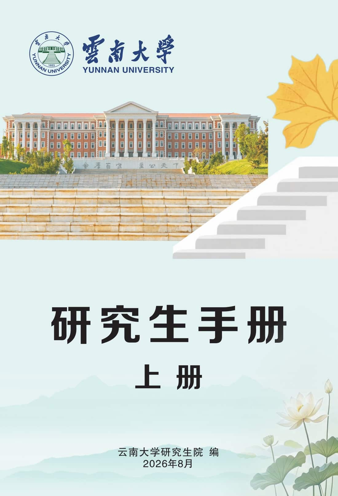
YUNNANUNIVERSITY刂4刂目研究生手册云南大学研究生院编2026年8月
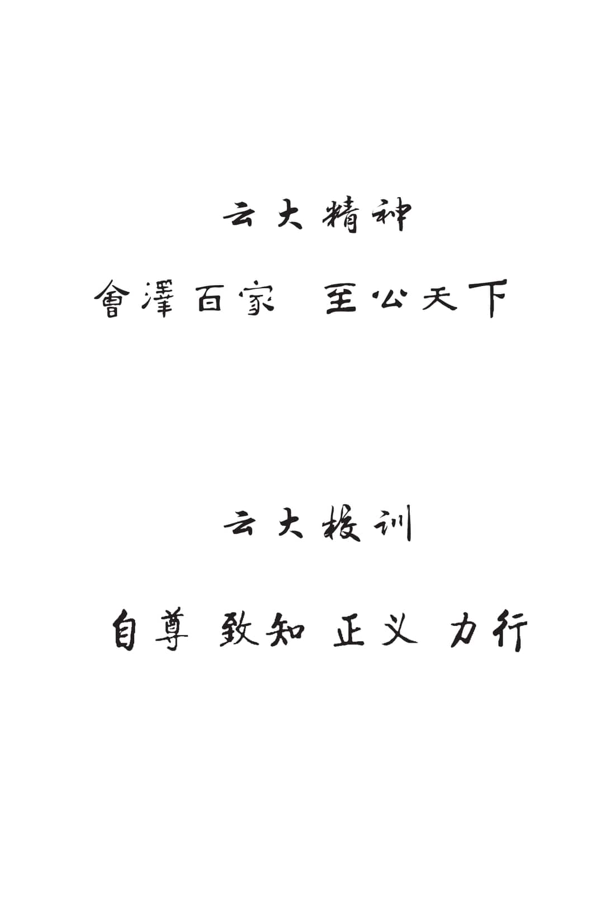
氕沩云个宗至天石。力行白尊致知正义
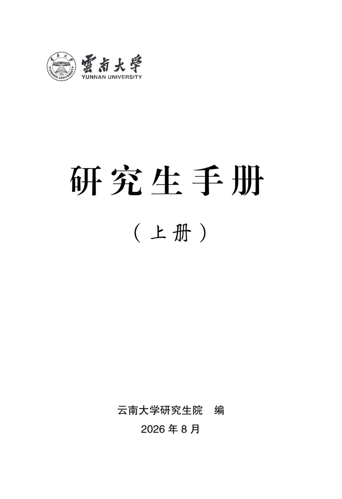
0u№对YUNNANUNIVERSITY（上册）云南大学研究生院编2026年8月

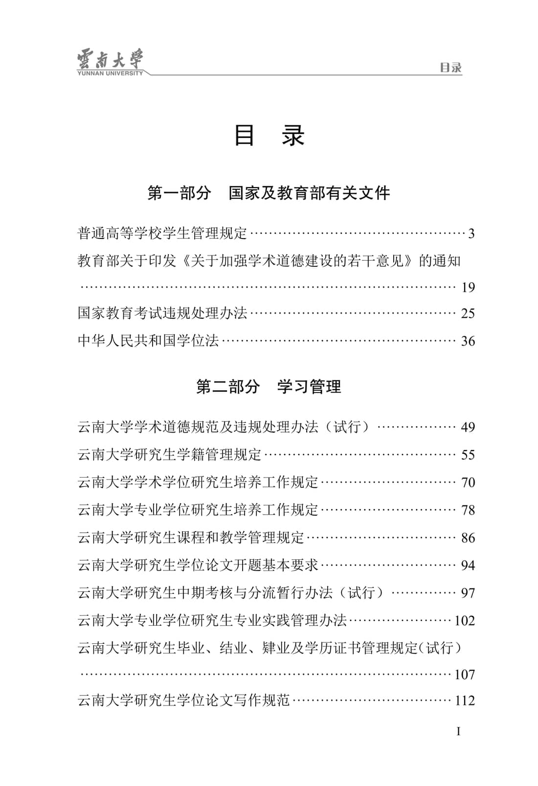
目录YUNNANUNIVERSITY第部分国家及教育部有关文件一普通高等学校学生管理规定．教育部关于印发《关于加强学术道德建设的若干意见》的通知19国家教育考试违规处理办法一中华人民共和国学位法36．一第二部分学习管理云南大学学术道德规范及违规处理办法（试行）49云南大学研究生学籍管理规定．云南大学学术学位研究生培养工作规定·云南大学专业学位研宄生培养工作规定．云南大学研究生课程和教学管理规定86·．云南大学研究生学位论文开题基本要求94．一云南大学研宄生中期考核与分流暂行办法（试行）云南大学专业学位研宄生专业实践管理办法102，，云南大学研究生毕业结业肄业及学历证书管理规定（试行）、、107云南大学研究生学位论文写作规范112·
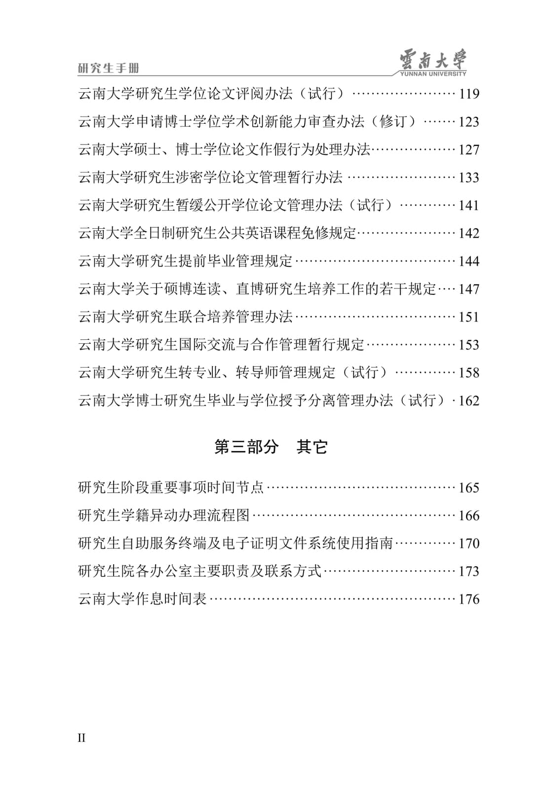
究生手册YUNNANUNIVERSITY云南大学研究生学位论文评阅办法（试行）119一云南大学申请博士学位学术创新能力审查办法（修订）123云南大学硕士博士学位论文作假行为处理办法127、一一云南大学研宄生涉密学位论文管理暂行办法133·一云南大学研宄生暂缓公开学位论文管理办法（试行）141云南大学全日制研究生公共英语课程免修规定142一云南大学研宄生提前毕业管理规定144．云南大学关于硕博连读直博研宄生培养工作的若干规定147、一云南大学研究生联合培养管理办法云南大学研究生国际交流与合作管理暂行规定巧3一·云南大学研宄生转专业转导师管理规定（试行）巧8、云南大学博士研究生毕业与学位授予分离管理办法（试行）162·第三部分其它研宄生阶段重要事项时间节点165．研宄生学籍异动办理流程图166．研究生自助服务终端及电子证明文件系统使用指南170一·研宄生院各办公室主要职责及联系方式173．·云南大学作息时间表176．II
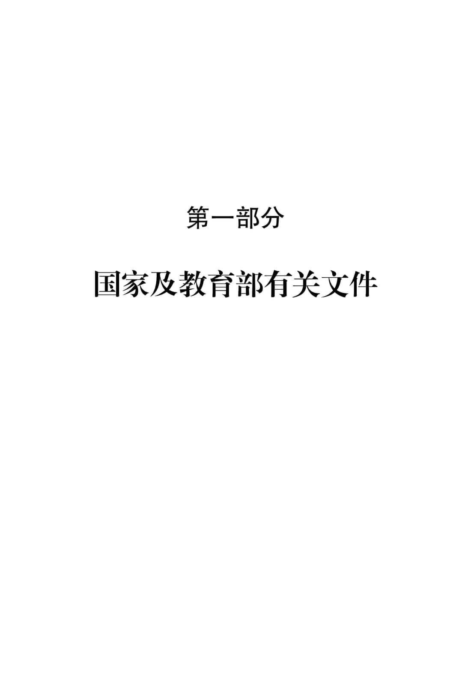
第部分一国家及教育部有关文件

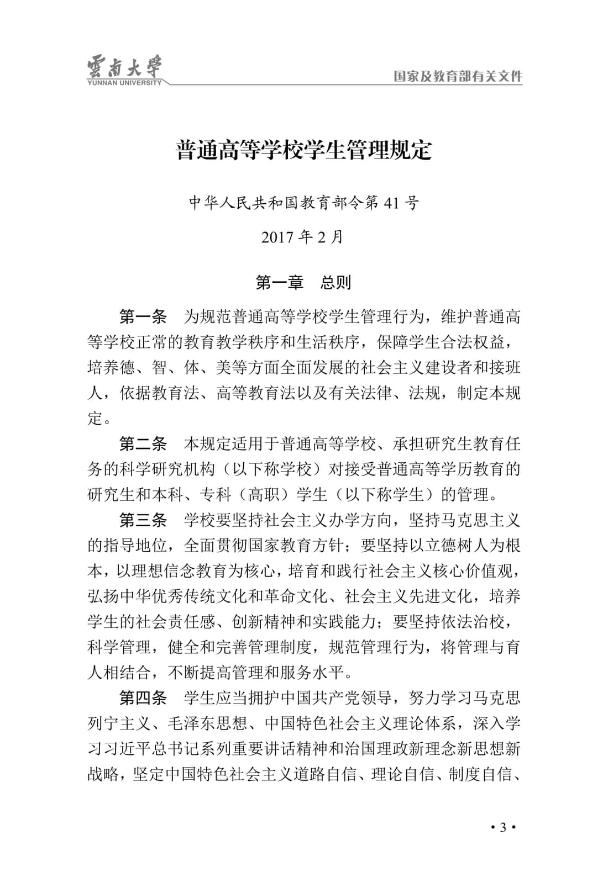
国家及教台剖有关文件YUNNANUNIVERSITY普通高等学校学生管理规定中华人民共和国教育部令第41号2017年2月第总则一早第条为规范普通高等学校学生管理行为维护普通高一，等学校正常的教育教学秩序和生活秩序保障学生合法权益，，培养德智体美等方面全面发展的社会主义建设者和接班、、、人依据教育法高等教育法以及有关法律法规制定本规，、、，定。第二条本规定适用于普通高等学校承担研宄生教育任、务的科学研究机构（以下称学校）对接受普通高等学历教育的研宄生和本科专科（高职）学生（以下称学生）的管理、。第三条学校要坚持社会主义办学方向坚持马克思主义，的指导地位全面贯彻国家教育方针要坚持以立德树人为根，；本以理想信念教育为核心培育和践行社会主义核心价值观，，，弘扬中华优秀传统文化和革命文化社会主义先进文化培养、，学生的社会责任感创新精神和实践能力要坚持依法治校、；，科学管理健全和完善管理制度规范管理行为将管理与育，，，人相结合不断提高管理和服务水平，。第四条学生应当拥护中国共产党领导努力学习马克思，列宁主义毛泽东思想中国特色社会主义理论体系深入学、、，习习近平总书记系列重要讲话精神和治国理政新理念新思想新战略坚定中国特色社会主义道路自信理论自信制度自信，、、、
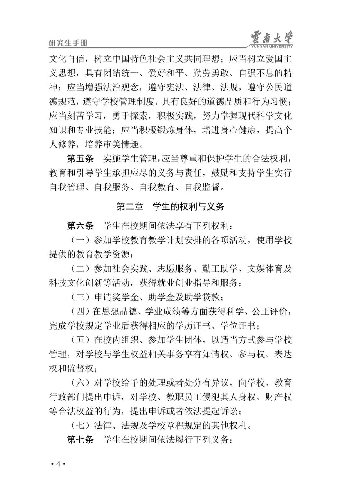
究生手册YUNNANUNIVERSITY文化自信树立中国特色社会主义共同理想应当树立爱国主，；义思想具有团结统爱好和平勤劳勇敢自强不息的精，一、、、神应当增强法治观念遵守宪法法律法规遵守公民道；，、、，德规范遵守学校管理制度具有良好的道德品质和行为习惯，，；应当刻苦学习勇于探索积极实践努力掌握现代科学文化，，，知识和专业技能应当积极锻炼身体增进身心健康提高个；，，人修养培养审美情趣，。第五条实施学生管理应当尊重和保护学生的合法权利，，教育和引导学生承担应尽的义务与责任鼓励和支持学生实行，自我管理自我服务自我教育自我监督、、、。第二章学生的权利与义务第六条学生在校期间依法享有下列权利：（）参加学校教育教学计划安排的各项活动使用学校一，提供的教育教学资源；（二）参加社会实践志愿服务勤工助学文娱体育及、、、科技文化创新等活动获得就业创业指导和服务，；（三）申请奖学金助学金及助学贷款、；（四）在思想品德学业成绩等方面获得科学公正评价、、，完成学校规定学业后获得相应的学历证书学位证书、；（五）在校内组织参加学生团体以适当方式参与学校、，管理对学校与学生权益相关事务享有知情权参与权表达，、、权和监督权；（六）对学校给予的处理或者处分有异议向学校教育，、行政部门提出申诉对学校教职员工侵犯其人身权财产权，、、等合法权益的行为提出申诉或者依法提起诉讼，；（七）法律法规及学校章程规定的其他权利、。第七条学生在校期间依法履行下列义务：
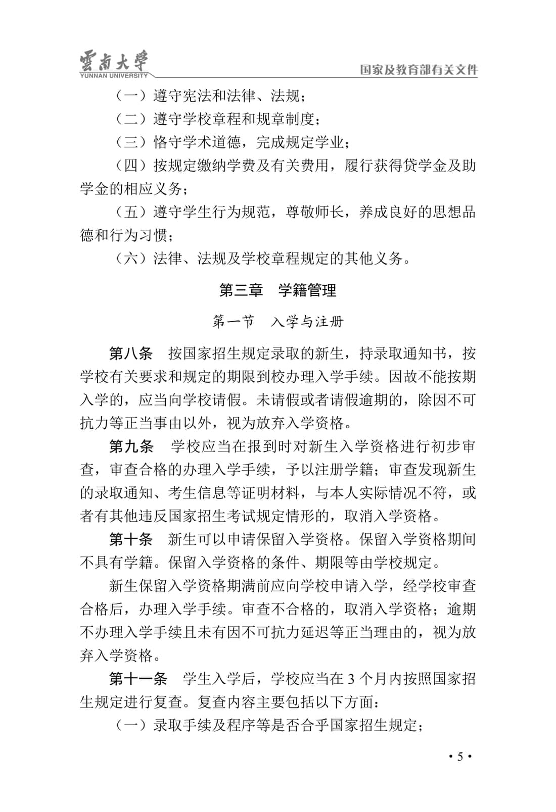
国家及教台剖有关文件YUNNANUNIVERSITY（）遵守宪法和法律法规一、；（二）遵守学校章程和规章制度；（三）恪守学术道德完成规定学业，；（四）按规定缴纳学费及有关费用履行获得贷学金及助，学金的相应义务；（五）遵守学生行为规范尊敬师长养成良好的思想品，，德和行为习惯；（六）法律法规及学校章程规定的其他义务、。第三章耒昔管理子第节入学与注册一第八条按国家招生规定录取的新生持录取通知书按，，学校有关要求和规定的期限到校办理入学手续因故不能按期。入学的应当向学校请假未请假或者请假逾期的除因不可，。，抗力等正当事由以外视为放弃入学资格，。第九条学校应当在报到时对新生入学资格进行初步审查审查合格的办理入学手续予以注册学籍审查发现新生，，；的录取通知考生信息等证明材料与本人实际情况不符或、，，者有其他违反国家招生考试规定情形的取消入学资格，。第十条新生可以申请保留入学资格保留入学资格期间。不具有学籍保留入学资格的条件期限等由学校规定。、。新生保留入学资格期满前应向学校申请入学经学校审查，合格后办理入学手续审查不合格的取消入学资格逾期，。，；不办理入学手续且未有因不可抗力延迟等正当理由的视为放，弃入学资格。第十条学生入学后学校应当在3个月内按照国家招一，生规定进行复查复查内容主要包括以下方面。：（）录取手续及程序等是否合乎国家招生规定一；
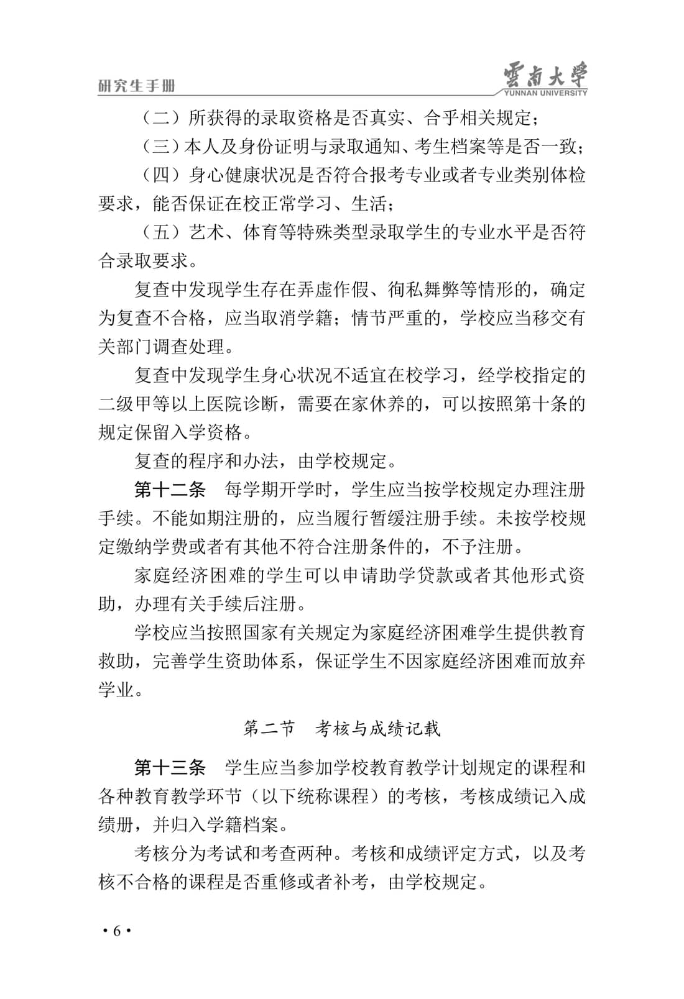
究生手册YUNNANUNIVERSITY（二）所获得的录取资格是否真实合乎相关规定、；（三）本人及身份证明与录取通知考生档案等是否致、一；（四）身心健康状况是否符合报考专业或者专业类别体检要求能否保证在校正常学习生活，、；（五）艺术体育等特殊类型录取学生的专业水平是否符、合录取要求。复查中发现学生存在弄虚作假徇私舞弊等情形的确定、，为复查不合格应当取消学籍情节严重的学校应当移交有，；，关部门调查处理。复查中发现学生身心状况不适宜在校学习经学校指定的，二级甲等以上医院诊断需要在家休养的可以按照第十条的，，规定保留入学资格。复查的程序和办法由学校规定，。第十二条每学期开学时学生应当按学校规定办理注册，手续不能如期注册的应当履行暂缓注册手续未按学校规。，。定缴纳学费或者有其他不符合注册条件的不予注册，。家庭经济困难的学生可以申请助学贷款或者其他形式资助办理有关手续后注册，。学校应当按照国家有关规定为家庭经济困难学生提供教育救助完善学生资助体系保证学生不因家庭经济困难而放弃，，学业。第二节考核与成绩记载第十三条学生应当参加学校教育教学计划规定的课程和各种教育教学环节（以下统称课程）的考核考核成绩记入成，绩册并归入学籍档案，。考核分为考试和考查两种考核和成绩评定方式以及考。，核不合格的课程是否重修或者补考由学校规定，。
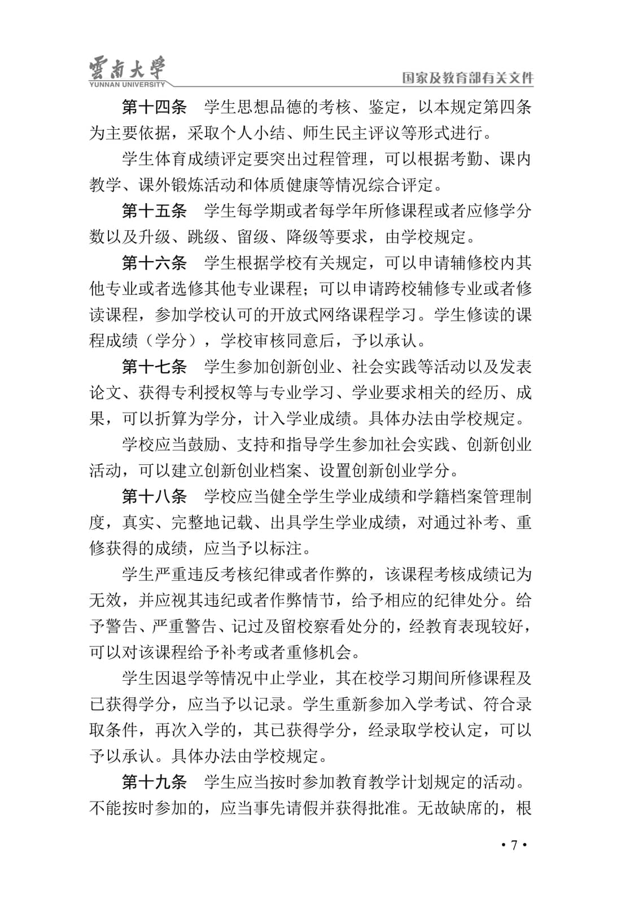
国家及教台剖有关文件YUNNANUNIVERSITY第十四条学生思想品德的考核鉴定以本规定第四条、，为主要依据采取个人小结师生民主评议等形式进行，、。学生体育成绩评定要突出过程管理可以根据考勤课内，、教学课外锻炼活动和体质健康等情况综合评定、。第十五条学生每学期或者每学年所修课程或者应修学分数以及升级跳级留级降级等要求由学校规定、、、，。第十六条学生根据学校有关规定可以申请辅修校内其，他专业或者选修其他专业课程可以申请跨校辅修专业或者修；读课程参加学校认可的开放式网络课程学习学生修读的课，。程成绩（学分）学校审核同意后予以承认，，。第十七条学生参加创新创业社会实践等活动以及发表、论文获得专利授权等与专业学习学业要求相关的经历成、、、果可以折算为学分计入学业成绩具体办法由学校规定，，。。学校应当鼓励支持和指导学生参加社会实践创新创业、、活动可以建立创新创业档案设置创新创业学分，、。第十八条学校应当健全学生学业成绩和学籍档案管理制度真实完整地记载出具学生学业成绩对通过补考重，、、，、修获得的成绩应当予以标注，。学生严重违反考核纪律或者作弊的该课程考核成绩记为，无效并应视其违纪或者作弊情节给予相应的纪律处分给，，。予警告严重警告记过及留校察看处分的经教育表现较好、、，，可以对该课程给予补考或者重修机会。学生因退学等情况中止学业其在校学习期间所修课程及，己获得学分应当予以记录学生重新参加入学考试符合录，。、取条件再次入学的其己获得学分经录取学校认定可以，，，，予以承认具体办法由学校规定。。第十九条学生应当按时参加教育教学计划规定的活动。不能按时参加的应当事先请假并获得批准无故缺席的根，。，
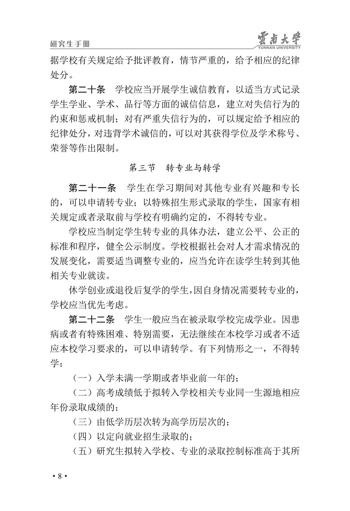
究生手册YUNNANUNIVERSITY据学校有关规定给予批评教育情节严重的给予相应的纪律，，处分。第二十条学校应当开展学生诚信教育以适当方式记录，学生学业学术品行等方面的诚信信息建立对失信行为的、、，约束和惩戒机制对有严重失信行为的可以规定给予相应的；，纪律处分对违背学术诚信的可以对其获得学位及学术称号，，、荣誉等作出限制。第三节转专业与转学第二十条学生在学习期间对其他专业有兴趣和专长一的可以申请转专业以特殊招生形式录取的学生国家有相，；，关规定或者录取前与学校有明确约定的不得转专业，。学校应当制定学生转专业的具体办法建立公平公正的，、标准和程序健全公示制度学校根据社会对人才需求情况的，。发展变化需要适当调整专业的应当允许在读学生转到其他，，相关专业就读。休学创业或退役后复学的学生因自身情况需要转专业的，，学校应当优先考虑。第二十二条学生般应当在被录取学校完成学业因患一。病或者有特殊困难特别需要无法继续在本校学习或者不适、，应本校学习要求的可以申请转学有下列情形之不得转，。一，学：（）入学未满学期或者毕业前年的一一一；（二）高考成绩低于拟转入学校相关专业同生源地相应一年份录取成绩的；（三）由低学历层次转为高学历层次的；（四）以定向就业招生录取的；（五）研宄生拟转入学校专业的录取控制标准高于其所、
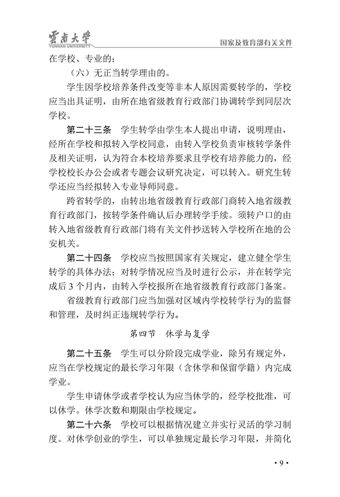
国家及教台剖有关文件YUNNANUNIVERSITY在学校专业的、；（六）无正当转学理由的。学生因学校培养条件改变等非本人原因需要转学的学校，应当出具证明由所在地省级教育行政部门协调转学到同层次，第二十三条学生转学由学生本人提出申请说明理由，，经所在学校和拟转入学校同意由转入学校负责审核转学条件，及相关证明认为符合本校培养要求且学校有培养能力的经，，学校校长办公会或者专题会议研宄决定可以转入研宄生转，。学还应当经拟转入专业导师同意。跨省转学的由转出地省级教育行政部门商转入地省级教，育行政部门按转学条件确认后办理转学手续须转户口的由，。转入地省级教育行政部门将有关文件抄送转入学校所在地的公安机关。第二十四条学校应当按照国家有关规定建立健全学生，转学的具体办法对转学情况应当及时进行公示并在转学完；，成后3个月内由转入学校报所在地省级教育行政部门备案，。省级教育行政部门应当加强对区域内学校转学行为的监督和管理及时纠正违规转学行为，。第四节休学与复学第二十五条学生可以分阶段完成学业除另有规定外，，应当在学校规定的最长学习年限（含休学和保留学籍）内完成学生申请休学或者学校认为应当休学的经学校批准可，，以休学休学次数和期限由学校规定。。第二十六条学校可以根据情况建立并实行灵活的学习制度对休学创业的学生可以单独规定最长学习年限并简化。，，
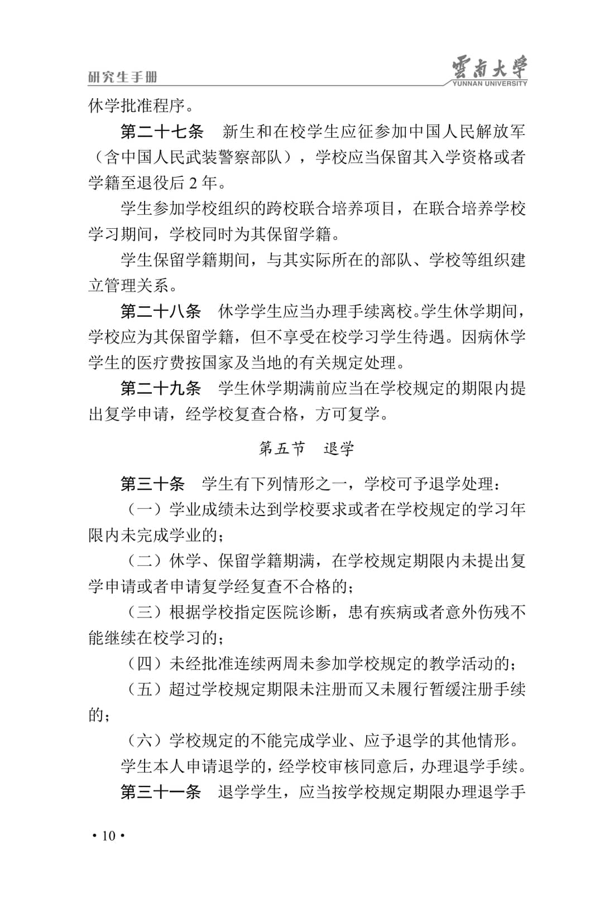
究生手册YUNNANUNIVERSITY休学批准程序。第二十七条新生和在校学生应征参加中国人民解放军（含中国人民武装警察部队）学校应当保留其入学资格或者，学籍至退役后2年。学生参加学校组织的跨校联合培养项目在联合培养学校，学习期间学校同时为其保留学籍，。学生保留学籍期间与其实际所在的部队学校等组织建，、立管理关系。第二十八条休学学生应当办理手续离校学生休学期间。，学校应为其保留学籍但不享受在校学习学生待遇因病休学，。学生的医疗费按国家及当地的有关规定处理。第二十九条学生休学期满前应当在学校规定的期限内提出复学申请经学校复查合格方可复学，，。第五节退学第三十条学生有下列情形之学校可予退学处理一，：（）学业成绩未达到学校要求或者在学校规定的学习年一限内未完成学业的；（二）休学保留学籍期满在学校规定期限内未提出复、，学申请或者申请复学经复查不合格的；（三）根据学校指定医院诊断患有疾病或者意外伤残不，能继续在校学习的；（四）未经批准连续两周未参加学校规定的教学活动的；（五）超过学校规定期限未注册而又未履行暂缓注册手续的；（六）学校规定的不能完成学业应予退学的其他情形、。学生本人申请退学的经学校审核同意后办理退学手续，，。第三十条退学学生应当按学校规定期限办理退学手一，·10·
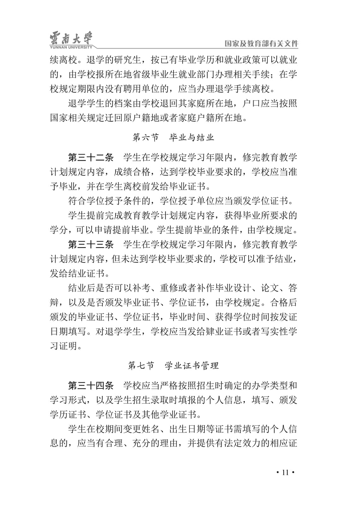
国家及教台剖有关文件YUNNANUNIVERSITY续离校退学的研宄生按己有毕业学历和就业政策可以就业。，的由学校报所在地省级毕业生就业部门办理相关手续在学，；校规定期限内没有聘用单位的应当办理退学手续离校，。退学学生的档案由学校退回其家庭所在地户口应当按照，国家相关规定迁回原户籍地或者家庭户籍所在地。六毕业与结业甲第三十二条学生在学校规定学习年限内修完教育教学，计划规定内容成绩合格达到学校毕业要求的学校应当准，，，予毕业并在学生离校前发给毕业证书，。符合学位授予条件的学位授予单位应当颁发学位证书，。学生提前完成教育教学计划规定内容获得毕业所要求的，学分可以申请提前毕业学生提前毕业的条件由学校规定，。，。第三十三条学生在学校规定学习年限内修完教育教学，计划规定内容但未达到学校毕业要求的学校可以准予结业，，，发给结业证书。结业后是否可以补考重修或者补作毕业设计论文答、、、辩以及是否颁发毕业证书学位证书由学校规定合格后，、，。颁发的毕业证书学位证书毕业时间获得学位时间按发证、，、日期填写对退学学生学校应当发给肄业证书或者写实性学。，习证明。第七节学业证书管理第三十四条学校应当严格按照招生时确定的办学类型和学习形式以及学生招生录取时填报的个人信息填写颁发，，、学历证书学位证书及其他学业证书、。学生在校期间变更姓名出生日期等证书需填写的个人信、息的应当有合理充分的理由并提供有法定效力的相应证，、，
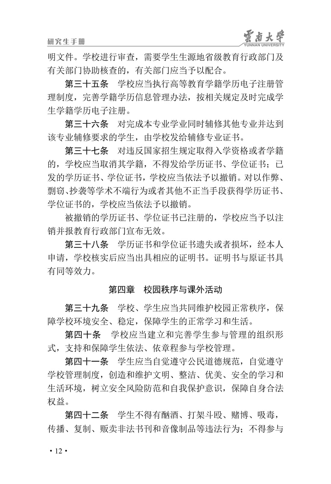
究生手册YUNNANUNIVERSITY月文件学校进行审查需要学生生源地省级教育行政部门及。，有关部门协助核查的有关部门应当予以配合，。第三十五条学校应当执行高等教育学籍学历电子注册管理制度完善学籍学历信息管理办法按相关规定及时完成学，，生学籍学历电子注册。第三十六条对完成本专业学业同时辅修其他专业并达到该专业辅修要求的学生由学校发给辅修专业证书，。第三十七条对违反国家招生规定取得入学资格或者学籍的学校应当取消其学籍不得发给学历证书学位证书己，，、；发的学历证书学位证书学校应当依法予以撤销对以作弊、，。、剽窃抄袭等学术不端行为或者其他不正当手段获得学历证书、、学位证书的学校应当依法予以撤销，。被撤销的学历证书学位证书己注册的学校应当予以注、，销并报教育行政部门宣布无效。第三十八条学历证书和学位证书遗失或者损坏经本人，申请学校核实后应当出具相应的证明书证明书与原证书具，。有同等效力。第四章校园秩序与课外活动第三十九条学校学生应当共同维护校园正常秩序保、，障学校环境安全稳定保障学生的正常学习和生活、，。第四十条学校应当建立和完善学生参与管理的组织形式支持和保障学生依法依章程参与学校管理，、。第四十条学生应当自觉遵守公民道德规范自觉遵守一，学校管理制度创造和维护文明整洁优美安全的学习和，、、、生活环境树立安全风险防范和自我保护意识保障自身合法，，权益。第四十二条学生不得有酗酒打架斗殴赌博吸毒、、、，传播复制贩卖非法书刊和音像制品等违法行为不得参与、、；·12·
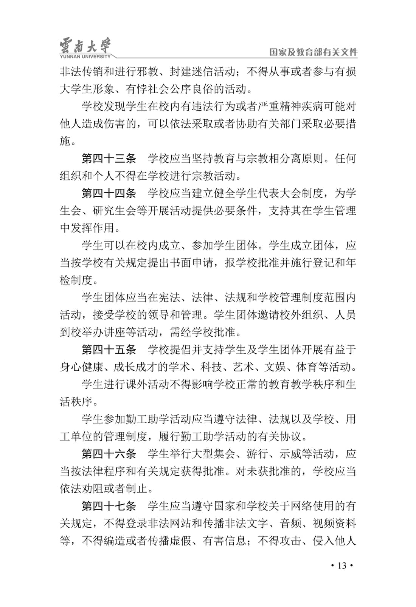
国家及教台剖有关文件YUNNANUNIVERSITY非法传销和进行邪教封建迷信活动不得从事或者参与有损、；大学生形象有悖社会公序良俗的活动、。学校发现学生在校内有违法行为或者严重精神疾病可能对他人造成伤害的可以依法采取或者协助有关部门采取必要措，施。第四十三条学校应当坚持教育与宗教相分离原则任何。组织和个人不得在学校进行宗教活动。第四十四条学校应当建立健全学生代表大会制度为学，生会研宄生会等开展活动提供必要条件支持其在学生管理、，中发挥作用。学生可以在校内成立参加学生团体学生成立团体应、。，当按学校有关规定提出书面申请报学校批准并施行登记和年，检制度。学生团体应当在宪法法律法规和学校管理制度范围内、、活动接受学校的领导和管理学生团体邀请校外组织人员，。、到校举办讲座等活动需经学校批准，。第四十五条学校提倡并支持学生及学生团体开展有益于身心健康成长成才的学术科技艺术文娱体育等活动、、、、、。学生进行课外活动不得影响学校正常的教育教学秩序和生活秩序。学生参加勤工助学活动应当遵守法律法规以及学校用、、工单位的管理制度履行勤工助学活动的有关协议，。第四十六条学生举行大型集会游行示威等活动应、、，当按法律程序和有关规定获得批准对未获批准的学校应当。，依法劝阻或者制止第四十七条学生应当遵守国家和学校关于网络使用的有关规定不得登录非法网站和传播非法文字音频视频资料，、、等不得编造或者传播虚假有害信息不得攻击侵入他人，、；、·13·
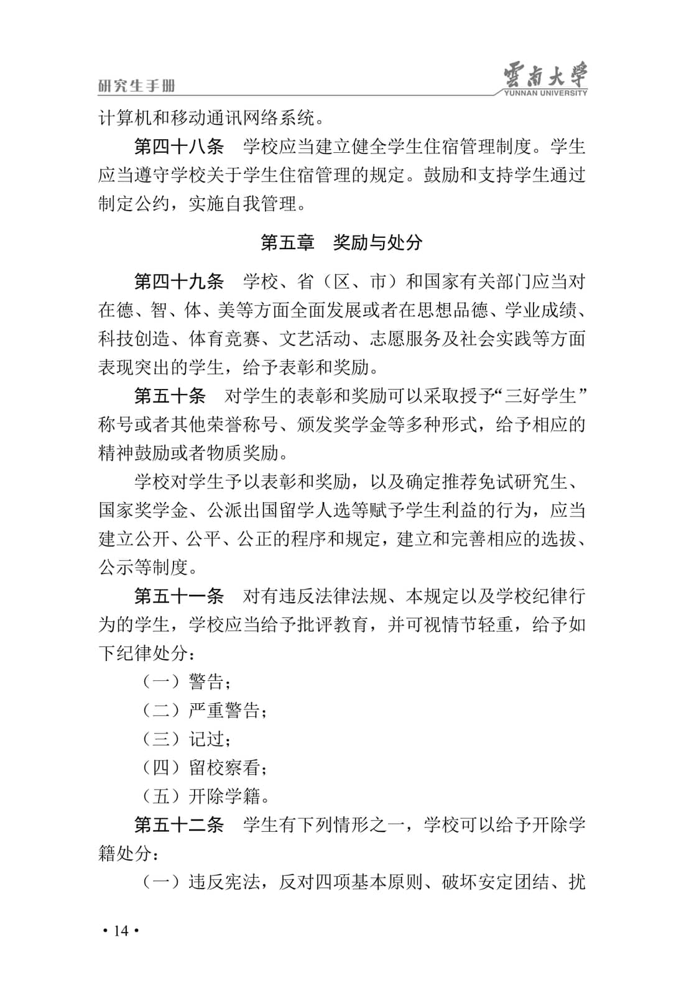
究生手册YUNNANUNIVERSITY计算机和移动通讯网络系统。第四十八条学校应当建立健全学生住宿管理制度学生。应当遵守学校关于学生住宿管理的规定鼓励和支持学生通过。制定公约实施自我管理，。第五章奖励与处分第四十九条学校省（区市）和国家有关部门应当对、、在德智体美等方面全面发展或者在思想品德学业成绩、、、、、科技创造体育竞赛文艺活动志愿服务及社会实践等方面、、、表现突出的学生给予表彰和奖励，。第五十条对学生的表彰和奖励可以采取授予“三好学生”称号或者其他荣誉称号颁发奖学金等多种形式给予相应的、，精神鼓励或者物质奖励。学校对学生予以表彰和奖励以及确定推荐免试研宄生，、国家奖学金公派出国留学人选等赋予学生利益的行为应当、，建立公开公平公正的程序和规定建立和完善相应的选拔、、，、公示等制度。第五十条对有违反法律法规本规定以及学校纪律行一、为的学生学校应当给予批评教育并可视情节轻重给予如，，，下纪律处分：（）警告一·（二）严重警告；（三）记过；（四）留校察看；（五）开除学籍。第五十二条学生有下列情形之学校可以给予开除学一，籍处分：（）违反宪法反对四项基本原则破坏安定团结扰一，、、·14·
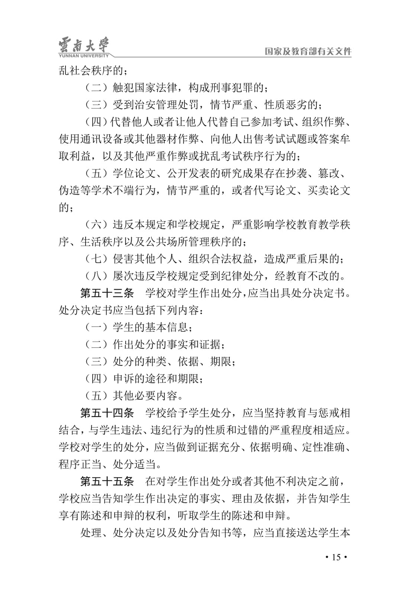
国家及教台剖有关文件YUNNANUNIVERSITY乱社会秩序的；（二）触犯国家法律构成刑事犯罪的，；（三）受到治安管理处罚情节严重性质恶劣的，、；（四）代替他人或者让他人代替自己参加考试组织作弊、、使用通讯设备或其他器材作弊向他人出售考试试题或答案牟、取利益以及其他严重作弊或扰乱考试秩序行为的，；（五）学位论文公开发表的研宄成果存在抄袭篡改、、、伪造等学术不端行为情节严重的或者代写论文买卖论文，，、的；（六）违反本规定和学校规定严重影响学校教育教学秩，序生活秩序以及公共场所管理秩序的、；（七）侵害其他个人组织合法权益造成严重后果的、，；（八）屡次违反学校规定受到纪律处分经教育不改的，。第五十三条学校对学生作出处分应当出具处分决定书，。处分决定书应当包括下列内容：（）学生的基本信息一；（二）作出处分的事实和证据；（三）处分的种类依据期限、、；（四）申诉的途径和期限，（五）其他必要内容。第五十四条学校给予学生处分应当坚持教育与惩戒相，结合与学生违法违纪行为的性质和过错的严重程度相适应，、。学校对学生的处分应当做到证据充分依据明确定性准确，、、、程序正当处分适当、。第五十五条在对学生作出处分或者其他不利决定之前，学校应当告知学生作出决定的事实理由及依据并告知学生、，享有陈述和申辩的权利听取学生的陈述和申辩，。处理处分决定以及处分告知书等应当直接送达学生本、，·巧·
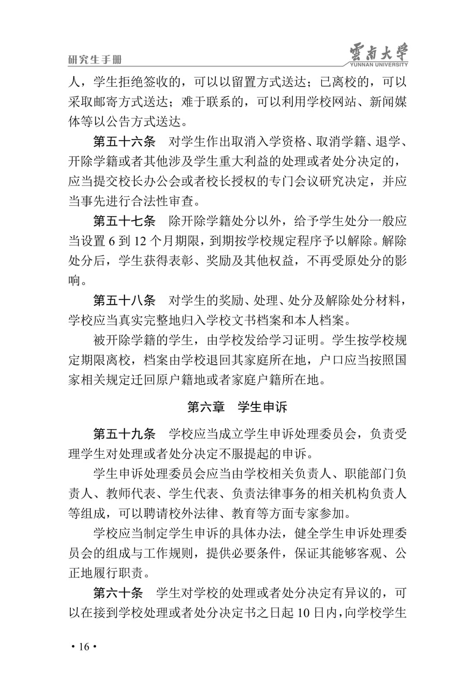
究生手册YUNNANUNIVERSITY人学生拒绝签收的可以以留置方式送达己离校的可以，，；，采取邮寄方式送达难于联系的可以利用学校网站新闻媒；，、体等以公告方式送达。第五十六条对学生作出取消入学资格取消学籍退学、、、开除学籍或者其他涉及学生重大利益的处理或者处分决定的，应当提交校长办公会或者校长授权的专门会议研宄决定并应，当事先进行合法性审查。第五十七条除开除学籍处分以外给予学生处分般应，一当设置6到12个月期限到期按学校规定程序予以解除解除，。处分后学生获得表彰奖励及其他权益不再受原处分的影，、，第五十八条对学生的奖励处理处分及解除处分材料、、，学校应当真实完整地归入学校文书档案和本人档案。被开除学籍的学生由学校发给学习证明学生按学校规，。定期限离校档案由学校退回其家庭所在地户口应当按照国，，家相关规定迁回原户籍地或者家庭户籍所在地。第六章学生申诉第五十九条学校应当成立学生申诉处理委员会负责受，理学生对处理或者处分决定不服提起的申诉。学生申诉处理委员会应当由学校相关负责人职能部门负、责人教师代表学生代表负责法律事务的相关机构负责人、、、等组成可以聘请校外法律教育等方面专家参加，、。学校应当制定学生申诉的具体办法健全学生申诉处理委，员会的组成与工作规则提供必要条件保证其能够客观公，，、正地履行职责。第六十条学生对学校的处理或者处分决定有异议的可，以在接到学校处理或者处分决定书之日起10日内向学校学生，·16·
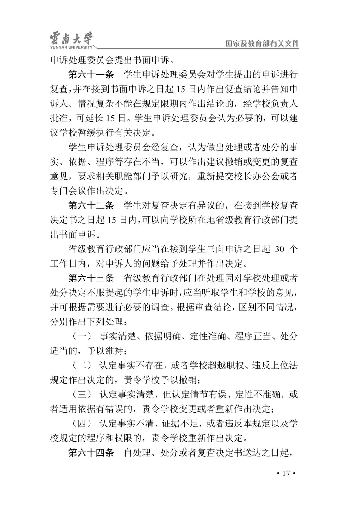
国家及教台剖有关文件YUNNANUNIVERSITY申诉处理委员会提出书面申诉。第六十条学生申诉处理委员会对学生提出的申诉进行一复查并在接到书面申诉之日起巧日内作出复查结论并告知申，诉人情况复杂不能在规定限期内作出结论的经学校负责人。，批准可延长巧日学生申诉处理委员会认为必要的可以建，。，议学校暂缓执行有关决定。学生申诉处理委员会经复查认为做出处理或者处分的事，实依据程序等存在不当可以作出建议撤销或变更的复查、、，意见要求相关职能部门予以研宄重新提交校长办公会或者，，专门会议作出决定。第六十二条学生对复查决定有异议的在接到学校复查，决定书之日起巧日内可以向学校所在地省级教育行政部门提，出书面申诉。省级教育行政部门应当在接到学生书面申诉之日起30个工作日内对申诉人的问题给予处理并作出决定，。第六十三条省级教育行政部门在处理因对学校处理或者处分决定不服提起的学生申诉时应当听取学生和学校的意见，，并可根据需要进行必要的调查根据审查结论区别不同情况。，，分别作出下列处理：（）事实清楚依据明确定性准确程序正当处分一、、、、适当的予以维持，；（二）认定事实不存在或者学校超越职权违反上位法，、规定作出决定的责令学校予以撤销，；（三）认定事实清楚但认定情节有误定性不准确或，、，者适用依据有错误的责令学校变更或者重新作出决定，；（四）认定事实不清证据不足或者违反本规定以及学、，校规定的程序和权限的责令学校重新作出决定，。第六十四条自处理处分或者复查决定书送达之日起、，·17·
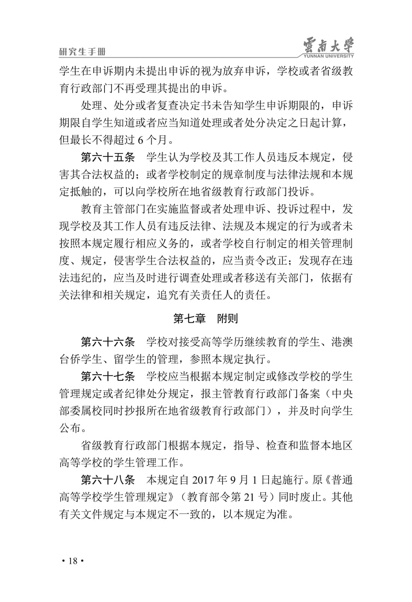
究生手册YUNNANUNIVERSITY学生在申诉期内未提出申诉的视为放弃申诉学校或者省级教，育行政部门不再受理其提出的申诉。处理处分或者复查决定书未告知学生申诉期限的申诉、，期限自学生知道或者应当知道处理或者处分决定之日起计算，但最长不得超过6个月。第六十五条学生认为学校及其工作人员违反本规定侵，害其合法权益的或者学校制定的规章制度与法律法规和本规；定抵触的可以向学校所在地省级教育行政部门投诉，。教育主管部门在实施监督或者处理申诉投诉过程中发、，现学校及其工作人员有违反法律法规及本规定的行为或者未、按照本规定履行相应义务的或者学校自行制定的相关管理制，度规定侵害学生合法权益的应当责令改正发现存在违、，，；法违纪的应当及时进行调查处理或者移送有关部门依据有，，关法律和相关规定追宄有关责任人的责任，。第七章附则第六十六条学校对接受高等学历继续教育的学生港澳、台侨学生留学生的管理参照本规定执行、，。第六十七条学校应当根据本规定制定或修改学校的学生管理规定或者纪律处分规定报主管教育行政部门备案（中央，部委属校同时抄报所在地省级教育行政部门）并及时向学生，公布。省级教育行政部门根据本规定指导检查和监督本地区，、高等学校的学生管理工作。第六十八条本规定自2017年9月1日起施行原《普通。高等学校学生管理规定》（教育部令第21号）同时废止其他。有关文件规定与本规定不致的以本规定为准一，。·18·
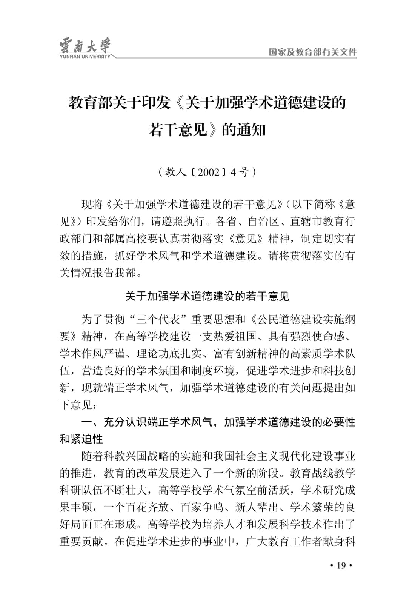
国家及教台剖有关文件YUNNANUNIVERSITY教育部关于印发《关于加强学术道德建设的若干意见》的通知（教人〔2002〕4号）现将《关于加强学术道德建设的若干意见》（以下简称《意见》）印发给你们请遵照执行各省自治区直辖市教育行，。、、政部门和部属高校要认真贯彻落实《意见》精神制定切实有，效的措施抓好学术风气和学术道德建设请将贯彻落实的有，。关情况报告我部。关于加强学术道德建设的若干意见为了贯彻“三个代表”重要思想和《公民道德建设实施纲要》精神在高等学校建设支热爱祖国具有强烈使命感，一、、学术作风严谨理论功底扎实富有创新精神的高素质学术队、、伍营造良好的学术氛围和制度环境促进学术进步和科技创，，新现就端正学术风气加强学术道德建设的有关问题提出如，，下意见：充分认识端正学术风气加强学术道德建设的必要性、，和紧迫性随着科教兴国战略的实施和我国社会主义现代化建设事业的推进教育的改革发展进入了个新的阶段教育战线教学，一。科研队伍不断壮大高等学校学术气氛空前活跃学术研宄成，，果丰硕个百花齐放百家争鸣新人辈出学术繁荣的良，一、、、好局面正在形成高等学校为培养人才和发展科学技术作出了。重要贡献在促进学术进步的事业中广大教育工作者献身科。，·19·
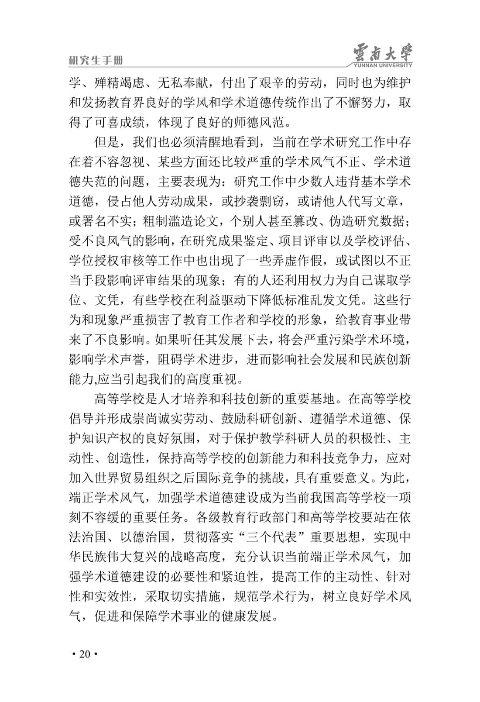
究生手册YUNNANUNIVERSITY学殚精竭虑无私奉献付出了艰辛的劳动同时也为维护、、，，和发扬教育界良好的学风和学术道德传统作出了不懈努力取，得了可喜成绩体现了良好的师德风范，。但是我们也必须清醒地看到当前在学术研宄工作中存，，在着不容忽视某些方面还比较严重的学术风气不正学术道、、德失范的问题主要表现为研宄工作中少数人违背基本学术，：道德侵占他人劳动成果或抄袭剽窃或请他人代写文章，，，，或署名不实粗制滥造论文个别人甚至篡改伪造研宄数据；，、；受不良风气的影响在研宄成果鉴定项目评审以及学校评估，、、学位授权审核等工作中也出现了些弄虚作假或试图以不正一，当手段影响评审结果的现象有的人还利用权力为自己谋取学；位文凭有些学校在利益驱动下降低标准乱发文凭这些行、，。为和现象严重损害了教育工作者和学校的形象给教育事业带，来了不良影响如果听任其发展下去将会严重污染学术环境。，，影响学术声誉阻碍学术进步进而影响社会发展和民族创新，，能力应当引起我们的高度重视，。高等学校是人才培养和科技创新的重要基地在高等学校。倡导并形成崇尚诚实劳动鼓励科研创新遵循学术道德保、、、护知识产权的良好氛围对于保护教学科研人员的积极性主，、动性创造性保持高等学校的创新能力和科技竞争力应对、，，加入世界贸易组织之后国际竞争的挑战具有重要意义为此，。，端正学术风气加强学术道德建设成为当前我国高等学校项，一刻不容缓的重要任务各级教育行政部门和高等学校要站在依。法治国以德治国贯彻落实“三个代表”重要思想实现中、，，华民族伟大复兴的战略高度充分认识当前端正学术风气加，，强学术道德建设的必要性和紧迫性提高工作的主动性针对，、性和实效性采取切实措施规范学术行为树立良好学术风，，，气促进和保障学术事业的健康发展，。·20·
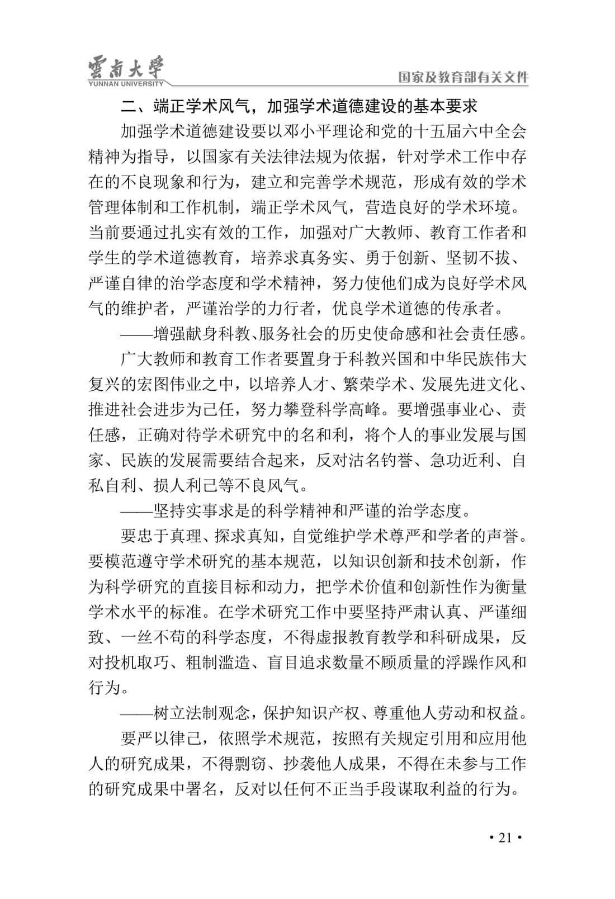
国家及教台剖有关文件YUNNANUNIVERSITY二端正学术风气加强学术道德建设的基本要求、，加强学术道德建设要以邓小平理论和党的十五届六中全会精神为指导以国家有关法律法规为依据针对学术工作中存，，在的不良现象和行为建立和完善学术规范形成有效的学术，，管理体制和工作机制端正学术风气营造良好的学术环境，，。当前要通过扎实有效的工作加强对广大教师教育工作者和，、学生的学术道德教育培养求真务实勇于创新坚韧不拔，、、、严谨自律的治学态度和学术精神努力使他们成为良好学术风，气的维护者严谨治学的力行者优良学术道德的传承者，，。增强献身科教服务社会的历史使命感和社会责任感一一、。广大教师和教育工作者要置身于科教兴国和中华民族伟大复兴的宏图伟业之中以培养人才繁荣学术发展先进文化，、、、推进社会进步为己任努力攀登科学高峰要增强事业心责，。、任感正确对待学术研究中的名和利将个人的事业发展与国，，家民族的发展需要结合起来反对沽名钓誉急功近利自、，、、私自利损人利己等不良风气、。坚持实事求是的科学精神和严谨的治学态度。要忠于真理探求真知自觉维护学术尊严和学者的声誉、，。要模范遵守学术研宄的基本规范以知识创新和技术创新作，，为科学研宄的直接目标和动力把学术价值和创新性作为衡量，学术水平的标准在学术研究工作中要坚持严肃认真严谨细。、致丝不苟的科学态度不得虚报教育教学和科研成果反、一，，对投机取巧粗制滥造盲目追求数量不顾质量的浮躁作风和、、行为。树立法制观念保护知识产权尊重他人劳动和权益，、。要严以律己依照学术规范按照有关规定引用和应用他，，人的研宄成果不得剽窃抄袭他人成果不得在未参与工作，、，的研宄成果中署名反对以任何不正当手段谋取利益的行为，。
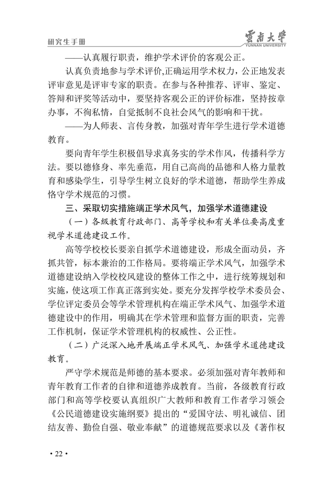
究生手册YUNNANUNIVERSITY认真履行职责维护学术评价的客观公正一一，。认真负责地参与学术评价正确运用学术权力公正地发表，，评审意见是评审专家的职责在参与各种推荐评审鉴定。、、、答辩和评奖等活动中要坚持客观公正的评价标准坚持按章，，办事不徇私情自觉抵制不良社会风气的影响和干扰，，。为人师表言传身教加强对青年学生进行学术道德一．．．．一、，要向青年学生积极倡导求真务实的学术作风传播科学方，法要以德修身率先垂范用自己高尚的品德和人格力量教。、，育和感染学生引导学生树立良好的学术道德帮助学生养成，，恪守学术规范的习惯。采取切实措施端正学术风气加强学术道德建设、，（）各级教育行政部门高等学校和有关单位要高度重一、视学术道德建设工作。高等学校校长要亲自抓学术道德建设形成全面动员齐，，抓共管标本兼治的工作格局要将端正学术风气加强学术，。，道德建设纳入学校校风建设的整体工作之中进行统筹规划和，实施使这项工作真正落到实处要充分发挥学校学术委员会，。、学位评定委员会等学术管理机构在端正学术风气加强学术道、德建设中的作用明确其在学术管理和监督方面的职责完善，，工作机制保证学术管理机构的权威性公正性，、。（二）广泛深入地开展端正学术风气加强学术道德建设、严守学术规范是师德的基本要求必须加强对青年教师和。青年教育工作者的自律和道德养成教育当前各级教育行政。，部门和高等学校要认真组织广大教师和教育工作者学习领会《公民道德建设实施纲要》提出的“爱国守法明礼诚信团、、结友善勤俭自强敬业奉献”的道德规范要求以及《著作权、、
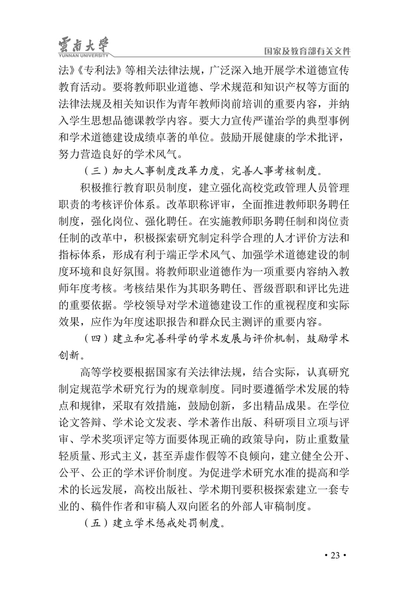
国家及教台剖有关文件YUNNANUNIVERSITY法》《专利法》等相关法律法规广泛深入地开展学术道德宣传，教育活动要将教师职业道德学术规范和知识产权等方面的。、法律法规及相关知识作为青年教师岗前培训的重要内容并纳，入学生思想品德课教学内容要大力宣传严谨治学的典型事例。和学术道德建设成绩卓著的单位鼓励开展健康的学术批评。，努力营造良好的学术风气。（三）加大人事制度改革力度完善人事考核制度，。积极推行教育职员制度建立强化高校党政管理人员管理，职责的考核评价体系改革职称评审全面推进教师职务聘任。，制度强化岗位强化聘任在实施教师职务聘任制和岗位责，、。任制的改革中积极探索研宄制定科学合理的人才评价方法和，指标体系形成有利于端正学术风气加强学术道德建设的制，、度环境和良好氛围将教师职业道德作为项重要内容纳入教。一师年度考核考核结果作为其职务聘任晋级晋职和评比先进。、的重要依据学校领导对学术道德建设工作的重视程度和实际。效果应作为年度述职报告和群众民主测评的重要内容，。（四）建立和完善科学的学术发展与评价机制鼓励学术，创新。高等学校要根据国家有关法律法规结合实际认真研宄，，制定规范学术研宄行为的规章制度同时要遵循学术发展的特。点和规律采取有效措施鼓励创新多出精品成果在学位，，，。论文答辩学术论文发表学术著作出版科研项目立项与评、、、审学术奖项评定等方面要体现正确的政策导向防止重数量、，轻质量形式主义甚至弄虚作假等不良倾向建立健全公开、，，、公平公正的学术评价制度为促进学术研宄水准的提高和学、。术的长远发展高校出版社学术期刊要积极探索建立套专，、一业的稿件作者和审稿人双向匿名的外部人审稿制度、。（五）建立学术惩戒处罚制度。·23·
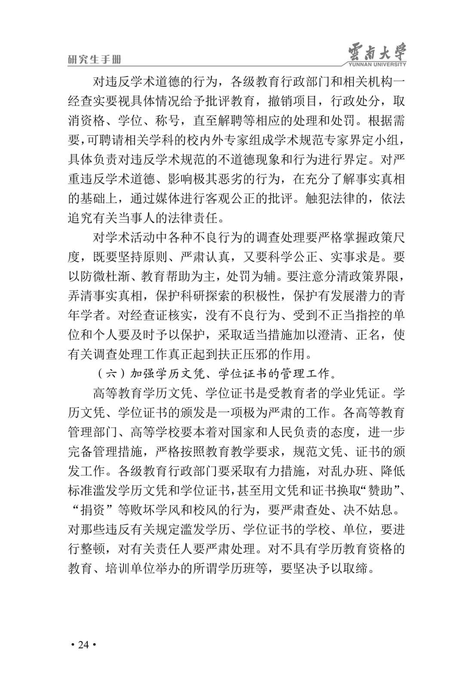
究生手册YUNNANUNIVERSITY对违反学术道德的行为各级教育行政部门和相关机构，一经查实要视具体情况给予批评教育撤销项目行政处分取，，，消资格学位称号直至解聘等相应的处理和处罚根据需、、，。要可聘请相关学科的校内外专家组成学术规范专家界定小组，，具体负责对违反学术规范的不道德现象和行为进行界定对严。重违反学术道德影响极其恶劣的行为在充分了解事实真相、，的基础上通过媒体进行客观公正的批评触犯法律的依法，。，追宄有关当事人的法律责任。对学术活动中各种不良行为的调查处理要严格掌握政策尺度既要坚持原则严肃认真又要科学公正实事求是要，、，、。以防微杜渐教育帮助为主处罚为辅要注意分清政策界限、，。，弄清事实真相保护科研探索的积极「生保护有发展潜力的青，，年学者对经查证核实没有不良行为受到不正当指控的单。，、位和个人要及时予以保护采取适当措施加以澄清正名使，、，有关调查处理工作真正起到扶正压邪的作用。（六）加强学历文凭学位证书的管理工作、。高等教育学历文凭学位证书是受教育者的学业凭证学、。历文凭学位证书的颁发是项极为严肃的工作各高等教育、一。管理部门高等学校要本着对国家和人民负责的态度进步、，一完备管理措施严格按照教育教学要求规范文凭证书的颁，，、发工作各级教育行政部门要采取有力措施对乱办班降低。，、标准滥发学历文凭和学位证书甚至用文凭和证书换取“赞助”，、捐贡等败坏学风和校风的行为要严肃查处决不姑息，、。对那些违反有关规定滥发学历学位证书的学校单位要进、、，行整顿对有关责任人要严肃处理对不具有学历教育资格的，。教育培训单位举办的所谓学历班等要坚决予以取缔、，。·24·
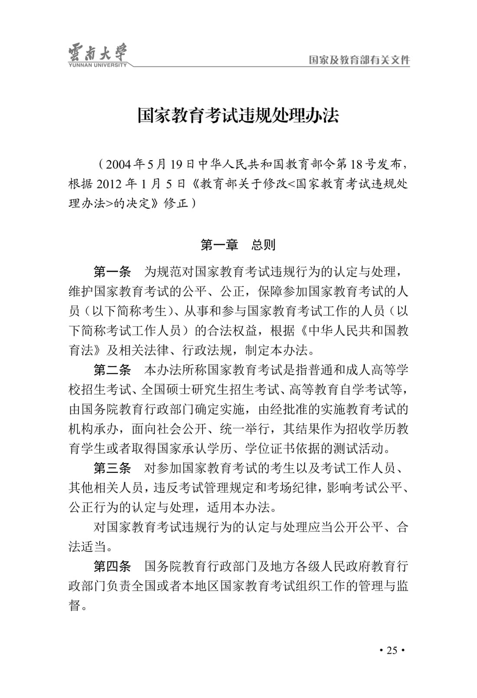
国家及教台剖有关文件YUNNANUNIVERSITY国家教育考试违规处理办法（2004年5月19日中华人民共和国教育部令第18号发布，根据2012年1月5日《教育部关于修改<国家教育考试违规处理办法>的决定》修正）第章总则一第条为规范对国家教育考试违规行为的认定与处理一，维护国家教育考试的公平公正保障参加国家教育考试的人、，员（以下简称考生）从事和参与国家教育考试工作的人员（以、下简称考试工作人员）的合法权益根据《中华人民共和国教，育法》及相关法律行政法规制定本办法、，。第二条本办法所称国家教育考试是指普通和成人高等学校招生考试全国硕士研宄生招生考试高等教育自学考试等、、，由国务院教育行政部门确定实施由经批准的实施教育考试的，机构承办面向社会公开统举行其结果作为招收学历教，、一，育学生或者取得国家承认学历学位证书依据的测试活动、。第三条对参加国家教育考试的考生以及考试工作人员、其他相关人员违反考试管理规定和考场纪律影响考试公平，，、公正行为的认定与处理适用本办法，。对国家教育考试违规行为的认定与处理应当公开公平合、法适当。第四条国务院教育行政部门及地方各级人民政府教育行政部门负责全国或者本地区国家教育考试组织工作的管理与监督。
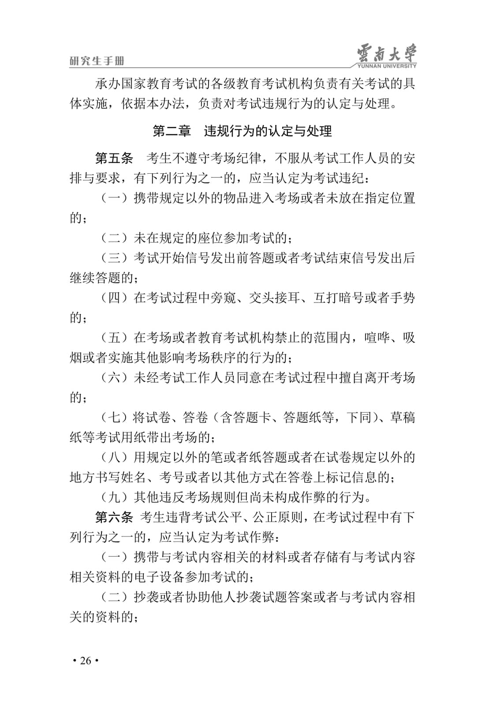
究生手册YUNNANUNIVERSITY承办国家教育考试的各级教育考试机构负责有关考试的具体实施依据本办法负责对考试违规行为的认定与处理，，。第二章违规行为的认定与处理第五条考生不遵守考场纪律不服从考试工作人员的安，排与要求有下列行为之的应当认定为考试违纪，一，：（）携带规定以外的物品进入考场或者未放在指定位置一的；（二）未在规定的座位参加考试的；（三）考试开始信号发出前答题或者考试结束信号发出后继续答题的；（四）在考试过程中旁窥交头接耳互打暗号或者手势、、的；（五）在考场或者教育考试机构禁止的范围内喧哗吸，、烟或者实施其他影响考场秩序的行为的；（六）未经考试工作人员同意在考试过程中擅自离开考场的；（七）将试卷答卷（含答题卡答题纸等下同）草稿、、，、纸等考试用纸带出考场的；（八）用规定以外的笔或者纸答题或者在试卷规定以外的地方书写姓名考号或者以其他方式在答卷上标记信息的、；（九）其他违反考场规则但尚未构成作弊的行为。第六条考生违背考试公平公正原则在考试过程中有下、，列行为之的应当认定为考试作弊一，：（）携带与考试内容相关的材料或者存储有与考试内容一相关资料的电子设备参加考试的；（二）抄袭或者协助他人抄袭试题答案或者与考试内容相关的资料的；·26·
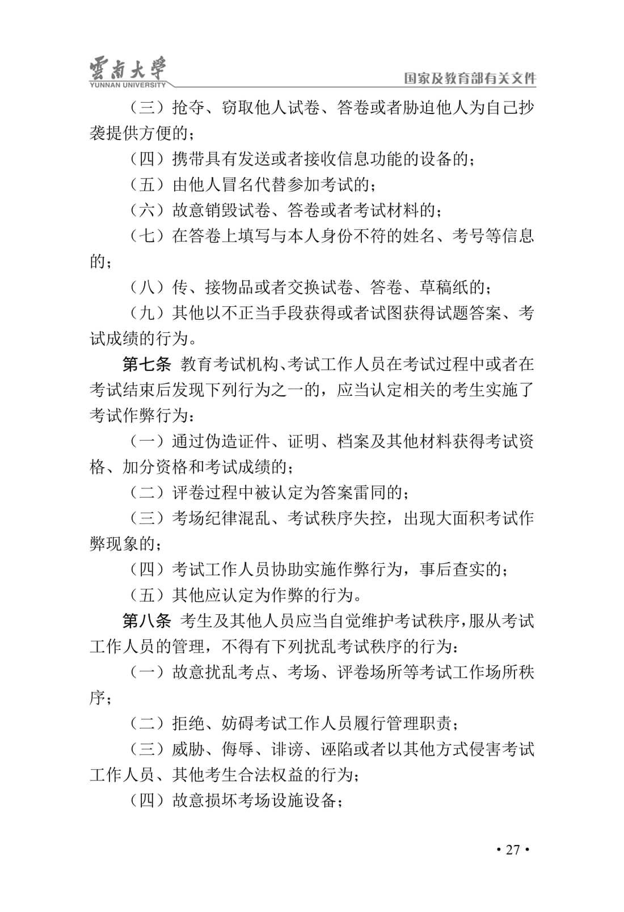
国家及教台剖有关文件YUNNANUNIVERSITY（三）抢夺窃取他人试卷答卷或者胁迫他人为自己抄、、袭提供方便的；（四）携带具有发送或者接收信息功能的设备的；（五）山他人冒名代替参加考试的；（六）故意销毁试卷答卷或者考试材料的、；（七）在答卷上填写与本人身份不符的姓名考号等信息、的；（八）传接物品或者交换试卷答卷草稿纸的、、、；（九）其他以不正当手段获得或者试图获得试题答案考、试成绩的行为。第七条教育考试机构考试工作人员在考试过程中或者在、考试结束后发现下列行为之的应当认定相关的考生实施了一，考试作弊行为：（）通过伪造证件证明档案及其他材料获得考试资一、、格加分资格和考试成绩的、；（二）评卷过程中被认定为答案雷同的；（三）考场纪律混乱考试秩序失控出现大面积考试作、，弊现象的，（四）考试工作人员协助实施作弊行为事后查实的，；（五）其他应认定为作弊的行为。第八条考生及其他人员应当自觉维护考试秩序服从考试，工作人员的管理不得有下列扰乱考试秩序的行为，：（）故意扰乱考点考场评卷场所等考试工作场所秩一、、序：（二）拒绝妨碍考试工作人员履行管理职责、；（三）威胁侮辱诽谤诬陷或者以其他方式侵害考试、、、工作人员其他考生合法权益的行为、；（四）故意损坏考场设施设备；
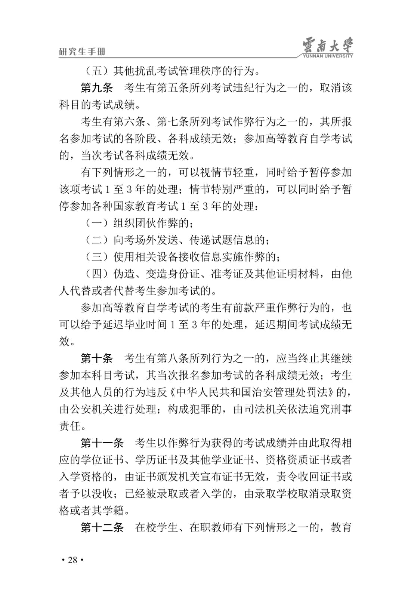
究生手册YUNNANUNIVERSITY（五）其他扰乱考试管理秩序的行为。第九条考生有第五条所列考试违纪行为之的取消该一，科目的考试成绩。考生有第六条第七条所列考试作弊行为之的其所报、一，名参加考试的各阶段各科成绩无效参加高等教育自学考试、；的当次考试各科成绩无效，。有下列情形之的可以视情节轻重同时给予暂停参加一，，该项考试1至3年的处理情节特别严重的可以同时给予暂；，停参加各种国家教育考试1至3年的处理：（）组织团伙作弊的一；（二）向考场外发送传递试题信息的、；（三）使用相关设备接收信息实施作弊的；（四）伪造变造身份证准考证及其他证明材料由他、、，人代替或者代替考生参加考试的。参加高等教育自学考试的考生有前款严重作弊行为的也，可以给予延迟毕业时间1至3年的处理延迟期间考试成绩无，第十条考生有第八条所列行为之的应当终止其继续一，参加本科目考试其当次报名参加考试的各科成绩无效考生，；及其他人员的行为违反《中华人民共和国治安管理处罚法》的，由公安机关进行处理构成犯罪的由司法机关依法追宄刑事；，第十条考生以作弊行为获得的考试成绩并由此取得相一应的学位证书学历证书及其他学业证书资格资质证书或者、、入学资格的由证书颁发机关宣布证书无效责令收回证书或，，者予以没收己经被录取或者入学的由录取学校取消录取资；，格或者其学籍。第十二条在校学生在职教师有下列情形之的教育、一，·28·
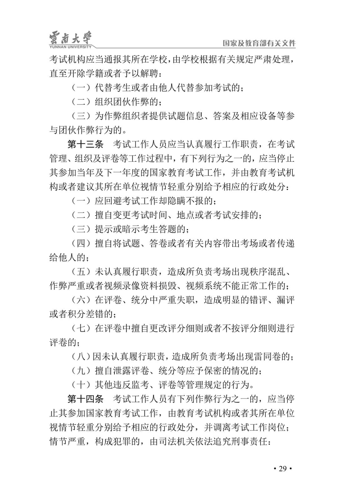
国家及教台剖有关文件YUNNANUNIVERSITY考试机构应当通报其所在学校由学校根据有关规定严肃处理，，直至开除学籍或者予以解聘：（）代替考生或者由他人代替参加考试的一；（二）组织团伙作弊的；（三）为作弊组织者提供试题信息答案及相应设备等参、与团伙作弊行为的。第十三条考试工作人员应当认真履行工作职责在考试，管理组织及评卷等工作过程中有下列行为之的应当停止、，一，其参加当年及下年度的国家教育考试工作并由教育考试机一，构或者建议其所在单位视情节轻重分别给予相应的行政处分：（）应回避考试工作却隐瞒不报的一；（二）擅自变更考试时间地点或者考试安排的、；（三）提示或暗示考生答题的；（四）擅自将试题答卷或者有关内容带出考场或者传递、给他人的；（五）未认真履行职责造成所负责考场出现秩序混乱，、作弊严重或者视频录像资料损毁视频系统不能正常工作的、；（六）在评卷统分中严重失职造成明显的错评漏评、，、或者积分差错的；（七）在评卷中擅自更改评分细则或者不按评分细则进行评卷的；（八）因未认真履行职责造成所负责考场出现雷同卷的，；（九）擅自泄露评卷统分等应予保密的情况的、；（十）其他违反监考评卷等管理规定的行为、。第十四条考试工作人员有下列作弊行为之的应当停一，止其参加国家教育考试工作由教育考试机构或者其所在单位，视情节轻重分别给予相应的行政处分并调离考试工作岗位，；情节严重构成犯罪的由司法机关依法追宄刑事责任，，··29·
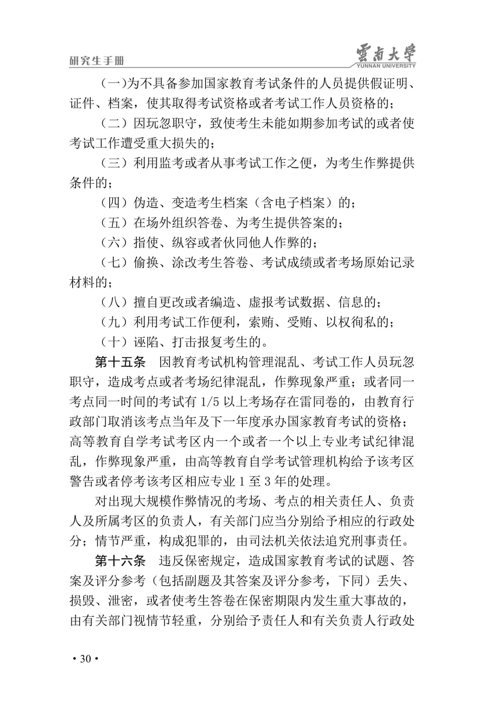
究生手册YUNNANUNIVERSITY（）为不具备参加国家教育考试条件的人员提供假证明一、证件档案使其取得考试资格或者考试工作人员资格的、，；（二）因玩忽职守致使考生未能如期参加考试的或者使，考试工作遭受重大损失的；（三）利用监考或者从事考试工作之便为考生作弊提供，条件的；（四）伪造变造考生档案（含电子档案）的、；（五）在场外组织答卷为考生提供答案的、；（六）指使纵容或者伙同他人作弊的、；（七）偷换涂改考生答卷考试成绩或者考场原始记录、、材料的；（八）擅自更改或者编造虚报考试数据信息的、、；（九）利用考试工作便利索贿受贿以权徇私的，、、；（十）诬陷打击报复考生的、。第十五条因教育考试机构管理混乱考试工作人员玩忽、职守造成考点或者考场纪律混乱作弊现象严重或者同，，；一考点同时间的考试有1/5以上考场存在雷同卷的由教育行一，政部门取消该考点当年及下年度承办国家教育考试的资格一；高等教育自学考试考区内个或者个以上专业考试纪律混一一乱作弊现象严重由高等教育自学考试管理机构给予该考区，，警告或者停考该考区相应专业1至3年的处理。对出现大规模作弊情况的考场考点的相关责任人负责、、人及所属考区的负责人有关部门应当分别给予相应的行政处，分情节严重构成犯罪的由司法机关依法追宄刑事责任：，，。第十六条违反保密规定造成国家教育考试的试题答，、案及评分参考（包括副题及其答案及评分参考下同）丢失，、损毁泄密或者使考生答卷在保密期限内发生重大事故的、，，由有关部门视情节轻重分别给予责任人和有关负责人行政处，
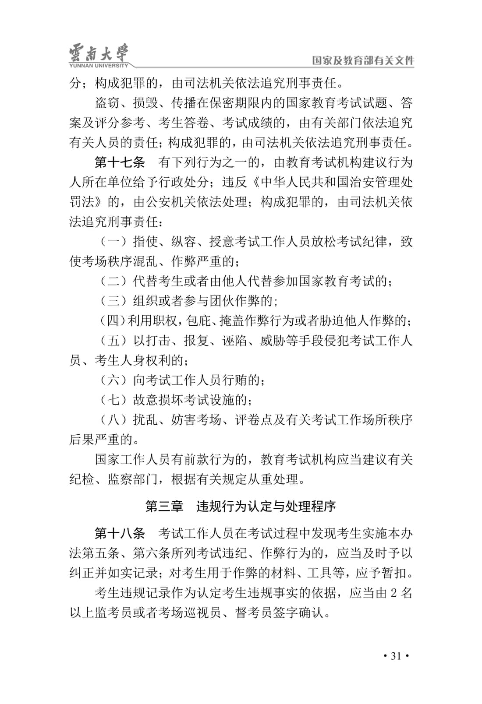
国家及教台剖有关文件YUNNANUNIVERSITY分构成犯罪的由司法机关依法追究刑事责任；，。盗窃损毁传播在保密期限内的国家教育考试试题答、、、案及评分参考考生答卷考试成绩的由有关部门依法追宄、、，有关人员的责任构成犯罪的由司法机关依法追宄刑事责任；，。第十七条有下列行为之的由教育考试机构建议行为一，人所在单位给予行政处分违反《中华人民共和国治安管理处；罚法》的由公安机关依法处理构成犯罪的由司法机关依，；，法追宄刑事责任·（）指使纵容授意考试工作人员放松考试纪律致一、、，使考场秩序混乱作弊严重的、；（二）代替考生或者由他人代替参加国家教育考试的；（三）组织或者参与团伙作弊的；（四）利用职权包庇掩盖作弊行为或者胁迫他人作弊的，、；（五）以打击报复诬陷威胁等手段侵犯考试工作人、、、员考生人身权利的、；（六）向考试工作人员行贿的；（七）故意损坏考试设施的；（八）扰乱妨害考场评卷点及有关考试工作场所秩序、、后果严重的。国家工作人员有前款行为的教育考试机构应当建议有关，纪检监察部门根据有关规定从重处理、，。第三章违规行为认定与处理程序第十八条考试工作人员在考试过程中发现考生实施本办法第五条第六条所列考试违纪作弊行为的应当及时予以、、，纠正并如实记录对考生用于作弊的材料工具等应予暂扣；、，。考生违规记录作为认定考生违规事实的依据应当由2名，以上监考员或者考场巡视员督考员签字确认、。·31·
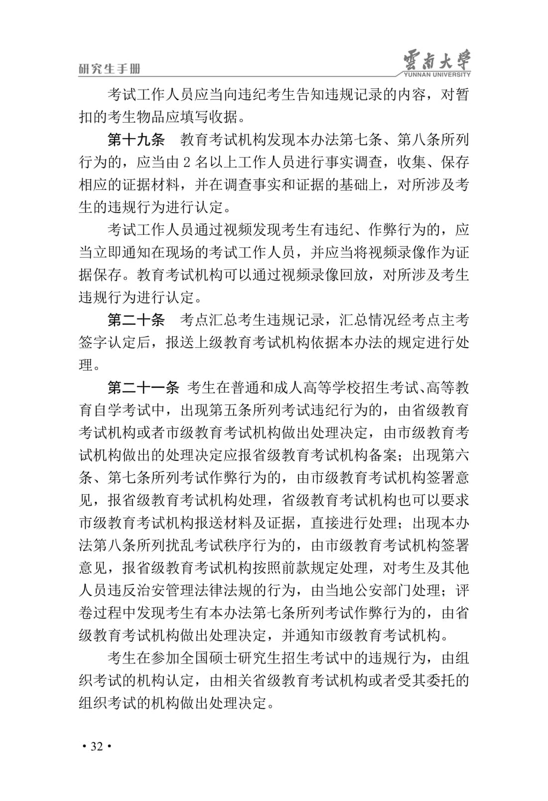
究生手册YUNNANUNIVERSITY考试工作人员应当向违纪考生告知违规记录的内容对暂，扣的考生物品应填写收据。第十九条教育考试机构发现本办法第七条第八条所列、行为的应当由2名以上工作人员进行事实调查收集保存，，、相应的证据材料并在调查事实和证据的基础上对所涉及考，，生的违规行为进行认定。考试工作人员通过视频发现考生有违纪作弊行为的应、，当立即通知在现场的考试工作人员并应当将视频录像作为证，据保存教育考试机构可以通过视频录像回放对所涉及考生。，违规行为进行认定。第二十条考点汇总考生违规记录汇总情况经考点主考，签字认定后报送上级教育考试机构依据本办法的规定进行处，理。第二十条考生在普通和成人高等学校招生考试高等教一、育自学考试中出现第五条所列考试违纪行为的由省级教育，，考试机构或者市级教育考试机构做出处理决定由市级教育考，试机构做出的处理决定应报省级教育考试机构备案出现第六；条第七条所列考试作弊行为的由市级教育考试机构签署意、，见报省级教育考试机构处理省级教育考试机构也可以要求，，市级教育考试机构报送材料及证据直接进行处理出现本办，；法第八条所列扰乱考试秩序行为的由市级教育考试机构签署，意见报省级教育考试机构按照前款规定处理对考生及其他，，人员违反治安管理法律法规的行为由当地公安部门处理评，；卷过程中发现考生有本办法第七条所列考试作弊行为的由省，级教育考试机构做出处理决定并通知市级教育考试机构，。考生在参加全国硕士研宄生招生考试中的违规行为由组，织考试的机构认定由相关省级教育考试机构或者受其委托的，组织考试的机构做出处理决定。·32·
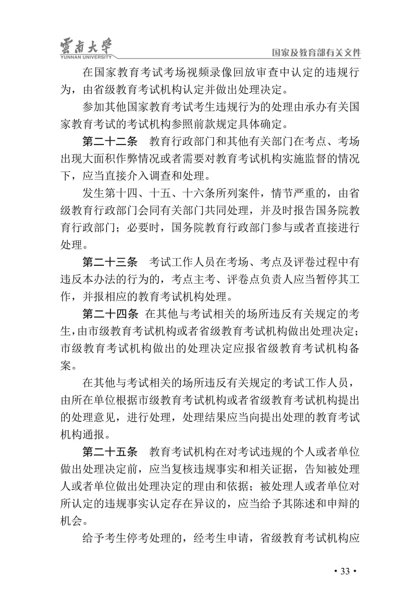
国家及教台剖有关文件YUNNANUNIVERSITY在国家教育考试考场视频录像回放审查中认定的违规行为由省级教育考试机构认定并做出处理决定，。参加其他国家教育考试考生违规行为的处理由承办有关国家教育考试的考试机构参照前款规定具体确定。第二十二条教育行政部门和其他有关部门在考点考场、出现大面积作弊情况或者需要对教育考试机构实施监督的情况下应当直接介入调查和处理，。发生第十四十五十六条所列案件情节严重的由省、、，，级教育行政部门会同有关部门共同处理并及时报告国务院教，育行政部门必要时国务院教育行政部门参与或者直接进行；，第二十三条考试工作人员在考场考点及评卷过程中有、违反本办法的行为的考点主考评卷点负责人应当暂停其工，、作并报相应的教育考试机构处理，。第二十四条在其他与考试相关的场所违反有关规定的考生由市级教育考试机构或者省级教育考试机构做出处理决定，；市级教育考试机构做出的处理决定应报省级教育考试机构备案。在其他与考试相关的场所违反有关规定的考试工作人员，由所在单位根据市级教育考试机构或者省级教育考试机构提出的处理意见进行处理处理结果应当向提出处理的教育考试，，机构通报。第二十五条教育考试机构在对考试违规的个人或者单位做出处理决定前应当复核违规事实和相关证据告知被处理，，人或者单位做出处理决定的理由和依据被处理人或者单位对，所认定的违规事实认定存在异议的应当给予其陈述和申辩的，给予考生停考处理的经考生申请省级教育考试机构应，，·33·
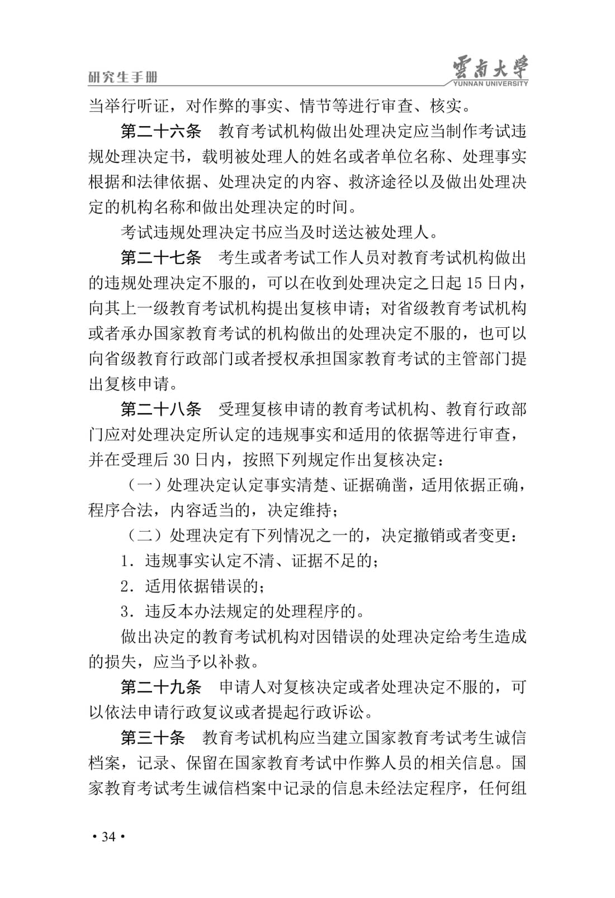
究生手册YUNNANUNIVERSITY当举行听证对作弊的事实情节等进行审查核实，、、。第二十六条教育考试机构做出处理决定应当制作考试违规处理决定书载明被处理人的姓名或者单位名称处理事实，、根据和法律依据处理决定的内容救济途径以及做出处理决、、定的机构名称和做出处理决定的时间。考试违规处理决定书应当及时送达被处理人。第二十七条考生或者考试工作人员对教育考试机构做出的违规处理决定不服的可以在收到处理决定之日起15日内，，向其上级教育考试机构提出复核申请对省级教育考试机构一，或者承办国家教育考试的机构做出的处理决定不服的也可以，向省级教育行政部门或者授权承担国家教育考试的主管部门提出复核申请。第二十八条受理复核申请的教育考试机构教育行政部、门应对处理决定所认定的违规事实和适用的依据等进行审查，并在受理后30日内按照下列规定作出复核决定，：（）处理决定认定事实清楚证据确凿适用依据正确一、，，程序合法内容适当的决定维持，，；（二）处理决定有下列情况之的决定撤销或者变更一，：1.违规事实认定不清证据不足的、；2适用依据错误的·；3违反本办法规定的处理程序的·。做出决定的教育考试机构对因错误的处理决定给考生造成的损失应当予以补救，。第二十九条申请人对复核决定或者处理决定不服的可，以依法申请行政复议或者提起行政诉讼。第三十条教育考试机构应当建立国家教育考试考生诚信档案记录保留在国家教育考试中作弊人员的相关信息国，、。家教育考试考生诚信档案中记录的信息未经法定程序任何组，·34·
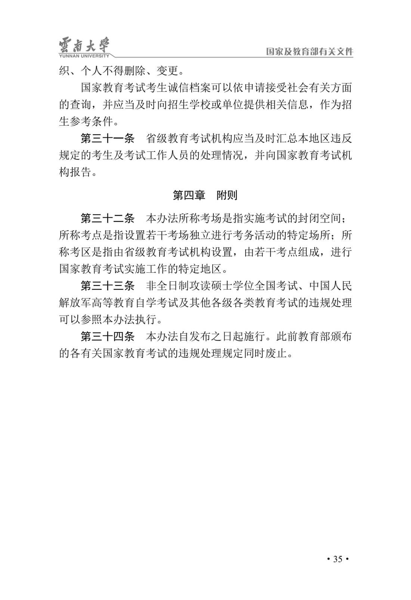
国家及教台剖有关文件YUNNANUNIVERSITY织个人不得删除变更、、。国家教育考试考生诚信档案可以依申请接受社会有关方面的查询并应当及时向招生学校或单位提供相关信息作为招，，生参考条件。第三十条省级教育考试机构应当及时汇总本地区违反一规定的考生及考试工作人员的处理情况并向国家教育考试机，构报告第四章附则第三十二条本办法所称考场是指实施考试的封闭空间；所称考点是指设置若干考场独立进行考务活动的特定场所所；称考区是指由省级教育考试机构设置由若干考点组成进行，，国家教育考试实施工作的特定地区。第三十三条非全日制攻读硕士学位全国考试中国人民、解放军高等教育自学考试及其他各级各类教育考试的违规处理可以参照本办法执行。第三十四条本办法自发布之日起施行此前教育部颁布。的各有关国家教育考试的违规处理规定同时废止。
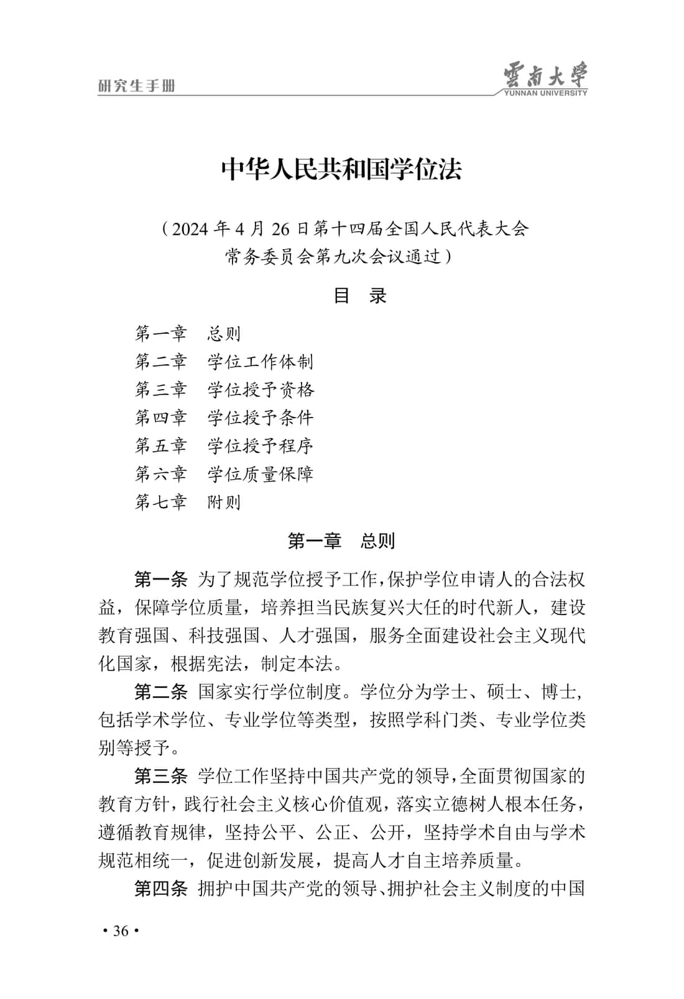
究生手册YUNNANUNIVERSITY中华人民共和国学位法（2024年4月26日第十四届全国人民代表大会常务委员会第九次会议通过）目录总则早第一学位工作体制一早学位授予资格早一第四章学位授予条件第五章学位授予程序第六学位质量保障早第七章附则第章总则一第条为了规范学位授予工作保护学位申请人的合法权一，益保障学位质量培养担当民族复兴大任的时代新人建设，，，教育强国科技强国人才强国服务全面建设社会主义现代、、，化国家根据宪法制定本法，，。第二条国家实行学位制度学位分为学士硕士博士。、、，包括学术学位专业学位等类型按照学科门类专业学位类、，、别等授予。第三条学位工作坚持中国共产党的领导全面贯彻国家的，教育方针践行社会主义核心价值观落实立德树人根本任务，，，遵循教育规律坚持公平公正公开坚持学术自由与学术，、、，规范相统促进创新发展提高人才自主培养质量一，，。第四条拥护中国共产党的领导拥护社会主义制度的中国、·36·
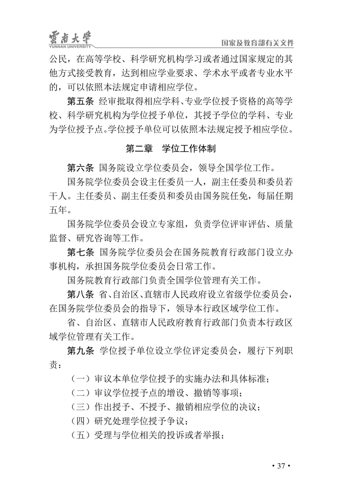
国家及教台剖有关文件YUNNANUNIVERSITY公民在高等学校科学研宄机构学习或者通过国家规定的其，、他方式接受教育达到相应学业要求学术水平或者专业水平，、的可以依照本法规定申请相应学位，。第五条经审批取得相应学科专业学位授予资格的高等学、校科学研宄机构为学位授予单位其授予学位的学科专业、，、为学位授予点学位授予单位可以依照本法规定授予相应学位。。第二章学位工作体制第六条国务院设立学位委员会领导全国学位工作，。国务院学位委员会设主任委员人副主任委员和委员若一，干人主任委员副主任委员和委员由国务院任免每届任期。、，五年。国务院学位委员会设立专家组负责学位评审评估质量，、监督研宄咨询等工作、。第七条国务院学位委员会在国务院教育行政部门设立办事机构承担国务院学位委员会日常工作，。国务院教育行政部门负责全国学位管理有关工作。第八条省自治区直辖市人民政府设立省级学位委员会、、，在国务院学位委员会的指导下领导本行政区域学位工作，。省自治区直辖市人民政府教育行政部门负责本行政区、、域学位管理有关工作。第九条学位授予单位设立学位评定委员会履行下列职，贝：一（）审议本单位学位授予的实施办法和具体标准一；（二）审议学位授予点的增设撤销等事项、；（三）作出授予不授予撤销相应学位的决议、、；（四）研宄处理学位授予争议；（五）受理与学位相关的投诉或者举报；
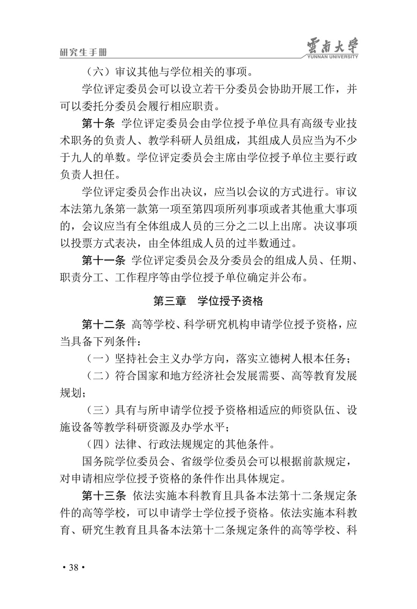
究生手册YUNNANUNIVERSITY（六）审议其他与学位相关的事项。学位评定委员会可以设立若干分委员会协助开展工作并，可以委托分委员会履行相应职责。第十条学位评定委员会由学位授予单位具有高级专业技术职务的负责人教学科研人员组成其组成人员应当为不少、，于九人的单数学位评定委员会主席由学位授予单位主要行政。负责人担任。学位评定委员会作出决议应当以会议的方式进行审议，。本法第九条第款第项至第四项所列事项或者其他重大事项一一的会议应当有全体组成人员的三分之二以上出席决议事项，。以投票方式表决由全体组成人员的过半数通过，。第十条学位评定委员会及分委员会的组成人员任期一、、职责分工工作程序等由学位授予单位确定并公布、。第三章学位授予资格第十二条高等学校科学研宄机构申请学位授予资格应、，当具备下列条件：（）坚持社会主义办学方向落实立德树人根本任务一，；（二）符合国家和地方经济社会发展需要咼等教育发展、规划；（三）具有与所申请学位授予资格相适应的师资队伍设、施设备等教学科研资源及办学水平；（四）法律行政法规规定的其他条件、。国务院学位委员会省级学位委员会可以根据前款规定、，对申请相应学位授予资格的条件作出具体规定。第十三条依法实施本科教育且具备本法第十二条规定条件的高等学校可以申请学士学位授予资格依法实施本科教，。育研宄生教育且具备本法第十二条规定条件的高等学校科、、·38·
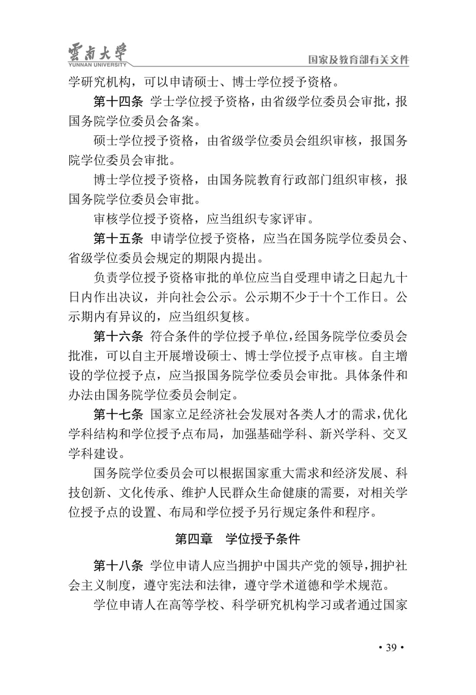
国家及教台剖有关文件YUNNANUNIVERSITY学研宄机构可以申请硕士博士学位授予资格，、。第十四条学士学位授予资格由省级学位委员会审批报，，国务院学位委员会备案。硕士学位授予资格由省级学位委员会组织审核报国务，，院学位委员会审批。博士学位授予资格由国务院教育行政部门组织审核报，，国务院学位委员会审批。审核学位授予资格应当组织专家评审，。第十五条申请学位授予资格应当在国务院学位委员会，、省级学位委员会规定的期限内提出。负责学位授予资格审批的单位应当自受理申请之日起九十日内作出决议并向社会公示公示期不少于十个工作日公，。。示期内有异议的应当组织复核，。第十六条符合条件的学位授予单位经国务院学位委员会，批准可以自主开展增设硕士博士学位授予点审核自主增，、。设的学位授予点应当报国务院学位委员会审批具体条件和，。办法由国务院学位委员会制定。第十七条国家立足经济社会发展对各类人才的需求优化，学科结构和学位授予点布局加强基础学科新兴学科交叉，、、学科建设。国务院学位委员会可以根据国家重大需求和经济发展科、技创新文化传承维护人民群众生命健康的需要对相关学、、，位授予点的设置布局和学位授予另行规定条件和程序、。第四章学位授予条件第十八条学位申请人应当拥护中国共产党的领导拥护社，会主义制度遵守宪法和法律遵守学术道德和学术规范，，。学位申请人在高等学校科学研究机构学习或者通过国家、·39·
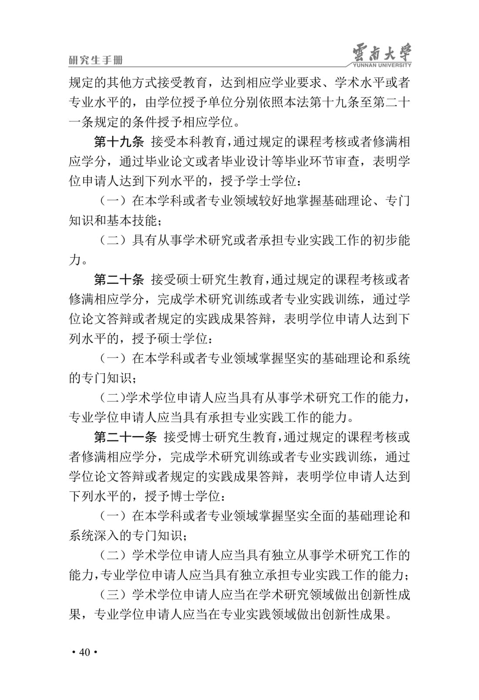
究生手册YUNNANUNIVERSITY规定的其他方式接受教育达到相应学业要求学术水平或者，、专业水平的由学位授予单位分别依照本法第十九条至第二十，条规定的条件授予相应学位一。第十九条接受本科教育通过规定的课程考核或者修满相，应学分通过毕业论文或者毕业设计等毕业环节审查表明学，，位申请人达到下列水平的授予学士学位，：（）在本学科或者专业领域较好地掌握基础理论专门一、知识和基本技能；（二）具有从事学术研宄或者承担专业实践工作的初步能力。第二十条接受硕士研究生教育通过规定的课程考核或者，修满相应学分完成学术研宄训练或者专业实践训练通过学，，位论文答辩或者规定的实践成果答辩表明学位申请人达到下，列水平的授予硕士学位，：（）在本学科或者专业领域掌握坚实的基础理论和系统一的专门知识；（二）学术学位申请人应当具有从事学术研宄工作的能力，专业学位申请人应当具有承担专业实践工作的能力。第二十条接受博士研究生教育通过规定的课程考核或一，者修满相应学分完成学术研宄训练或者专业实践训练通过，，学位论文答辩或者规定的实践成果答辩表明学位申请人达到，下列水平的授予博士学位，（）在本学科或者专业领域掌握坚实全面的基础理论和一系统深入的专门知识；（二）学术学位申请人应当具有独立从事学术研宄工作的能力专业学位申请人应当具有独立承担专业实践工作的能力，；（三）学术学位申请人应当在学术研宄领域做出创新性成果专业学位申请人应当在专业实践领域做出创新性成果，。·40·
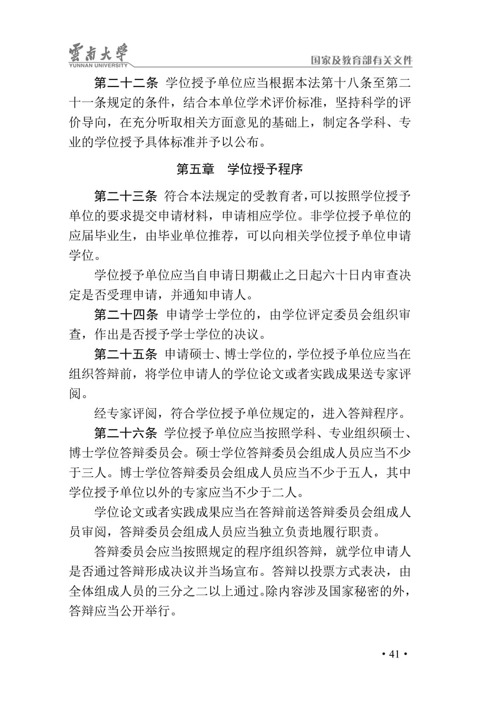
国家及教台剖有关文件YUNNANUNIVERSITY第二十二条学位授予单位应当根据本法第十八条至第二十条规定的条件结合本单位学术评价标准坚持科学的评一，，价导向在充分听取相关方面意见的基础上制定各学科专，，、业的学位授予具体标准并予以公布。第五章学位授予程序第二十三条符合本法规定的受教育者可以按照学位授予，单位的要求提交申请材料申请相应学位非学位授予单位的，。应届毕业生由毕业单位推荐可以向相关学位授予单位申请，，学位。学位授予单位应当自申请日期截止之日起六十日内审查决定是否受理申请并通知申请人，。第二十四条申请学士学位的由学位评定委员会组织审，查作出是否授予学士学位的决议，。第二十五条申请硕士博士学位的学位授予单位应当在、，组织答辩前将学位申请人的学位论文或者实践成果送专家评，经专家评阅符合学位授予单位规定的进入答辩程序，，。第二十六条学位授予单位应当按照学科专业组织硕士、、博士学位答辩委员会硕士学位答辩委员会组成人员应当不少。于三人博士学位答辩委员会组成人员应当不少于五人其中。，学位授予单位以外的专家应当不少于二人。学位论文或者实践成果应当在答辩前送答辩委员会组成人员审阅答辩委员会组成人员应当独立负责地履行职责，。答辩委员会应当按照规定的程序组织答辩就学位申请人，是否通过答辩形成决议并当场宣布答辩以投票方式表决由。，全体组成人员的三分之二以上通过除内容涉及国家秘密的外。，答辩应当公开举行。
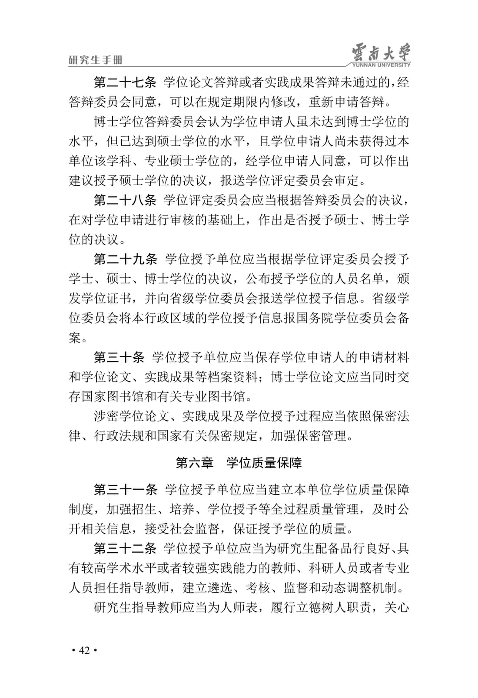
究生手册YUNNANUNIVERSITY第二十七条学位论文答辩或者实践成果答辩未通过的经，答辩委员会同意可以在规定期限内修改重新申请答辩，，。博士学位答辩委员会认为学位申请人虽未达到博士学位的水平但己达到硕士学位的水平且学位申请人尚未获得过本，，单位该学科专业硕士学位的经学位申请人同意可以作出、，，建议授予硕士学位的决议报送学位评定委员会审定，。第二十八条学位评定委员会应当根据答辩委员会的决议，在对学位申请进行审核的基础上作出是否授予硕士博士学，、位的决议。第二十九条学位授予单位应当根据学位评定委员会授予学士硕士博士学位的决议公布授予学位的人员名单颁、、，，发学位证书并向省级学位委员会报送学位授予信息省级学，。位委员会将本行政区域的学位授予信息报国务院学位委员会备案。第三十条学位授予单位应当保存学位申请人的申请材料和学位论文实践成果等档案资料博士学位论文应当同时交、；存国家图书馆和有关专业图书馆。涉密学位论文实践成果及学位授予过程应当依照保密法、律行政法规和国家有关保密规定加强保密管理、，。第六章学位质量保障第三十条学位授予单位应当建立本单位学位质量保障一制度加强招生培养学位授予等全过程质量管理及时公，、、，开相关信息接受社会监督保证授予学位的质量，，。第三十二条学位授予单位应当为研究生配备品行良好具、有较高学术水平或者较强实践能力的教师科研人员或者专业、人员担任指导教师建立遴选考核监督和动态调整机制，、、。研宄生指导教师应当为人师表履行立德树人职责关心，，·42·
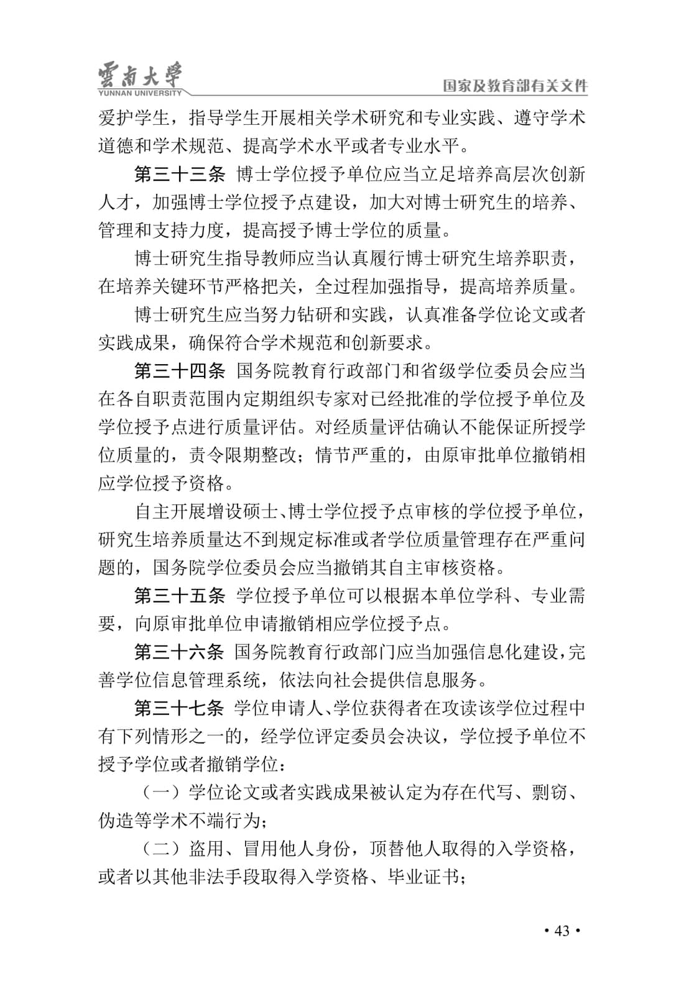
国家及教台剖有关文件YUNNANUNIVERSITY爱护学生指导学生开展相关学术研究和专业实践遵守学术，、道德和学术规范提高学术水平或者专业水平、。第三十三条博士学位授予单位应当立足培养高层次创新人才加强博士学位授予点建设加大对博士研究生的培养，，、管理和支持力度提高授予博士学位的质量，。博士研宄生指导教师应当认真履行博士研宄生培养职责，在培养关键环节严格把关全过程加强指导提高培养质量，，。博士研宄生应当努力钻研和实践认真准备学位论文或者，实践成果确保符合学术规范和创新要求，。第三十四条国务院教育行政部门和省级学位委员会应当在各自职责范围内定期组织专家对己经批准的学位授予单位及学位授予点进行质量评估对经质量评估确认不能保证所授学。位质量的责令限期整改情节严重的由原审批单位撤销相，；，应学位授予资格。自主开展增设硕士博士学位授予点审核的学位授予单位、，研宄生培养质量达不到规定标准或者学位质量管理存在严重问题的国务院学位委员会应当撤销其自主审核资格，。第三十五条学位授予单位可以根据本单位学科专业需、要向原审批单位申请撤销相应学位授予点，。第三十六条国务院教育行政部门应当加强信息化建设完，善学位信息管理系统依法向社会提供信息服务，。第三十七条学位申请人学位获得者在攻读该学位过程中、有下列情形之的经学位评定委员会决议学位授予单位不一，，授予学位或者撤销学位（）学位论文或者实践成果被认定为存在代写剽窃一、、伪造等学术不端行为；（二）盗用冒用他人身份顶替他人取得的入学资格、，，或者以其他非法手段取得入学资格毕业证书、；
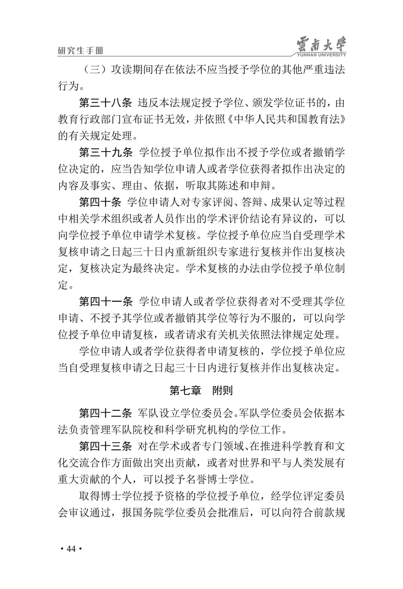
究生手册YUNNANUNIVERSITY（三）攻读期间存在依法不应当授予学位的其他严重违法行为。第三十八条违反本法规定授予学位颁发学位证书的由、，教育行政部门宣布证书无效并依照《中华人民共和国教育法》，的有关规定处理。第三十九条学位授予单位拟作出不授予学位或者撤销学位决定的应当告知学位申请人或者学位获得者拟作出决定的，内容及事实理由依据听取其陈述和申辩、、，。第四十条学位申请人对专家评阅答辩成果认定等过程、、中相关学术组织或者人员作出的学术评价结论有异议的可以，向学位授予单位申请学术复核学位授予单位应当自受理学术。复核申请之日起三十日内重新组织专家进行复核并作出复核决定复核决定为最终决定学术复核的办法由学位授予单位制，。定。第四十条学位申请人或者学位获得者对不受理其学位一申请不授予其学位或者撤销其学位等行为不服的可以向学、，位授予单位申请复核或者请求有关机关依照法律规定处理，。学位申请人或者学位获得者申请复核的学位授予单位应，当自受理复核申请之日起三十日内进行复核并作出复核决定。第七章附则第四十二条军队设立学位委员会军队学位委员会依据本。法负责管理军队院校和科学研宄机构的学位工作。第四十三条对在学术或者专门领域在推进科学教育和文、化交流合作方面做出突出贡献或者对世界和平与人类发展有，重大贡献的个人可以授予名誉博士学位，。取得博士学位授予资格的学位授予单位经学位评定委员，会审议通过报国务院学位委员会批准后可以向符合前款规，，·44·
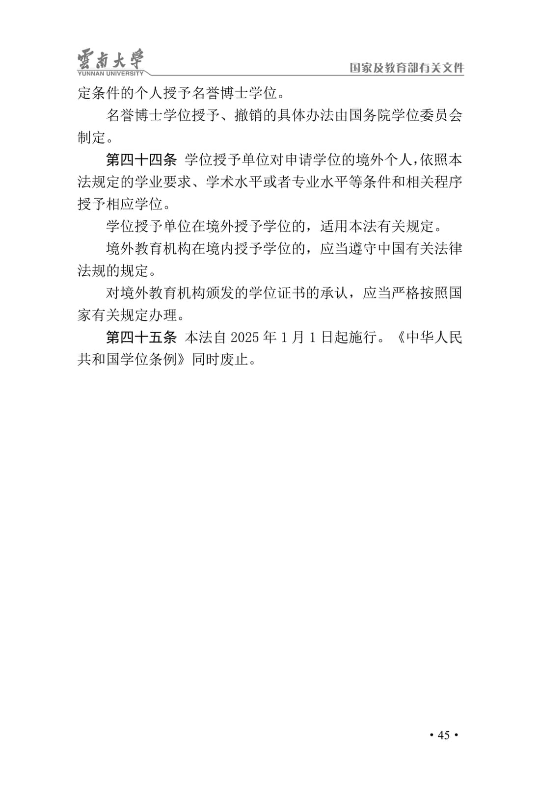
国家及教台剖有关文件YUNNANUNIVERSITY定条件的个人授予名誉博士学位。名誉博士学位授予撤销的具体办法由国务院学位委员会、制定。第四十四条学位授予单位对申请学位的境外个人依照本，法规定的学业要求学术水平或者专业水平等条件和相关程序、授予相应学位。学位授予单位在境外授予学位的适用本法有关规定，。境外教育机构在境内授予学位的应当遵守中国有关法律，法规的规定。对境外教育机构颁发的学位证书的承认应当严格按照国，家有关规定办理。第四十五条本法自2025年1月1日起施行《中华人民。共和国学位条例》同时废止。
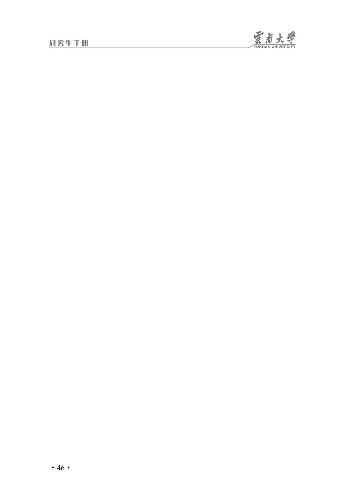
究生手册YUNNANUNIVERSITY·46·
第二部分学习管理

学习管YUNNANUNIVERSITY云南大学学术道德规范及违规处理办法（试行）云大〔2015〕158号第章总则一第条为了维护学术尊严规范学术行为鼓励学术创一，，新倡导严谨踏实的学风维护学校的良好声誉建立和完善，，，科学的学术评价机制根据国家有关法律法规结合学校实际，，，特制定本规范。第二条本规范旨在倡导实事求是坚持真理学风严谨、、的优良风气发扬学术民主鼓励学术创新引导师生员工正，，；确对待学术研宄中的名和利反对在科学研宄中沽名钓誉弄；、虚作假。第三条本规范适用于云南大学在编在册的所有从事教学科研和其他有关工作的教师研究人员博士后和学生、、、，以及以云南大学的名义发表作品的其他人员包括在云南大学，学习和工作的访问学者进修教师兼职人员等、、。第二章学术道德基本规范第四条学术活动应遵守国家有关法律法规社会公德、，严谨治学坚守学术诚信，（）遵守法律法规在学术活动中应自觉遵守《中华一。，人民共和国宪法》《中华人民共和国民法通则》《中华人民共和国著作权法》《中华人民共和国专利法》《中华人民共和国计算机软件保护条例》《中华人民共和国国家通用语言文字法》《高等学校哲学社会科学研宄学术规范》等法律法规恪守职，·49·
究生手册YUNNANUNIVERSITY业道德维护科学诚信，。（二）尊重知识产权充分尊重他人己获得的研宄成果。；引用他人成果时如实注明出处所引用的部分不能构成引用人；作品的主要部分或者实质部分从他人作品转引第三人成果时；，如实注明转引出处。（三）实事求是署名学术成果的署名应实事求是署名。，者应对该项成果承担相应的学术责任道义责任和法律责任、。合作成果应按照对科学研宄成果所作贡献大小的顺序署名但，另有学科署名惯例或作者另有约定的除外任何合作成果在发。表前要经过所有署名人审阅并签字认可所有署名人应对本人，完成部分负责成果主持人应对成果整体负责不准未参加实，。际研宄或论著写作而在论著上署名不准未经原作者同意而在，别人发表的作品中署名。（四）规范发表发布学术成果对于须经过有关学术机、。构论证和鉴定的重大研究成果应在完成论证和鉴定并经过主，管部门批准后方可对外公布未经合作者同意不得将合作研，。宄的成果仅以个人署名发表学术成果不应重复发表另有约。，定再次发表时应注明出处公开研究成果统计数据等必须，。、实事求是完整准确保证实验记录和数据的完整真实和安、，、全对己发表研宄成果中出现的错误和失误应以适当方式公。，开承认。（五）在对自己或他人的学术经历学术业绩和学术成果、进行登记填报介绍评价时应遵循客观公正全面、、、，、、、准确的原则在填写有关个人学术情况报表时不准弄虚作假。，，不准据他人成果或部分成果为己有不准改动署名排序不准，，擅自改变成果性质不准夸大业绩，。（六）认真维护学术评价的客观公正正确行使学术评价。权力公正发表评审意见是评审专家的职责在参与各种推荐，。、
学习管YUNNANUNIVERSITY评审论证鉴定答辩和评奖等活动中要坚持客观公正的、、、，评价标准坚持按章办事不徇私情自觉抵制不良社会风气，，，的影响和干扰。（七）在教学科研及相关活动中应严格遵守和维护国家、，安全信息安全生态安全健康安全等方面的规定、、、。（八）不得利用科研活动谋取不正当利益。（九）遵守学术界公认的其他学术道德规范。第三章违反学术道德规范的行为第五条学术活动不得有下列违反学术道德规范的行为。（）抄袭剽窃侵吞篡改他人学术成果在学术活动一、、、。过程中抄袭篡改他人作品剽窃篡改他人的学术观点学、；、、术思想或实验数据调查结果等行为、。（二）伪造学术经历在评奖评优奖助学金评定等申报。、、材料填写有关个人简历信息及学术情况时不如实报告个人简，历学术经历学术成果伪造专家鉴定证书及其他学术能、、，、力证明材料等行为。（三）虚报科研成果随意提高成果的学术档次故意夸大，，研究成果的学术价值经济与社会效益、。（四）不当署名未参加科学研宄或者论著写作而在别人。，发表的作品等成果中署名未经被署名人同意而署其名等行为；；在科研成果的署名位次上高于自己的实际贡献的行为未经被；署名人允许的随意代签冒签损害他人著作权侵犯他人的、；，署名权将做出创造性贡献的人排除在作者名单之外，。（五）采用不正当手段干扰和妨碍他人研宄活动包括故意，毁坏或扣压他人研宄活动中必需的仪器设备文献资料以及、，其它与科研有关的财物故意对竞争项目实施不正当竞争行为；。（六）成果发表出版时稿多投、一。·51·
究生手册YUNNANUNIVERSITY（七）违反国家有关保密法律法规或学校有关保密的规、定将应保密学术事项对外泄露，。（八）其他违背学术道德规范的行为。第四章调查和处理程序第六条对违反学术道德规范的行为任何人都有义务向，校学术委员会举报。第七条校学术委员会负责维护学校学术道德规范校学。术委员会下设人文社科与自然科学两个分委员会分别负责学，校文科与自然科学学术道德建设的政策调研咨询评估宣传、、教育等工作指导协调督促涉嫌违反学术道德行为的调查，、、和处理。第八条校学术委员会在接到实名举报后10个工作日内会同被举报人所在学院的学术委员会委员和所在学院院长，、系主任共同讨论并听取被举报人的申辩解释后决定是否，、，对该项举报正式立项调查。对实名的学术批评和举报校学术委员会尊重举报人的意，愿对举报人的姓名予以公开或者保密对匿名的学术批评和，；举报校学术委员会不予受理对匿名的以学术批评为名行，；，人身攻击之实的信件和网络帖子校学术委员会坚决反对，。第九条对正式列入调查的举报由校学术委员会通知被，举报人并责成相关学院学术委员会于30个工作日内在有校，，学术委员会成员在场的情况下对有关事实和结论进行认定如。有必要可分别通知举报人被举报人和证人到会说明情况或，、提供证据院学术委员会必须向校学术委员会提交书面报告。对所受理的举报问题给出明确意见。第十条校学术委员会对院学术委员会意见进行审议若，确认存在学术道德问题则应根据本规范的规定做出调查仲，，裁结论。·52·
学习管YUNNANUNIVERSITY第十条校学术委员会将调查仲裁结论通知举报人和被一举报人若举报人或被举报人对调查仲裁结论有异议可要求。，校学术委员会重新审议。第十二条如举报人和被举报人对校学术委员会调查仲裁结论无异议校学术委员会将依据调查仲裁结论向学校提出处，理意见学校按照相关程序对被举报人给予纪律或者组织处分。。如被举报人的行为侵犯其他个人或单位的权益在给予纪律或，者组织处分的同时可责令其向有关个人或单位公开赔礼道歉，，补偿损失。第十三条校院学术委员会委员涉及学术道德问题或，，与当事人有近亲属关系应主动回避退出调查当事人有充，，；分的理由证明上述人员与自己有特殊利益关系不宜参加调查，，经学术委员会主任批准可以要求相关人士回避调查对象涉，；及院负责人或学术委员会成员校学术委员会主任可指定专门，工作小组对举报事实和结论进行认定。第十四条学术委员会在受理举报过程中必须采取适当，措施保护举报人和证人在学校做出纪律或组织处理的决定，。以前切程序和资料均在保密范围之内所有涉及人员不得，一，泄露调查和处理情况。第十五条研宄生本科生及其他学生学术道德规范的日、常维护由所在学院和相关职能部门负责。第五章违反学术道德规范的惩处第十六条凡本规范所适用人员有违反上述学术道德规范的行为处理方式包括予以诫免谈话通报批评暂缓职务，：、、晋升撤销获得的有关奖励和资格给予行政处分以及学校相、、关规范性文件规定的其他处理措施等以上处理方式可以单独。适用也可以合并适用，。
究生手册YUNNANUNIVERSITY第十七条在人事录用专业技术职务晋升学位授予、、、项目审批考核评估科研奖励评审或推荐评审优秀成果之、、、前有关部门应认真调查候选人遵守学术道德的情况对有较，。明显违反学术道德行为的教师实行票否决对获得的学术，一，职衔或荣誉予以取消或建议取消对违背学术道德规范的学生。，视情节轻重给予批评教育警告严重警告直至留校察看开、、、除学籍处分。第十八条对触犯国家法律进入法律程序的学校将配合，相关部门进行调查和处理。第六章附则第十九条本规范将根据学校教学和科研发展的需要进行修订和完善。第二十条本规范的解释权归校学术委员会。第二十条本规范自发布之日起施行一。
学习管YUNNANUNIVERSITY云南大学研究生学籍管理规定云大研〔2020〕10号第章总则一第条为维护学校正常的教育教学秩序加强研究生学一，籍管理保证研宄生的培养质量促进研宄生德智体美，，、、、、劳全面发展根据教育法高等教育法和《普通高等学校学生，、管理规定》结合我校实际情况特制定本规定，，。第二条本规定适用于我校按照国家招生政策和规定录取的硕士研究生和博士研究生。第三条我校研宄生应当拥护中国共产党领导努力学习，马克思列宁主义毛泽东思想中国特色社会主义理论体系、、，深入学习习近平新时代中国特色社会主义思想坚定中国特色，社会主义道路自信理论自信制度自信文化自信树立中、、、，国特色社会主义共同理想应当树立爱国主义思想具有团结；，统爱好和平勤劳勇敢自强不息的精神应当增强法治一、、、；观念遵守宪法法律和法规遵守公民道德规范遵守学校，、，，管理制度具有良好的道德品质和行为习惯应当刻苦学习，；，勇于探索积极实践努力掌握现代科学文化知识和专业技能，，；应当积极锻炼身体增进身心健康提高个人修养培养审美，，，第二章入学与注册第四条经我校录取的研宄生新生须持录取通知书本，、人有效身份证件以及学校要求的相关材料在学校规定的时间，
究生手册YUNNANUNIVERSITY内报到入学因故不能按时入学的应当提前向培养单位请假。，并获得批准请假时间不得超过两周未请假或者请假逾期的。，，除因不可抗力等正当事由以外视为放弃入学资格，。第五条新生入学报到时由所在培养单位对新生的入学，资格进行初步审查审查合格方可办理入学手续审查发现新，；生的录取通知书考生信息毕业证书和学位证书等证明材料、、，与本人实际情况不符或者有其他违反国家招生考试规定情形，的予以取消入学资格，。第六条新生入学后三个月内由所在培养单位校医院，、按照国家招生规定进行复查复查内容主要包括以下方面。：（）录取手续及程序等是否合乎国家招生规定一；（二）所获得的录取资格是否真实合乎相关规定、；（三）本人及身份证明与录取通知考生档案等是否致、一；（四）身心健康状况是否符合报考专业或者专业类别体检要求能否保证在校正常学习生活，、；（五）艺术体育等特殊类型录取学生的专业水平是否符、合录取要求。经复查合格且按规定缴纳学费的准予注册正式取得，，，云南大学研究生学籍经复查不符合招生条件的由所在培养。，单位或校医院提出处理意见报研宄生院汇总后由学校研宄，，生招生工作领导小组分情况予以处理凡属弄虚作假徇私舞。、弊被录取者不论何时发现经查实取消其入学资格或取，，一，消其学籍并按学校规定期限离校档案户口退回其家庭户，，、籍所在地情节严重的移交有关部门调查处理。，。第七条研宄生有下列情形之可以申请保留入学资格一，（）新生在入学资格复查中被发现其身心状况不适宜在一校学习经校医院（或学校指定的二级甲等以上医院）诊断，，需要回家休养的经本人申请（博士新生还需经导师同意）所，、·56·
学习管YUNNANUNIVERSITY在培养单位同意研宄生院批准学校可保留其入学资格年、，一；（二）新生因家庭困难或女性新生因怀孕生育以及根据国家相关规定要求需要保留入学资格的由本人申请（须附相关，证明）经培养单位同意（博士新生还需经导师同意）研究生，、院批准学校可保留其入学资格年，一；（三）新生应征参加中国人民解放军（含中国人民武装警察部队）凭部队的入伍证明由本人申请培养单位同意（博，，、士新生还需经导师同意）经研宄生院批准学校保留其入学资，，格至退役后两年；（四）其他确实需要保留入学资格的情形。保留入学资格者不具有学籍不享受在校研宄生待遇，。保留入学资格的研究生应在保留期满前向研宄生院提，，出入学申请经学校审查符合入学条件的按照当年新生办，，，理入学手续审查不合格或逾期不办理入学申请手续的取消；，其入学资格。保留入学资格研宄生的学制学习形式及学费等按照实际、入学时所在专业当年新生的相应标准执行若因专业调整等造。成原专业取消的须根据学校要求转专业，。第八条在校研宄生必须于每学期开学时按学校规定的，时间到所在培养单位办理报到和注册手续不符合注册条件或，未按学校规定缴纳学费的不予注册。因故不能按时报到注册的应当履行请假手续请假时间，，般不得超过两周未请假而超过学校规定注册期限或者请假一。逾期不注册的除因不可抗力等正当事由外视为放弃学籍，，，按退学处理。家庭经济困难的研宄生可以申请贷款或者其他形式资助，办理有关手续后注册。
究生手册YUNNANUNIVERSITY第三章纪律与考勤第九条研宄生必须按培养方案的要求按时参加课程学，习和完成必要培养环节。在读研宄生不论何种原因在学期中需要离校或不能按时，参加教育教学计划规定活动的须事先请假未请假或请假未，。获批准而擅自缺席的按旷课处理对学期内旷课累计达到，。一或超过10学时的分别给予下列处分，：（）旷课1019学时给予警告处分一一，；（二）旷课2029学时给予严重警告处分一，；（三）旷课3039学时给予记过处分一，；（四）旷课4049学时给予留校察看处分一，；（五）旷课50学时以上（含50学时）给予开除学籍处分，。研宄生因个人事务不能参加教学活动的应办理事假请假，手续研宄生因病短期内不能参加教学活动的应请病假。，，，请病假应有校医院证明。研宄生请假要办理请假手续并说明具体原由经批准方，，有效请假三天（含）以内由研究生辅导员批准请假三天。，；以上两周（含）以内由培养单位分管领导批准请假两周以，；上的由培养单位分管领导审核同意后报所在单位负责人批，，准并报研究生院培养办公室备案研宄生请假时间学期，。，一累计最长不得超过个月请假条留存所在培养单位一。。研宄生由学校组织或假期在外遇特殊'青况需延期返校的，须告知导师及辅导员补办请假手续并提交必要的证明，，。研宄生请假期满必须办理销假手续未办理销假的超假，，时间按旷课处理。第十条研宄生出国（境）规定如下：（）研宄生因参加国家或学校的各类公派项目出国（境）一，
学习管YUNNANUNIVERSITY或因培养环节要求需要出国（境）参加学术活动必须按学校，相关部门要求办理因公出国（境）手续。（二）研究生因私出国（境）应安排在校历规定的寒暑假，及法定节假日期间并须办理相关报备手续，。（三）研宄生因私自费出国（境）攻读学位应办理退学，手续退学申请被批准后研宄生不再具有本校学籍，，。研宄生未按学校规定办理手续擅自出国（境）的经查，一实由学校按退学处理，。第四章课程考核与成绩记载第十条课程考核一（）课程考核分为考试和考查两种考试按百分制评定一。成绩60分以上为及格考查按“合格”“不合格”一级制评，。、定成绩。（二）学位必修课考试成绩不及格者须补考或重修该门，课程在登记补考或重修后的考试成绩时注以“补考”或“重。，修”字样。（三）缓考般在学年内只能申请次（或两门课程）一一一。经批准缓考的研究生在参加该门课程的补考后其考试成绩，，按正常考试成绩记载对于请假理由失实者经发现所缺。，一，考的课程按旷考处理。（四）无正当理由不参加规定课程考试的按旷考处理旷，考课程成绩按零分记录研究生不能参加旷考课程的补考只。，能重新选修该门课程。（五）考试有作弊行为者作弊课程的成绩按零分记载并，注明“作弊”字样记入学籍档案并给予相应的纪律处分，，。第十二条成绩管理（）研宄生的考核成绩任课教师须于考核结束后两周一，
究生手册YUNNANUNIVERSITY内在“研究生管理信息系统”中登录并复核无误后提交培养。单位须将每学期的考试成绩打印成册由任课教师签字并加盖培养单位公章后存档备查。（二）课程考核成绩登记后任何个人（包括任课教师），不得更改如特殊情况确需纠正评错或录错成绩的应由改动，，人签字并在改动部分加盖培养单位公章，。（三）若需要出具加盖研宄生院公章的本人书面成绩在，读研宄生须经其所在培养单位研宄生秘书审核己毕业的研宄，生需到学校档案馆办理。第五章转专业转学转导师及硕博连读生直博生转硕、、、第十三条研宄生入学后般不得转专业转导师属特一、，殊情况的可按下列要求办理，。（）因专业调整导师变动或其他特殊情况必须转专业一、的须由研宄生本人提出申请并说明理由由转出转入专，，，、业双方导师学位点负责人及培养单位分管领导逐级签署意见、，报研宄生院审批。研宄生有下列情形之者不得转专业一，：1.攻读专业学位拟转为攻读学术学位者；2攻读非全日制学位拟转为攻读全日制学位者·；3以特殊招生形式录取的研宄生国家有相关规定或者录·，取前与学校或工作单位有明确约定的；4硕士研宄生入学满两年或博士研宄生入学满三年的·。（二）研宄生转专业后必须按转入专业的培养要求修读，课程及进行科研和学位论文工作。（三）研宄生需转导师的由研究生本人提出申请并说，，明理由经转出转入双方导师同意由培养单位分管领导批，、，准报研宄生院备案研宄生由于特殊原因要求转导师而原导，。·60·
学习管YUNNANUNIVERSITY师不同意的由所在培养单位进行调解调解无效的由所在，，，培养单位党政联席会或专门会议讨论决定并提出处理意见。（四）被批准转专业转导师并己办理手续的不得再申、，请转回原专业或原导师。第十四条我校研宄生般应当在我校完成学业如患病一。或者确有特殊困难无法继续在我校学习的可以申请转学，，。第十五条研宄生有下列情形之不得转学一，：（）入学未满学期的或者毕业前年的一一一；（二）由低学历层次转为高学历层次的；（三）以定向就业招生录取的；（四）研宄生拟转入学校专业的录取控制标准高于其所、在学校专业的、；（五）应予退学的；（六）无正当转学理由的。第十六条学生转学由学生本人提出申请说明理由经，，所在学校和拟转入学校同意由转入学校负责审核转学条件及，相关证明认为符合本校培养要求且学校有培养能力的经学，，校校长办公会或者专题会议研宄决定可以转入研究生转学，。还应当经拟转入专业导师同意。跨省转学的由转出地省级教育行政部门商转入地省级教，育行政部门按转学条件确认后办理转学手续须转户口的由，。转入地省级教育行政部门将有关文件抄送转入学校所在地的公安机关。第十七条硕博连读研究生直博生符合下列条件之、可以申请转为硕士：（）因健康原因经校医院（或学校指定的二级甲等以上一医院）诊断证明不能继续完成博士学业或其他特殊原因无法继续博士学业的；
究生手册YUNNANUNIVERSITY（二）因论文水平无法达到博士学位要求但能达到硕士学位要求由所在培养单位和学位评定分委员会审核后建议转为，硕士的。硕博连读研宄生直博生转回硕士阶段学习须填写申请表、，经导师所在培养单位学位评定分委员会和研宄生院审核批、、准后办理相关手续转为硕士后的学费及奖助学金事宜按学，。校相关的管理规定执行。第六章休学与复学第十八条研宄生申请休学或者学校认为应当休学的由，学校批准可以休学，。研宄生休学般按学期进行最多可以申请两次累计休一，，学时间不得超过两年达到最长学习年限的最后学期不得申，一请休学。研宄生有下列情况之应予休学一，·（）经校医院（或学校指定的二级甲等以上医院）诊断一，因病停课治疗休养占学期总学时三分之以上的一一；（二）经校医院（或学校指定的二级甲等以上医院）诊断为严重传染性疾病或其它疾病患者医生建议应休学治疗的，；（三）在学期间怀孕生育的女性研宄生；（四）因家庭或其他特殊原因不能坚持正常学习的；（五）学校规定应当休学的其他情形。第十九条研宄生本人申请休学的应填写休学申请表，，有特殊情况或因重病和传染病住院治疗的可委托他人代办休，学手续同时需提交校医院（或学校指定的二级甲等以上医院），医疗诊断证明或其它证明材料休学申请由导师培养单位分。、管领导签署意见并盖章报研宄生院审批，。第二十条休学研宄生应当办理休学手续离校路费自理，，·62·
学习管YUNNANUNIVERSITY学校保留其学籍研宄生休学期间不享受在校学习研宄生待。，遇休学研宄生患病其医疗费按本人所购买医疗保险的有关。，规定处理。第二十条研宄生休学期满应于休学期满前个月内一，一，由本人提出复学申请并填写复学申请表因病休学的提交经，，校医院（或学校指定的二级甲等以上医院特殊病情的需专科，医院或专科门诊）诊断恢复健康的证明和所在地街道（乡）等单位开具的行为表现证明等证明材料因其他原因休学的提交，满足复学要求的相关证明材料由导师培养单位分管领导签，、署意见后报研究生院审批逾期未办理复学手续的视为本，。，人放弃复学学校将予以退学处理并注销其学籍，。第二十二条在校学生应征入伍参加中国人民解放军（含中国人民武装警察部队）的应按规定办理休学手续学校保，，留其学籍至退役后两年期间不享受在校学习研宄生待遇，。在校研究生参加学校组织的跨校联合培养项目在联合培，养学校学习期间学校同时为其保留学籍，。学生保留学籍期间与其实际所在的部队学校等组织建，、立管理关系。第二十三条研宄生在休学期间不得参加课程考试和评，优评奖等活动。第二十四条研宄生在休学期间须自觉遵守法律法规和校纪校规如有严重违纪违法的学校将开除其学籍不得复学，，，。学校不对研宄生休学期间发生的事故和违纪违法行为负责。第七章退学第二十五条研宄生有下列情形之学校予以退学处一，理：（）休学期满在学校规定期限内未提出复学申请或者一，
究生手册YUNNANUNIVERSITY申请复学经复查不合格的；（二）经校医院（或学校指定的二级甲等以上医院）诊断，患有疾病或者意外伤残不能继续在校学习的；（三）未经批准连续两周未参加学校规定的教学活动的；（四）超过学校规定期限未注册而又未履行暂缓注册手续的；（五）公派出国或出境进修联合培养参加国际会议，、、的研宄生未经学校批准延期不归逾期三个月以上的，，；（六）学业成绩未达到学校要求或者在学校规定的最长学习年限内未完成学业的；（七）中期考核不合格超过学校规定次数的；（八）本人申请退学的；（九）学校规定应当退学的其他情形。第二十六条对研究生的退学处理由校长办公会研宄决，定对退学的研宄生由学校出具退学决定书并送交本人（对。，无法送交本人的在校内公告）同时报云南省教育厅备案，，。研宄生退学的善后事宜按下列规定办理，：（）退学的研宄生按己有毕业学历和就业政策可以就一，业的由学校报云南省教育厅毕业生就业有关部门办理相关手，续在两周内没有聘用单位的应当办理退学手续离校；，。（二）退学的研宄生必须在退学通知送达或公告之日起，两周内办理退学手续离校。（三）退学的研宄生逾期不办理离校手续由学校有关，，部门注销其在校各种关系。（四）被取消学籍退学开除学籍的研宄生不得申请、、，复学。第二十七条研宄生对退学处理有异议的可参照本规定，第四十二条办理。
学习管YUNNANUNIVERSITY第八章学习年限提前毕业和延期毕业、第二十八条我校以全日制方式攻读硕士研宄生的基本，学习年限般为2年或者3年以非全日制方式攻读硕士研宄一；生的基本学习年限般为3年经普通招考录取攻读博士研，一；宄生的（普博生）基本学习年限般为4年优秀应届本科毕，一；业生免试直接攻读博士研究生的（直博生）基本学习年限般，一为5年硕博连读研宄生基本学习年限般为6年（硕士阶段加；一博士阶段）具体以入学时的学习年限为准。。研宄生在规定的基本学习年限内不能完成科研或学位论文工作的可以申请延长学习年限硕士研究生最长不超过5年，，（不含休学时间）普博生学习年限最长不超过6年（不含休学，时间）直博生最长学习年限不超过7年硕博连读研宄生最长；；学习年限不超过8年（含硕士阶段加博士阶段）。第二十九条符合我校提前毕业规定条件的研宄生可申，请提前毕业并填写提前毕业申请表同时提交提前毕业所需，，材料报研宄生院审核经审核同意且学位论文抽查合格的在。，毕业（学位）论文答辩通过后准予提前毕业。第三十条研究生因故不能在预定的毕业时间完成学业的应当申请延期毕业申请延期毕业的研宄生必须按照学校，，要求办理延期毕业手续。第三十条经批准休学的研究生其休学时间不计入在一，校学习时间经批准公派出国跨校联合培养或执行合作科研；、任务的研宄生在境（校）外的学习时间计入在校学习年限，。第九章奖励与处分第三十二条对在德智体美劳等方面全面发展或、、、、者在思想品德学业成绩科技创造文体活动社会公益服、、、、
究生手册YUNNANUNIVERSITY务等方面表现突出的研究生依据《云南大学研究生奖学金评，定办法》和学校其他的奖励办法给予表彰和奖励。第三十三条研宄生应遵守学校的各项规章制度违反校，纪校规者依据《云南大学学生违纪处分办法》给予批评教育，或者纪律处分。第三十四条纪律处分的种类分为：（）警告一·（二）严重警告（三）记过；（四）留校察看；（五）开除学籍。第三十五条研宄生有下列情形之学校将给予开除学一，籍处分：（）违反宪法反对四项基本原则破坏安定团结扰一，、、乱社会秩序的；（二）触犯国家法律构成刑事犯罪的，；（三）受到治安管理处罚情节严重性质恶劣的，、；（四）代替他人或者让他人代替自己参加考试组织作弊、、使用通讯设备或其他器材作弊向他人出售考试试题或答案牟、取利益以及其他严重作弊或扰乱考试秩序行为的，；（五）学位论文公开发表的研究成果存在抄袭篡改、、、伪造等学术不端行为情节严重的或者代写论文买卖论文，，、的；（六）违反本规定和学校其他规定严重影响学校教育教，学秩序生活秩序以及公共场所管理秩序的、；（七）侵害其他个人组织合法权益造成严重后果的、，；（八）屡次违反学校规定受到纪律处分经教育不改的，。第三十六条学校对学生作出处分将出具处分决定书处。·66·
学习管YUNNANUNIVERSITY分决定书应当包括下列内容：（）学生的基本信息一；（二）作出处分的事实和证据；（三）处分的种类依据期限、、；（四）申诉的途径和期限；（五）其他必要内容。第三十七条学校在对研究生作出处分决定之前将听取，研宄生或者其代理人的陈述和申辩。第三十八条学校将处分决定书送交学生本人学生拒绝，签收的以留置方式送达己离校的采取邮寄方式送达难，；，；于联系的将利用学校网站新闻媒体等以公告方式送达，、。第三十九条对研究生作出取消入学资格取消学籍退、、学开除学籍或者其他涉及学生重大利益的处理或者处分决定、的由校长办公会或者校长授权的专门会议研宄决定，。第四十条除开除学籍处分以外给予研宄生处分般设，一置6到12个月期限到期按学校规定程序予以解除解除处分，。后学生获得表彰奖励及其他权益不再受原处分的影响，、，。第四十条学校成立学生申诉处理委员会受理学生对一，处理或者处分不服提起的申诉。第四十二条学生对学校的处理或者处分决定有异议的，可以在接到学校处理或者处分决定书之日起10日内向学校学，生申诉处理委员会提出书面申诉。第四十三条学生申诉处理委员会对学生提出的申诉进行复查并在接到书面申诉之日起巧个工作日内做出复查结论并，告知申诉人情况复杂不能在规定限期内作出结论的经学校。，负责人批准可延长巧日学生申诉处理委员会认为必要的，。，可以建议学校暂缓执行有关决定。学生申诉处理委员会经复查认为做出处理或者处分的事，
究生手册YUNNANUNIVERSITY实依据程序等存在不当可以作出建议撤销或变更的复查、、，意见要求相关职能部门予以研宄重新提交校长办公会或者，，专门会议作出决定。第四十四条学生对复查决定有异议的在接到学校复查，决定书之日起巧个工作日内可以向云南省教育厅提出书面申，诉。第四十五条自处理处分或者复查决定书送达之日起、，学生在申诉期内未提出申诉的视为放弃申诉学校或者省级教，育行政部门不再受理其提出的申诉。第四十六条被开除学籍的研究生由学校发给学习证明，，自开除学籍处分决定书送达之日起两周内办理退学手续离校，档案由学校退回其家庭所在地户口按照国家相关规定迁回原，户籍地或者家庭户籍所在地。第四十七条对研究生的奖励处理处分及解除处分材、、料学校将真实完整地归入学校文书档案和本人档案，。第十章毕业结业肄业、、第四十八条毕业前各培养单位要对预毕业研究生进行，德智体全面考核鉴定研究生在规定学习年限内完成培养、、。计划规定的课程学习和必要培养环节成绩合格并完成毕业，，（学位）论文并通过答辩的准予毕业由学校发给毕业证书，，。符合我校学位授予条件的学校颁发学位证书，。第四十九条研宄生在规定学习年限内完成培养计划规定的课程学习和必要培养环节成绩合格但未能完成或通过毕，，业（学位）论文答辩的准予结业学生提出申请经学校审核，，通过后发给结业证书。第五十条毕（结）业的研宄生应在学校规定的时间内，办妥各项离校手续方可领取毕（结）业证书，。·68·
学习管YUNNANUNIVERSITY第五十条对学满年以上但未完成培养计划而中途一一，退学或在规定的学习年限内未完成培养计划规定的课程学习，和必要培养环节的研究生按肄业处理学生提出申请经学校，，审核通过后发给肄业证书。第五十二条毕（结）业研宄生的就业工作按照教育部、云南省和学校有关文件和规定执行各研宄生培养单位应做好。有关工作。第五十三条学校将执行高等教育学历证书电子注册管理制度并按相关规定及时完成毕（结）业学生的学历电子注册，。第五十四条对违反国家招生规定取得入学资格或者学籍以及因作弊剽窃抄袭等学术不端行为或者其他不正当手段、、获得学历证书学位证书的己发的学历证书学位证书学、，、，校将依法予以撤销并报教育行政部门宣布无效。第五十五条学历证书和学位证书遗失或者损坏经本人，申请学校核实后可出具相应的证明书证明书与原证书具有，。同等效力。第十章附则一第五十六条除相关部门另有规定外对港澳台侨研宄生，、国际留学研究生的学籍管理参照本规定执行第五十七条本规定自发布之日起开始施行原《云南大，学研宄生学籍管理规定》同时废止。第五十八条本规定由研宄生院负责解释。云南大学2020年10月23日·69·
究生手册YUNNANUNIVERSITY云南大学学术学位研究生培养工作规定云大研院〔2022〕6号第章总则一第条为实现云南大学“流大学”建设目标和研宄生一一教育内涵式发展规范和加强学术学位研宄生的培养和管理工，作提高学术学位研宄生培养质量根据《关于加快新时代研，，究生教育改革发展的意见》（教研〔2020〕9号）《云南大学研究生学籍管理规定》（云大研〔2020〕10号）等文件结合学，校实际制订本规定，。第二条学术学位研宄生实行校院两级管理具有相应、，层次研宄生招生和培养权限的培养单位（学院研宄院中心）、、负责学术学位研宄生的具体培养工作各培养单位与研究生培。养相关的学术性事务受学校学术委员会学位评定委员会以，、及学科分委员会的监督和指导与研究生培养相关的行政工作；事务由学校研宄生院进行业务监督和指导，。第二章培养目标第三条学术学位研究生应坚定正确的政治方向热爱祖，国拥护中国共产党的领导主动学习并掌握马克思主义毛，；、泽东思想邓小平理论“三个代表”重要思想科学发展观和、、、习近平新时代中国特色社会主义思想具有为国家富强和人民；幸福而奋斗的远大理想和奉献精神遵纪守法品德高尚身；，，心健康第四条学术学位研宄生教育以培养学术研宄人员和高级
学习管YUNNANUNIVERSITY专门人才为目标。学术学位博士研宄生教育旨在培养在本学科上掌握坚实宽广的基础理论和系统深入的专门知识具有独立从事科学研宄、能力并能在科学研宄或专门技术上做出创造性成果的高级专，门人才。学术学位硕士研宄生教育旨在培养在本学科上掌握坚实的基础理论和系统的专门知识具有从事科学研宄工作或独立从、事专门技术工作能力的专门人才。第三章培养方案第五条培养方案是研究生培养管理的基础性和纲领性文件般应包括培养目标培养方向学制和学习年限课，一：、、、程设置和学分要求课程教学和考核方式培养过程各环节要、、求学位论文及成果要求文献阅读要求等具体要求和细则、、。第六条学术学位研究生的培养方案要以国家《学位授予和人才培养级学科简介》《级学科博士硕士学位基本要求》一一、等文件要求为依据结合学校各学科学位授予标准以及研宄生，培养相关管理文件进行制订具有级学科学位授权的学科。一，原则上按级学科制订或修订研宄生培养方案未获得级学一。一科授权的学位点尽量按级学科制订或修订，一。第七条培养方案应根据学科发展和国家的最新要求及时进行修订培养方案至少每5年应进行次全面系统的修订，一、，修订后的培养方案原则上适用于下学年及以后入学的新生一。第四章个人培养计划第八条研宄生入学后应在导师的指导下按照所在专业，培养方案的要求根据因材施教的原则结合硕士生本人学习，，背景和学术兴趣等具体情况制订研究生的个人培养计划个，。人培养计划制订的主要内容应至少包括课程学习计划文献：、
究生手册YUNNANUNIVERSITY阅读计划学术训练和学术活动计划以及学位论文工作计划等、，也可在此基础上根据各学科的具体情况和导师要求增加相应内二谷。第九条研宄生般应在入学后的第学期内与导师共同一一，完成个人培养计划的制订研究生提交的个人培养计划应经导。师所在培养单位审核批准后实行个人培养计划经制订研、。一，宄生须认真遵照执行导师应督促研究生按培养计划完成学业，。第五章学习年限第十条学术学位硕士研宄生基本学习年限为3年博士研，究生基本学习年限为4年硕博连读研究生硕士阶段加博士阶段，基本学习年限为6年直博研宄生基本学习年限为5年对提前，。完成培养计划学位论文符合申请答辩要求的研究生经过规，，定的审批程序可以提前答辩毕业并申请学位、。第十条在规定的基本学习年限内不能完成学位论文一的可以申请延长学习年限学术学位硕士研宄生学习年限最，，长不超过5年（不含休学时间）学术学位博士研宄生学习年限，最长不超过6年（不含休学时间）硕博连读研宄生学习年限最；长不超过8年（硕士加博士阶段不含休学时间）直博研究生，；学习年限最长不超过7年（不含休学时间）超过最长学习年限。不能完成学业的学校将视情况予以肄业结业或退学处理，、。第六章培养方式第十二条学术学位研究生培养方式般为全日制学术一。学位研宄生的培养主要分为课程学习科研训练和学位论文、二阶段课程学习主要在校内完成部分课程在学校批准的情况：，下可在联合培养单位完成科研训练和学位论文主要由导师根，据学生的具体情况进行安排。学术学位研宄生按照导师制培养研宄生导师是研宄生培，·72·
学习管YUNNANUNIVERSITY养的第责任人导师根据培养方案指导研究生制定培养计划一。、完成课程学习和科研训练并对研究生的学位论文进行指导和，严格把关。第七章课程设置和课程教学第十三条各学科的课程设置要紧紧围绕人才培养的目标和要求结合学科发展方向和特色注重课程的完整性衔接，，、性层次性前沿性和交叉性将能力培养和学术训练融入课、、，程体系中鼓励以团队线上线下相结合等方式开展课堂教学，、和教学研宄各学科进行课程设置时应充分征求学生导师。、、校外同行专家意见认真参考国内外先进高校相关学科的课程，设置以及国务院学科评议组编写的《学术学位研宄生核心课程指南（试行）》。第十四条博士生课程应以培养学生掌握本学科宽广和扎实的基本理论研宄方法知识体系特别是学术创新能力为、、，目标进行设置课程内容要保持定的难度和深度注重课程。一，体系与知识创新间的内在联系基于“问题”组织课程内容，、灵活运用以探宄为核心的多样化教学方式。硕士生课程应围绕本学科的知识体系和培养要求进行设置着重提高研宄生的学术研宄能力和解决实际问题的能力，。教学内容强调理论和实践相结合基础与前沿相结合充分运，，用研讨教学专题研宄等教学方法和线上线下相融合的教学手、段培养硕士生的自主学习能力探究能力思维能力和创新，、、厶匕第十五条学术学位研宄生的课程包含学位课程非学位、课程和必修环节三部分其中学位课程包括学位公共课学，：、科基础课学科方向课非学位课程包括公共选修课专业、；：、选修课跨学科课程学术系列讲座必修环节包括学术活动、、；、社会实践等研宄生课程应实行合理的课程考核和淘汰制度。。
究生手册YUNNANUNIVERSITY研宄生必须完成课程学习并取得规定的学分后方可申请学位论文答辩。第八章开题第十六条开题是研究生的重要培养环节所有学术学位，研宄生均须参加开题并通过方能开始撰写学位论文。第十七条开题应按照规范撰写开题报告开题报告应包，含的基本内容和要求按照《云南大学研宄生学位论文开题基本要求》执行。第十八条开题般以答辩的形式进行由各培养单位或一，学科具体组织实施开题结果分为通过修改后通过和不通过。、三种由评审专家集体商议后给出明确结果开题结果为修改，。后通过的需在个月内向开题评审专家组提交修改后的开题报一告评审专家认定通过方能撰写学位论文如开题未能通过，，，须在培养单位或学科规定的时间内重新进行开题开题后如论。文题目有重大调整和修改的需要重新开题，。第九章中期考核第十九条中期考核是对研宄生的思想政治素质道德品、质和日常行为表现以及学业前半段完成情况的全面检查和考核并根据考核情况对其后续的学业安排提出意见建议和要，、求。第二十条中期考核般安排在学位论文开题通过后的下一学期进行中期考核由研究生院下发通知各培养单位负责一，制订具体考核办法并组织实施。第二十条所有研究生均需参加中期考核因出国休一。、学等原因未能如期参加考核的由研宄生本人提出申请经培养，，单位审核同意可延期考核未经批准而擅自不参加中期考核，。者按考核不合格评定，。
学习管YUNNANUNIVERSITY第二十二条研宄生的中期考核主要包括以下内容：（）思想政治道德品质及日常行为表现一、；（二）课程必修环节成绩和学分完成情况、；（三）科研和实践进展情况；（四）学位论文开题以来论文及相关工作进展情况。培养单位应成立中期考核领导小组和专家小组负责考核工作实施领导小组和专家小组主要职责组成要求以及考核程，、序按《云南大学研宄生中期考核与分流暂行办法》执行。第二十三条中期考核结果分为优秀良好合格和不合、、格四个等级有以下情况之中期考核结果为不合格，一：（）政治思想道德品质表现较差不服从学校和培养一、；单位合理学习安排组织和学习纪律较差经教育仍不悔改的、，；（二）有弄虚作假抄袭或剽窃他人成果按照学校相关、，学术标准认定为违反学术道德的；（三）无特殊原因未按培养方案和个人培养计划完成课，程学习和修满学分以及平均学分绩点（GPA）未到达学校规定的要求；（四）开题通过后学位论文工作无明显进展的；（五）明显缺乏科研能力不适合继续开展论文工作的；（六）未经批准不参加中期考核的；（七）患有疾病经休学治疗后仍不能正常学习的。第二十四条中期考核不合格者可在至少3个月后或基，本学习年限内申请再次参加中期考核第二次中期考核仍不合，格或己经达到基本学习年限中期考核仍未通过的将终止学习，，并视情况予以肄业结业或退学处理、。第十章科研训练与能力培养第二十五条科研训练与能力培养是研宄生培养的重要内容培养单位应加强对研究生进行系统的科研训练要求并支。，
究生手册YUNNANUNIVERSITY持研宄生进行前沿性探索性科研工作以高水平科学研宄支、，撑咼质量研究生培养。第二十六条培养单位和研宄生导师应通过科研训练帮，助研宄生提高知识获取学术鉴别学术创新学术交流等基、、、本学术能力注重培养学生的科学精神和学术道德提高独立，，进行科研工作的能力科研训练的形式可以是参与导师课题。、导师指导下的独立研宄承担或参与科研项目等、。第二十七条学术活动是帮助研宄生拓宽学术视野提高、学术交流能力的重要途径培养单位应积极组织各类学术活动。，鼓励研宄生积极参加并制订研宄生参加学术活动的具体要求，。学术活动的形式包括参加学术调研学术会议和承担助教工作、等。第二十八条实践活动旨在加深学生对社会和国家的认知培养学生运用专业知识解决实际问题的能力培养单位应，。鼓励研宄生积极参加各种实践活动制订研宄生参加实践的具，体要求实践活动的形式包括教学实践社会实践社会调查。、、、科技开发和服务等。第二十九条研宄生在读期间应有选择的参加与自身所学专业和能力提升紧密联系的学科竞赛以及其他竞赛培养单，位和导师应对学生参与的竞赛进行必要帮助和指导。第十章学位论文一第三十条学位论文是衡量研究生创新能力和学术水平的主要标志学术学位研宄生的学位论文应以论文的形式完成。。硕士研究生应有不少于1年时间（从论文开题时计算），博士研宄生应有不少2年时间（从论文开题时计算）进行学，位论文相关的科学研宄和论文撰写学位论文应在导师的指导。下由本人独立完成。第三十条为保证学位论文质量研宄生的学位论文需一，·76·
学习管YUNNANUNIVERSITY进行预审学位论文预审是学位论文提交送审前由所在培养。，单位或导师组织专家对研究生学位论文所做的自我把关学位。论文预审的工作程序和要求按照学校当年研宄生学位论文预，审工作通知和《云南大学博士硕士学位论文预审办法》要求、执行。第三十二条研宄生学位论文撰写送审评阅答辩以、、、及学位申请评议和授予等论文相关环节要求按照《云南大学、学位授予工作实施细则》执行。第十二章提前毕业和延期毕业第三十三条在学校规定的基本学习年限内研究生学习，成绩优秀学位论文完成经导师培养单位审核同意研宄，，、，生院批准可申请提前毕业提前毕业具体申请条件及程序按，。照《云南大学研宄生提前毕业暂行规定》执行。第三十四条在学校规定的基本学习年限内无法按期完成学位论文的研宄生经导师培养单位审核同意研宄生院批，、，准可申请延期毕业但不得超过学校规定的最长学习年限，，。第十三章附则第三十五条各学科及培养单位应严格按照学术学位研宄生培养过程和各环节要求制订相应的实施方案和细则并做好相关工作严格质量管理对形成的各种材料及时进行整理和归档，，。第三十六条来华留学学术学位研宄生的培养参照本规定执行。第三十七条本规定自2022年9月1日起实施由研究生，院负责解释。研宄生院2022年8月25日
究生手册YUNNANUNIVERSITY云南大学专业学位研究生培养工作规定云大研院〔2022〕6号第章总则一第条为实现云南大学“流大学”建设目标和研宄生一一教育内涵式发展规范和加强专业学位研宄生的培养和管理工，作提高专业学位研宄生培养质量根据《关于加快新时代研，，究生教育改革发展的意见》（教研〔2020〕9号）《专业学位研宄生教育发展方案（20202025）》（学位〔2020〕20号）《云南一大学研宄生学籍管理规定》（云大研〔2020〕10号）等文件，结合学校实际制订本规定，。第二条专业学位研究生实行校院两级管理具有专业、，学位研宄生招生和培养权限的培养单位（学院研宄院中心）、、负责专业学位研究生的具体培养工作学术性事务由学校学术，委员会学位评定委员会以及专业学位教育指导委员会负责指、导和监督行政管理事务由学校研究生院负责指导和监督，。第二章培养目标第三条专业学位研究生应坚定正确的政治方向热爱祖，国拥护中国共产党的领导主动学习并掌握马克思主义毛，；、泽东思想邓小平理论“三个代表”重要思想科学发展观和、、、习近平新时代中国特色社会主义思想具有为国家富强和人民；幸福而奋斗的远大理想和奉献精神遵纪守法品德高尚身；，，心健康。第四条专业学位研宄生教育以培养具有良好职业素养的
学习管YUNNANUNIVERSITY高层次应用型人才为目标。博士专业学位研宄生旨在培养掌握相关行业产业或职业领域的扎实基础理论系统深入专门知识具有独立运用科学方、，法创造性地研宄和系统解决实践中复杂问题能力的某专门、一领域的高层次应用型未来领军人才。硕士专业学位研宄生旨在培养掌握相关行业产业或职业领域扎实基础理论系统专门知识具有较强的解决实际问题和、，良好职业素养的某专门领域的高层次应用型人才一。第三章培养方案第五条培养方案是研究生培养管理基础性和纲领性文件般应包括培养目标研宄方向学习年限课程设置，一：、、、和学分要求课程教学和考核方式专业实践培养过程各环、、、节要求学位论文及成果要求文献阅读要求等具体要求和细、、第六条专业学位的培养方案由学校各专业学位教育指导委员会负责制定经对应的学位评定分委员会审定报研宄生，，院备案后方可实施各专业学位教育指导委员会应根据教育，。部颁布的文件和对应的国家专业学位指导性培养方案按照专，业特点培养目标和未来发展方向经导师校外行业专家和、，、学生参与制定符合专业学位人才培养规律的培养方案，。第七条培养方案应根据专业学位教育发展和教育部以及国家专业学位教育指导委员会的最新要求及时进行修订培养。方案至少每5年应进行次全面系统的修订修订后的培养一、，方案原则上适用于下学年及以后入学的新生一。第四章个人培养计划第八条研宄生入学后应在导师的指导下按照所在专业，培养方案的要求根据因材施教的原则结合研宄生本人学习，，
究生手册YUNNANUNIVERSITY背景和学术兴趣等具体情况制订个人培养计划个人培养计，。划制订的主要内容应至少包括课程学习计划文献阅读计划：、、学术活动及专业实践计划以及学位论文工作计划等也可在此，基础上根据专业学位点的具体情况和导师要求增加相应内容。第九条研宄生应在入学后的第学期内与导师共同完一，成个人培养计划的制订研宄生提交的个人培养计划应经导师。、所在培养单位审核批准后实行个人培养计划经制订研宄。一，生须认真遵照执行。第五章学习年限第十条专业学位硕士研究生基本学习年限般为3年专一；业学位博士研宄生基本学习年限般为4年具体以入学时确定一；的学习年限为准。第十条在规定的基本学习年限内不能完成专业实践或一学位论文工作的可以申请延长学习年限专业学位硕士研宄，，生学习年限最长不超过5年（不含休学时间）专业学位博士研，究生学习年限最长不超过6年（不含休学时间）超过最长学习；年限不能完成学业的学校将视情况予以肄业结业或退学处，、理。第六章培养方式第十二条专业学位研宄生的培养方式分全日制和非全日制两种按照同质量标准进行要求专业学位研宄生的培养，一。主要分为课程学习专业实践和学位论文三阶段课程学习主、：要在校内完成专业实践般应在实践单位完成学位论文可，一，在学校或实践单位完成。专业学位研宄生实行校内校外双导师（组）的方式培养和指导校内导师作为第责任导师负责指导研究生制订培养，一，计划课程学习专业实践和学位论文等工作校外导师应是、、，
学习管YUNNANUNIVERSITY行业内具有丰富实践经验和技术能力突出的专家主要负责指，导研宄生的专业实践以及学位论文涉及的实践相关内容专业。学位的课程设置授课专业实践以及学位论文选题撰写和、、、答辩等培养环节应有校外导师参与。第七章课程设置和课程教学第十三条要以实际应用为导向以职业需求为目标设置，课程以综合素养和职业能力的提升为核心教学内容要强调，。理论性与应用性的有机结合突出案例分析和实践研宄教学，；过程要重视运用团队学习案例分析现场研宄模拟训练等、、、方法要注重培养学生研究实践问题的意识和能力；。第十四条课程的具体设置要符合国家专业学位各教育指导委员会的最新要求总学分不得低于国家教指委确定的最低，总学分要求具体学分要求由各专业学位教育指导委员会确定。，通过培养方案的制定与修订贯彻执行。第八章开题第十五条开题是专业学位研究生的重要培养环节所有，专业学位研究生均须参加开题并通过方能开始撰写学位论文。第十六条开题应按照规范撰写开题报告开题报告应包，含的基本内容和要求按照《云南大学研宄生学位论文开题基本要求》执行第十七条开题般应以答辩的形式进行由各培养单位一，或专业学位点具体组织实施开题结果分为通过修改后通过。、和不通过三种由评审专家集体商议后给出明确结果开题结，。果为修改后通过的需在个月内向开题评审专家组提交修改后一的开题报告评审专家认定通过方能撰写学位论文如开题未，，能通过须在培养单位或专业学位点规定的时间内重新进行开，题开题后如论文题目有重大调整和修改的需要重新开题。，。·81·
究生手册YUNNANUNIVERSITY第九章中期考核第十八条中期考核是对专业学位研究生的思想政治素质道德品质和日常行为表现以及学业前半段完成情况的全面、检查和考核并根据考核情况对其后续的学业安排提出意见，、建议和要求。第十九条专业学位的中期考核般安排在学位论文开题一通过后的下学期进行中期考核由研宄生院下发通知各培一。，养单位负责制订具体的考核办法并组织实施。第二十条所有专业学位研宄生均需参加中期考核因出。国休学等原因未能如期参加考核的由研宄生本人提出申请、，，经培养单位审核同意可延期考核未经批准而擅自不参加中，。期考核者按考核不合格评定，。第二十条专业学位研究生的中期考核主要包括以下内一（）思想政治道德品质及日常行为表现一、；（二）课程必修环节成绩和学分完成情况、；（三）科研和专业实践进展情况；（四）学位论文开题以来论文及相关工作进展情况。培养单位应成立中期考核领导小组和专家小组负责考核工作实施领导小组和专家小组主要职责组成要求以及考核程，、序按《云南大学研究生中期考核与分流暂行办法》执行第二十二条中期考核结果分为优秀良好合格和不合、、格四个等级各等级的评选条件和所占比例由培养单位自行确，定有以下情况之中期考核结果为不合格，一：（）政治思想道德品质表现较差不服从学校和培养一、；单位合理学习安排组织和学习纪律较差经教育仍不悔改的、，；（二）有弄虚作假抄袭或剽窃他人成果按照学校相关、，·82·
学习管YUNNANUNIVERSITY学术标准认定为违反学术道德的；（三）无特殊原因未按培养方案和个人培养计划完成课，程学习和修满学分以及平均学分绩点（GPA）未到达学校规定的要求；（四）开题通过后学位论文工作无明显进展的；（五）明显缺乏科研能力不适合继续开展论文工作的；（六）未经批准不参加中期考核的，（七）患有疾病经休学治疗后仍不能正常学习的。第二十三条中期考核不合格者可在至少3个月后或基，本学习年限内申请再次参加中期考核第二次中期考核仍不合，格或己经达到基本学习年限中期考核仍未通过的将终止学习，，并视情况予以肄业结业或退学处理、。第十章专业实践第二十四条专业实践是专业学位研究生培养中的关键环节专业实践应紧密结合培养方向和学位论文选题进行专业，。学位研宄生应在与所学专业紧密相关的行业进行专业实践专。业学位研究生须按照培养计划要求完成规定的专业实践环节，方能申请学位在专业实践过程中应注重职业素养和职业技。，能的培养研宄生要按要求提交专业实践计划撰写专业实践。，总结报告并经考核合格后方能申请学位，。第二十五条专业实践般应在与学校或专业学位点签订一协议的实习实践单位（基地）进行非全日制专业学位研宄生，的专业实践可结合自身工作岗位任务开展专业实践开展的时。间应至少达到国家教指委规定的最低要求。各专业学位点要建立能够切实保证专业实践有效开展的实践基地并提供条件保障要制定专业实践的考核和管理办法，；，并对研宄生专业实践进行全过程管理服务和质量评价确保、，
究生手册YUNNANUNIVERSITY专业实践质量。培养单位导师和研宄生要在实践活动中严格遵守学校相、关文件规定加强安全教育强化安全意识落实保险保障，，，。第十章学位论文一第二十六条专业学位的学位论文应在导师指导下由研究生本人独立完成专业学位硕士研究生应有不少于1年专业。，学位博士研宄生应有不少于2年时间进行学位论文相关的专，业实践科学研宄和论文撰写等工作、。第二十七条专业学位研宄生的学位论文选题应来源于行业领域实际应充分体现研究生综合运用科学理论方法和技，、能解决实际问题的能力学位论文的形式可依据各专业学位特。点和培养需要采用案例分析专题研宄调研报告规划设计、、、、产品开发项目管理艺术作品等形式但必须符合各专业学、、，位国家教指委规定可采取的形式学位论文还应符合学校学术，规范以及相关行业准则。第二十八条为保证学位论文质量专业学位研宄生的学，位论文需进行预审学位论文预审是学位论文提交送审前由。，所在培养单位或导师组织专家对研宄生学位论文所做的自我把关其目的是对该学位论文是否己经达到本专业学位点博士，或硕士学位论文的水平要求进行自我诊断具体要求按照《云。南大学博士硕士学位论文预审办法》执行、第二十九条专业学位研宄生学位论文撰写送审评阅、、、答辩以及学位申请评议和授予等论文相关环节要求按照《云、南大学学位授予工作实施细则》执行。第十二章提前毕业和延期毕业第三十条在学校规定的基本学习年限内研宄生学习成，绩优秀完成必要培养环节和学位论文经导师培养单位审，，、
学习管YUNNANUNIVERSITY核同意研究生院批准可申请提前毕业提前毕业具体申请，，。条件及程序按照《云南大学研宄生提前毕业暂行规定》执行。第三十条研究生在学校规定的基本学习年限内无法按一期完成学位论文的经导师培养单位审核同意研宄生院批，、，准可申请延期毕业但不得超过学校规定的最长学习年限，，。第十三章附则第三十二条各专业学位点及培养单位应严格按照专业学位研宄生培养过程和各环节要求制订相应的实施方案和细则并做好相关工作严格质量管理对形成的各种材料及时进行整，，理和归档。第三十三条来华留学专业学位研宄生的培养参照本规定执行。第三十四条本规定自2022年9月1日起实施由研宄生，院负责解释。研宄生院2022年8月25日
究生手册YUNNANUNIVERSITY云南大学研究生课程和教学管理规定云大研院〔2022〕3号第章总则一第条课程学习是研究生培养中的重要环节课程学习一，的质量在研宄生成长成才中具有全面综合和基础性作用教、。学管理的规范性对研宄生培养质量的提升具有重要作用根据。《普通高等学校学生管理规定》（教育部令第41号）《教育部关于改进和加强研宄生课程建设的意见》（教研〔2014〕5号）《教育部关于进步严格规范学位与研究生教育质量管理的若干意一见》（学位〔2020〕19号）等文件精神结合我校实际制定，，本规定。第二条本规定适用于云南大学研宄生（含留学生）课程的教学及管理。第三条研究生课程和教学实行校院两级管理研究生、。院负责全校研究生课程和教学的总体规划建设和管理校级、；研宄生公共课程开课院系负责公共课建设的具体实施和教学活动的组织各学院研宄院所中心（以下简称“院系”）作；、、、为研宄生课程教学的具体实施单位负责本单位研宄生课程建，设和教学管理的工作。第二章课程的设置与管理第四条课程体系的设计和具体课程设置必须与研宄生的培养目标和学位要求紧密衔接坚持以能力培养为核心以创，、新能力培养为重点加强不同培养阶段课程体系的整体设计和，衔接避免单纯因人设课，。
学习管YUNNANUNIVERSITY第五条课程般应按级学科或专业学位类别进行设一一置鼓励各院系开设跨学科课程和引进校外高水平课程各学，。科专业应根据科学研究进展社会需求变化及时更新和调整、、课程设置以保证人才培养质量，。第六条严格审查新开设课程应从课程的目标定位适。、用对象课程内容教学设计考核方式师资力量预期教、、、、、学效果等方面进行全面审查新开课程须由课程负责教师填写。《云南大学研宄生课程开设申请表》经学科点负责人或专业学，位点负责人院系主管领导审核同意交研宄生院批准后方、，，能开课。第七条开课单位应对己开设课程的开设情况和教学效果进行定期审查保证课程符合培养需要保持较高质量对，、。于不适应培养需要的课程应及时进行调整对于质量未达到要，求的课程提出改进要求对于无改进可能或改进后仍不能达到，要求的应及时调整任课教师或停止开设，。第八条根据教学需要可由博士研宄生或者高年级硕士，研宄生担任助教协助教师完成课业辅导及作业批改等事项，。第三章任课教师管理第九条任课教师须坚定正确的政治方向自觉爱国守法，，传播优秀文化在教学过程中严禁出现违背党和国家大政方，，针违反法律法规危害国家安全破坏民族团结违背师德、、、、师风的言行以及传播宗教。第十条研宄生课程的任课教师般应由取得高校教师资一格证书具有副高及以上职称或中级职称且具有博士学位的人，员担任聘请校外人员担任研宄生课程的任课教师须无违纪。，违法记录并具有相关课程授课经历或在相关专业领域具有丰，富的实践经验经院系审核批准后报研宄生院备案首次承，，。
究生手册YUNNANUNIVERSITY担课程讲授任务的教师应由开课院系组织试讲经试讲评定，，专家审核合格后方能担任任课教师。第十条任课教师开课前应在研究生管理信息系统中一，上报课程简介教学大纲等内容并按照教学计划教学大纲、，、的内容和安排认真备课上课对课程的教学内容和教学过，、，程负责选用的教材讲义和教辅材料要能满足课程需要同。、，时需符合国家对教材使用的要求和规定并通过意识形态审查，。第十二条任课教师应配合教学管理部门做好开课选课、、课堂考勤考试安排成绩登记资料存档教学评估课程、、、、、建设等工作因任课教师失职造成教学秩序混乱教学质量不。、合格等情况将报学校进行处理，。第四章教学纪律与教学管理第十三条院系应根据学校教学工作安排在规定的时间，内安排好课程并通知任课教师排课时除特殊课程外须排，。，入明确的上课时间地点任课教师等信息排课数据作为教、、，师工作量核算的重要依据不得随意安排和变更学校鼓励任，。课教师尝试新的教学方法合理利用线上线下教学资源提高，，教学效率的同时保证在线学习与线下课堂教学质量实质等效，；院系做好有序组织监督和管理工作、。第十四条为严肃教学纪律保证教学秩序的稳定课程，，经排定必须严格执行原则上不能更改在承担教学任务一，，。期间教师应以教学为重安排好公务学术和个人活动不，，、，得随意调课请假如有特殊情况必须调整教学安排的任课、。，教师般应至少提前三天在研宄生管理信息系统内提出调课一，申请并附上相关证明材料经开课院系主管研宄生教学的领导，、研宄生院审核同意后方可调整调整后任课教师须及时通，。，知课程涉及到的所有学生做好相应安排无故未办理调停课，。
学习管YUNNANUNIVERSITY手续擅自调课或停课的经查实按教学事故处理任课，，一，。教师必须上满课程教学计划规定的学时数并保证教学质量，，不得无故缩减任课教师每学期调停课的次数将作为教师考。，核和院系考核的重要参考数据。第十五条考试是考查教学效果和学生学习水平的重要环节应严格执行考试纪律考试前做好试卷试题的保密工，。，、作不得泄露考试过程中监考教师应严格执行考场纪律，；，，尽职尽责考试结束后任课教师应客观公正地认真批阅试卷；，。第十六条任课教师应及时在研究生管理信息系统中登记学生成绩课程考核方式为考试的须在考试结束后两周内登，，记成绩课程考核方式为考查的最迟须在下学期的12周，，一一内完成成绩登记任课教师存在两次以上未在规定时间录入成。绩大面积错登和漏登学生成绩等行为的按照教学事故处理、，。任课教师应将课程考核有关的试卷论文上机考试记录在、、、系统中打印的成绩汇总表等考试材料及时移交开课院系存档，试卷论文上机考试记录的保存期限不低于3年成绩汇总、、，表应永久保存。第十七条研宄生管理信息系统是学生数据教学数据、、管理数据等各类数据的重要承载系统的使用者包括学生，，、教师管理人员应妥善保存保护好自己的账号密码不、，、、，得对外泄露若因账号密码使用不当造成损失须承担相应，、，的责任。第十八条每门课程均应制订教学大纲并做定期更新，，开课院系应定期组织教研室或课程负责人制订更新所开课程、的教学大纲经集体讨论修订后确定课程的教学大纲教，、，。学大纲经确定公布不得随意变更任课教师应严肃认真一、，，地按照大纲进行教学严禁在教学中偏离教学主题漫谈与课，，程无关的内容。
究生手册YUNNANUNIVERSITY第五章课程学习第十九条研宄生入学后应在导师的指导下根据所在，，学科或专业培养方案的规定制订个人课程学习计划并根据，，培养计划的要求完成选课。第二十条研宄生院根据学校教学计划安排每学期下发，选课通知学生必须在选课通知规定的时间内及时在选课系统，中选课或退课旦选课结束将不能再进行选课退课等操，一，、作学生的选课结果将如实记录在个人成绩单中学生不得参，，加未在系统中选课课程的学习和考试本校学生旁听课程的需，经任课教师同意校外学生旁听课程的需办理相关旁听课程手，续选课结束后学生因发生休学突遇变故等情况无法继续。，、课程学习并己经通过审批的经任课教师和开课院系同意可，，以退选所选课程成绩不予记录，。第六章课程考核第二十条研究生的课程和必修环节均须参加考核考一，核结果合格方能获得相应学分我校课程考核的方式分为考试。和考查两类考试可采用笔试口试开卷闭卷等形式进行。、、、，考查可采用撰写课程论文等形式进行课程的考核需包含过程。性考核和结果性考核结合平时学习表现和作业等情况综合评，定任课教师应当根据教学大纲的要求明确课程的考核方式和。要求。第二十二条学生应当按时参加课程的学习活动若有特，殊情况不能按时参加的须向任课教师请假经任课教师同意，，后报开课院系备案未经任课教师批准无故缺课的按照，。，，旷课处理学生门课程的请假学时数累计不得超过该门课程。一总学时数的三分之超过者不得参加该门课程的考核成绩一，，·90·
学习管YUNNANUNIVERSITY按0分或不合格记录。第二十三条有以下情形之学生可以申请缓考，：1.在考核期间突发疾病不能参加或不能坚持完成考核，；2遭遇意外事故或家庭突发重大变故不能到校参加考·，3代表学校参加交流比赛等重大活动经学校批准不能·、，按时参加考核。学生般须在考核开始前周提出缓考申请并提供相关一一，证明材料经任课教师开课院系审批通过可以缓考校级研，、。究生公共课程的缓考不单独安排补考缓考学生应参加该门课，程下次的考核成绩按正常考核学生计算未办理缓考手续一，。，或申请缓考未经批准缺考的考生该门课程成绩按缺考记录，，并且不得参加该门课程的缓考或补考必修重修该门课程学，。生每学期申请缓考的课程般不得超过三门，一。第二十四条课程考核成绩不合格的学生应由院系或任，课教师确定是否补考或重修该门课程参加该门课程的补考或；重修成绩合格后方能获得相应学分学生课程考试成绩合格，；者不得以成绩不理想为由参加补考或重修参加补考学生的，。考核成绩按实际成绩登记并在成绩后注明“衤卜考”参加重修，。的学生需在课程开课前至开课单位办理重修手续并参加，，，该门课程的全程学习考核成绩按实际成绩登记并注明“重，，校级研宄生公共课程不设补考课程考核不合格的学生，，只能重修相应课程专业课程由所在院系自行决定是否设置补，考学生如考核成绩不合格需要重修但需重修的课程己经取。，消的应由所在院系确定重修的替代「生课程，。第二十五条达到学校关于研宄生英语课程免修条件的研宄生可以申请免修申请人须在入学报到之日起两周内至，，，
究生手册YUNNANUNIVERSITY研宄生管理信息系统按照云南大学关于研宄生英语免修的相关规定要求申请免修获得免修资格的学生英语课免修免考。，，成绩计为“免修”在综合测评平均成绩绩点等成绩计算时。、、，计为“免修”的课程成绩不参与计算，。第二十六条学生在课程考核过程中有作弊和学术不端行为的除按照学校相关规定处理外相关课程成绩计为0分或，，不合格且不得参加课程的补考只能重修该门课程，，。第七章成绩评定与记录第二十七条课程成绩由任课教师按照教学内容和目标，合理确定成绩构成比例根据学生平时学习表现期中考试成；、绩以及期末考试成绩进行综合评定并录入系统其他任何人不，得更改成绩第二十八条研宄生课程考核成绩考试般采用百分制一评定考查般采用通过制或等级制评定成绩也可以采用百；一，分制评定通过制按“合格”或“不合格”记录成绩通过制。，的成绩不计算绩点百分制和等级制学分绩点的换算关系见下，表：分数下限（>）分数上限（<）等级对应绩点值：：90100A+4898284B+81372C+68712646000·92·
学习管YUNNANUNIVERSITY第八章课程学分互认第二十九条全日制研宄生满足课程学分互认条件的可，申请学分互认具体按照云南大学学分互认相关规定执行，。第九章教学检查与教学评估第三十条研宄生院开课院系不定期组织人员对所开课、程进行教学秩序检查研究生院将定期组织学生在管理信息系，统中对课程进行评教并将评教结果反馈任课教师开课院系，、及教学督导以改进课程教学工作并作为任课教师考核课，，、程建设项目申报的重要参考任课教师应积极配合教学评估。，采纳合理意见和建议努力提高教学水平，。第十章附则第三十条本规定自发布之日起执行由研宄生院负责一。解释。
究生手册YUNNANUNIVERSITY云南大学研究生学位论文开题基本要求云大研院〔2020〕1号开题是研究生学位论文工作的重要组成部分是保证学位，论文进度和质量的重要培养指导环节为了规范研宄生学位、。论文开题工作保证研宄生学位论文撰写工作的顺利进行特，，要求如下：开题的时间要求一、博士和硕士研宄生开题的时间由各培养单位自行确定博，士和硕士研宄生应不晚于二年级下学期进行开题各培养单位。年中可视情况组织多次开题答辩一。开题的基本要求、开题应在导师的指导下进行研宄生须通过开题方能进入，学位论文撰写阶段开题要求组织开题答辩培养单位应提前。，告知学生开题答辩的时间安排并在开题答辩会举行前对参加，答辩学生的开题时间题目等信息进行公示、。如开题未能通过须在培养单位或学科规定的时间内重新，进行开题开题后如论文题目有重大调整和修改的需要重新。，进行开题。开题报告应包含的基本内容及要求、开题报告应按照规范进行撰写应包括以下主要内容，：l.论文选题的背景目的及意义、；2国内外相关研宄现状综述·；3研宄的主要内容．；4研宄方案包括研宄思路（技术路线）研宄方法（技·，、·94·
学习管YUNNANUNIVERSITY术措施）拟解决的关键问题实施方案所需条件等、、；5论文可能的创新点及预期成果．：6论文前期已经完成的研宄工作和可能存在的困难·；7论文工作进度安排及经费预算·；8参考文献．。博士研宄生的开题报告字数般应不少于2万字硕士研宄一，生的开题报告字数般应不少于1万字一。开题报告的具体要求和开题答辩的实施细则由各培养单位或学科根据实际情况制订。四开题答辩评审成员要求、博士研宄生开题要求至少包含导师在内的五名本学科副：教授以上专家参与导师不能担任开题评审工作组长其中至，，少1名外单位高水平专家担任开题评审专家。硕士研宄生开题要求至少包含导师在内的三名本学科硕：士生导师参与导师不能担任开题评审工作组长专业学位硕，。士研宄生开题应有行业和企业专家担任开题评审专家。五开题答辩评审要求、开题评审专家要本着公平和公正的态度从选题是否合理，，开题报告能否阐述清楚国内外相关研究的动态研宄思路是否，清晰答辩人是否掌握解决问题的关键技术和方法等方面认真、评判并认真给出评审和指导意见，。开题结果分为通过修改后通过和不通过三种由参会评、，审专家集体商议后给出明确结果开题结果为修改后通过的需。在个月内向开题评审专家组提交修改后的开题报告评审专一，家认定通过方能撰写学位论文如认定为不通过则需重新参加，开题答辩。六开题答辩结果的信息上报、开题答辩完成后需将相关信息在研宄生信息管理系统中，
究生手册YUNNANUNIVERSITY进行录入并将开题报告电子版和《云南大学研究生学位论文，开题答辩评审表》原件扫描后上传系统原件式两份请妥善，一保存由培养单位收齐后统交研究生院档案室归档，一。研究生院2020年5月II日·96·
学习管YUNNANUNIVERSITY云南大学研究生中期考核与分流暂行办法（试行）云大研院〔2021〕1号第条为深化研究生教育改革激励学生勤奋学习加一，，强研宄生培养过程管理建立合理的研宄生分流淘汰机制全，，面提高我校研宄生的培养质量根据教育部相关文件精神结，，合我校学位与研宄生教育实际情况制订本办法，。第二条凡取得我校学籍的研究生均须按期参加中期考第三条研宄生的中期考核般安排在学位论文开题通过一后的下学期进行中期考核由研究生院下发通知各培养单一。，位负责具体组织实施。第四条因出国休学等原因未能如期参加考核的油研宄、生本人提出申请经培养单位审核同意可延期考核未经批准，，。而擅自不参加中期考核者按考核不合格评定，。第五条考核组织（）培养单位应成立中期考核领导小组和中期考核专家小一（二）领导小组应由学位评定分委会学科委员会或专业学、位教育指导委员会成员研究生导师代表等组成人数不少于、，5人领导小组应充分发挥学位评定分委员会学科委员会或。、专业学位教育指导委员会的作用科学合理组织开展实施细，、则制订等各项工作。
究生手册YUNNANUNIVERSITY中期考核领导小组主要负责以下工作：l.制（修）订本单位硕士博士研宄生的中期考核工作实、施细则；2确定研宄生中期考核专家小组（博士硕士）成员名单·、和主要职责；3审定专家小组确定的中期考核结果并上报研宄生院备·案；4对本单位研宄生在中期考核中提出的异议进行解释并·，对争议提出处理意见。（三）专家小组应根据级学科或二级学科按博士和硕士一，分别成立硕士研宄生中期考核专家小组成员不少于3人其。，中要求至少2人是研宄生导师博士研宄生中期考核专家小组，成员不少于5人其中要求至少3人是博士研宄生导师同组，。中如有指导的学生参加考核其导师可以任专家小组成员但，，不能担任组长。中期考核专家小组主要负责以下工作：1.负责具体实施对研宄生的中期考核；2给出明确的中期考核结果并将结果报培养单位中期考·核领导小组；3整理汇总中期考核的结果以及相关材料和表格·、。第六条考核内容研宄生中期考核主要内容包括：l.思想政治道德品质及日常行为表现、。主要从研宄生的政治素质道德修养治学态度学术道、、、德组织纪律日常操行等方面进行考核、、。2课程学习情况·主要考核研究生是否按照培养方案和个人培养计划的要求进行课程学习以及所修课程学分完成情况和学分绩点是否达，·98·
学习管YUNNANUNIVERSITY到要求研究生参加中期考核时般应完成所有应修课程并获。一得相应学分平均学分绩点(GPA)不得低于考核时学校规定，的最低平均学分绩点对于培养方案中课程组织时间跨度大的，学科或专业可在中期考核方案中规定考核时需达到的课程学，习进度要求。3科研工作开展情况·主要考核研宄生参与学术交流文献阅读学术论文发表、、等科研活动的情况以及在科研活动中表现出的学习能力创，、新能力参与科研工作的积极性和责任心等、。4学位论文工作开展情况·考核研究生是否按照开题报告的内容和计划按期开展科研活动和学位论文的撰写除上述内容外专业学位研宄生中期考。核还应着重考核专业实践的开展情况主要考核研宄生是否按，培养方案要求完成规定时间的专业实践和要求的相关内容。第七条培养单位可结合各学科或专业学位类别特点和培养的实际需要采用综合笔试中期考核答辩工作汇报等形式、、开展中期考核。第八条考核程序1.参加中期考核的研究生填写《云南大学研宄生中期考核表》并按要求在规定时间内提交考核申请，。2导师根据研宄生所填内容结合平时的思想道德品质日·、常行为表现课程学习情况科研和实践情况等进行综合评价、、，并明确给出是否同意参加中期考核的意见。3培养单位负责具体组织实施中期考核工作并对两次考·，核仍不合格学生的给出明确的分流意见同时将书面的考核结，果和分流意见报研宄生院审定培养单位应制定详细的中期考。核实施办法并提前向研宄生公布保证中期考核工作的公开，，、公平和公正考核过程要严格按照公布的考核办法和程序进行。，·99·
究生手册YUNNANUNIVERSITY考核结果须进行不少于5个工作日的公示并对争议问题进行，处理。4研究生院对培养单位上报的中期考核结果进行复核并备·案同时根据分流意见对研宄生进行最终分流处理，。第九条对考核结果有异议的研宄生可在公示期内向培，养单位中期考核领导小组提出申诉中期考核领导小组对考核，过程等进行复查并给出处理意见。第十条中期考核结果分为优秀良好合格和不合格四、、个等级各等级的评选条件和所占比例由培养单位自行确定，。第十条有以下情况之中期考核结果为不合格一一：1.思想政治道德品质表现较差不服从学校和培养单位、；合理学习安排组织和学习纪律较差经教育仍不悔改的、，；2有弄虚作假抄袭或剽窃他人成果按照学校相关学术·、，标准认定为违反学术道德的；3无特殊原因未按培养方案和个人培养计划完成课程学·，习和修满学分以及平均学分绩点(GPA)未到达学校规定的要求；4开题通过后学位论文工作无明显进展的·；5明显缺乏科研能力不适合继续开展论文工作的·；6未经批准不参加中期考核的·；7患有疾病经休学治疗后仍不能正常学习的·。第十二条中期考核结果分流处理（）石页士研究生一l.中期考核优秀良好和合格的硕士研宄生可继续进行、，学位论文工作其中考核结果为优秀的优先作为硕博连读人。，选。2中期考核不合格者可在至少3个月后或基本学习年限·，内申请再次参加中期考核第二次中期考核仍不合格或己经达，·100·
学习管YUNNANUNIVERSITY到基本学习年限中期考核仍未完成的将终止学习己经完成，。培养计划规定课程修满学分的经学生本人申请准予结业并颁，发结业证书未完成培养计划和修满学分的经学生本人申请，，准予肄业并颁发肄业证书。（二）博士研究生1.中期考核优秀良好和合格的博士研宄生包括普通博、，士生硕博连读生和直博生可继续进行学位论文工作、，。2中期考核不合格者可在至少3个月后或基本学习年限·，内申请再次参加中期考核第二次中期考核仍不合格或己经达，到基本学习年限中期考核仍未完成的普通博士生将终止学习，，己经完成培养计划规定课程修满学分的经学生本人申请准予，结业并颁发结业证书未按期完成培养计划和修满学分的经，，学生本人申请准予肄业并颁发肄业证书硕博连读生和直博生；由培养单位根据平时表现给出终止学习或退回硕士阶段培养，的意见并报学校审批后执行，。第十三条本办法自发布之日起施行由研宄生院负责解，研究生院2021年1月4日。101。
究生手册YUNNANUNIVERSITY云南大学专业学位研究生专业实践管理办法云大研院〔2025〕9号第章总则一第条专业实践是专业学位研宄生培养过程中的重要环一节根据《教育部关于做好全日制硕士专业学位研究生培养工，作的若干意见》《教育部人力资源与社会保障部关于深入推进专业学位研宄生培养模式改革的意见》《专业学位研宄生教育发展方案（20202025）》《教育部关于深入推进学术学位与专业学一位研究生教育分类发展的意见》等有关文件精神为做好专业，学位研宄生的专业实践工作规范专业实践过程管理切实发，，挥专业实践在专业学位研究生培养中的重要作用特制定本办，法。第二条根据全国专业学位研究生教育指导委员会《专业学位类别（领域）博士硕士学位基本要求》规定各类别专业，学位研宄生在读期间必须按要求进行定时间的实践训练包一，括在岗实习项目规划设计实际问题调研等形式的专业实践、、方能申请学位。第三条本办法适用于我校各层次各类别专业学位研宄、生的专业实践。第二章专业实践方式与基本要求第四条专业学位研宄生的专业实践按照“集中与分段”，相结合“校内与校外”相结合“专业实践与论文工作”相结、、合的原则开展根据专业学位研宄生培养目标和实际要求可。，·102·
学习管YUNNANUNIVERSITY采取以下方式进行：l.依托研宄生培养单位与校外行业企业合作建立的研宄、生联合培养基地研究生工作站由培养单位统组织和选派、，一学生到基地和工作站进行专业实践；2由导师结合自身承担的应用科研课题和项目安排学·，生进行专业实践；3由培养单位统组织的校内外集中实践一；·4经导师同意培养单位审核研宄生自行联系到与所学·、，专业学位类别相关的单位进行实践。选择第4种方式进行专业实践的培养单位须加强对学生，实践质量的监督和检查。非全日制研宄生如所学专业学位类别（领域）与工作紧密相关可结合自身工作岗位任务开展，。第五条专业学位研究生在校期间必须完成本专业学位类别（领域）培养方案规定的专业实践内容达到规定的时间，，考核合格后方能申请毕业和学位。第六条研宄生在专业实践期间应当严格遵守学校和所，在实践单位的规章制度服从管理认真完成实践规定的环节，。和内容主动接受校内外实践导师的指导和管理加强自身人，，身和财务安全意识因故不能按期参加实践的需向培养单位。，和实践单位办理请假手续。第三章专业实践组织第七条学校负责制定专业实践管理制度和规范审定培，养单位上报的专业实践实施方案和细则并对专业实践过程进，行指导和监督研宄生培养单位负责制定专业实践的实施方案。和细则对专业实践的项目模式组织管理和考核等问题，、、、作明确规定并负责具体管理和实施同时负责专业学位实践，，。103·
究生手册YUNNANUNIVERSITY基地的建设和管理工作导师负责指导研宄生制定个人专业实。践计划并对专业实践过程进行指导和管理，。第八条研究生培养单位须将专业实践纳入教学管理和考核体系对专业实践实行全过程管理服务和质量评价避免，、，专业实践流于形式研宄生进行专业实践期间培养单位应建。，立参与实践学生和实践单位定期沟通联系机制并安排专人负，责管理和联络及时处理本单位在专业实践中出现的问题，。第四章专业实践过程管理第九条各培养单位应成立由主管研宄生工作负责人为组长的专业实践工作小组统筹管理本单位专业实践的相关事宜，，包括专业实践内容确定和安排实践单位联络与安排开展安、、全保密和知识产权教育审批学生实践计划实践协议以及、、、处理专业实践过程中产生的问题和纠纷等。第十条专业学位研宄生在开展专业实践前需提交《云南大学专业学位研宄生专业实践计划表》（附件l)经导师同意，、培养单位审核通过后方可实施。第十条各培养单位在专业实践过程中需要加强与校外一实践单位校外实践导师和学生的联系实践期间对学生的实、，践情况进行跟踪管理和必要考核及时掌握学生思想状况、，，确保专业实践的质量。第五章专业实践考核第十二条专业实践结束后研宄生需填写《云南大学专，业学位研究生专业实践总结报告及考核评价表》（附件2）对实践期间实践内容主要成果和收获存在问题等进行认真兯然、、实践导师实践单位对学生实践期间表现给出客观评价意见、，校内导师根据实践报告和学生专业实践期间的实际表现给出实践考核意见培养单位采取实践情况汇报专家统评审等方，、一·104·
学习管YUNNANUNIVERSITY式确定最终考核评价结果。第十三条考核评价结果分为“优秀”“良好”“合格”、、、“不合格”四个等级考核结果为合格及以上方可获得相应学。分考核评价结果为不合格者须重新参与专业实践；。研宄生在专业实践期间有以下情形之的考核等级为，一，“不合格”l.专业实践不认真或未完成专业实践计划，；2未经同意擅自离开实践岗位·；3累计请假时间超过1个月·；4多次违反实践单位相关规定且经劝导仍不改正·；5实践期间存在违法违纪行为．。第十四条研究生院每年按照定的比例抽查研宄生专一业实践总结报告抽查结果作为学校对各单位研宄生教学工作，绩效考核招生计划和经费分配的依据、。第十五条《云南大学专业学位研宄生专业实践计划表》《云南大学专业学位研宄生专业实践总结报告及考核评价表》应妥善保管并存档鉴于各专业学位类别专业实践存在多样'生。和差异性研宄生院仅提供样表培养单位可根据专业实践要，，求自行修改和设计相关表格。第六章专业实践安全管理第十六条培养单位在专业实践开始前必须对研究生进，行安全教育制定专业实践安全预案落实请销假制度和报告，，制度切实有效地保障研宄生在专业实践过程中的人身安全与，健康研宄生必须遵守学校保密管理规定遵守实习实践单位。，相关规章制度注意保护实习实践单位知识产权，。第十七条研宄生进入校外实践单位前须签订《云南大学专业学位研宄生专业实践安全承诺书》（附件3）购买意外伤，。105·
究生手册YUNNANUNIVERSITY害保险到高风险作业单位进行专业实践的研宄生要严格按照。该单位安全控制标准和流程工作购买该单位或行业要求参加，的“特殊”保险。第十八条研究生因违反实践单位管理规定而出现意外的责任由学生自负，。第七章附则第十九条各专业学位类别须参照本办法制定专业实践的具体实施细则报研宄生院审核批准后施行。第二十条本办法自2024级专业学位研宄生开始执行由，研究生院负责解释。·106·
学习管YUNNANUNIVERSITY云南大学研究生毕业结业肄业及学历证书、、管理规定（试行）云大研院〔2026〕5号第章总则一第条为进步规范我校研宄生毕业结业肄业及学一一、、历证书管理工作健全研宄生分流机制提高研宄生培养质量，，，根据《普通高等学校学生管理规定》《高等学校学生学籍学历电子注册办法》《云南大学研宄生学籍管理规定》等规章制度结，合我校办学实际制定本规定，。第二条本规定适用于在我校接受学历教育的全日制和非全日制硕士博士研宄生（含留学生）、。第三条研究生在校学习时间达到最长学习年限须按照，学业完成情况依规申请办理毕业结业或肄业手续逾期未，、，办理的将按退学相关规定处理并注销其学籍，，。第二章毕业管理第四条申请毕业的基本要求（）学习年限一我校硕士研宄生的基本学习年限般为3年普通招考博一；士研宄生（普博生）基本学习年限般为4年优秀应届本科一；毕业生免试直接攻读博士研究生（直博生）基本学习年限般一为5年硕博连读研宄生基本学习年限般为6年（含硕士；一、博士阶段）具体以入学时的核定学制为准。。研宄生在规定的基本学习年限内不能完成科研任务或学。107·
究生手册YUNNANUNIVERSITY位论文工作的可以申请延长学习年限各类型研宄生最长学，。习年限（不含休学时间）如下硕士生最长学习年限不超过5：年普博生最长学习年限不超过6年直博生最长学习年限不，，超过7年硕博连读生最长学习年限不超过8年（含硕士博，、士阶段）。（二）基本要求研究生修完培养计划培养方案规定的全部学分和必修环、节成绩合格学费缴清在最长学习年限内通过毕业论文（实，，，践成果）答辩的准予毕业研宄生申请毕业前须经所在培，。，养单位完成毕业资格审查审查合格后方可提交毕业申请，。第五条提前毕业达到《云南大学研宄生提前毕业管理规定》要求的研宄生，可以申请提前毕业若在提出申请当学期没有完成毕业流程的。，只能按照正常毕业年限再次提出毕业（学位）申请。第六条申请毕业最后期限导师应切实履行指导责任对即将达到最后毕业期限的研，宄生进行提醒并督促其按时完成学业培养单位须在学生达到。最长学习年限前学年及时通知涉及研究生最后毕业期限一。研究生在达到最长学习年限的最后学期申请毕业和学一位过程中满足以下情形之经本人申请所在培养单位同意一，、，可在最长学习年限的基础上延期学期一：（）学位论文预答辩（实践成果展小）已经通过的一；（二）学位论文（实践成果）评阅未通过的；（三）学位论文（实践成果）评阅通过但学位论文（实，践成果）答辩未通过或导师因学位论文（实践成果）质量较低不同意答辩的；（四）硕博连读博士生在最长学习年限最后学期申请退一回硕士阶段培养但在提出申请该学期未能正常毕业的，；·108·
学习管YUNNANUNIVERSITY（五）因突发重大疾病遭遇家庭重大变故或其他不可抗，力情况无法按期完成学业的。研宄生须在达到毕业最后期限前申请毕业逾期未申请，的学校将不再受理，。第七条毕业论文（实践成果）评阅和答辩程序我校研宄生毕业论文（实践成果）答辩与学位论文（实践成果）答辩合并进行答辩委员会根据研究生论文（实践成果）。所达到的学术水平及实践创新程度分别就准予毕业授予学，、位事项进行独立表决对于论文（实践成果）结构完整逻辑。、严谨表述规范具备本学科相应基本学术素养与科研实践能、，力的作出同意毕业的表决意见准予毕业并颁发毕业证书，，；对达到《云南大学学位授予实施细则（试行）》规定的学位论文质量标准及创新性成果要求的同步作出同意授予学位的表决，意见按程序提交学位评定分委员会审议上述表决意见经，。一作出研宄生不得申请撤回毕业或学位授予相关申请，。第三章结业与肄业管理第八条结业办理条件研究生修完培养方案规定的课程和环节成绩合格且缴清，学费但未达到申请毕业的基本要求可申请结业，，。第九条肄业及学习证明管理申请退学的研究生在校学习满年缴清实际在读年限内一，学费的可申请肄业未经学校批准擅自离校的学校不受理，。，其肄业申请被开除学籍的学生由学校出具写实性学习证明；，。第四章学历证书管理第十条证书的颁发与换发（）研宄生在学校规定的学习年限内达到毕业要求的一，，颁发毕业证书未达到毕业要求但达到结业要求的可申请；，，。109·
究生手册YUNNANUNIVERSITY结业颁发结业证书，；（二）结业的研宄生在结业后（起始时间按照结业证上打印的时间为准）在最长学习年限以内达到学校结业换毕业要求，的学校准予毕业并换发毕业证书毕业时间按发证日期填，，；写编号与结业证书编号致，一；（三）符合肄业要求的可申请肄业颁发肄业证书，。第十条证书信息管理一学校严格按照录取确定的招生类型和学习形式以及研宄，生招生录取时填报的个人信息填写颁发学历证书研宄生，、。在校期间需变更证书中填写的姓名出生日期等个人信息的、，应当有合理充分的理由并提供具有法定效力的相应证明文、，件研宄生院审查合格后可按相关规定程序办理变更。，。第十二条毕业图像采集管理研究生须参加学校组织的毕业图像采集所采集的图像由，拍摄单位上传至学信网因个人原因未能参加集中采集的应。，在学校规定的时间内自行完成毕业图像采集毕业生因未采集。毕业图像无法按期制作毕（结）业证书的责任由本人负责，。第十三条信息核对要求研究生毕业图像采集完成后须在规定时间内登录学信网，核对个人信息和照片存在错误的及时联系拍摄单位和研宄生，院进行更正逾期未核对未提出异议的视为本人确认信息，、，无误。第十四条学历注册管理根据教育部规定学信网中缺失学历照片的无法进行学，，历注册。研宄生院负责毕（结）业证书编号制作和学历电子注册、工作各培养单位负责毕（结）业资格审查和毕（结）业证书，发放工作。·110·
学习管YUNNANUNIVERSITY第十五条证书领取管理毕（结）业生须按照学校规定办理离校手续后方可领取，毕（结）业证书各培养单位负责审核学生离校手续发放证。，书同时做好未领取证书的保存管理工作，。第十六条证书遗失补办规定根据教育部规定学历证书遗失或者损坏的不予补发经，，本人申请研究生院核实后可出具具有同等效力的学历证明书，，同步在学信网标注学历证明书信息原证书编号作废，。第十七条我校研宄生毕业证书仅发放中文版需要英文，版的由学校出具英文学历证明文件。第五章附则第十八条本规定自发布之日起执行原《云南大学研宄，生毕业最后期限的规定》同时废止本规定与上级主管部门新。规定不致的从其规定一，。第十九条本规定由研宄生院负责解释。。1ll·
究生手册YUNNANUNIVERSITY云南大学研究生学位论文写作规范学位论文是申请学位的重要文献资料是社会的宝贵财富，为了规范学位论文撰写保证学位论文的质量特制订本规范，，。论文要求一、学位论文应使用标准简化汉字和法定的计量单位学位论。文中采用的术语符号代号全文必须统论文中使用新的、、一。专业术语缩略语习惯用语应加以注释硕士学位论文的、、，。字数般不少于2万字博士学位论文的字数般不少于4万字一；一。二论文顺序、研宄生学位论文般应包括以下部份并按以下顺序装订一，：1.封面；2声明·；3中文摘要和关键词·；4英文摘要和关键词·；5目录·；6正文·，7附录·，8参考文献·；9攻读博士/硕士学位期间完成的科研成果·；10致谢·。三学位论文的规范要求、1.封面封面应包括论文题目（包括中英文英文题目置于中文、，题目之下）作者姓名学科专业指导教师分类号密级、、、、、、学号等内容；·112·
学习管YUNNANUNIVERSITY论文封面采用全校统格式博士学位论文封面为大红色一，皮纹纸硕士学位论文封面为浅黄色皮纹纸，；论文封面必须填写分类号分类号使用《中国图书资料分，类法》的分类号；学位论文须在封面上规定的栏内注明相应的密级密级可，分为公开内部秘密机密绝密五级：、、、、；学科专业的名称按照国务院学位委员会原国家教委1997、年颁布的《授予博士硕士学位和培养研宄生的学科专业目、、录》填写般为二级学科，一。封面的具体内容及格式参见附件1。2声明·声明位于论文首页包括“论文独创性声明及使用授权”，（具体内容及格式见附件2）。3中文摘要和关键词·中文摘要约600字左右论文摘要般包括研宄工作的目，一：的和重要性完成的工作（研宄内容各过程的概括性叙述）获，，得的主要结论学位论文摘要应突出论文的新见解或论文内容。中的创造性成果。“中文摘要”标题使用小三号黑体字内容部分使用小四，号宋体字字间距为标准行间距为1.5倍行距，，。关键词的数量般为35个每个关键词的字数般不超一、，一过5个关键词要能体现论文的主要内容词组符合学术规范；，；关键词应另起行排在摘要的下方多个关键词之间用分号一，，隔开例如。：关键词资产重组市场反应实证研宄：；；4英文摘要和关键词(AbstractandKeywords)·英文摘要内容要求与中文摘要致中文“摘要”的英文一。统为"Abstract”英文摘要统用TimesNewRoman字体一，一
究生手册YUNNANUNIVERSITY英文关键词（Keywords）要求与中文关键词对应各英文，关键词的第个字母要求用大写例如一，·KeywordsCapitalreorganization;Marketreaction;mpirical：study5目录·目录是论文的提纲可以帮助读者查阅内容中对应的页号，，页号从正文开始直至全文结束正文之前的页号可用大写罗马，数字标注。“目录”标题二字使用小三号黑体字目录内容部分使用，小四号宋体字字间距为标准行间距为1.5倍行距，，。6正文·正文是学位论文的主体其写作内容可因研宄课题性质而，不同论文正文文字要精练通顺条理分明文字图表清晰。，，、整齐学位论文需用A4纸打印打印格式为宋体小四号字字。，，间距为标准行间距为1.5倍行距，。学位论文的页边距按以下标准设置上边距（天头）为3：：厘米下边距（地脚）为25厘米左边距和右边距为25；：．；：·厘米装订线1厘米页眉1.6厘米页脚1.5厘米；：；：；：。正文页眉偶数页可插入“云南大学博士学位论文”或“云南大学（专业）硕士学位论文”字样页眉奇数页可插入各章，的标题。论文正文中的其他格式要求：0）论文中的标题格式和排版的要求．论文标题般按章节编排如论文较短也可按“一，，0）”的形式编排；@章的标题小三号黑体：；@节的标题四号黑体：；@目及子目以下的标题小四号黑体：；·114·
学习管YUNNANUNIVERSITY0标题般要简明扼要体现阐述内容的重点无标点符一，，@全文各部分或章节的标题的“编号”要尽量致一。（2）表格的要求．表格要有编号表名（五号加粗宋体）单位编号和：、、；表名要居表上方正中单位在表右上方，，@表格中要注明“项目”（例如数据的名称时间）表，、，格数据用五号宋体字（或T1mesNewRoman字体）鼓励使用一，线表形式；@资料来源要标明“作者资料来源名称时间”用小五、、，号宋体置于表格下方，；@表与上下正文之间应各空行、一。表119951998年工商银行资产负债情况单位亿元：一：时间1995199619971998000总资产净资产債灬丿、资料来源中国人民银行《1999年年鉴》中国统计出版：：，社2001年5月，。（3）制图的要求．图要有图号图名（五号宋体加粗）单位图号和图：、、；名要居图下方的正中；@图形要标明计量单位，@图的资料来源要示明“作者来源名称时间”用小五、、，号宋体置于图下方，；@图与上下正文之间应各空行、一。
究生手册YUNNANUNIVERSITYGNP%2000200120022003图1**地区200（2005年GNP增长状况：资料来源中国人民银行《1999年年鉴》中国统计出版：：，社2001年5月（此处应用脚注表示），。（4）注释注释主要用于对文章篇名作者及文内某特定内容作必、一要的解释或说明篇名作者采用脚注的形式置于当页地脚。、，序号用带圆圈的阿拉伯数字表示各学科可根据本学科通用习。惯选择注释方式常用的几种注释格式为。：期刊类作者篇名期刊名年月期数页码如a：，，，，，。：·．纪宝成《当前高等教育发展中的五大困境》载《中国：，高教研宄》2013年第5期第6页，，。b.著作文献类作者书名出版社年月页码如：，，，，。：．郭正忠《宋代盐业经济史》人民出版社1990年版：，，，第163页。其他常用格式如c·，第1个参考文献引用处（作者1等1997作者2等，；，2005）第2个参考文献引用处（作者3等1995作者4，，，；等1990），，·116·
学习管YUNNANUNIVERSITY7附录·附录般作为学位论文主体的补充项目以下内容可以放一。在附录之内：（1）放在正文中过于冗长的公式推导；（2）为方便阅读所需要的辅助性教学工具或表格；（3）重复性数据和图表；（4）有关说明；巧）调查问卷等。8参考文献·参考文献的著录根据国家标准《文后参考文献著录规则》（GB/T77142005）进行标注在“顺序编码制”和“著者一，一出版年制”两种方法中任选其（可参考附件3）鼓励使用“顺一，序编码制”或遵照各学科习惯执行，。参考文献的著录项目要齐全文献条目序号左顶格用阿，，拉伯数字加方括号标示。参考文献的标题用小三号黑体著录的条目用五号宋体字，（其中的英文和数字也可统使用TimesNewRoman字体）行一，间距为1.5倍编排在文末，。9攻读博士/硕士学位期间完成的科研成果·按科研成果发表时间的先后依次罗列注明作者文章题，、目期刊名或出版单位年月研究生主持或参与的科研项目、、。也可在此列出。10致谢·致谢中主要感谢导师和对论文工作有直接贡献和帮助的人士和单位谢辞应谦虚诚恳实事求是，，。11其他要求·0）全文内的各章各节内的标题及段落格式（含顶格或、缩进）要致一；
究生手册YUNNANUNIVERSITY（2）全文内各章的体例要致例如各章（节目）是一，，、否有“导语”；（3）时间表示使用“1999年10月”不能使用“99年10：，月”或“199910”·；（4）标题编号要符合般的学术规范般不能使用“半：一，一）”或“（）”等不规范用法标题结束处不能一、一、，有标点符号，巧）全文错别字或不规范之处不能超过万分之一研宄生院2016年2月27日附件I.研究生学位论文封面模板（以博士研究生为例）：2研究生学位论文声明模板·3《文后参考文献著录规则》（GBT77142005）·一（以上附件请在云南大学研究生院官网查阅并下载）·118·
学习管YUNNANUNIVERSITY云南大学研究生学位论文评阅办法（试行）第总则一早第条为提高研宄生学位论文质量做好研宄生学位论一，文评阅工作根据《中华人民共和国学位法》《关于进步严格，一规范学位与研宄生教育质量管理的若干意见》《关于加强学位、与研宄生教育质量保证和监督体系建设的意见》等有关规定，结合学校实际制定本办法，。第二条申请云南大学学位的博士学位论文硕士学位论、文评阅工作适用本办法涉密学位论文的评阅遵照《云南大。，学研宄生涉密学位论文管理暂行办法》执行第二章硕士学位论文评阅第三条硕士学位论文由所在培养单位负责组织盲审评阅学校按照定比例随机抽取部分学位论文通过教育部学位。一论文质量监测服务平台进行盲审评阅。第四条评阅人要求（）评阅人应当责任心强学风正派专业造诣较深一、、。所从事学科或专业领域应当与学位论文研宄方向相关且具有，副高级及以上专业技术职称，（二）评阅人不少于二人其中校外专家不少于人，一；（三）上述规定之外硕士专业学位论文评阅应当额外聘，请位具有高级专业技术职称或从事相关行业经历超过10年一的校外行业专家评阅论文。第五条评阅人应评审学位论文的学术水平或者专业水·119。
究生手册YUNNANUNIVERSITY平是否达到规定的要求并写出详细的评语明确是否同意答，，辩。第六条学位论文评阅结果及处理（）硕士研宄生学位论文所有评阅意见“总体评价”均一为“合格”及以上的学位论文评阅通过，；（二）所有评阅意见中有份学位论文“总体评价”为，一“不合格”的经学位申请人申请导师及所在培养单位同意，，后可将原论文另加送两位专家进行复审经复审两份评阅，；，意见的“总体评价”均为“合格”及以上的学位论文评阅通，过学位论文评阅未通过的学位申请人应对学位论文进行修。，改在半年后方可重新提出学位论文评阅申请，；（三）学位论文评阅意见的“总体评价”两份为“不合格”的则学位论文评阅不通过学位申请人应对学位论文进行修，，改在半年后方可重新提出学位论文评阅申请，。第三章博士学位论文评阅第七条博士学位论文由校学位评定委员会办公室通过教育部学位论文质量监测服务平台统组织盲审评阅一。第八条评阅人要求（）评阅人应当责任心强学风正派专业造诣较深一、、。所从事学科或专业领域应当与学位论文研宄方向相关且，具有正高级专业技术职称；（二）评阅人不少于三人全部为校外专家，；（三）在上述规定外博士专业学位论文评阅应当额外聘，请二位具有高级专业技术职称的校外行业专家评阅论文。第九条评阅人应当评审学位论文的学术水平或者专业水平是否达到规定的要求并写出详细的评语明确是否同意答，，辩。·120·
学习管YUNNANUNIVERSITY第十条学位论文评阅结果及处理（）三份学位论文评阅意见的“总体评价”均为“合格”一及以上且“总体评价”至少有个“良好”及以上等次的，一，学位论文评阅通过；（二）三份学位论文评阅意见的“总体评价”中均无“良好”及以上等次的不再进行学位论文复审，；（三）三份评阅意见的“总体评亻”中有份为“不合格”月一，且其余两份中存在“良好”及以上等次的经学位申请人申请，，指导教师及所在培养单位同意后可将原文另加送两位专家进，行复审经复审两份评阅意见的“总体评价”均为“合格”。，及以上的学位论文评阅通过学位论文评阅未通过的学位，。，申请人应对学位论文进行修改在半年后方可重新提出学位论，文评阅申请；（四）三份评阅意见的“总体评价”中有两份及以上为“不合格”本次学位论文评阅不通过学位申请人应对学位论文进，。行修改在半年后方可重新提出学位论文评阅申请，。第四章附则本办法第四条第三项规定的专业学位论文行业专家评阅意见应作为学位论文评阅结果的重要组成部分若行业专家评阅。意见为“不合格”答辩委员会应参照其意见并结合其他评阅，，意见综合判断学位论文是否通过，。学位申请人对学位论文评阅意见有异议的可按照《云南，大学学位授予复核办法（试行）》进行学术复核。各学位评定分委员会可在本办法的基础上制定学位论文评阅的具体细则并报学位评定委员会办公室备案，。全国各专业学位研宄生教育指导委员会对学位论文评阅有特别规定的按照其规定执行，。。121。
究生手册YUNNANUNIVERSITY申请提前毕业的研究生须学位论文所有评阅意见的“总体评价”均为“良好”及以上且“总体评价”中至少有个“优，一秀”等次本条从2025年及以后入学的研究生开始执行，。本办法由学位评定委员会办公室负责解释。本办法自印发之日起实施。·122·
学习管YUNNANUNIVERSITY云南大学申请博士学位学术创新能力审查办法（修订）第条博士研宄生攻读学位期间的学术创新能力是对培一养质量的重要检验和学位授予的必要条件博士生须通过学术。创新能力审查方得申请博士学位。第二条申请博士学位的学术创新成果需在学籍年限内完成可以是学术期刊论文学术会议论文国家级科研项目，、、、专（译）著授权专利国家（行业）标准咨询报告科技、、、、报告国防报告重大项目结题报告学术科研获奖等不同类、、、型之（详见附则）一。第三条博士研究生申请学位的学术创新成果由其指导教师审查同意后方可提交审查作为学位申请依据的学术创新成。果第署名单位须为云南大学成果第作者应为学位申请，一。一者本人当指导教师（含校外博导兼职博导）为第作者；、一、学位申请人为第二作者时申请人可视同第作者但该成果，一，（及指导教师）的第署名单位必须为云南大学一。第四条各学科委员会结合学科特点和属性在附则所列成，果标准基础上制定本级学科博士生申请学位学术创新成果，一审查办法明确对成果的要求经所属学位评定分委员会审议，。通过后报校学位评定委员会审核备案，。第五条各学科的学术创新成果要求如需更新可在每年1，月31日前经所属学位评定分委员会审议通过后并报校学位，评定委员会审核备案。第六条各学位评定分委员会对博士生学术创新成果进行。123·
究生手册YUNNANUNIVERSITY审查可委托学科委员会先行审查学科委员会学位评定委，。、员会应对博士学位申请人提交的学术创新成果的水平和质量进行实质审查。第七条本办法自2026年9月开始执行《云南大学申请博士学位学术创新能力审查办法（修订）》（云大学位办〔2025〕11号）同时废止。第八条本办法由校学位评定委员会办公室负责解释各学。科制定的博士研宄生学术创新能力审查办法由各学位评定分，委员会负责解释。附则学术创新能力成果标准说明：人文社会科学类、学术论文一、1.公开发表学术论文1篇期刊由各学科合理制定期刊，目录或规定范围，2公开发表于《人民日报》（理论版）《光明日报》（理论．版）《求是》杂志的理论文章1篇；3被《新华文摘》《中国社会科学文摘》《高等学校文科学·术文摘》全文转载或摘登超过2000字以上的研宄论文1篇；被中国人民大学报刊复印资料《社会科学文摘》全文转载的学、术论文1篇；4被人民网光明网求是网学习强国国家级融媒体作·、、、为头条推荐的理论文章1篇；5重要国际学术会议上宣读并正式出版的英文论文1篇·。二学术著作、省级及以上出版社出版1部学术专著（不包括论文集科、·124·
学习管YUNNANUNIVERSITY普著作工具书）以学位论文发表的专著不得作为学术创新能、。力审查的支撑材料。服务实践成果、1.获得省部级以上党政主要领导肯定性批示的研究报告咨询建议1项或被省部级以上部门采纳直接转化为省部级政，策或实践项目1项；2被国家社科基金《成果要报》和《教育部简报》（原《高·校智库专刊》）采用的研究报告1篇。四社科项目、1.主持国家哲学社会科学基金项目1项；2主持教育部人文社会科学研宄基金项目1项·。五获奖、获省部级哲学社会科学优秀成果奖1项。八学位论文质量、在申请学位的学位论文评阅（所有份数）学位论文答辩等、各环节评议意见均为优秀的视同完成学术创新能力成果，。理工科类学术论文一、1.公开发表SCI学术论文1篇SCI期刊由各学科合理，制定期刊目录或规定范围；2正式出版的具有重要影响或同行认可的国际学术会议论·文1篇。二学术著作、省级及以上出版社出版1部具有正式出版刊号的学术专著（不包括论文集科普著作工具书）以学位论文发表的专、、，。125·
究生手册YUNNANUNIVERSITY著不得作为学术创新能力审查的支撑材料。科技获奖、获得省部级及以上科技奖励1项。四科研项目、主持国家自然科学基金项目1项，五发明专利、以云南大学为专利权人所获得1项以下专利知识产权：1.学位申请人为第或导师第学位申请人为第二申一，一、请（权利）的授权发明专利；2学位申请人为第产权人或导师第学位申请人为一，一、·第二产权人的省级以上动植物新品种；3学位申请人为第产权人或导师第学位申请人为一，一、·第二产权人的国内国际标准、。说明新品种必须是获得国家相关部门审（认）定的动植：物品种且以云南大学为第选育单位，一。学位论文质量/\、在申请学位的学位论文评阅（所有份数）学位论文答辩等、各环节评议意见均为优秀的视同完成学术创新能力成果，。云南大学学位评定委员会办公室2026年6月12日·126·
学习管YUNNANUNIVERSITY云南大学硕士博士学位论文作假行为处理办法、云大研〔2018〕2号第条为规范学术行为端正学术风气提高学位论文一，，质量根据《中华人民共和国学位条例》教育部《高等学校预，、防与处理学术不端行为办法》《学位论文作假处理办法》等法、律法规规章和学校有关规定在《云南大学硕士博士学、、，、位论文作假行为处理办法（试行）》（云大研〔2014〕3号）及《关于加强研究生学位论文学术不端行为检测事宜的通知》执行情况的基础上修订本办法，。第二条本办法适用于向我校申请学位的所有硕士博士、生所提交的学位论文（含毕业设计或其他毕业实践环节）。第三条学位论文作假行为审查和处理原则（）维护学术道德规范学术行为提高学位论文质量一，，。（二）程序正当证据充分处理恰当，，。（三）重点检查处理学位论文抄袭剽窃行为、、。第四条以下情形属于本办法所称的学位论文作假行为：（）由他人代写购买学位论文为他人代写出售学一、、、位论文或者组织学位论文代写。（二）剽窃他人作品和学术成果包括，：l.照搬他人己发表或未发表的作品原文或者是对不同资，料来源中的原文词句进行拼接且不注明来源。2使用他人的思想见解或语言表述而不申明其来源具体·。表现为总体剽窃即整体立论构思框架等方面的抄袭复：，、、；述他人行文变换措辞使用他人论点和论证呈示他人思路等、、。。127·
究生手册YUNNANUNIVERSITY3转引但不予注明·。4捏造或篡改研宄成果调查数据或文献资料·、。第五条学位论文作假行为的审查（）为预防和杜绝学位论文作假行为我校将学位论文一，作假行为的审查作为学位授予环节中的重要工作审查的日常，工作具体由学校研宄生院和各培养单位分工负责为了准确认。定学位论文作假行为的程度我校使用中国知网“学位论文学，术不端行为检测系统（TMLC）”对所有拟申请学位的研宄生进行学术不端行为检测并以该系统检测结果作为基本评判依据，和标准。（二）检测分两阶段进行：第阶段各培养单位须在论文送审前完成所有拟申请学一，位研宄生的论文检测工作其中博士生及被学校抽取进行匿。，名评审的硕士生学位论文由学校研宄生院组织检测其余硕士，生学位论文由各培养单位组织检测。第二阶段答辩完成后各培养单位需督促所有通过答辩，，的研宄生登录研宄生应用系统及时上传电子论文定稿并于，，学位分委员会召开之前由研究生秘书对学生所上传论文定稿再次进行学术不端行为检测。第六条学位论文作假行为的处理标准学位论文去除引用或去除本人文献的论文检测复制比不超过10％（以下所指论文检测复制比皆指此项比例）同时论，，文总检测复制比不超过30％的方能提交送审申请答辩、。对于论文复制比超过10％的以及其他情形做如下处理，：（）抄袭剽窃情节轻微的第阶段检测复制比占论一、，一文全文的10％巧％根据抄袭剽窃的性质酌情给予申请人一，、，责令修改论文1周后通过复审方能安排送审第二阶段论文检；测复制比占全文10％巧％者由导师和培养单位根据检测情况一，·128·
学习管YUNNANUNIVERSITY对论文进行审查并报学位分委员会审定提出是否授予学位，，的意见。（二）抄袭剽窃情节较为严重的第阶段检测复制比、，一占论文全文的巧％20％根据抄袭剽窃的性质酌情给予申一，、，请人责令修改论文半年后1年内再次申请学位第二阶段论文；检测复制比占全文巧％20％者将检测结果通报导师和培养单一，位给予申请人责令修改论文半年后1年内再次申请学位的处，理。（三）抄袭剽窃情节严重的第阶段检测复制比超过、，一论文全文20％的取消本次送审资格由导师和培养单位根据，，检测情况对论文进行审查认定是否具有再次进行学位申请的，资格第二阶段检测复制比超过论文全文20％以及购买或由；，他人代写学位论文的取消申请人学位申请资格己授予学位，，的将撤销其学位。（四）凡是以提交论文定稿电子版与纸质版为不同版本的学位论文或不完整的学位论文等方式意图规避学术规范审查，者经发现取消学位申请资格，一。（五）因抄袭剽窃行为被责令修改论文1年内答辩在、，第二次申请过程中再次有抄袭剽窃行为且论文检测复制比超、过巧％者律取消其学位申请资格，一。（六）因抄袭剽窃情节严重被取消学位申请资格的学历、教育研宄生所在培养单位视其情节严重程度提出是否准予，，毕业的意见报请学校审定，。（七）己经授予学位的学位论文作假行为经查证属实，，撤销其学位并注销学位证书，。（八）取消学位申请资格或者撤销学位的从作出处理决，定之日起至少3年内不再接受其学位申请申请人为在职人，。员的通知其所在单位，。。129·
究生手册YUNNANUNIVERSITY（九）为他人代写学位论文出售学位论文或者组织学、，位论文买卖代写的在读学生给予开除学籍处分、，。第七条学位论文作假行为的认定机构及程序（）认定机构一l.校学位评定委员会常务委员会代表校学位评定委员会，，制定学位论文作假行为审查和处理的办法并解决相关争议和，复议事宜。2各培养单位审查的学位论文由各培养单位学位评定分·，委员会负责对学位论文作假行为的性质和数量等进行实质认定各培养单位对学位论文作假行为的审查应覆盖所有申请学。位的论文校研究生院通过“学位论文学术不端行为检测系统”。检测的学位论文由研究生院根据检测结果对学位论文作假行，为的性质和数量等进行认定经校研宄生院通过其他方式审查。学位论文或根据论文评阅意见认为涉嫌存在学位论文作假行，为的交由相关学位评定分委员会进行审查认定，、。3校研宄生院作为校学位评定委员会的办事机构负责学·，位论文作假行为审查和处理的日常工作。（二）认定程序1校学位评定委员会办公室将初步检查结果及论文原文交·送各培养单位。2校研究生院或各培养单位学位评定分委员会在论文送审·前答辩后对涉嫌作假的学位论文进行实质认定并在充分、，，听取当事人陈述申辩的基础上严格按照本办法第三条第、，、四条和第六条的规定作出认定和处理意见认定和处理意见应。当以书面形式出具。3校研宄生院或培养单位学位评定分委员会应当将认定结·果和处理意见在3日内告知学位申请人同时报送校学位评定，委员会。·130·
学习管YUNNANUNIVERSITY4校学位评定委员会负责对各培养单位学位评定分委员·、会的认定处理工作进行监督检查、、。（三）受理举报对研究生指导教师学位论文作假行为的举报由校研宄生、院负责受理校研宄生院对举报问题进行调查如有必要可组，，织专家对被举报学位论文进行审查研宄生导师可就各培养。、单位未履行学位论文审查和处理职责或故意漏检等问题向校研宄生院反映对举报或反映问题者校研宄生院为其保密。，。第八条学位论文指导教师及培养单位的责任（）学位论文指导教师负有对所指导学生进行学术道德一和学术研究规范教育的责任与义务对学位论文是否由其独立；完成进行审查及时发现弄虚作假抄袭剽窃等违反学术道德；、的行为和论文中引注不规范等行为其中对弄虚作假抄袭。，、剽窃等违反学术道德的行为要加以制止对引注不规范等行为；要予以指导并责令学生修改。（二）对所指导的学位论文被查出抄袭剽窃情节严重或、屡次被查出存在抄袭剽窃现象的指导教师学校将按照有关、，教师规范对教师师德师风的相关要求在定范围内公布有、，一关情况并追宄其相应责任作出警告暂停指导教师资格，，、、取消指导教师资格等处罚。（三）为他人代写学位论文出售学位论文或者组织学位、论文买卖代写的教师经查证属实依据《中共中央组织部、，，、人力资源和社会保障部监察部关于印发<事业单位工作人员、处分暂行规定>的通知》（人社部函〔2012〕290号）及学校有关规定给予开除处分解除聘任合同，。（四）对于多次出现学位论文作假或者学位论文作假行为影响恶劣的培养单位学校给予通报批评并核减其招生计划，，或取消培养资格情节严重的给予负责人相应处分；，。。131。
究生手册YUNNANUNIVERSITY第九条复议机构及程序学位申请人如对培养单位学位评定分委员会作出的认定结果和处理意见有异议可在5日内向校学位评定委员会提出复，议申请校学位评定委员会常务委员会负责学位论文相关申诉。的复议事宜并依照相关规定作出复议决定，。第十条本办法由云南大学学位评定委员会常务委员会负责解释。第十条本办法自2018年3月6日起施行原《云南一，大学硕士博士学位论文作假行为处理办法（试行）》和《关于、加强研宄生学位论文学术不端行为检测事宜的通知》自动废止。·132·
学习管YUNNANUNIVERSITY云南大学研究生涉密学位论文管理暂行办法第章总则一第条为加强学校研宄生涉密学位论文保密管理确保国一，家秘密安全根据国务院学位委员会教育部国家保密局《涉，、、密研宄生与涉密学位论文管理办法》及相关法律法规结合学，校实际制定本办法，。第二条本办法所称涉密学位论文是指以文字数据符号、、、图形图像声音等方式记载应依照相关法律法规列为国家、、，秘密工作秘密敏感科技信息或敏感科研信息的学位论文、、。第二章涉密学位论文的申请与定密第三条涉密学位论文的申请与定密必须在学位论文开题前完成拟定为涉密学位论文的起草保管传递使用管。、、、、理以及学位授予审核等环节均须采取保密措施且相关资料不，能以任何方式对外公开泄露履行定密审批手续后确定为涉密。学位论文的方可进行开题，。第四条开题前未进行预审审批的学位论文此后不得再，提出定密申请。第五条开题前未进行审批答辩前临时申报涉密学位论，文的经有关部门审核涉及国家秘密工作秘密敏感科技信，、、息或敏感科研信息的按泄密追宄导师及学位论文作者相关责，第六条涉密学位论文开题审查不仅要审查论文的选题意义论文的学术价值还要审查所属学科涉密学位论文管理的、，条件和能力涉密学位论文的开题中期检查等环节须在学院。、。133·
究生手册YUNNANUNIVERSITY范围内集中进行在保证国家秘密安全的同时须保证我校涉，，密学位论文质量。第七条学位论文主题研宄方向主要内容或成果如涉、、及以下情况之的应确定为“国家秘密”一，·（）根据科学技术社会科学以及科研项目成果资一、、、料信息所涉及领域的上级主管部门规定须确定为“国家秘、，”的事项；（二）引用了国家秘密文件文献资料或相关法律法、、，规要求保密的资料数据、；（三）引用了涉密项目成果资料数据信息或涉及涉、、，密项目（课题）研制目标路线和过程、，（四）引用了不宜公开的国家发展战略方针政策专、、、项计划；（五）内容涉及政治经济科技民族外交宗教、、、、、、意识形态等敏感领域的重要信息和数据以及重要敏感领域资，源物种物品数据和信息、、、；（六）内容涉及尖端前沿关键技术诀窍参数和工艺、、；（七）内容涉及科学技术成果涉密应用方向；（八）对外公开泄露后会造成下列后果之1.削弱国、一：家防御和治安能力2降低国家科学技术国际竞争力3制约；．；．国民经济和社会长远发展4损害国家声誉权益和对外关系；．、；5损害国家安全和利益·。第八条学位论文主题研宄方向主要内容或成果如涉、、及以下情况之的应确定为“工作秘密”一，·（）不属于国家秘密但泄露后会妨碍学校（或某单位）一，正常履行职能或对学校（或某单位）工作造成不利影响，；（二）引用了学校或其他党政机关企事业单位工作秘密、文件工作秘密文献工作秘密资料内部信息或按学校及、、、，·134·
学习管YUNNANUNIVERSITY其他党政机关企事业单位要求不得对外公开的、。第九条学位论文主题研宄方向主要内容或成果如涉、、及以下情况之的应确定为“敏感科技信息”或“敏感科研一，（）事关我国国家安全和利益公开发布后或被系统性一，搜集分析和处理后会对我国重大战略实施核心技术突破、，、、重点产业和人才安全等造成不利影响的信息；（二）根据科学技术社会科学以及科研项目成果资、、、料信息所涉及相关领域的上级主管部门规定须确定为敏感、，科技信息或敏感科研信息的事项。第十条确定为国家秘密工作秘密敏感科技信息或敏、、感科研信息的学位论文按以下程序履行定密手续，：（）申请人审查由学生本人和导师研判后需定密的一。，须在论文开题前3个月由导师和学生提出申请填写《云南，，大学涉密学位论文开题预审表》开题预审通过后填写《云南大。学科研项目成果资料信息定密审批表》（式三份）进行、、、一定密定密应确定学位论文的密点并在学位论文原文上作出。，标注如不能明确标注密点的应以附件附注等形式作出说，，、明同申请事项涉及多个密点且密级和保密期限不同的。一，，应分别进行标注并按照涉及密点的最高密级和最长保密期限，确定该保密事项的密级和保密期。（二）学术委员会或专家组审查申请人所在单位负责人。能判定的则免除本程序直接进入第三个程序如单位负责，，。人不能判定的由申请人所在单位组织学术委员会或相关领域，至少3名专家构成专家组审查判定并在《云南大学科研项、，目成果资料信息定密审批表》上签署审查意见、、、。（三）申请人所在单位审查由申请人所在单位分管科研。工作的负责人进行研判审查并签署审查意见、，。。135。
究生手册YUNNANUNIVERSITY（四）定密责任人审查山研究生院学位评定委员会办。·公室定密责任人审查并签署审查意见。第十条对于履行定密程序确定为国家秘密工作秘一、、密敏感科技信息或敏感科研信息的科研项目成果资料、、、、信息达到解密时间或按相关规定符合解密条件的定密申请，，人及其所在单位应组织开展研判审核履行解密程序并及、，，时在原定密标注附近作出解密标注。第十二条针对经履行定密程序拟定为涉密的学位论文（在职攻读博士学位的研宄生如所作研究为本单位涉密课题须，，提交所在单位保密委员会出具的该学生学位论文定密公函）涉，密学位论文在开题前须填写《云南大学涉密学位论文开题审查表》介绍学位论文涉密研究内容及涉密原因同时提交《学位，，论文开题报告》此材料并提供给相关专家作为审定是否许。一，可进行涉密学位论文工作的依据之一第十三条涉密学位论文预答辩和答辩前学生本人和导师，须填写《云南大学涉密学位论文聘请评审专家审查表》经培养，单位分委员会审核通过后方可进行预答辩和答辩密级确定、。为国家机密的预答辩和答辩委员会成员应为本领域学术水平咼责任心强的涉密人员并需要签署《云南大学审查指导涉、，密学位论文保密承诺书》密级确定为工作秘密和敏感科技信；息敏感科研信息的学位论文的预答辩和答辩委员会成员须签、署《云南大学审查指导涉密学位论文保密承诺书》涉密学位论。文答辩须按照涉密活动进行保密管理同时须严格按预答辩和，答辩会要求审查把关答辩会可以限定人员参加答辩人不得。，以保密为由拒绝答辩委员的正常提问确属不能回答的问题；，须记载以备校学位评定委员会审查。第十四条涉密学位论文从定密到归档全过程中所有信息，载体包括开题报告论文初稿论文过程稿论文定稿各，、、、、·136·
学习管YUNNANUNIVERSITY阶段的审查报告评审意见等如含有涉及国家秘密内容其、，，电子版纸质版均须在封面或首页做出国家秘密标志“密级*、年限”非书面形式的涉密载体要以能够明显识别的方式予以，，标注。第三章涉密学位论文的保密管理第十五条涉密学位论文及围绕涉密学位论文产生的开题报告各阶段的审查报告评审意见等（简称为“相关资料”）、、在开题中期检查预答辩论文评阅论文答辩论文归档、、、、、及学位审核等各个环节均须按要求进行保密管理实行校院，，两级检查督导。第十六条导师是研宄生在学期间保密管理的第责任人一，应指导督促研宄生严格执行保密纪律做好涉密学位论文及、，相关资料的保密管理导师和学位论文作者应做到。：（）开展涉密学位论文研宄撰写前认真学习《中华人一、民共和国保守国家秘密法》及相关法律法规知悉自己应承担，的保密责任自觉履行保密义务，。（二）密级确定为国家秘密的学位论文的起草打印复、、印扫描须在涉密计算机打印机复印机上完成或有保密资、、、质的印刷厂制作密级确定为工作秘密及敏感科技信息敏感。、科研信息的学位论文起草打印复印扫描须在未连接互联、、、网的计算机打印机复印机上完成或有保密资质的印刷厂制、、作严禁在连接互联网的计算机普通打印机复印机上起草。、、、打印复印扫描确保整个过程安全可控不泄密、、，，。（三）电子版涉密学位论文严禁存储于连接互联网的电脑，纸质版涉密学位论文须存放于安全场所。（四）涉密学位论文在打印复印和装订等制作过程中产、生的草稿废页残页须按保密规定妥善销毁确保不遗失、、，。。137。
究生手册YUNNANUNIVERSITY（五）涉密学位论文仅限知悉范围内知晓不得随意扩大，知悉范围。（六）严禁使用微信（微信群图文识别小程序）腾讯小、、程序微博QQ邮箱公共云服务平台网盘等互联网平台、、、、、存储处理传输涉密学位论文、、。（七）不使用手机拍摄存储处理发送涉密学位论文、、、。（八）涉密学位论文不随意丢弃转送遗失不得作为、、，废品出售给社会废旧物资回收单位和个人。（九）摘录引用涉密学位论文内容形成的新文稿应当、，按原涉密学位论文的密级保密期限和知悉范围管理、。（十）未经批准严禁为境外（驻华）机构组织人员，、、及外商独资企业提供使用涉密学位论文的相关内容信息。（十）不以私人交往学术交流聚会接受采访社一、、、、交媒体交流公开发表论文著作咨询服务等任何形式谈及、、、对外提供公开宣传涉密学位论文及相关资料、。（十二）涉密学位论文在保密期限内不得对外公开须因，发表或申请专利奖项而公开的学生本人须对学位论文中涉、，及的密点进行脱密处理后填写《云南大学科研项目成果，、、资料信息保密审查表》经本单位相关部门保密审查确定可、、公开后方可公开。（十三）涉密学位论文送审须按我校学位论文匿名送审，规定及相关程序进行由学生本人或导师携带所需材料到学位。办办理匿名送审事宜外审返回的涉密学位论文及评审意见。，须学生本人或导师持身份证到学位办取回。（十四）涉密学位论文在研宄过程以及开题审查论文、、评阅答辩等相关环节中需外出携带时均须事先进行密封包、，装在信封上标明密级编号携带过程中确保安全可控，、，。（十五）传递涉密学位论文应选择安全交通工具交通，、·138·
学习管YUNNANUNIVERSITY路线或专人派送禁止通过普通传真校园收发室普通邮政，、、、快递或其他无保密措施的渠道传递。（十六）不得携带涉密学位论文到公共场合参加涉外活、动不私自携带邮寄托运涉密学位论文出境，、、。（十七）涉密学位论文如保密期限己满解密时间己到或、符合解密条件需对外公开的学生本人可根据实际情况填写《云，南大学科研项目成果资料信息保密审查表》履行解密手、、、续。（十八）发现失泄密隐患应及时采取防范措施发生失泄，密事件须第时间报告一。第十七条研宄生院学位评定委员会办公室研究生培·、养单位应指导和督促参与学位论文工作接触到学生涉密学位、论文及相关资料的工作人员导师评审专家答辩专家做好、、、接触知悉掌握国家秘密的保密管理做到、、。：（）参加学生评审答辩等过程中不私自拍摄记录一、，、、存储复制留存涉密学位论文及相关资料、、。（二）不以私人交往学术交流聚会接受采访社交、、、、媒体交流公开发表论文著作咨询服务参与境外资助科研、、、项目等任何形式谈及对外提供公开宣传本人接触知悉、、、、掌握的涉密学位论文及相关资料。（三）发现失泄密隐患应及时采取防范措施发生失泄富，事件须第时间报告一第十八条涉密学位论文的归档利用遵循、：（）涉密学位论文的研究生在授予学位后应及时对研一，宄生毕业（学位）归档材料进行脱密处理后提交研究生院学。位评定委员会办公室归档。（二）涉密学位论文未解密前不得对外公开在保密期，。限内确有工作需要查阅的经审批后按规查阅，，。。139。
究生手册YUNNANUNIVERSITY第四章责任追究第十九条对涉密学位论文管理工作中未能依法履行保密管理职责的相关责任人培养单位和相关部门应当追宄责任并，依规依纪给予相应处分构成犯罪的依法追宄法律责任，，。第二十条研究生在学期间未能严格遵守保密管理制度造成泄密的视情节轻重给予相应处分构成犯罪的依法追究，；，法律责任。研宄生院学位评定委员会办公室·2025年7月9日·140·
学习管YUNNANUNIVERSITY云南大学研究生暂缓公开学位论文管理办法（试行）第条根据《中华人民共和国保守国家秘密法》和教育一部关于学位论文存档抽查的相关规定结合学校实际制定、，，本办法。第二条学位论文因涉及成果发表专利申请或行业制度、等暂时不能公开的可拟定为暂缓公开学位论文暂缓公开学，。位论文在答辩通过后由学位论文作者提出暂缓公开申请拟，，定暂缓公开期限（原则上不得超过3年）填写《云南大学研宄，生暂缓公开学位论文审批表》（式三份）经导师学位评定一，、分委员会研宄生院学位评定委员会办公室审批后确定为暂、。缓公开学位论文暂缓公开学位论文学位授予过程按照《云南。大学学位授予实施细则》开展期间作者本人做好该论文的使，用管理暂缓公开期满后按规定进行公开，。第三条暂缓公开学位论文作者须严格按照相关要求向学校图书馆提供基本信息摘要和全文在暂缓公开期限内学、。，校图书馆只提供题名信息服务不公开论文内容期满后图，，，书馆将按可公开学位论文服务方式进行处理。第四条暂缓公开学位论文在暂缓期内学校不提交中国，知网等公开平台发布期满后将按照可公开学位论文进行发，，布。第五条本办法由研宄生院学位评定委员会办公室负责。解释。研宄生院学位评定委员会办公室·2025年7月10日。141。
究生手册YUNNANUNIVERSITY云南大学全日制研究生公共英语课程免修规定我校对符合公共英语课程免修的全日制研宄生实行免修免考制具体申请条件和程序如下。。适用范围一、本规定适用于全日制学术学位研究生全日制专业学位研、宄生。申请条件、（）硕士研究生达到下列条件之可申请免修一一1.研宄生入学考试英语成绩65分及以上；2托福成绩80分及以上（成绩有效时间范围入学前·：二年的1月1日至申请截止日期如2024年入学则从2021年，，1月1日到申请截止日期内取得的成绩）．3雅思成绩65分及以上（成绩有效时间范围入学前二·．：年的1月1日至申请截止日期如2024年入学则从2021年，，1月1日到申请截止日期内取得的成绩），4大学英语六级考试成绩550分及以上（成绩有效时间范·围入学前三年的1月1日至申请截止日期如2024年入学：，，则从2021年1月1日到申请截止日期内取得的成绩），5全国外语水平考试公共英语五级(PETS巧）合格·；6剑桥商务英语高级证书（BECHigher)·；7英语专业八级（TEM-8）成绩合格·。（二）博士研究生达到下列条件之可申请免修一1.托福成绩100分及以上（成绩有效时间范围入学前：二年的1月1日至申请截止日期如2024年入学则从2021年，，1月1日到申请截止日期内取得的成绩）··142·
学习管YUNNANUNIVERSITY2雅思成绩70分及以上（成绩有效时间范围入学前二·．：年的1月1日至申请截止日期如2024年入学则从2021年，，1月1日到申请截止日期内取得的成绩）3全国外语水平考试公共英语五级(PETS巧）合格·；4剑桥商务英语高级证书（BECHigher);．5英语专业八级（TEM-8）成绩合格·；申请时间、新生入学报到之日起两周内可申请办理免修逾期不予办，理。四申请程序、1.由研究生本人在网上办事服务大厅“免修免考申请”应用中进行申请并上传相应的证明材料扫描件（入学考试成绩，达到免修条件的不用上传证明材料）。2经开课单位审核通过后即获得免修资格·。五其它、l.获得免修资格的全日制研宄生公共英语课程即免修免，考期末考试成绩计为“免修”并获得相应学分免修课程，，。不参与加权平均分和加权平均绩点的计算。2本规定自公布之日起执行原规定同时废止·，。云南大学研宄生院2024年6月6日。143·
究生手册YUNNANUNIVERSITY云南大学研究生提前毕业管理规定云大研院〔2023〕6号为规范研宄生培养过程管理保证提前毕业研究生的培养，质量特制定本规定，。基本原则、（）申请者应品学兼优凡有违法违纪情况均不得申一，、请提前毕业。（二）全日制研宄生可申请提前毕业非全日研宄生不得，申请提前毕业。（三）申请提前毕业的硕士研宄生学习年限不得低于2年，普通博士研究生学习年限不得低于3年直博生学习年限不得，低于4年硕博连读研宄生硕博阶段总学习年限不得低于5年，。申请条件、申请提前毕业的研究生按照相应的培养类别必须同时满足以下条件：（）学术学位博士研宄生（含硕博连读生和直博生）一1.申请时己完成所在学科博士阶段培养方案个人培养计、划要求完成的所有课程和培养环节取得规定的学分，；2申请提前毕业研宄生的科研成果应达到所在学科规定的·学位授予相关科研成果要求；3申请提前毕业者须在提交申请前完成学位论文预答辩·，。申请者预答辩结论为“优秀”的方能启动申请程序，；4普通博士生和直博生申请提前毕业须缴清四年学费硕·，博连读生需按实际就读年限缴清学费。（二）专业学位博士研究生（含硕博连读生）1.申请时己完成所在专业学位类别（领域）博士阶段培养·144·
学习管YUNNANUNIVERSITY方案个人培养计划要求完成的所有课程和培养环节取得规、，定的学分；2申请提前毕业研究生的科研成果应达到所在专业学位类·别（领域）规定的学位授予相关科研成果和实践成果要求；3申请提前毕业者须在提交申请前完成学位论文预答辩·，。申请者预答辩结论为“优秀”的方能启动申请程序，；4普通博士生申请提前毕业须缴清四年学费硕博连读生·，需按实际就读年限缴清学费。（三）学术学位硕士研宄生1.申请时至少己完成本学科硕士阶段三个学期以上学习，按培养方案个人培养计划要求完成所有课程和培养环节取、，得规定的学分；2申请者所修的全部课程各科成绩不低于75分（含75分）·，总平均分不低于80分（含80分）；3申请前必须己经完成论文撰写·，4申请者就读期间必须至少以第作者身份在学术期刊正一．刊上公开发表1篇以上（含1篇不包括论文集增刊专刊），、、所学学科相关的学术论文人文社科类研宄生发表的论文须达。到《云南大学哲学社会科学成果认定暂行办法》（云大〔2021〕199号）D类及以上成果理工类研宄生发表的论文须被SCI；或EI收录；5申请时须缴清三年学费·。（四）专业学位硕士研宄生1.申请时至少己完成本专业学位类别（领域）硕士阶段二个学期以上学习按培养方案个人培养计划要求完成所有课，、程和培养环节取得规定的学分，；2申请者所修的全部课程各科成绩不低于75分（含75分）·，总平均分不低于80分（含80分）；3申请前必须己经完成论文撰写·；。145·
究生手册YUNNANUNIVERSITY4申请者就读期间须获得至少项能体现社会经济效益一、·可提供证明材料的技术改进实践成果专利发明论文或中、、、国研宄生创新实践系列大赛国赛二等奖及以上；5申请时须缴清三年学费·。审批程序和要求、（）培养单位对申请提前毕业研究生的基本条件进行初一审学位评定分委员会对申请者的科研成果是否达到要求进行，审核研宄生院根据培养单位和学位评定分委员会结果给出是，否同意提前毕业的最终意见。（二）申请者登录个人研宄生信息管理系统在“学籍异动申请”应用中发起提前毕业申请异动大类选择“学业状态变。动”异动类型选择“提前毕业”并将在读期间成绩单学，；、位论文初稿科研成果达到学位评定分委员会要求的证明材料、、缴清学费的证明材料云南大学博士学位论文预答辩记录（仅、博士研宄生提供）等作为附件上传系统经导师所在培养单，、位研究生院审核通过后方可取得提前毕业资格、，。（三）提前毕业申请时间为每年春季学期3月5日前和秋季学期9月巧日前逾期不予受理，。四其它、（）联合培养的研宄生须同时满足双方的提前毕业条件一和毕业要求通过双方的毕业资格审核，。（二）申请提前毕业者须参加学校组织的学位论文评阅，，评阅结果须全部为良好及以上等级否则将终止提前毕业程序，。（三）外国留学硕士博士研究生的提前毕业按照本规定、执行。（四）本规定自发文之日起生效《云南大学研究生提前，毕业暂行规定》同时废止。研宄生院2023年10月26日·146·
学习管YUNNANUNIVERSITY云南大学关于硕博连读直博研究生、培养工作的若干规定云大研院〔2023〕7号为进步规范和完善我校硕博连读研宄生（以下简称硕博一连读生）和优秀应届本科毕业生免试直接攻读博士研宄生（以下简称直博生）的选拔培养和学位授予相关工作提高研究、，生的培养质量根据教育部有关文件要求结合我校研宄生培，，养的实际情况特制订本规定，。选拔条件及程序一、1.硕博连读生硕博连读生的选拔条件及程序详见当年招收硕博连读研究生的通知。2直博生．直博生的选拔条件及程序详见当年《云南大学接收优秀应届本科毕业生免试攻读研宄生（含直博生）章程》。二培养模式学习年限及学费、、l.硕博连读生硕博连读生按照两种模式培养分别为“2+4”模式和，“3+3”模式。“2+4”模式即硕士二年级获得硕博连读资格并进入博士阶段学习其基本学习年限为硕士两年博士四年，，。“3+3”模式即硕士三年级获得硕博连读资格并进入博士阶段学习其基本学习年限为硕士三年博士三年，，。硕博连读生硕士阶段加博士阶段最长学习年限为八年逾，期将按学校最后毕业期限有关规定处理。。147·
究生手册YUNNANUNIVERSITY硕博连读生修完培养计划规定的学分成绩合格学位论，，文完成并且符合学术成果要求在导师同意的情况下可申请，，提前参加博士学位论文答辩但“2+4”模式博士阶段学习时间，不得少于三年“3+3”模式博士阶段学习时间不得少于两年，，具体按照《云南大学研宄生提前毕业管理规定》的相关规定执在基本学制年限内硕博连读生按实际硕士和博士就读年，限缴纳学费硕博连读生转回硕士阶段学习的按照转回时所。，在专业当年入学的硕士生的收费标准收取学费不享受奖助学，金。2直博生·直博生的基本学习年限为5年最长学习年限不得超过7，年逾期将按学校最后毕业期限有关规定处理，。直博生修完培养计划规定的学分成绩合格学位论文完，，成并且符合学术成果要求在导师同意的情况下可申请提前，，参加博士学位论文答辩但在校学习时间不得少于四年具体，，按照《云南大学研宄生提前毕业管理规定》的相关规定执行。直博生的学费根据入学当年所在专业普通博士生的标准收取在基本学制年限内按照实际就读年限收取直博生转回，，。硕士阶段学习的按照转回时所在专业当年入学的硕士生的收，费标准收取学费不享受奖助学金，。三课程设置及学分要求、l.硕博连读生硕博连读生般不单独制定培养方案硕博连读生应完成一。所学专业硕士和博士培养方案规定的全部课程和博士研宄生的必修环节且成绩合格方能申请毕业和学位论文答辩。2直博生·各招收直博生的学科专业应制定专门的培养方案制定、，·148·
学习管YUNNANUNIVERSITY方案时要注意将硕士课程和博士课程统筹安排避免重复直，。博生应完成不少于38学分并达到培养方案相关要求方能申请毕业和学位论文答辩具体要求如下，：博士政治理论课3学分：；博士第外国语4学分一：；博士和硕士学科基础课12学分：；博士和硕士学科方向课9学分：；博士和硕士专业选修课6学分：；跨学科课程2学分：；学术活动1学分（按博士学术活动要求执行）：；社会实践1学分：。四制定个人培养计划、硕博连读生进入博士阶段直博生正式入学后个月内应、一在其导师的指导下结合个人的知识结构研宄方向及以获得，、硕士阶段的课程学分等情况制定个人培养计划包括课程学习，、学位论文工作安排等内容。五中期考核要求、硕博连读生和直博生的中期考核参照博士研究生的中期考核要求执行中期考核合格方能继续进行博士学位论文的撰写，，连续两次中期考核不合格者或己达到基本学习年限仍未完成中期考核的经导师及培养单位同意可按规定申请转回硕士阶，，段培养或申请结业肄业、。八学位论文、硕博连读生进入博士阶段后最晚应在第三学期直博生最、晚应在第四学期内完成学位论文开题具体要求按《云南大学，研宄生学位论文开题基本要求》执行学位论文和科研成果要，求按照博士的学位论文和科研成果要求执行七其他、。149·
究生手册YUNNANUNIVERSITY除由博士阶段转回硕士阶段培养的学生外硕博连读生均，不得申请硕士学位不颁发硕士毕业证书和学位证书硕博连，。读生直博生因中期考核不合格或本人申请经导师及培养单、，位同意可转回硕士阶段进行培养转回硕士阶段的学分要求按，所申请硕士学位培养方案的学分要求执行硕博连读生在申请。转回硕士后须在年内完成毕业和学位论文答辩一。本规定自发布之日起从2023级研宄生开始施行由研究生，院负责解释。研宄生院2023年10月26日·巧0·
学习管YUNNANUNIVERSITY云南大学研究生联合培养管理办法云大研院〔2022〕7号为规范我校联合培养研宄生的管理在最大限度利用国，内外各高校科研院所高科技企业等校外单位优质资源的同、、时保证联合培养研宄生的权益确保联合培养研宄生的教学，，、培养和管理等工作有序进行特制订本办法，。第章总则一第条本办法中的研宄生是指取得我校学籍在外单位一，（含国外）开展联合培养的研宄生。第二条拟与我校合作开展研究生联合培养的单位须与我校相关学院（研宄院中心）签订协议（国家公派联合培养研、宄生项目除外）协议中应就联合培养方式期限培养内容，、、、对方提供的学习或科研条件双方职责知识产权和技术保密、、研宄生的待遇及安全管理等事项做出明确规定联合培养合作。单位不得收取联合培养研宄生协议外的任何费用。第二章培养工作第三条联合培养研宄生的培养方案在无特别规定的情况下按照我校相关学科或专业（领域）的培养方案执行，。第四条联合培养研究生的课程学习开题中期考核、、、实践论文评阅预答辩和答辩等培养环节般由我校组织实、、一施确因需要可由联合培养单位组织实施但须经学校研宄生，，院审批同意后方可执行。。巧1。
究生手册YUNNANUNIVERSITY第五条联合培养的研宄生实行双导师或导师组制由校，内导师和校外导师共同指导课程学习科研训练和学位论文等、多个培养环节联合培养研究生的个人培养计划由双方导师共。同商议联合制定，。第六条联合培养研宄生的校外导师应为具有博士生导师或硕士生导师资格并仍然在岗的人员或我校聘任的行业和企，业研宄生导师担任。第三章联合培养研究生的派出程序第七条联合培养研究生的派出需经学院（研宄院中心）、同意并在研究生信息管理系统中报研究生院审批，。第八条联合培养研宄生派出前需签订《云南大学学生外出安全协议书》和《家长告知书》经学院（研宄院中心），、审核通过后方可派出，。第九条联合培养研宄生派出离校前应由所在学院（研宄院中心）导师或协议规定的联合培养单位购买保额不低、、，于30万的人身意外伤害保险。第四章附则第十条联合培养研宄生在联合培养期间必须照常缴纳学费和注册报到按照我校或联合培养协议有关规定享受奖助，第十条本办法自发布之日起实施由研宄生院负责解一，研宄生院2022年8月25日·巧2·
学习管YUNNANUNIVERSITY云南大学研究生国际交流与合作管理暂行规定云大研〔2012〕3号为促进我校与国（境）外高校科研机构的学术交流与科、研合作提高研宄生培养质量全面提升我校国际交流与合作，，水平同时规范和加强对研究生出国的管理根据国家教育部和，，留学基金委相关文件精神特制订本规定，。第章总则一第条本规定适用于我校研宄生国家公派出国联合培一养国家公派出国（境）攻读博士学位校际交流出国（境），，联合培养出国（境）参加学术会议短期交流和学习实践等，、。第二条研宄生申请出国必须经导师和所在培养单位同，意同时按照云南大学在校生出国（境）办理程序办理并由，，研宄生院国际合作与交流处公安处批准凡未按规定程序、、。并经批准出国的研宄生学校将按退学处理，。第三条定向或委托培养研宄生申请出国时必须出具定，向或委培单位同意的书面材料。第四条凡己申请助学贷款或欠交学费的研宄生必须在，还清贷款缴清学费后并有经济担保人的情况下方能申请出、，国。第五条申请出国研究生在外期间须定期向其指导教师汇报学习生活情况若有特殊重大事情发生导师须向学院及、。，时报告学院再报研宄生院和国际合作与交流处，。第六条研宄生出国（境）后应按照留学所在国（地区）的法律法规及相关保险规定及时购买财产和人身安全等方面的
究生手册YUNNANUNIVERSITY保险因未购买保险产生的损失及责任由研宄生本人承担，。第七条研宄生在国（境）外期间要注意保护自身安全，，恪守学术规范遵守中国和所在国（地区）各项法律法规以，，及所在单位的各项规章制度。第八条研宄生回国后必须在7天内向导师培养单位、，以及国际合作与交流处和研宄生院报告在30天内提交总结，，并按规定办理相关报到手续满30天（按自然天数计）未归。或未在规定时间内向学校办理报到手续者作自动退学处理，。第二章国家公派出国（境）联合培养研究生第九条国家公派出国联合培养研究生（以下简称公派：联培生）是指受国家留学基金管理委员会或者各级人民政府资助到国（境）外进行联合培养合作科研且毕业时申请我校学、位的研宄生其选拔与管理严格按照教育部国家留学基金。，、管理委员会有关文件执行。第十条公派联培生在出国前必须按照本规定有关要求办理出国手续对于未经批准擅自出国的研宄生学校将报请国。，家留学基金委取消其公派资格并按自动退学处理。第十条公派联培生在国家批准资助的出国（境）留学一期间内享受国家资助不再享受校内奖助学金，，。第十二条公派联培生在国外学习期间所修专业课程须经国内导师和学院认可并经研究生院审批后方可计入学分，。第十三条公派联培生毕业答辩前需出具国外导师对其学位论文不涉及国外知识产权的声明在进行毕业答辩及申请我；校学位时需按我校研宄生培养方案及学位授予细则等有关规，定办理。第十四条公派联培生在国（境）外学习期间必须遵守当地法律服从国家留学基金委和大使馆的管理同时在外期间，，·巧4·
学习管YUNNANUNIVERSITY要定期（每月至少次）向国内导师及培养单位汇报学习和科一研工作情况校内导师和培养单位要保持与在外公派联培生的；联系加强学术指导提高联合培养质量，，。第十五条公派联培生在外发表论文时应署明身份即，，云南大学在读研宄生国（境）外某大学或研宄机构研宄生或、访问研宄生并标注感谢国家留学基金管理委员会资助等字样，。第十六条公派联培生须严格遵守国家批准的公派留学期限般不得延长或缩短确因特殊原因需延长或缩短在外，一。，学习时间的应提前三个月提出申请并经国家及学校有关留，，学管理部门批准后方可执行未经学校批准擅自延期不归的。，按《云南大学研宄生学籍管理规定》等有关规定处理违背国；家留学管理部门管理规定的按国家有关规定处理，。第三章国家公派出国（境）攻读博士学位研究生第十七条国家公派出国（境）攻读博士学位研宄生（以下简称公派读博生）是指受国家留学基金管理委员会或者各：级人民政府资助到国（境）外攻读博士学位的研究生，。第十八条公派读博生的选拔与管理严格按照《国家公派出国留学研究生管理规定（试行）》等教育部国家留学基金委、员会的有关文件执行。第十九条公派读博生在出国前必须按照本规定有关要求办理出国手续对于未经批准擅自出国的研究生学校将报请。，国家留学基金委取消其公派资格。第二十条应届毕业硕士生获得公派读博生资格的在出，国前必须完成硕士阶段所有培养环节并通过硕士论文答辩，，否则将取消其公派读博资格。第二十条博士年级获得国家公派攻读博士学位资助一一的研宄生应在出国前办理休学或退学手续，。。巧5。
究生手册YUNNANUNIVERSITY第四章校际交流出国（境）联合培养研究生第二十二条校际交流出国（境）联合培养研宄生（以下简称校际联培生）包括我校与国（境）外大学或研宄机构己：，经签署的研究生交流协议并由学校按照规定程序选拔派遣，，或是经学校同意由研究生培养单位或教授与国（境）外大学，或研宄机构的院（系所）或教授间己经签署的研究生联合培、养协议并按照规定程序选拔派遣的研宄生，。第二十三条校际联培生在学校批准的出国（境）联合培养期间内在外联合培养时间计入其在我校读研时间其国际，；旅费知识产权等有关事项按照双方协议执行、。第二十四条校际联培生办理出国手续在外学习与研宄、等事项参照本规定有关要求执行。第二十五条校际联培生出国学习时间原则上不得超过一年确需延长出国时间的需提前三个月向导师所在培养单，，、位和学校提出申请凡未申请并经批准私自滞留者按相关规，，定处理。第五章出国（境）参加学术会议短期、交流和学习实践研究生第二十六条出国（境）参加学术会议或短期交流研宄生在出国（境）前须按照本规定第二条规定办理出国审批手续，并与所在培养单位签订安全协议报研宄生院和国际合作与交，流处审批同意方能出国。第二十七条出国（境）参加学术会议与短期交流和学习实践研宄生般出国期限不超过三个月（由国家汉办选派出国一进行汉语国际推广教学的研宄生除外）如超过上述时间确需延，长出国时间的需提前个月向导师所在培养单位和学校提，一、出申请凡未申请并经批准私自滞留者按相关规定处理，，。·巧6·
学习管YUNNANUNIVERSITY第六章附则第二十八条本规定自公布之日起施行第二十九条本规定由研宄生院国际合作与交流处负责、解释。云南大学2012年12月24日。巧7·
究生手册YUNNANUNIVERSITY云南大学研究生转专业转导师管理规定、（试行）云大研院〔2026〕6号第章总则一第条为规范研宄生转专业转导师流程管理保障一、，学生合法权益依据《普通高等学校学生管理规定》《云南大，学研宄生学籍管理规定》等相关规定制定本规定，。第二条本规定适用于我校在读全日制非全日制硕、士博士研究生（含留学生）、。第二章申请条件及程序第三条有下列情形之的研究生可以申请转专业一，：（）原专业因学校学科专业设置优化调整终止招生或调一整研宄方向的；（二）学生确有专长转入新专业更利于其发展的（学，；生需提供能够证明其专长的材料如科研成果竞赛获奖专，、、利等由接收培养单位组织专家组认定），，（三）因身患重大疾病等客观原因不适于在原专业继续学第四条有下列情形之的研究生可以申请转导师一，：（）原导师因退休离职工作调整后有明确要求或学一、、术方向调整等原因无法正常履行指导职责的；（二）原导师因师德师风学术不端等问题被暂停招生、、取消导师资格的；·巧8·
学习管YUNNANUNIVERSITY（三）其他确需转导师的情形。第五条申请转专业的原则上应是同个级学科或专一一业学位类别不允许跨级学科跨专业学位类别和跨学科门，一、类转专业。有以下情形之的不得申请转专业转导师一，、：（）从录取分数低的专业转入录取分数高的专业的一；（二）以国家专项计划和特殊形式录取的或录取前与国，家和学校有明确约定的；（三）定向委托培养研宄生转专业未经原协议单位书面、同意的；（四）攻读非全日制专业拟转入全日制专业的；（五）入学未满学期或处于毕业学年的（含延期毕业）一；但因学校专业调整导师无法继续指导等非学生原因导致的除、（六）申请转导师学生系拟转入导师亲属的；（七）接收导师当年不具有招生资格的；（八）研宄生在读期间申请转专业转导师超过1次的、。但因学校专业调整导师无法继续指导等非学生原因导致需再、次申请的除外。第六条审批程序：（）转导师一·1.学生填写申请表格并附相关证明材料；2原导师签字同意·；3拟接收导师审核．；4培养单位审核（转入导师不属于原培养单位的双方单位．均须审核）；5研究生院备案或审批·。硕士转导师完成审批手续后报研宄生院备案博士转导，。巧9。
究生手册YUNNANUNIVERSITY师须经研究生院批准后方可生效。（二）转专业：1.学生填写申请表格并附相关证明材料；2原导师（如导师变更的）原培养单位同意·、；3接收培养单位组织专家组考核合格（面试或笔试）．；4拟接收导师（如导师变更的）培养单位审核．、；5对外合作交流处审核（中国学生不需要此环节）．，6研宄生院审批．。培养方式为定向就业的研宄生须持单位书面同意的公，函方可办理转专业，第七条时间要求：除身患重大疾病等紧急情况外原则上每学期开学后1，个月内集中受理研宄生转专业和转导师申请逾期转入下学，一期审批结果应在5个工作日内书面反馈学生，。第三章学籍与培养管理第八条学籍信息变更转专业获批后研究生院将同时在学校的研究生管理信，息系统和学信网上变更专业信息涉及跨培养单位的学籍转，，入接收单位转导师获批后的导师信息由培养单位在学校研宄；生管理信息系统中及时进行变更。第九条培养管理（）研宄生转专业后学分要求按新专业培养方案规定要一求执行原专业己修课程与现专业培养方案能够匹配的可申；，请学分认定；（二）学生需在转专业转导师后1个月内提交修订后的、个人培养计划报导师审定；（三）培养单位要加强对转专业转导师学生的学业指导、·160·
学习管YUNNANUNIVERSITY和帮扶；（四）转专业如涉及相关学费标准不致的按相关规定一，执行。第四章申诉处理第十条学生对审批结果有异议的可在收到结果后5，个工作日内向研宄生院提出书面复核申请由研究生院组织相，关专家进行复核研宄生院应当在收到书面复核申请后10个，工作日内作出书面复核决定学生对复核决定仍有异议的可。，以按照《云南大学学生申诉处理办法》向学校学生申诉处理委员会提出申诉。第五章附则第十条各培养单位可依据本规定结合学科专业特点一，制定细化规则报研究生院备案后执行，。第十二条本规定由研宄生院负责解释自发布之日起，施行。。161。
究生手册YUNNANUNIVERSITY云南大学博士研究生毕业与学位授予分离管理办法（试行）云大研〔20巧〕4号第条为规范本校博士生毕业和博士学位授予管理制一，定本办法。第二条博士研宄生在攻读学位期间在校时间达到正常，学制（4年）至最高学习年限内（6年）科研成果暂时未能达，到学校申请学位要求的如果其毕业论文水平己达到培养目标，的要求且己经修满培养计划规定的学分经本人申请导师和，、所在学位评定分委员会审核同意报校学位办公室批准同意后，，可申请进行毕业论文答辩毕业论文预答辩送审答辩程序。、、按照学位论文要求和程序进行毕业论文答辩通过者准予毕。，业授予博士毕业证书并参加就业但不能申请学位、，。第三条博士毕业答辩当日后两年内科研成果达到申请，学位要求的研宄生可向所在培养单位以书面形式申请学位，，报研宄生院审核批准后可进入学位申请程序不再组织答辩，，由学位评定分委员会就申请人申请毕业时提交的博士论文评、阅情况答辩情况进行审议符合授予学位的提交校学位评定、，委员进行审议决定是否授予学位逾期未申请学位的学校、。，将不再受理授予学位申请。第四条本办法由云南大学学位评定委员会常务委员会负责解释。第五条本办法自20巧年3月起施行。研宄生院20巧年3月·162·
第三部分

其它YUNNANUNIVERSITY研究生阶段重要事项时间节点事项硕士公共英语免修申请开学两周内（学术硕士）一般在当前学期17周新学期开学后第4周一一综合测评每年九月个人培养计划制定一般新生入学后第一学期学位论文开题不晚于二年级下学期；中期考核一般为开题通过后下一学期博士预答辩最迟正式答辩三个月以前一般上半年3月5日前提前毕业申请一般下半年9月15日前一般上半年3月30日前延期毕业申请一般下半年9月30日前毕业资格审查当前学期申请学位截止时间前两周完成一般上半年三月至五月学位论文评阅一般下半年九月至十一月一般上半年四月至五月学位论文答辩一般下半年十月至十一月学位论文定稿提交各学位评定分委员会召开前一般上半年6月20日之前学位评定分委员会召开一般下半年12月20日之前一般上半年6月30日之前校学位评定委员会召开一般下半年12月31日之前学历电子注册证书发放后二周内学位信息上报一般学位授予后七日内完成填报。165·
究生手册YUNNANUNIVERSITY研究生学籍异动办理流程图学籍档案处理异动申请资格流程上传证明材料办法类型所有学籍异动均在研宄生教育数字服务平台(http.//y»-grs.ynu.edu/cn）“学籍异动申请”模块进行申请新生在正式取1.学生本人提交前置学历学位证保留入学、得学籍前发现保留入学资格申毕业证因病或怀资格的同。身心状况不适请2学院审核孕申请保留入学学档案未。．。宜在校学习3分管院长审核的需上传校医院到学校的．。的因家庭困4研宄生院审核或学校指定的可不调入、．。。难的因创业级甲等以上医院档案己到、就业的新生开具的诊断证明学校的一、。女性因为怀孕因工作保留入学般留在学保留的参军入伍的需上传工作单校若特殊入学、，，的可申请保留位开具的证明因清况可以资格。入学资格创业保留入学的申请调出。，，需上传创业计划需提供调书因其他原因申档函或档。请保留入学的需案接收函。上传相应证明材料有学生本人手、写签名的申请书及身份证。保留入学资格1.学生本人提交因病或怀孕申请档案不在的研究生在保留入学资格学保留入学申请报校的同学保留，，保留期满前一生报到入学申到入学时需上传办理入学入学个月内提出入请2学院审核校医院或二级甲手续时应资格。．。学申请3分管院长审核等以上医院开具将档案转学生。．。4研究生院审核的康复证明因其入学校报到．。。。他原因需上传有入学学生本人手写签名的申请书。·166·
其它YUNNANUNIVERSITY新生在正式取l.学生本人提交需上传有学生本放弃入学得学籍前由于放弃入学资格申人手写签名的放同学的档自身原因放弃请2学院审核弃入学申请书并案不能保放弃。．。入学的可申请3分管院长审核上传身份证留在学校入学．。。，放弃入学资4研宄生院审核档案调出资格．。格需提供调。档函或档案接收函。己取得学籍的1.学生本人提交因病或怀孕申请休学同学研究生因病休学（按学期/按休学的需上传校的档案应、女性因怀孕生学年）申请2医院或学校指定保留在学。．育因家庭导师审核（新生的二级甲等以上校不可以、、，因创业就业或未分配导师的医院开具的诊断调出，。其他特殊原因研宄生秘书可代证明因工作休学。不能正常学习为审核）3学院的需提供工作单。，，的可申请休审核4分管院长位开具的证明因。．。休学学休学按学审核5研宄生院创业休学的需上。。．，期进行最多审核传创业计划书因，。。申请两次累其他原因申请休，计时间不得超学的需上传相应过两年到达证明材料有学生，、最长学习年限本人手写签名的的最后一学期申请书。不能申请休学。申请休学的学1.学生本人提交因病或怀孕申请生休学期满前复学申请2导师休学申请复学时。．，一个月需申请审核（新生暂未需上传校医院或复学分配导师的研学校指定的二级。，究生秘书可代为甲等以上医院开复学审核）3学院审具的康复证明因。．。核4分管院长审其他原因申请休。．核5研宄生院审学的复学时需上。．核传有学生本人手。写签名的申请书。。167·
究生手册YUNNANUNIVERSITY有下列情形之硕士l.学生本上传转导师申请表：，一的研宄生提交申请2导师写明理由，。．。可以申请转导审核3院系审核。．分管院长审核．。I.原导师因退5转入导师审核．。休离职或学6转入院系审核、，。术方向调整等7转入院系分管院．原因无法正常长审核。履行指导职责的博士1.学生本转；：2导学关系存提交申请2导师导．。．在重大不可调审核3院系审核师。．和矛盾的（需分管院长审核．。提供证明材料5转入导师审核，。和培养单位确6转入院系审核，。7转入院系分管院．3原导师因师长审核8研宄生．。．德师风学术院审核、。不端等问题被暂停招生取、消导师资格的。超过正常学制I.学生本人提交上传延期毕业申未毕业的学生延期毕业申请请表写明理由。，。需申请延期毕2导师审核3学延期．。．业到达最长院审核4研宄生。。．学习年限最后院审核。一学期不能申请延期。少于正常学制1.学生本人提交申请提前毕业的学习年限申请提前毕业申请学生按照《云南大。毕业的学生2导师审核3学学研宄生提前毕，．。．可申请提前毕院审核4分管院业暂行规定》逐条提前。．业硕士学习长审核5研宄生提交相应证明材。。．时间不得少于审核料。。2年普通博，士学习年限不得少于3年，·168·
其它YUNNANUNIVERSITY直博生学习年限不得少于4年硕博连读，研宄生硕博阶段总学习年限不得少于5年。己取得学籍的l.学生本人提交需上传有学生本退学同学学生放弃在校退学申请并打印人手写签名的退的档案不学习的可申退学程序单2学申请能保留在，。，。请退学导师审核3学院学校档案。。．，审核4打印异动调出需提。．报表5分管院长供调档函退学。．审核并签字盖或档案接章6到研宄生院收函。．。培养办审批申请表到相关部门，审批退学程序单。。169·
究生手册YUNNANUNIVERSITY研究生自助服务终端及电子证明文件系统使用指南使用对象在校研究生2019级及以后年级的毕业研究生、。纸质证明文件打印、（）终端设备服务内容一自助终端旧设备只可打印成绩单新设备可打印成绩单，、学籍证明预计毕业证明以及档案存放证明等文件、。打印证明文件己包含具有全球认证体系的电子签章提供，多种验证方式不再加盖研宄生院印章，。（二）终端设备分布位置I.呈贡校区（D楠苑3幢留观室（新设备）（2）楸苑3幢留观室（新设备）（3）梓苑1幢留观室（新设备）（4）桦苑3幢留观室（新设备）（5）明远楼3楼大厅（旧设备）（6）图书馆2楼大厅（左边旧设备），（7）图书馆2楼大厅（右边旧设备），（8）格物楼2栋1楼大厅（旧设备）2东陆校区·（1）鼐鑫公寓3栋自习室（新设备）（2）文津楼2楼办事大厅（旧设备）（3）文渊楼1楼大厅（旧设备）·170·
其它YUNNANUNIVERSITY（4）南学楼1楼大厅（旧设备）（三）登录方式1.刷身份证登录2刷校园卡通登录一·3统身份认证账号和密码登录一·4临时账号和密码登录（账号为学号大陆学生密码为身·，份证号码港澳台学生和国际学生密码为学籍系统里填写的证，件号码）电子证明文件在线申请及验证、学校同时提供电子证明文件在线申请及验证服务可信电。子成绩单或证明文件申请流程·（）登录系统一网址http://zzdy-grs.ynu.edu/cn/transcriptserver/login：（二）登录方式l.统身份认证账号和密码登录一2临时账号和密码登录（账号为学号中国学生密码为身·，份证号码港澳台学生和国际学生密码为学籍系统里填写的证，件号码）（三）验证方式通过本系统生成的各类电子证明文件可下载或通过邮件，发送到指定邮箱并通过学信网或校内验证平台予以验证，。学信网验证登录学信网（https•//www.chsi.com/cn/gdyz/index)电子成绩单验证平台上传所下载的电子成绩单按提示操作学信，，，网将反馈验证结果真伪。校内验证通道登录校内验证通道（http//zzdy-grs.ynu.edu/cn)输入文档，验证码在线验证系统将反馈验证结果真伪，。。171。
究生手册YUNNANUNIVERSITY四其他说明、请在使用自助服务终端设备打印前务必先预览相关内容，确认无误后按需打印节约用纸避免浪费如系统故障或打，，。印机缺纸请按照设备主页提示联系相关人员如打印或下载，。数据有误请联系研宄生院培养办公室087165033265，一。·172·
其它YUNNANUNIVERSITY研究生院各办公室主要职责及联系方式综合科职责负责研宄生院内外沟通协调联络对接工作承担·、。财务手续经办资产管理物资调配等后勤保障工作负责各、、；类行政文书处理及公文登记流转督办负责各类会议组织筹、；备会务保障及会议记录纪要撰写负责行政印章保管用、、；、印审核及登记管理等工作。地址明远楼103：电话087165032102：一招生办公室职责负责组织实施各类研宄生的招生管理工作包括云·。南大学招生管理规定的制定各项招生计划的申报分配招，、，生咨询与宣传招生报名考试研究生复试调剂与录取等，、，、工作的组织实施并做好招生制度改革等相关工作努力提高，，我校研宄生生源质量。地址明远楼303：电话087165033837：一培养办公室职责负责研宄生培养管理工作包括研宄生培养相关文：。件制定和培养方案修订硕士生导师遴选与管理学籍管理及，，学籍异动审核教学运行管理教室资源使用管理成绩管理，，，，毕业管理培养经费管理专业实践管理出国交流管理访，，，，问学者管理等工作。。173·
究生手册YUNNANUNIVERSITY地址明远楼301：电话087165033265：一质量管理办公室职责负责研宄生教育质量保障等方面的工作具体包括：。评选研宄生教学成果奖开展教学研宄改革项目研究生导师，、团队项目产教基地建设项目管理科技小院开展研宄生学、，；科竞赛项目研究生科研创新及专业学位实践创新项目优秀、，博士硕士论文评选研究生督导队伍建设开展课程教学评价；，等。地址明远楼103：电话087165033585：一研究生档案管理科职责负责研宄生档案管理及研宄生院文书档案管理工作：。主要包括指导各研宄生培养单位开展研宄生新生人事档案接收审查做好在校研宄生人事档案保管提供研宄生档案利用服，，务（如查档政审调档出具证明等）组织毕业研宄生档、、、，案转递完成毕业研宄生学籍档案整理归档等工作，。地址敬宾楼1201：电话087165033328：一课程中心课程与教材建设科职责负责研宄生课程与教材管理工作包括制定研宄生：。课程与教材相关文件负责新开课审核研宄生排课研宄生，、、网上选课并开展研宄生课程教学效果评价组织实施各级各类，研究生课程建设项目与资源库建设负责课程资源平台的建设，与管理规范教材选用审核流程统筹规划教材的立项及出；、，·174·
其它YUNNANUNIVERSITY版资助组织申报各级教材奖项，。电话087165523614：一学位评定委员会办公室职责校学位评定委员会的日常办事机构负责学位授予：。审核与管理学位评定分委员的组织服务学位授权点建设，，、申报与评估各种有关规章的制定和政策协调博士研宄生指，，导教师遴选与考核全校学位信息上报及其他事务工作，。地址明远楼303：电话087165033836：一。175。
究生手册YUNNANUNIVERSITY云南大学作息时间表呈贡校区东陆校区卫083009巧08000845：一．：：一一：《第一09251010《第一08550940一卩：．一：卫：一：一一《第0103011.巧《第一10001045一卫：一．·二一，卩：一一：．．第四节11251210第四节10551140：．一：：．一：第五节14001445第五节14001445：一．：：一．：1455巧401455巧40：．一：：．一：第七节16001645第七节16001645：一．··：一一：第八节16551740第八节16551740：．一：：．一：第九节19001945第九节193020巧：一．··：一一：第十节19552040第十节20252110：一一：：一一：第十节205021.35第十节21202205一：一·一：一：·176·

云南大学校歌熊庆来作词赵元任作曲有精神的（不可太慢）3355551233212·太華巍拔海千尋滇池淼森萬山為襟，；，。51623162536631762221765卓哉吾校其與同高深北低懸赤近節候宜物復宜人，。，。ulempo776712222#123432176543661176四時讀書好探研境界更無垠努力求新以作我民，。，；1235135654315165321努力求真文明允臻以作我民文明允臻，。，。
YUNNANUNIVERSITY刂卩刂目，研究生手册云南大学学生处编2026年8月
沩云个宗至天石。力行白尊致知正义
0YUNNANUNIVERSITY研究生手册（下册）云南大学学生处编2026年8月

YUNNANUNIVERSITY第部分政策法规一普通高等学校学生管理规定“高等学校学生行为准则彐7·学生伤害事故处理办法19“．．．云南大学章程．．第二部分奖学助学云南大学全日制研宄生综合素质测评办法··云南大学研宄生奖学金览表63一“．．云南大学研宄生奖学金管理办法．云南大学研究生先进班集体评选办法（试行）云南大学方国瑜奖学金管理办法，．云南大学熊庆来奖学金管理办法．．云南大学张文勋奖学金实施办法（试行）81．．．云南大学“岳虹奖助学金”评选办法灬云南大学校友励志银杏奖学金评选办法88．·“．云南大学大学生年度人物评选办法90··“．云南大学研宄生国家助学金管理办法．．高等学校学生勤工助学管理办法．云南大学学生应征入伍直招士官和退役士兵国家资助管理暂行、办法102．一云南大学毕业生学费和国家助学贷款代偿管理暂行办法105··…
究生手册YUNNANUNIVERSITY云南大学生源地信用助学贷款管理暂行办法107一…第三部分党团工作中国共产主义青年团普通高等学校基层组织工作条例．共青团云南大学委员会工作规则（试行）125…中国共产主义青年团基层组织“三会两制课”实施细则（试行）一129…关于进步加强校级学生组织成员和活动管理的意见140一．·…关于推荐优秀团员作为党的发展对象工作的实施办法145··…关于推进“班团体化”建设的实施意见巧0一．．…关于新形势下推进从严治团的规定巧5“…中国共产主义青年团团旗团徽团歌制作使用管理规定口61、、．．云南大学“第二课堂成绩单”制度实施细则（暂行）165…云南大学关于开展“第二课堂成绩单”工作的实施意见172··…关于推动云南大学学生会（研宄生会）深化改革的若干意见179“云南大学学生社团管理实施细则（试行）184…第四部分日常管理云南大学学生违纪处分办法219“．．．云南大学学生申诉处理办法231．．，．．云南大学学生违纪处分解除办法235““云南大学学生外出安全管理办法（试行）239．．．关于禁止学生携带存放管制刀具的公告244、一．．．云南大学学生住宿管理办法246“一云南大学假期学生安全管理暂行规定255··．．第五部分国防教育云南省高校大学生征兵工作措施263．．一II
YUNNANUNIVERSITY第六部分其它云南大学心理健康教育咨询中心简介269．．．．云南大学班级心理委员管理办法（试行）271．．．云南大学上网行为管理规定274“一云南大学新生校园网使用指南277·．．云南大学校园卡通使用指南282一··．．．云南大学新生统身份认证使用指南286一…．．．企业微信的开通和使用287．“云南大学新生电子邮箱使用指南288·一云南大学信息技术中心服务指南289灬．．．云南大学今日校园APP安装使用指南290··一学工系统登录（操作手册）303一迎新系统使用说明3巧““．云南大学师生借阅图书文献管理规则328·．．．云南大学行政事业性收费管理办法330一．．．云南大学毕业生就业指导与服务指南338一．．．云南大学学生医疗保险实施细则343“．云南大学作息时间表346“．．．III


第部分一政策法规


政築法规YUNNANUNIVERSITY普通高等学校学生管理规定中华人民共和国教育部令第41号《普通高等学校学生管理规定》己于2016年12月16日经教育部2016年第49次部长办公会议修订通过现将修订后的《普，通高等学校学生管理规定》公布自2017年9月1日起施行，。教育部部长2017年2月4日普通高等学校学生管理规定第章总则一第条为规范普通高等学校学生管理行为维护普通高一，等学校正常的教育教学秩序和生活秩序保障学生合法权益，，培养德智体美等方面全面发展的社会主义建设者和接班、、、人依据教育法高等教育法以及有关法律法规制定本规，、、，定。第二条本规定适用于普通高等学校承担研宄生教育任、务的科学研宄机构（以下称学校）对接受普通高等学历教育的研宄生和本科专科（高职）学生（以下称学生）的管理、。第三条学校要坚持社会主义办学方向坚持马克思主义，的指导地位全面贯彻国家教育方针要坚持以立德树人为根，；本以理想信念教育为核心培育和践行社会主义核心价值观，，，弘扬中华优秀传统文化和革命文化社会主义先进文化培养、，学生的社会责任感创新精神和实践能力要坚持依法治校、；，
究生手册YUNNANUNIVERSITY科学管理健全和完善管理制度规范管理行为将管理与育，，，人相结合不断提高管理和服务水平，。第四条学生应当拥护中国共产党领导努力学习马克思，列宁主义毛泽东思想中国特色社会主义理论体系深入学、、，习习近平总书记系列重要讲话精神和治国理政新理念新思想新战略坚定中国特色社会主义道路自信理论自信制度自信，、、、文化自信树立中国特色社会主义共同理想应当树立爱国主，；义思想具有团结统爱好和平勤劳勇敢自强不息的精，一、、、神应当增强法治观念遵守宪法法律法规遵守公民道；，、、，德规范遵守学校管理制度具有良好的道德品质和行为习惯，，；应当刻苦学习勇于探索积极实践努力掌握现代科学文化，，，知识和专业技能应当积极锻炼身体增进身心健康提高个；，，人修养培养审美情趣，。第五条实施学生管理应当尊重和保护学生的合法权利，，教育和引导学生承担应尽的义务与责任鼓励和支持学生实行，自我管理自我服务自我教育自我监督、、、。第二章学生的权利与义务第六条学生在校期间依法享有下列权利：（）参加学校教育教学计划安排的各项活动使用学校一，提供的教育教学资源；（二）参加社会实践志愿服务勤工助学文娱体育及、、、科技文化创新等活动获得就业创业指导和服务，；（三）申请奖学金助学金及助学贷款、；（四）在思想品德学业成绩等方面获得科学公正评价、、，完成学校规定学业后获得相应的学历证书学位证书、；（五）在校内组织参加学生团体以适当方式参与学校、，管理对学校与学生权益相关事务享有知情权参与权表达，、、权和监督权；
政築法规YUNNANUNIVERSITY（六）对学校给予的处理或者处分有异议向学校教育，、行政部门提出申诉对学校教职员工侵犯其人身权财产权，、、等合法权益的行为提出申诉或者依法提起诉讼，；（七）法律法规及学校章程规定的其他权利、。第七条学生在校期间依法履行下列义务：（）遵守宪法和法律法规一、；（二）遵守学校章程和规章制度；（三）恪守学术道德完成规定学业，；（四）按规定缴纳学费及有关费用履行获得贷学金及助，学金的相应义务；（五）遵守学生行为规范尊敬师长养成良好的思想品，，德和行为习惯；（六）法律法规及学校章程规定的其他义务、。第三章学籍管理第节入学与注册一第八条按国家招生规定录取的新生持录取通知书按，，学校有关要求和规定的期限到校办理入学手续因故不能按期。入学的应当向学校请假未请假或者请假逾期的除因不可，。，抗力等正当事由以外视为放弃入学资格，。第九条学校应当在报到时对新生入学资格进行初步审查审查合格的办理入学手续予以注册学籍审查发现新生，，；的录取通知考生信息等证明材料与本人实际情况不符或、，，者有其他违反国家招生考试规定情形的取消入学资格，。第十条新生可以申请保留入学资格保留入学资格期间。不具有学籍保留入学资格的条件期限等由学校规定。、。新生保留入学资格期满前应向学校申请入学经学校审查，合格后办理入学手续审查不合格的取消入学资格逾期，。，；
究生手册YUNNANUNIVERSITY不办理入学手续且未有因不可抗力延迟等正当理由的视为放，弃入学资格。第十条学生入学后学校应当在3个月内按照国家招一，生规定进行复查复查内容主要包括以下方面。：（）录取手续及程序等是否合乎国家招生规定一，（二）所获得的录取资格是否真实合乎相关规定、，（三）本人及身份证明与录取通知考生档案等是否致、一；（四）身心健康状况是否符合报考专业或者专业类别体检要求能否保证在校正常学习生活，、；（五）艺术体育等特殊类型录取学生的专业水平是否符、合录取要求。复查中发现学生存在弄虚作假徇私舞弊等情形的确定、，为复查不合格应当取消学籍情节严重的学校应当移交有，；，关部门调查处理。复查中发现学生身心状况不适宜在校学习经学校指定的，二级甲等以上医院诊断需要在家休养的可以按照第十条的，，规定保留入学资格。复查的程序和办法由学校规定，。第十二条每学期开学时学生应当按学校规定办理注册，手续不能如期注册的应当履行暂缓注册手续未按学校规。，。定缴纳学费或者有其他不符合注册条件的不予注册，。家庭经济困难的学生可以申请助学贷款或者其他形式资助办理有关手续后注册，。学校应当按照国家有关规定为家庭经济困难学生提供教育救助完善学生资助体系保证学生不因家庭经济困难而放弃，，学业。第二节考核与成绩记载第十三条学生应当参加学校教育教学计划规定的课程和
政築法规YUNNANUNIVERSITY各种教育教学环节（以下统称课程）的考核考核成绩记入成，绩册并归入学籍档案，。考核分为考试和考查两种考核和成绩评定方式以及考。，核不合格的课程是否重修或者补考由学校规定，。第十四条学生思想品德的考核鉴定以本规定第四条、，为主要依据采取个人小结师生民主评议等形式进行，、。学生体育成绩评定要突出过程管理可以根据考勤课内，、教学课外锻炼活动和体质健康等情况综合评定、。第十五条学生每学期或者每学年所修课程或者应修学分数以及升级跳级留级降级等要求由学校规定、、、，。第十六条学生根据学校有关规定可以申请辅修校内其，他专业或者选修其他专业课程可以申请跨校辅修专业或者修；读课程参加学校认可的开放式网络课程学习学生修读的课，。程成绩（学分）学校审核同意后予以承认，，。第十七条学生参加创新创业社会实践等活动以及发表、论文获得专利授权等与专业学习学业要求相关的经历成、、、果可以折算为学分计入学业成绩具体办法由学校规定，，。。学校应当鼓励支持和指导学生参加社会实践创新创业、、活动可以建立创新创业档案设置创新创业学分，、。第十八条学校应当健全学生学业成绩和学籍档案管理制度真实完整地记载出具学生学业成绩对通过补考重，、、，、修获得的成绩应当予以标注，。学生严重违反考核纪律或者作弊的该课程考核成绩记为，无效并应视其违纪或者作弊情节给予相应的纪律处分给，，。予警告严重警告记过及留校察看处分的经教育表现较好、、，，可以对该课程给予补考或者重修机厶学生因退学等情况中止学业其在校学习期间所修课程及，己获得学分应当予以记录学生重新参加入学考试符合录，。、取条件再次入学的其己获得学分经录取学校认定可以，，，，
究生手册YUNNANUNIVERSITY予以承认具体办法由学校规定。。第十九条学生应当按时参加教育教学计划规定的活动。不能按时参加的应当事先请假并获得批准无故缺席的根，。，据学校有关规定给予批评教育情节严重的给予相应的纪律，，处分。第二十条学校应当开展学生诚信教育以适当方式记录，学生学业学术品行等方面的诚信信息建立对失信行为的、、，约束和惩戒机制对有严重失信行为的可以规定给予相应的；，纪律处分对违背学术诚信的可以对其获得学位及学术称号，，、荣誉等作出限制。第三节转专业与转学第二十条学生在学习期间对其他专业有兴趣和专长一的可以申请转专业以特殊招生形式录取的学生国家有相，；，关规定或者录取前与学校有明确约定的不得转专业，。学校应当制定学生转专业的具体办法建立公平公正的，、标准和程序健全公示制度学校根据社会对人才需求情况的，。发展变化需要适当调整专业的应当允许在读学生转到其他，，相关专业就读。休学创业或退役后复学的学生因自身情况需要转专业的，，学校应当优先考虑。第二十二条学生般应当在被录取学校完成学业因患一。病或者有特殊困难特别需要无法继续在本校学习或者不适、，应本校学习要求的可以申请转学有下列情形之不得转，。一，（）入学未满学期或者毕业前年的一一一；（二）高考成绩低于拟转入学校相关专业同生源地相应一年份录取成绩的；（三）由低学历层次转为高学历层次的；
政築法规YUNNANUNIVERSITY（四）以定向就业招生录取的；（五）研宄生拟转入学校专业的录取控制标准高于其所、在学校专业的、；（六）无正当转学理由的。学生因学校培养条件改变等非本人原因需要转学的学校，应当出具证明由所在地省级教育行政部门协调转学到同层次，学校。第二十三条学生转学由学生本人提出申请说明理由，，经所在学校和拟转入学校同意由转入学校负责审核转学条件，及相关证明认为符合本校培养要求且学校有培养能力的经，，学校校长办公会或者专题会议研究决定可以转入研究生转，。学还应当经拟转入专业导师同意。跨省转学的由转出地省级教育行政部门商转入地省级教，育行政部门按转学条件确认后办理转学手续须转户口的由，。转入地省级教育行政部门将有关文件抄送转入学校所在地的公安机关。第二十四条学校应当按照国家有关规定建立健全学生，转学的具体办法对转学情况应当及时进行公示并在转学完；，成后3个月内由转入学校报所在地省级教育行政部门备案，。省级教育行政部门应当加强对区域内学校转学行为的监督和管理及时纠正违规转学行为，。第四节休学与复学第二十五条学生可以分阶段完成学业除另有规定外，，应当在学校规定的最长学习年限（含休学和保留学籍）内完成学生申请休学或者学校认为应当休学的经学校批准可，，以休学休学次数和期限由学校规定。。第二十六条学校可以根据情况建立并实行灵活的学习制
究生手册YUNNANUNIVERSITY度对休学创业的学生可以单独规定最长学习年限并简化。，，休学批准程序。第二十七条新生和在校学生应征参加中国人民解放军（含中国人民武装警察部队）学校应当保留其入学资格或者，学籍至退役后2年。学生参加学校组织的跨校联合培养项目在联合培养学校，学习期间学校同时为其保留学籍，。学生保留学籍期间与其实际所在的部队学校等组织建，、立管理关系。第二十八条休学学生应当办理手续离校学生休学期间。，学校应为其保留学籍但不享受在校学习学生待遇因病休学，。学生的医疗费按国家及当地的有关规定处理。第二十九条学生休学期满前应当在学校规定的期限内提出复学申请经学校复查合格方可复学，，。第五节退学第三十条学生有下列情形之学校可予退学处理一，：（）学业成绩未达到学校要求或者在学校规定的学习年一限内未完成学业的；（二）休学保留学籍期满在学校规定期限内未提出复、，学申请或者申请复学经复查不合格的；（三）根据学校指定医院诊断患有疾病或者意外伤残不，能继续在校学习的；（四）未经批准连续两周未参加学校规定的教学活动的；（五）超过学校规定期限未注册而又未履行暂缓注册手续的；（六）学校规定的不能完成学业应予退学的其他情形、。学生本人申请退学的经学校审核同意后办理退学手续，，。第三十条退学学生应当按学校规定期限办理退学手一，
政築法规YUNNANUNIVERSITY续离校退学的研宄生按己有毕业学历和就业政策可以就业。，的由学校报所在地省级毕业生就业部门办理相关手续在学，；校规定期限内没有聘用单位的应当办理退学手续离校，。退学学生的档案由学校退回其家庭所在地户口应当按照，国家相关规定迁回原户籍地或者家庭户籍所在地。六节毕业与结业第三十二条学生在学校规定学习年限内修完教育教学，计划规定内容成绩合格达到学校毕业要求的学校应当准，，，予毕业并在学生离校前发给毕业证书，。符合学位授予条件的学位授予单位应当颁发学位证书，。学生提前完成教育教学计划规定内容获得毕业所要求的，学分可以申请提前毕业学生提前毕业的条件由学校规定，。，。第三十三条学生在学校规定学习年限内修完教育教学，计划规定内容但未达到学校毕业要求的学校可以准予结业，，，发给结业证书。结业后是否可以补考重修或者补作毕业设计论文答、、、辩以及是否颁发毕业证书学位证书由学校规定合格后，、，。颁发的毕业证书学位证书毕业时间获得学位时间按发证、，、日期填写。对退学学生学校应当发给肄业证书或者写实性学习证明，。第七节学业证书管理第三十四条学校应当严格按照招生时确定的办学类型和学习形式以及学生招生录取时填报的个人信息填写颁发，，、学历证书学位证书及其他学业证书、。学生在校期间变更姓名出生日期等证书需填写的个人信、息的应当有合理充分的理由并提供有法定效力的相应证，、，月文件学校进行审查需要学生生源地省级教育行政部门及。，
究生手册YUNNANUNIVERSITY有关部门协助核查的有关部门应当予以配合，。第三十五条学校应当执行高等教育学籍学历电子注册管理制度完善学籍学历信息管理办法按相关规定及时完成学，，生学籍学历电子注册。第三十六条对完成本专业学业同时辅修其他专业并达到该专业辅修要求的学生由学校发给辅修专业证书，。第三十七条对违反国家招生规定取得入学资格或者学籍的学校应当取消其学籍不得发给学历证书学位证书己，，、；发的学历证书学位证书学校应当依法予以撤销对以作弊、，。、剽窃抄袭等学术不端行为或者其他不正当手段获得学历证书、、学位证书的学校应当依法予以撤销，。被撤销的学历证书学位证书己注册的学校应当予以注、，销并报教育行政部门宣布无效。第三十八条学历证书和学位证书遗失或者损坏经本人，申请学校核实后应当出具相应的证明书证明书与原证书具，。有同等效力。第四章校园秩序与课外活动第三十九条学校学生应当共同维护校园正常秩序保、，障学校环境安全稳定保障学生的正常学习和生活、，。第四十条学校应当建立和完善学生参与管理的组织形式支持和保障学生依法依章程参与学校管理，、。第四十条学生应当自觉遵守公民道德规范自觉遵守一，学校管理制度创造和维护文明整洁优美安全的学习和，、、、生活环境树立安全风险防范和自我保护意识保障自身合法，，权益。第四十二条学生不得有酗酒打架斗殴赌博吸毒、、、，传播复制贩卖非法书刊和音像制品等违法行为不得参与、、；非法传销和进行邪教封建迷信活动不得从事或者参与有损、；·10．
政築法规YUNNANUNIVERSITY大学生形象有悖社会公序良俗的活动、。学校发现学生在校内有违法行为或者严重精神疾病可能对他人造成伤害的可以依法采取或者协助有关部门采取必要措，施。第四十三条学校应当坚持教育与宗教相分离原则任何。组织和个人不得在学校进行宗教活动。第四十四条学校应当建立健全学生代表大会制度为学，生会研宄生会等开展活动提供必要条件支持其在学生管理、，中发挥作用。学生可以在校内成立参加学生团体学生成立团体应、。，当按学校有关规定提出书面申请报学校批准并施行登记和年，检制度。学生团体应当在宪法法律法规和学校管理制度范围内、、活动接受学校的领导和管理学生团体邀请校外组织人员，。、到校举办讲座等活动需经学校批准，。第四十五条学校提倡并支持学生及学生团体开展有益于身心健康成长成才的学术科技艺术文娱体育等活动、、、、、。学生进行课外活动不得影响学校正常的教育教学秩序和生活秩序。学生参加勤工助学活动应当遵守法律法规以及学校用、、工单位的管理制度履行勤工助学活动的有关协议，。第四十六条学生举行大型集会游行示威等活动应、、，当按法律程序和有关规定获得批准对未获批准的学校应当。，依法劝阻或者制止。第四十七条学生应当遵守国家和学校关于网络使用的有关规定不得登录非法网站和传播非法文字音频视频资料，、、等不得编造或者传播虚假有害信息不得攻击侵入他人，、；、计算机和移动通讯网络系统。第四十八条学校应当建立健全学生住宿管理制度学生。
究生手册YUNNANUNIVERSITY应当遵守学校关于学生住宿管理的规定鼓励和支持学生通过。制定公约实施自我管理，。第五章奖励与处分第四十九条学校省（区市）和国家有关部门应当对、、在德智体美等方面全面发展或者在思想品德学业成绩、、、、、科技创造体育竞赛文艺活动志愿服务及社会实践等方面、、、表现突出的学生给予表彰和奖励，。第五十条对学生的表彰和奖励可以采取授予“三好学生”称号或者其他荣誉称号颁发奖学金等多种形式给予相应的、，精神鼓励或者物质奖励。学校对学生予以表彰和奖励以及确定推荐免试研宄生，、国家奖学金公派出国留学人选等赋予学生利益的行为应当、，建立公开公平公正的程序和规定建立和完善相应的选拔、、，、公示等制度。第五十条对有违反法律法规本规定以及学校纪律行一、为的学生学校应当给予批评教育并可视情节轻重给予如，，，下纪律处分：（）警告一（二）严重警告；（三）记过；（四）留校察看；（五）开除学籍。第五十二条学生有下列情形之学校可以给予开除学一，籍处分：（）违反宪法反对四项基本原则破坏安定团结扰一，、、乱社会秩序的；（二）触犯国家法律构成刑事犯罪的，；（三）受到治安管理处罚情节严重性质恶劣的，、；·12·
政築法规YUNNANUNIVERSITY（四）代替他人或者让他人代替自己参加考试组织作弊、、使用通讯设备或其他器材作弊向他人出售考试试题或答案牟、取利益以及其他严重作弊或扰乱考试秩序行为的，；（五）学位论文公开发表的研宄成果存在抄袭篡改、、、伪造等学术不端行为情节严重的或者代写论文买卖论文，，、的；（六）违反本规定和学校规定严重影响学校教育教学秩，序生活秩序以及公共场所管理秩序的、；（七）侵害其他个人组织合法权益造成严重后果的、，；（八）屡次违反学校规定受到纪律处分经教育不改的，。第五十三条学校对学生作出处分应当出具处分决定书，。处分决定书应当包括下列内容：（）学生的基本信息一；（二）作出处分的事实和证据；（三）处分的种类依据期限、、；（四）申诉的途径和期限；（五）其他必要内容。第五十四条学校给予学生处分应当坚持教育与惩戒相，结合与学生违法违纪行为的性质和过错的严重程度相适应，、。学校对学生的处分应当做到证据充分依据明确定性准确，、、、程序正当处分适当、。第五十五条在对学生作出处分或者其他不利决定之前，学校应当告知学生作出决定的事实理由及依据并告知学生、，享有陈述和申辩的权利听取学生的陈述和申辩，。处理处分决定以及处分告知书等应当直接送达学生本、，人学生拒绝签收的可以以留置方式送达己离校的可以，，；，采取邮寄方式送达难于联系的可以利用学校网站新闻媒；，、体等以公告方式送达。第五十六条对学生作出取消入学资格取消学籍退学、、、·13·
究生手册YUNNANUNIVERSITY开除学籍或者其他涉及学生重大利益的处理或者处分决定的，应当提交校长办公会或者校长授权的专门会议研宄决定并应，当事先进行合法性审查。第五十七条除开除学籍处分以外给予学生处分般应，一当设置6到12个月期限到期按学校规定程序予以解除解除，。处分后学生获得表彰奖励及其他权益不再受原处分的影，、，第五十八条对学生的奖励处理处分及解除处分材料、、，学校应当真实完整地归入学校文书档案和本人档案。被开除学籍的学生由学校发给学习证明学生按学校规，。定期限离校档案由学校退回其家庭所在地户口应当按照国，，家相关规定迁回原户籍地或者家庭户籍所在地。第六章学生申诉第五十九条学校应当成立学生申诉处理委员会负责受，理学生对处理或者处分决定不服提起的申诉。学生申诉处理委员会应当由学校相关负责人职能部门负、责人教师代表学生代表负责法律事务的相关机构负责人、、、等组成可以聘请校外法律教育等方面专家参加，、。学校应当制定学生申诉的具体办法健全学生申诉处理委，员会的组成与工作规则提供必要条件保证其能够客观公，，、正地履行职责。第六十条学生对学校的处理或者处分决定有异议的可，以在接到学校处理或者处分决定书之日起10日内向学校学生，申诉处理委员会提出书面申诉。第六十条学生申诉处理委员会对学生提出的申诉进行一复查并在接到书面申诉之日起巧日内作出复查结论并告知申，诉人情况复杂不能在规定限期内作出结论的经学校负责人。，批准可延长巧日学生申诉处理委员会认为必要的可以建，。，·14·
政築法规YUNNANUNIVERSITY议学校暂缓执行有关决定。学生申诉处理委员会经复查认为做出处理或者处分的事，实依据程序等存在不当可以作出建议撤销或变更的复查、、，意见要求相关职能部门予以研宄重新提交校长办公会或者，，专门会议作出决定。第六十二条学生对复查决定有异议的在接到学校复查，决定书之日起巧日内可以向学校所在地省级教育行政部门提，出书面申诉。省级教育行政部门应当在接到学生书面申诉之日起30个工作日内对申诉人的问题给予处理并作出决定，。第六十三条省级教育行政部门在处理因对学校处理或者处分决定不服提起的学生申诉时应当听取学生和学校的意见，，并可根据需要进行必要的调查根据审查结论区别不同情况。，，分别作出下列处理：（）事实清楚依据明确定'生准确程序正当处分一、、、、适当的予以维持，；（二）认定事实不存在或者学校超越职权违反上位法，、规定作出决定的责令学校予以撤销，；（三）认定事实清楚但认定情节有误定性不准确或，、，者适用依据有错误的责令学校变更或者重新作出决定，；（四）认定事实不清证据不足或者违反本规定以及学、，校规定的程序和权限的责令学校重新作出决定，。第六十四条自处理处分或者复查决定书送达之日起、，学生在申诉期内未提出申诉的视为放弃申诉学校或者省级教，育行政部门不再受理其提出的申诉。处理处分或者复查决定书未告知学生申诉期限的申诉、，期限自学生知道或者应当知道处理或者处分决定之日起计算，但最长不得超过6个月。第六十五条学生认为学校及其工作人员违反本规定侵，·巧·
究生手册YUNNANUNIVERSITY害其合法权益的或者学校制定的规章制度与法律法规和本规；定抵触的可以向学校所在地省级教育行政部门投诉，。教育主管部门在实施监督或者处理申诉投诉过程中发、，现学校及其工作人员有违反法律法规及本规定的行为或者未、按照本规定履行相应义务的或者学校自行制定的相关管理制，度规定侵害学生合法权益的应当责令改正发现存在违、，，；法违纪的应当及时进行调查处理或者移送有关部门依据有，，关法律和相关规定追宄有关责任人的责任，。第七章附则第六十六条学校对接受高等学历继续教育的学生港澳、台侨学生留学生的管理参照本规定执行、，。第六十七条学校应当根据本规定制定或修改学校的学生管理规定或者纪律处分规定报主管教育行政部门备案（中央，部委属校同时抄报所在地省级教育行政部门）并及时向学生，公布。省级教育行政部门根据本规定指导检查和监督本地区，、高等学校的学生管理工作。第六十八条本规定自2017年9月1日起施行原《普通。高等学校学生管理规定》（教育部令第21号）同时废止其他。有关文件规定与本规定不致的以本规定为准一，。·16．
政築法规YUNNANUNIVERSITY高等学校学生行为准则（2005年3月29日）存咼远坚定信念努力学习马克思列宁主义毛、心，。、泽东思想邓小平理论和“三个代表”的重要思想面向世界、，，了解国情确立在中国共产党的领导下走社会主义道路实现，、中华民族伟大复兴的共同理想和坚定信念努力成为有理想，、有道德有文化有纪律的社会主义新人、、。热爱祖国服务人民弘扬民族精神维护国家利益、，。，和民族团结不参与违反四项基本原则影响国家统和社会。、一稳定的活动培养同人民群众的深厚感情正确处理国家集。，、体和个人三者利益关系增强社会责任感甘愿为祖国为人民，，奉献。勤奋学习自强不息追求真理崇尚科学刻苦钻、，。，；研严谨求实积极实践勇于创新珍惜时间学业有成，；，；，。四遵纪守法弘扬正气遵守宪法法律法规遵守校、，。、，纪校规正确行使权利依法履行义务敬廉崇洁公道正派；，；，；敢于并善于同各种违法违纪行为作斗争。五诚实守信严于律己履约践诺知行统遵从学、，。，一；术规范恪守学术道德不作弊不剽窃自尊自爱自省自，，，；，律文明使用互联网自觉抵制黄赌毒等不良诱惑；；、、。六明礼修身团结友爱弘扬传统美德遵守社会公德、，。，，男女交往文月关心集体爱护公物热心公益尊敬师长；，，；，友爱同学团结合作仪表整洁待人礼貌豁达宽容积极，；，；，·17·
究生手册YUNNANUNIVERSITY七勤俭节约艰苦奋斗热爱劳动珍厝他人和社会劳、，。，动成果生活俭朴杜绝浪费不追求超越自身和家庭实际的；，；物质享受。八强健体魄热爱生活积极参加文体活动提高身体、，。，素质保持心理健康磨砺意志不怕挫折提高适应能力，；，，；增强安全意识防止意外事故关爱自然爱护环境珍惜资，；，，源。·18·
政築法规YUNNANUNIVERSITY学生伤害事故处理办法中华人民共和国教育部第12号二OO二年六月二十五日第章总则一第条为积极预防妥善处理在校学生伤害事故保护一、，学生学校的合法权益根据《中华人民共和国教育法》《中、，、华人民共和国未成年人保护法》和其他相关法律行政法规及、有关规定制定本办法，。第二条在学校实施的教育教学活动或者学校组织的校外活动中以及在学校负有管理责任的校舍场地其他教育，、、教学设施生活设施内发生的造成在校学生人身损害后果的、，事故的处理适用本办法，。第三条学生伤害事故应当遵循依法客观公正合理适、、当的原则及时妥善地处理，、。第四条学校的举办者应当提供符合安全标准的校舍场、地其他教育教学设施和生活设施、。教育行政部门应当加强学校安全工作指导学校落实预防，学生伤害事故的措施指导协助学校妥善处理学生伤害事故，、，维护学校正常的教育教学秩序。第五条学校应当对在校学生进行必要的安全教育和自护自救教育应当按照规定建立健全安全制度采取相应的；，，管理措施预防和消除教育教学环境中存在的安全隐患当发，；生伤害事故时应当及时采取措施救助受伤害学生，。学校对学生进行安全教育管理和保护应当针对学生年、，·19·
究生手册YUNNANUNIVERSITY龄认知能力和法律行为能力的不同采用相应的内容和预防、，第六条学生应当遵守学校的规章制度和纪律在不同的；受教育阶段应当根据自身的年龄认知能力和法律行为能力，、，避免和消除相应的危险。第七条未成年学生的父母或者其他监护人（以下称为监护人）应当依法履行监护职责配合学校对学生进行安全教育，、管理和保护工作。学校对未成年学生不承担监护职责但法律有规定的或者，学校依法接受委托承担相应监护职责的情形除外。第二章事故与责任第八条学生伤害事故的责任应当根据相关当事人的行，为与损害后果之间的因果关系依法确定。因学校学生或者其他相关当事人的过错造成的学生伤害、事故相关当事人应当根据其行为过错程度的比例及其与损害，后果之间的因果关系承担相应的责任当事人的行为是损害后。果发生的主要原因应当承担主要责任当事人的行为是损害，；后果发生的非主要原因承担相应的责任，。第九条因下列情形之造成的学生伤害事故学校应当一，依法承担相应的责任：（）学校的校舍场地其他公共设施以及学校提供一、、，给学生使用的学具教育教学和生活设施设备不符合国家规、、定的标准或者有明显不安全因素的，；（二）学校的安全保卫消防设施设备管理等安全管理、、制度有明显疏漏或者管理混乱存在重大安全隐患而未及，，，时采取措施的；（三）学校向学生提供的药品食品饮用水等不符合国、、家或者行业的有关标准要求的、；·20．
政築法规YUNNANUNIVERSITY（四）学校组织学生参加教育教学活动或者校外活动未，对学生进行相应的安全教育并未在可预见的范围内采取必要，的安全措施的；（五）学校知道教师或者其他工作人员患有不适宜担任教育教学工作的疾病但未采取必要措施的，；（六）学校违反有关规定组织或者安排未成年学生从事，不宜未成年人参加的劳动体育运动或者其他活动的、；（七）学生有特异体质或者特定疾病不宜参加某种教育，教学活动学校知道或者应当知道但未予以必要的注意的，，；（八）学生在校期间突发疾病或者受到伤害学校发现，，但未根据实际情况及时采取相应措施导致不良后果加重的，；（九）学校教师或者其他工作人员体罚或者变相体罚学生，或者在履行职责过程中违反工作要求操作规程职业道德或、、者其他有关规定的；（十）学校教师或者其他工作人员在负有组织管理未成、年学生的职责期间发现学生行为具有危险性但未进行必要，，的管理告诫或者制止的、；（十）对未成年学生擅自离校等与学生人身安全直接相一关的信息学校发现或者知道但未及时告知未成年学生的监，，护人导致未成年学生因脱离监护人的保护而发生伤害的，；（十二）学校有未依法履行职责的其他情形的。第十条学生或者未成年学生监护人由于过错有下列情，形之造成学生伤害事故应当依法承担相应的责任一，，：（）学生违反法律法规的规定违反社会公共行为准则一，、学校的规章制度或者纪律实施按其年龄和认知能力应当知道，具有危险或者可能危及他人的行为的；（二）学生行为具有危险性学校教师己经告诫纠正，、、，但学生不听劝阻拒不改正的、；
究生手册YUNNANUNIVERSITY（三）学生或者其监护人知道学生有特异体质或者患有，特定疾病但未告知学校的，；（四）未成年学生的身体状况行为情绪等有异常情况、、，监护人知道或者已被学校告知但未履行相应监护职责的，；（五）学生或者未成年学生监护人有其他过错的。第十条学校安排学生参加活动因提供场地设备一，、、交通工具食品及其他消费与服务的经营者或者学校以外的、，活动组织者的过错造成的学生伤害事故有过错的当事人应当，依法承担相应的责任。第十二条因下列情形之造成的学生伤害事故学校己一，履行了相应职责行为并无不当的无法律责任，，：（）地震雷击台风洪水等不可抗的自然因素造成一、、、的；（二）来自学校外部的突发性偶发性侵害造成的、；（三）学生有特异体质特定疾病或者异常心理状态学、，校不知道或者难于知道的；（四）学生自杀自伤的、；（五）在对抗性或者具有风险性的体育竞赛活动中发生意外伤害的；（六）其他意外因素造成的。第十三条下列情形下发生的造成学生人身损害后果的事故学校行为并无不当的不承担事故责任事故责任应当按，，；有关法律法规或者其他有关规定认定：（）在学生自行上学放学返校离校途中发生的一、、、；（二）在学生自行外出或者擅自离校期间发生的；（三）在放学后节假日或者假期等学校工作时间以外、，学生自行滞留学校或者自行到校发生的；（四）其他在学校管理职责范围外发生的。·22·
政築法规YUNNANUNIVERSITY第十四条因学校教师或者其他工作人员与其职务无关的个人行为或者因学生教师及其他个人故意实施的违法犯罪，、行为造成学生人身损害的由致害人依法承担相应的责任，，。第三章事故处理程序第十五条发生学生伤害事故学校应当及时救助受伤害，学生并应当及时告知未成年学生的监护人有条件的应当，；，采取紧急救援等方式救助。第十六条发生学生伤害事故情形严重的学校应当及，，时向主管教育行政部门及有关部门报告属于重大伤亡事故的；，教育行政部门应当按照有关规定及时向同级人民政府和上级一教育行政部门报告。第十七条学校的主管教育行政部门应学校要求或者认为必要可以指导协助学校进行事故的处理工作尽快恢复学，、，校正常的教育教学秩序。第十八条发生学生伤害事故学校与受伤害学生或者学，生家长可以通过协商方式解决双方自愿可以书面请求主管；，教育行政部门进行调解成年学生或者未成年学生的监护人也。可以依法直接提起诉讼。第十九条教育行政部门收到调解申请认为必要的可，，以指定专门人员进行调解并应当在受理申请之日起60日内完，成调解。第二十条经教育行政部门调解双方就事故处理达成，一致意见的应当在调解人员的见证下签订调解协议结束调解，，；在调解期限内双方不能达成致意见或者调解过程中方，一，一提起诉讼人民法院己经受理的应当终止调解调解结束或，，。者终止教育行政部门应当书面通知当事人，。第二十条对经调解达成的协议方当事人不履行或一，一者反海的双方可以依法提起诉讼，。·23·
究生手册YUNNANUNIVERSITY第二十二条事故处理结束学校应当将事故处理结果书，面报告主管的教育行政部门重大伤亡事故的处理结果学校；，主管的教育行政部门应当向同级人民政府和上级教育行政部一门报告。第四章事故损害的赔偿第二十三条对发生学生伤害事故负有责任的组织或者个人应当按照法律法规的有关规定承担相应的损害赔偿责任，，。第二十四条学生伤害事故赔偿的范围与标准按照有关，行政法规地方性法规或者最高人民法院司法解释中的有关规、定确定。教育行政部门进行调解时认为学校有责任的可以依照，，有关法律法规及国家有关规定提出相应的调解方案，。第二十五条对受伤害学生的伤残程度存在争议的可以，委托当地具有相应鉴定资格的医院或者有关机构依据国家规，定的人体伤残标准进行鉴定。第二十六条学校对学生伤害事故负有责任的根据责任，大小适当予以经济赔偿但不承担解决户口住房就业等，，、、与救助受伤害学生赔偿相应经济损失无直接关系的其他事项、。学校无责任的如果有条件可以根据实际情况本着自，，，愿和可能的原则对受伤害学生给予适当的帮助，。第二十七条因学校教师或者其他工作人员在履行职务中的故意或者重大过失造成的学生伤害事故学校予以赔偿后，，可以向有关责任人员追偿。第二十八条未成年学生对学生伤害事故负有责任的由，其监护人依法承担相应的赔偿责任。学生的行为侵害学校教师及其他工作人员以及其他组织、个人的合法权益造成损失的成年学生或者未成年学生的监，，护人应当依法予以赔偿。·24．
政築法规YUNNANUNIVERSITY第二十九条根据双方达成的协议经调解形成的协议或、者人民法院的生效判决应当由学校负担的赔偿金学校应当，，负责筹措学校无力完全筹措的由学校的主管部门或者举办；，者协助筹措。第三十条县级以上人民政府教育行政部门或者学校举办者有条件的可以通过设立学生伤害赔偿准备金等多种形式，，依法筹措伤害赔偿金。第三十条学校有条件的应当依据保险法的有关规定一，，参加学校责任保险。教育行政部门可以根据实际情况鼓励中小学参加学校责，任保险。提倡学生自愿参加意外伤害保险在尊重学生意愿的前提。下学校可以为学生参加意外伤害保险创造便利条件但不得，，从中收取任何费用。第五章事故责任者的处理第三十二条发生学生伤害事故学校负有责任且情节严，重的教育行政部门应当根据有关规定对学校的直接负责的，，主管人员和其他直接责任人员分别给予相应的行政处分有，；关责任人的行为触犯刑律的应当移送司法机关依法追宄刑事，责任。第三十三条学校管理混乱存在重大安全隐患的主管，，的教育行政部门或者其他有关部门应当责令其限期整顿对情；节严重或者拒不改正的应当依据法律法规的有关规定给予，，相应的行政处罚。第三十四条教育行政部门未履行相应职责对学生伤害，事故的发生负有责任的由有关部门对直接负责的主管人员和，其他直接责任人员分别给予相应的行政处分有关责任人的行；为触犯刑律的应当移送司法机关依法追究刑事责任，。
究生手册YUNNANUNIVERSITY第三十五条违反学校纪律对造成学生伤害事故负有责，任的学生学校可以给予相应的处分触犯刑律的由司法机，；，关依法追宄刑事责任。第三十六条受伤害学生的监护人亲属或者其他有关人、员在事故处理过程中无理取闹扰乱学校正常教育教学秩序，，，或者侵犯学校学校教师或者其他工作人员的合法权益的学校、，应当报告公安机关依法处理造成损失的可以依法要求赔偿；，。第六章附则第三十七条本办法所称学校是指国家或者社会力量举，办的全日制的中小学（含特殊教育学校）各类中等职业学校、、高等学校。本办法所称学生是指在上述学校中全日制就读的受教育者。第三十八条幼儿园发生的幼丿L伤害事故应当根据幼丿L，为完全无行为能力人的特点参照本办法处理，。第三十九条其他教育机构发生的学生伤害事故参照本，办法处理在学校注册的其他受教育者在学校管理范围内发生。的伤害事故参照本办法处理，。第四十条本办法自2002年9月1日起实施原国家教委，、教育部颁布的与学生人身安全事故处理有关的规定与本办法，不符的以本办法为准，。在本办法实施之前己处理完毕的学生伤害事故不再重新处理。·26．
政築法规YUNNANUNIVERSITY云南大学章程序云南大学（简称学校）是中国西部建立最早的综合性大学之其前身私立东陆大学始建于1922年12月1923年4月一。，20日举行首届学生开学典礼1930年改为省立东陆大学1934，，年更名为省立云南大学1938年改为国立云南大学1950年定，，名为云南大学20世纪70年代以来云南大学先后成为国家。，重点大学“211工程”建设大学西部大开发重点建设院校、、、教育部与云南省人民政府重点共建高校中西部高校“基础能、力建设工程”和“提升综合实力工程”实施院校国家首批42，所“流大学”建设高校中西部14所“以部为主部省合建”一、、高校和新轮“双流”建设高校一一。云南大学秉承“会泽百家至公天下”的云大精神践行、，“自尊致知正义力行”的校训围绕国家战略和云南发、、、，展需要立流目标建流学科聚流师资创流学术，一，一，一，一，育流人才做流贡献着力推动学校内涵发展特色发展一，一，、和高质量发展建设立足祖国西南边疆面向南亚东南亚的综，、合性国际性研宄型世界流大学、、一。第章总则一第条为规范办学行为健全现代大学制度根据《中一，，华人民共和国教育法》《中华人民共和国高等教育法》《中国共产党普通高等学校基层组织工作条例》《高等学校章程制定暂行办法》结合学校实际制定本章程，，。第二条学校中文名称为云南大学简称“云大”英文译，，·27·
究生手册YUNNANUNIVERSITY名为YunnanUniversity缩写为"YNU学校网址为“，www.ynu.edu/cn第三条学校校址设在云南省昆明市法定住所为昆明市，五华区翠湖北路2号有呈贡东陆两个校区主校区为呈贡，、，校区。呈贡校区地址昆明市呈贡区大学城东外环南路：东陆校区地址昆明市五华区翠湖北路2号：第四条学校是非营利性事业组织具有独立法人资格，，依法享有和履行相应权利义务独立承担法律责任，。第五条学校坚持和加强党的全面领导高举中国特色社，会主义伟大旗帜以马克思列宁主义毛泽东思想邓小平理，、、论“三个代表”重要思想科学发展观习近平新时代中国特、、、色社会主义思想为指导增强“四个意识”坚定“四个自信”，、做到“两个维护”全面贯彻党的基本理论基本路线基本方，、、略全面贯彻党的教育方针坚持教育为人民服务为中国共，，、产党治国理政服务为巩固和发展中国特色社会主义制度服务、、为改革开放和社会主义现代化建设服务坚守为党育人为国，、育才培养德智体美劳全面发展的社会主义建设者和接班人，。第六条学校推行人才强校学术兴校和国际化战略致、，力于建设大师云集群英荟萃的人才高地成为学术引领科、，、技创新的学术高地成为云岭大地人才辈出的摇篮和引领先进，文化的先锋建设立足祖国西南边疆面向南亚东南亚的综合，、性国际性研宄型世界流大学、、一。第七条学校实施高等教育适当开展继续教育发展外，，国留学生教育拓展中外合作办学，。学校的高等教育包括学历教育和非学历教育学历教育以。本科生和研究生教育为主采用全日制和非全日制两种教育形，式其中全日制学历教育是学校的主要教育形式学校根据，，。·28．
政築法规YUNNANUNIVERSITY实际需要依照法律和国家有关规定确定和调整教育修业年限，。第八条学校实行中国共产党云南大学委员会（简称“校党委”）领导下的校长负责制。第九条学校实行“双层式”现代大学制度架构即宏观，层面政府宏观管理市场适度调节社会广泛参与学校依：，，，法自主办学微观层面党委领导校长负责教授治学民；：，，，主管理建立学校宏观调控学院自主运行师生民主管理。、、、教授专家治学的校院分级管理体系。第十条学校建立重大决策事项听证和风险评估制度按，照有关法律法规的规定实行信息公开制度、。第十条学校的精神会泽百家至公天下一：、。第十二条学校的校训自尊致知正义力行：、、、第十三条学校的校风高远务实勤勉卓越：、、、。第十四条学校的校标圆圈内包含云南大学标志性建筑：会泽院图像代表九十五级台阶的九条粗线和五条细线及学校、首届学生开学年份“1923”的数字圆圈内图像外标有中英；、文“云南大学”字样标识系统主要色彩是云大蓝（R33G30。，，B110）云大绿（R26G75B39）、，，。第十五条学校的校徽题有校名（毛体）的长方形证章：。教职工的校徽为红底白字本科生的校徽为白底红字研宄生，，的校徽为蓝底白字。第十六条学校的校旗标准色长方形旗帜主要色彩是：，云大蓝（R33G30Bll0）云大绿（R26G75B39）中央，，、，，，印有学校校标与横式中英文标准字校名左右标准组合（蓝底白字白底蓝字），。第十七条学校校歌《云南大学校歌》熊庆来作词赵：，，元任作曲。第十八条学校校庆日自1923年始每年公历4月20日：，·29·
究生手册YUNNANUNIVERSITY第二章学校与举办者第十九条学校是由国家批准云南省人民政府举办国，，务院教育行政部门与云南省人民政府合建的全日制普通高等学校。第二十条学校的办学活动接受举办者的领导和监督举，办者支持学校依照法律法规和本章程的规定自主办学国务院，教育行政部门按照合建协议和有关规定对学校实施合建管理。第二十条举办者的权利一：（）指导和监督学校贯彻和落实党的路线方针和政策一、，按照法律法规和本章程规定办学纠正学校违反本章程的行为，。（二）依法综合应用立法拨款规划等手段对学校办学、、进行监督和管理。（三）依照国家有关规定任命学校校长和其他必须由举，办者任命的人员。（四）适时科学地组织对学校教育教学质量和办学效益、的监督和评估。（五）依照法律规定制订学校经费拨款标准和筹措办法，。（六）监督学校依法合理使用管理公有财产、。（七）依照国家有关规定审查批准学校的分立合并，、、终止变更及其他需要举办者审批的事项、。（八）法律规定的其他权利。第二十二条举办者的义务：（）依法保护和落实学校办学自主权不受非法干预一，。（二）提供必备的办学条件保障保证学校办学经费的稳，定增长并支持学校依照法律和有关规定自主筹措管理使，、、用和处置财产与经费。（三）维护学校的利益支持和指导学校发展，。（四）法律规定的其他义务。·30．
政築法规YUNNANUNIVERSITY第二十三条学校的权利：（）依照法律法规和本章程规定开展人才培养科学一，、研宄社会服务文化传承创新和国际交流合作等活动、、。（二）制定学校事业发展规划并组织实施。（三）按照优化协同高效的原则自主确定内部组织机构，的设置和人员配备自主选聘和使用人才评聘教师和其他专；，业技术人员的职称（职务）调整绩效工资标准和分配办法，。（四）根据社会需求办学条件和国家核定的办学规模、，制定招生方案自主调节系科招生比例，。（五）依法自主设置和调整学科专业、。（六）根据教学需要自主制定人才培养方案教学计划，、、选编教材组织实施教育教学活动、。（七）按照国家学位制度规定自主授予学士硕士及博，、士学位。（八）对举办者提供的资产财政性资助以及社会各界捐、赠的和学校合法取得的有形资产和无形资产依法自主管理和使用。（九）依法收取学费和其他有关费用。（十）依照国家有关法律法规根据学校运行和教学科研，的实际需要自主制定财务管理制度，。（十）按照国家相关外事规定自主开展国际学术交流一，（十二）法律规定的其他权利。第二十四条学校的义务：（）贯彻党的路线方针和政策遵守国家法律法规一、，、和本章程的规定。（二）依法接受举办者的监督和指导依法接受社会监督，和评议。·31·
究生手册YUNNANUNIVERSITY（三）完善教育质量评估保障体系和教育教学管理制度，保证教育教学质量。（四）维护学生和教职员工合法权益改善学生和教职员，工的学习工作和生活条件奖优助困、，。（五）依法建立健全财务资产管理制度合法合规使用经，费提高教育投资效益依法保护学校的资产不流失不被侵，，，占破坏、。（六）完善学校内部监督机制实行党务校务公开实，、，行民主管理。（七）法律规定的其他义务。第三章管理体制第节组织领导体系一第二十五条校党委承担管党治党办学治校主体责任、。主要职责是：（）宣传和执行党的路线方针政策宣传和执行党中央一，以及上级党组织和本组织的决议坚持社会主义办学方向依，，法治校依靠全校师生员工推动学校科学发展培养德智体美，，劳全面发展的社会主义建设者和接班人。（二）坚持马克思主义指导地位组织党员和师生认真学，习马克思列宁主义毛泽东思想邓小平理论“=个代表”重、、、要思想科学发展观习近平新时代中国特色社会主义思想、、，学习党的路线方针政策和决议学习党的基本知识学习业务，，知识和科学历史文化法律等各方面知识、、、。（三）审议确定学校基本管理制度讨论决定事关学校改，革发展稳定及教学科研行政管理中的重大事项、、。（四）讨论决定学校内部组织机构的设置及其负责人的人选按照干部管理权限负责干部的教育培训选拔考核，，、、、·32·
政築法规YUNNANUNIVERSITY和监督加强领导班子建设干部队伍建设和人才队伍建设，、。（五）按照党要管党全面从严治党要求加强学校党组、，织建设落实基层党建工作责任制发挥学校基层党组织战斗。，堡垒作用和党员先锋模范作用。（六）履行学校党风廉政建设主体责任领导支持内设，、纪检组织履行监督执纪问责职责接受同级纪检组织和上级纪，委监委及其派驻纪检监察机构的监督。（七）领导学校思想政治工作和德育工作落实意识形态，工作责任制维护学校安全稳定促进和谐校园建设，，。（八）领导学校群团组织学术组织和教职工代表大会、。（九）做好统战线工作对学校内民主党派的基层组织一。实行政治领导支持其依照各自章程开展活动支持无党派人，。士等统战线成员参加统战线相关活动发挥积极作用加一一，。强党外知识分子工作和党外代表人士队伍建设加强民族和宗。教工作深入开展铸牢中华民族共同体意识教育坚决防范和，，抵御各类非法传教渗透活动、。第二十六条校党委由中国共产党云南大学党员代表大会（简称“党代会”）选举产生常委会由党委全体会议选举产生。，在党委全体会议闭会期间主持校党委日常工作对校党委负，，责并报告工作。校党委实行民主集中制集体领导和个人分工负责相结合，。凡属重大问题按照集体领导民主集中个别酝酿会议决定、、、的原则由党委集体讨论作出决定党委成员应当根据集体，，；的决定和分工切实履行职责，。党委书记主持校党委全面工作负责组织党委重要活动，，协调党委领导班子成员工作督促检查党委决议贯彻落实主，，动协调党委与校长之间的工作关系支持校长开展工作，。第二十七条中国共产党云南大学纪律检查委员会（简称·33·
究生手册YUNNANUNIVERSITY“校纪委”）是学校党内监督专责机关履行监督执纪问责职责，，由党员代表大会选举产生在校党委和上级纪委双重领导下进，行工作。校纪委的主要职责：（）维护党章和其他党内法规检查党的路线方针政策一，和决议的执行情况协助校党委推进全面从严治党加强党风，、建设和组织协调反腐败工作。（二）经常对党员进行遵守纪律的教育作出关于维护党，纪的决定。（三）对党的组织和党员领导干部履行职责行使权力进、行监督受理处置党员群众检举举报开展谈话提醒约谈函，，、（四）检查和处理党的组织和党员违反党章和其他党内法规的比较重要或者复杂的案件决定或者取消对这些案件中的，党员的处分进行问责或者提出责任追宄的建议；。（五）受理党员的控告和申诉保障党员权利不受侵犯，。校纪委严格按照职责权限和工作程序处理违犯党纪的线索和案件把处理特别重要或者复杂案件中的问题和处理结果，，向校党委和上级纪委报告学校依据国家法律和有关规定设立监察机构履行廉政和，效能监察职能根据上级授权范围履行执法监察职能，，。第二十八条校长是学校的法定代表人和行政主要负责人在校党委领导下贯彻党的教育方针组织实施学校党委，，，有关决议行使高等教育法等规定的各项职权主持学校全面，，行政工作贯彻落实民主集中制全面负责教学科研行政，，、、管理工作学校设副校长若干人副校长协助校长工作并按。，，分工负责处理分管工作学校结合实际情况可聘请名誉校长。，。校长的主要职责·34．
政築法规YUNNANUNIVERSITY（）组织拟订和实施学校中长期发展规划基本管理制一、度重要行政规章制度重大教学科研改革措施重要办学资、、、源配置方案组织制定和实施具体规章制度年度工作计划；、。（二）组织拟订和实施学校内部组织机构的设置方案按；照国家法律和干部选拔任用工作有关规定推荐副校长人选，。（三）组织拟订和实施学校人才发展规划重要人才政策、和重大人才工程计划负责教师队伍建设依据有关规定奖励。，或处分聘任与解聘教师以及内部其他工作人员、。（四）组织拟订和实施学校重大基本建设年度经费预算、等方案加强财务管理和审计监督管理和保护学校资产；，。（五）履行人才培养科学研究社会服务文化传承创、、、新对外交流合作职责推动学校高质量发展主动服务国家、，，战略和云南发展。（六）创新人才培养机制提高人才培养质量组织开展，，教学活动和科学研宄负责学生学籍管理并实施奖励或处分，，开展招生和就业工作。（七）落实校长党建工作责任组织开展师生员工思想政，治教育。（八）做好学校安全稳定和后勤保障工作。（九）组织开展学校对外交流与合作依法代表学校与各，级政府社会各界和境外机构等签署合作协议接受社会捐赠、，。（十）向校党委报告重大决议执行情况向教职工代表大，会报告工作组织处理教职工代表大会或工会会员代表大会，、学生代表大会等群团组织有关行政工作的提案支持学校各级；党组织民主党派基层组织群团组织和学术组织开展工作、、。（十）履行法律法规和学校章程规定的其他职权一。第二十九条校长办公会议是学校行政议事决策机构是，校长依法行使职权履行职责研究和决定学校行政工作重要、，
究生手册YUNNANUNIVERSITY事项的会议主要研宄提出拟山校党委讨论决定的重要事项，、方案具体落实党委有关决议研宄处理教学科研行政管，，、、理工作。第二节学术评价体系第三十条学校设立学术委员会及专门委员会和学院学术委员会设立学校学位评定委员会及学位评定分委员会学校，。学术委员会是学校学术事务决策审议和评定的最高学术权力、机构学校学术委员会分设教学指导委员会科学技术委员会。、、师资队伍建设委员会学科建设委员会文献资源建设委员会、、。各专门委员会在校学术委员会的领导下独立开展工作对校学，术委员会和校长负责。第三十条学校学术委员会委员由各学科领域内身体健一康治学严谨学风正派学术水平咼学术思想活跃学术、、、、、影响较大具有正高级专业技术职务的专家担任学校学术委、。员会委员实行任期制任期4年校学术委员会设主任1人，。，副主任若干人组成人员名单由各学院（研宄院中心）推荐。、，校长办公会议审定校长聘任学校学术委员会下设办公室处，。理日常事务。第三十二条学校学术委员会及专门委员会的主要职责：（）审议教育教学发展规划人才培养方案及相关实施一、办法审议教学成果人才培养质量的评价标准及考核办法；、；评议和推荐学校教学成果和奖励裁定有关教学责任事故教；、学工作考核及评估中的争议。（二）审议学科建设科学研宄对外学术交流合作等重、、大学术规划审议学校学术机构设置方案和交叉学科跨学科；、协同创新机制的建设方案学科资源的配置方案评议和推荐、；学校科研项目成果和奖励审议学校科研成果评价标准以及、；学术道德规范对科研和学术水平进行评价组织调查和仲裁，；·36．
政築法规YUNNANUNIVERSITY学术争议组织调查和裁定学术不端行为，。（三）审议师资队伍建设规划专业技术职称（职务）评、聘的学术标准与办法审议师资队伍考核机制和办法各级各；；类人才引进和培育的评议和推荐工作。（四）审议文献资源建设规划审定文献资源的配置管；、理使用办法、。（五）其他需要学术委员会决定的重大事项学校学术委。员会依其章程履行职责。第三十三条学院学术委员会是在学校学术委员会指导和学院（研究院中心所）党委行政领导下对学院（研宄、、、，院中心所）学术事务进行决策审议和评定的学术权力机、、、构学院学术委员会委员实行任期制任期4年。，。第三十四条学院学术委员会的主要职主（）审议学院（研宄院中心所）的学科和专业设置一、、、师资队伍建设高层次人才引育科学研宄社会服务对外、、、、学术交流合作等重大学术规划。（二）审议学院（研宄院中心所）的本科生研宄生、、、、留学生教学计划和培养方案。（三）审议教学和科研成果人才培养质量的评价标准及、考核办法。（四）评议和推荐教学科研成果以及引进人才各类、，、人才选拔及教师职务晋升的初步人选。（五）审议学术评价争议处理规则和学术道德规范调、，查和评议学术纠纷和学术失范行为。第三十五条学校学位评定委员会是学校学位工作的领导机构依照相关法律与规定开展工作行使职权，，。第三十六条学校学位评定委员会由学校相关负责人各、学位评定分委员会主任委员及身心健康学术造诣深厚学术、、
究生手册YUNNANUNIVERSITY品德咼尚具有正高级专业技术职务人员组成学校学位评定，。委员会设立常务委员会负责处理校学位评定委员会闭会期间，的事务受理学位授予工作中出现的争议和学位申请人的申诉，，并提出相应的处理意见。学校学位评定委员会下设办公室处理日常事务。第三十七条学校学位评定委员会的主要职责：（）讨论确定研究生教育发展规划一、。（二）审核申报学位授权学科专业组织学位授权评估，。（三）审议研宄生培养及管理的有关规定并督促实施。（四）讨论确定研宄生指导教师的选聘、。（五）审查并通过学士学位获得者名单。（六）评议并作出授予博士学位名誉博士和硕士学位的、决定。（七）撤销因违反规定己授予学位的决定。（八）研宄和处理授予学位的争议。（九）其他有关事项。第三十八条学校学位评定委员会主任委员由校长担任。学校学位评定委员会及学位评定分委员会委员名单由校长办公会议审定任期为4年，。学校学位评定委员会下设若干学位评定分委员会学位评，定分委员会以级学科为单位设立单独设立专门的学士学位一，评定分委员会分委员会委员由相关研宄生培养单位负责人和，研宄生指导教师牵头组成分委员会主任及委员由身心健康。、学术造诣深责任心强为人正派具有咼级专业技术职务的、、，人员组成。第三十九条学校学术委员会及专门委员会学院学术委、员会学校学位评定委员会及学位评定分委员会会议须2/3以、上委员出席方可召开会议重要决议采取无记名投票方式表决，，·38·
政築法规YUNNANUNIVERSITY以赞成票数超过全体到会委员数2/3方为通过。第四十条学校学术委员会及专门委员会学院学术委员、会学校学位评定委员会及学位评定分委员会会议均实行回避、制度学校学术委员会及专门委员会学院学术委员会学校。、、学位评定委员会及学位评定分委员会委员均须自觉遵守和捍卫学术道德如发生学术不端行为或因其他原因不适合担任委员，职务的应引咎辞职或由其所在委员会取消其委员资格，。第三节教学科研组织体系第四十条学校按照有关规定根据发展需要以精简一，，、高效为原则设置下属党政管理机构教学科研机构和公共服，、务机构以及其他机构各类组织机构按照《中国共产党普通高；等学校基层组织工作条例》的规定成立相应党组织各类组，。织机构可根据其职能划分设置内部二级机构明确其管理与服，务层次。第四十二条学校根据学科发展规律或需要设立学院（研究院中心所）学院（研究院中心所）是人才培养科、、；、、、学研宄社会服务文化传承创新和国际交流合作的具体组织、、实施主体根据实际需要设置系研宄室等基本教学科研单位，、。学校根据需要设立学部根据有关规定和学校授权进行管理，，。第四十三条学校明确校院职责推动管理重心下移突，，出学院办学主体性调动学院自我发展的积极性主动性和创，、造性提高工作效率与办学效益，。（）学校宏观调控与学院自主运行相结合学校实行宏一。观调控简政放权给予学院事业发展和人财物管理自主权，，。学院按照职能特点和教育规律自主运行办出特色、。（二）责权利相致建立责权利对称运行机制和与其相一。适应的评价考核监督约束协调等机制学院的工作目、、、、。标及其责任与学院的管理自主权及利益相致一。·39·
究生手册YUNNANUNIVERSITY（三）自我发展与自我约束相结合学院依照国家的法律。和学校的规章制度落实学校规划和计划立足学院实际在，，，实现自我发展的同时加强自我约束。（四）统性与多样性相结合学校根据建立现代大学制一。度的总体要求规定学院的基本任务确定学院的建设发展目，，标学院根据各自特点建设结构完整合理运转灵活高效。，、、充满生机活力内涵丰富特色鲜明的运行机制、、。第四十四条学院（研宄院中心所）根据工作需要和、、党员人数经学校党委批准设立院级党的委员会（简称“院，，级党委”）院级党委强化政治功能履行政治责任保证教学。，，、科研行政管理等各项任务完成支持本单位行政领导班子和、，负责人开展工作健全集体领导党政分工合作协调运行的，、、工作机制主要职责是。：（）宣传和执行党的路线方针政策以及上级党组织的决一议并为其贯彻落实发挥保障监督作用，。（二）通过党政联席会议讨论和决定本单位重要事项，。召开党组织会议研宄决定干部任用党员队伍建设等党的建设、工作涉及办学方向教师队伍建设师生员工切身利益等事。、、项的由党政联席会议决定，。（三）加强党组织的自身建设建立健全党支部书记工作，例会等制度具体指导党支部开展工作，。（四）领导本单位的思想政治工作加强师德师风建设，，落实意识形态工作责任制把好人才引进课程建设教材选。、、用队伍建设学术活动等重要工作的政治关、、。（五）做好本单位党员干部的教育和管理工作做好人、，才的教育引导和联系服务工作。（六）领导本单位群团组织学术组织和教职工代表大会、。做好统战线工作一。·40．
政築法规YUNNANUNIVERSITY第四十五条学院党委书记主持学院党委工作负责组织，学院党委重要活动协调学院党委领导班子成员工作督促检，，查党委决议贯彻落实主动协调学院党委与院长之间的工作关，系支持院长开展工作，。学院（研宄院中心所）院长是学院行政主要负责人、、，全面负责学院的学科建设人才培养师资队伍建设科学研、、、宄社会服务对外交流与合作及其他行政管理工作副院长、、，协助院长履行职责并按分工负责处理分管工作院长定期向，。本学院全体教职工或教职工代表大会报告工作。第四十六条院级党政联席会议是院级党政负责人集体研究和决定重要事项的会议会议实行民主集中制由院级党组，，织书记和单位行政主要负责人共同召集会议议事规则和范围，、参会人员由学校规定。第四十七条学校支持学院（研宄院）设立学术委员会，作为所在单位的学术决策机构行使内部学术事务的决策审，、议评定和咨询职权、。第四十八条学校根据需要可设置独立建制的研宄所（中，心所）工程中心重点实验室和学科群等并根据有关规定、、、，和学校授权参照学院（研宄院）管理学校根据需要可设，。，置具有二级独立法人资格的单位依照法律规定和学校有关规，定实行相对独立的运营和管理。第四十九条学校与校外单位联合开展合作办学合作研、宄与技术开发共建基地等活动根据实际需要设立的组织机、，构按双方协议开展工作，。第四节民主监督体系第五十条学校支持校内民主党派组织在宪法法律法规、允许的范围内按照各自的章程独立自主地开展工作为其提，，
究生手册YUNNANUNIVERSITY供必要的条件帮助民主党派组织按照有关政策规定搞好自身，建设学校鼓励和支持校内各民主党派社会团体和无党派代。、表人士参与学校管理履行建言献策民主监督的职能，、。第五十条学校教职工代表大会是教职工依法参与民主一管理和监督的基本形式教职工代表大会在校党委领导下开展。工作按照规定的程序听取讨论学校重大决策方案提出意，、，见和建议讨论学校提出的与教职工利益直接相关的福利校；、内分配实施方案以及相应的聘任考核奖惩办法、、。学校实行校院两级教职工代表大会制度校级教职工代、，表大会对院级教职工代表大会工作进行指导教职工代表大会。代表由各单位教职工直接选举产生实行任期制每届5年，，。学校教职工代表大会设立秘书处及相关专门工作小组。第五十二条学校工会是校党委和上级工会组织领导下的教职工自愿结合的群众组织是学校教职工代表大会的工作机，构按照《中华人民共和国工会法》和《中国工会章程》开展，工作履行职责，。学校设立校院两级工会组织校级工会组织对院级工会、，组织工作进行指导校工会委员由校工会会员代表大会选举产。生实行任期制每届5年在校工会会员代表大会闭会期间，，。，由校工会委员会执行校党委上级工会的决定和工会会员代表、大会的决议主持校工会日常工作，。第五十三条学生代表大会研宄生代表大会是全体在校、学生行使民主权利和参与学校民主管理的基本形式学生代表。大会研宄生代表大会接受校党委的领导和校团委的指导代、，表学生意志参与学校民主管理维护学生权益，。学生会委员会（研究生会委员会）是学生代表大会（研究生代表大会）的常设机构在大会闭会期间代表全体学生帮助，和监督学生会组织的工作。·42·
政築法规YUNNANUNIVERSITY第五节指导咨询体系第五十四条学校设立校级教授委员会和院级教授委员会教授委员会是在学校和学院（研究院中心所）党委。、、、行政领导下对学校或学院（研宄院中心所）改革建设，、、、和发展中重大事项提供决策咨询的机构是学校改革管理体制，机制完善校内管理模式的重要组织形式、。第五十五条校级教授委员会委员由各学科领域内身心健康治学严谨学风正派学术水平咼乐于奉献具有正咼，、、、、级专业技术职称的教师担任实行任期制任期4年校级教，，。授委员会设主任1人副主任若干人组成人员名单由学院（研，。究院中心所）民主推荐校长办公会议审定校长聘任、、，，。校级教授委员会下设办公室处理日常事务。院级教授委员会委员由学院（研宄院中心所）全体教、、师大会推选主任和副主任由全体委员推选学院（研宄院，，、中心所）党政联席会议讨论通过报校长办公会议审定校、，，长聘任院级教授委员会委员应具有高级专业技术职称实行。，任期制任期4年规模较小的学院（研宄院中心所）教，。、、，授委员会可与本单位学术委员会合并组建。第五十六条教授委员会的主要职责·（）对学校总体发展规划学科发展规划校园建设规一、、划等各项发展规划及发展战略进行研宄和论证提出意见和建议，。（二）受学校或学院（研宄院中心所）委托对涉及、、，学校和学院（研宄院中心所）建设与发展的重大问题进行、、调研论证并提出建设性意见、，。（三）对学校或学院（研宄院中心所）预算决算中教、、学科研经费的安排分配及使用以及教学科研重大项目、、，、的申报及资金的分配使用提供决策咨询。（四）对开展中外合作办学和对外重大项目合作等事项进
究生手册YUNNANUNIVERSITY行调研论证和咨询、。（五）对学校或学院（研宄院中心所）认为需要听取、、教授委员会意见的事项进行研宄讨论、。第五十七条学校依法设立教育基金会基金会是从事公。益性非营利性活动的慈善组织主要业务是募集资源接收、，、捐赠和开展公益活动基金会下设秘书处处理日常事务秘书。。处设秘书长副秘书长人选由学校聘任基金会按照法律法、，。规及其章程从事相关活动。第五十八条学校依法设立云南大学董事会（简称“董事会”）董事会是由热心高等教育关心学校发展的企事业单位。、、社会公益机构行政机构和个人以自愿方式组成董事会成员、。积极为学校发展创造条件提供指导与帮助董事会由董事长，。、常务副董事长副董事长常务董事董事组成董事会组成、、、。人员实行任期制任期5年董事会下设秘书处处理日常事务，。。秘书处设秘书长副秘书长人选由学校聘任、，。第五十九条董事会设立董事基金资金由各董事会成员，单位和个人力所能及地自愿提供和筹集董事基金用于改善学。校的办学条件支持学校的学科建设队伍建设人才培养和，、、科技转化奖励为学校作出突出贡献和取得优异成绩的教职工，、学生和董事会成员等。第四章学生与校友第六十条学生是指被学校依法录取并具有学籍的受教育者学校坚持育人为本把促进学生健康成长作为切工作的。，一出发点和落脚点。第六十条学生在学期间享有下列权利一：（）按学校规定选择专业选修课程参加教育教学计一、，划安排的各项活动使用教育教学资源，。（二）参加社会实践科技创新志愿服务勤工助学、、、，·44．
政築法规YUNNANUNIVERSITY按法律法规和学校规定组织参加学生团体及文娱体育等活动、。（三）申请奖学金助学金及助学贷款、。（四）在思想品德学业成绩等方面获得公正评价完成、，规定学业后获得相应的学历证书学位证书、。（五）知悉学校改革发展情况和涉及自身利益的重要事项。（六）参与民主管理与监督对学校工作提出意见和建议，。（七）对学校给予的处分或处理表达异议提出申诉、。（八）法律法规规章规定的其他权利、、。第六十二条学生应履行下列义务·（）热爱祖国拥护中国共产党的领导践行社会主义一，，核心价值观。（二）遵守宪法法律法规和学校规章制度、、。（三）尊师重道团结互助诚实守信，，。（四）勤奋学习注重德智体美劳全面发展，。（五）按照规定缴纳学费及有关费用。（六）爱护并合理使用教育设备和生活设施。（七）维护学校声誉和利益。（八）法律法规规章规定的其他义务、、。第六十三条学校坚持全员育人全过程育人全方位育、、人按照有关规定创新人才培养模式建立学生成长成才支撑，，体系和评价机制配齐建强党务思政工作队伍构建“大思政”。，育人格局。第六十四条学校为学生提供心理健康教育和咨询就业、指导生涯发展指导文化体育设施及相关服务对在学习和、、。生活中遇到经济困难和其他特殊困难的学生学校为其提供必，要的指导和帮助。第六十五条学校对取得突出成绩的学生集体个人给予、表彰或奖励对违反法律法规和学校规章制度的学生进行。、，
究生手册YUNNANUNIVERSITY批评教育或按照规定程序给予相应的处理。第六十六条学校建立健全学生权利保护机制设立学生，申诉处理委员会依法依规受理学生申诉维护学生合法权益，，。学校按照国家有关规定招收培养与管理外国留学生外国留、，学生依法依规享受权利履行义务、。第六十七条进修生交换生等不具有学籍的学员在学、，期间依法依规享受相应权利履行相应义务，，。第六十八条学校鼓励支持和保障学生通过学生代表大、会研宄生代表大会及其他形式依法参与学校民主管理和监督、。第六十九条学校校友是指：（）在学校（含合并学校）及前身接受过学历教育的学一生接受过非学历教育培训的学员及工作过的教职员工、。（二）学校授予名誉教授名誉博士的社会人士、。（三）学校聘请的客座教授兼职教授和兼职研宄生指导、教师。第七十条学校校友会是学校校友自愿组成依法注册的、社团组织依据国家有关规定和其章程开展活动学校成立校，。友总会并按地域行业届别学院（研宄院）等类别成立，、、、分支校友组织校友总会下设秘书处处理日常事务秘书处设。。秘书长副秘书长人选由学校聘任学校通过校友组织以、，。，多种方式联系和服务校友支持校友学业和事业发展欢迎和，，鼓励校友参与学校建设发展。第五章教职工第七十条学校教职工由教师其他专业技术人员管一、、理人员和工勤人员等组成。第七十二条学校坚持党管干部党管人才实施人才强、，校战略坚持培养与引进并重建设德才兼备结构合理奋，，、、发有为充满活力的高素质教职工队伍学校为教师开展人才、。·46．
政築法规YUNNANUNIVERSITY培养科学研宄社会服务文化传承创新国际交流合作等、、、、活动提供必要的条件保障第七十三条学校成立师德师风建设委员会在校党委领，导下研究审议学校教师思想政治和师德师风建设工作重大事，项指导开展相关工作，。第七十四条学校对教职工实行下列任职制度：（）学校对纳入国家事业编制的教职工依法按照国家一，有关规定进行管理。（二）学校对未纳入国家事业编制的教职工依法实行合，同管理。（三）教职工离退休后为离退休人员学校对离退休人员。依法按照国家和学校有关规定进行管理。第七十五条学校实施科学合理的人事制度分配制度、、考核制度推行能上能下的竞争机制能进能出的淘汰机制，、、奖优促勤的激励机制科学合理的分配机制、。第七十六条学校教职工享有下列权利：（）按工作职责和有关规定使用学校的公共资源一。（二）平等获得自身发展所需的工作机会和条件依法获，得薪酬。（三）在品德能力和工作业绩等方面获得公正评价公、，平获得各级各类奖励及荣誉称号。（四）知悉学校改革发展情况和涉及自身利益的重要事项。（五）参与民主管理与监督对学校工作提出意见和建议，。（六）就职务评聘福利待遇评优奖励纪律处分等事、、、项表达异议提出申诉、。（七）法律法规规章规定和合同约定的其他权利、、。第七十七条学校教职工应履行下列义务：（）忠诚于党的教育事业坚持立德树人根本任务践一，，
究生手册YUNNANUNIVERSITY行社会主义核心价值观。（二）遵守宪法法律法规和学校规章制度、、。（三）勤奋敬业认真履行岗位职责，。（四）为人师表恪守职业道德遵守学术规范和科技伦，，理。（五）尊重和爱护学生教书育人管理育人服务育人，、、、协同育人维护学生权益促进学生全面发展不出现不利于，，，学生健康成长的行为和现象。（六）维护学校声誉和利益。（七）履行社会责任积极奉献社会，。（八）法律法规规章规定和合同约定的其他义务、、。第七十八条学校建立师德师风及人事考核制度对在办。学活动中成绩与贡献突出的教职工给予表彰和奖励对违反法。律法规及学校规章制度和聘用合同规定的教职工依法依规、，进行处理。第七十九条学校根据国家有关规定地区经济发展水平、和自身实际确定教职工工资福利待遇学校建立教职工发展，。制度建立和完善师德师风及业务培训体系为教职工适应职，，业发展要求提高素质能力和履职水平提供服务、。第八十条讲座教授兼职教授名誉教授客座教授、、、、在站博士后访问学者进修教师等其他教育工作者在本校、、，从事教学科研进修活动期间依据法律规定和合同约定、、，，享受相应的权利履行相应的义务学校为其提供必要的条件，，和帮助。第八十条学校依法建立教职工权益保护机制维护教一，职工正当的申辩申诉权利保障教职工合法权益、，。第六章财务资产公共服务、、第八十二条学校经费来源以财政拨款为主其他多种渠，·48．
政築法规YUNNANUNIVERSITY道筹措办学经费为辅。第八十三条学校依法使用办学经费严格执行国家有关，法律法规和财务规章制度、。第八十四条学校实行统领导分级管理的财务管理体一、制完善以预算管理为主线以资金管控为核心的管控机制。，，严格预算执行实施绩效管理完善内部控制体系财务监督，，、制度和审计监督制度规范学校与二级单位的经济责任和财经，秩序防范财务风险保障资金安全和使用效益，，。第八十五条涉及学校财务制度和规范性文件行政事业、性收费的项目依据和标准预算和决算报告以及国家法律、、、、法规规定的其他需要的事项学校按照程序及时向师生员工，，和社会公布。第八十六条学校资产是学校依法直接支配的各类经济资源包括流动资产固定资产在建工程无形资产等，、、、。第八十七条学校依据法律法规以及国家有关规定对其，所有占有使用的资产及其他权益进行自主管理和合理使用、、。学校严格国有资产管理保障资产安全不断提高资产使用效，，益学校依法组织办学资源鼓励和支持校内外单位和个人为。，学校筹措办学资源。第八十八条学校建立资产管理制度合理配置资源提，，高资源使用效率确保资产安全，。第八十九条学校保护并合理利用校名校誉以及校有知、识产权。第九十条学校不断完善基础设施图书文献与档案信、、息技术设施等公共服务平台建设满足办学活动需求，。第九十条学校建立后勤保障体系为师生员工的学习一，、工作和生活提供后勤保障服务。第九十二条学校构建公共安全体系完善校园安全管理，·49·
究生手册YUNNANUNIVERSITY制度建立健全重大突发事件风险评估机制安全风险防控机，、制安全事故应急处置机制加强应急保障安全宣传培训和、，、预案演练打造平安校园确保师生安全，，。第七章交流与合作第九十三条学校依据自身办学特色和优势积极利用现，代化教育手段和市场办学机制提供多样化的优质教育服务，，为构筑全民终身学习教育体系服务。第九十四条学校积极筹划和拓展各种形式的产学研用合作项目鼓励科研成果的社会化和产业化鼓励合作成果运用，，于研宄和教学活动形成良性互动，。第九十五条学校加强与地方行业企事业单位等的合、、作与交流根据自身条件为地方和行业发展提供支撑，。第九十六条学校积极与国内外流大学和科研机构开展一深层次教学科研等交流与合作提升学校的国际影响力和竞、，第九十七条学校发挥云南省与东南亚南亚国家地缘相、近人缘相亲文化相融的优势努力传承创新和传播中华优、、，秀传统文化成为密切与周边国家友好关系的重要纽带，。第八章附则第九十八条本章程的制定和修订经学校教职工代表大会讨论校长办公会议审议校党委会会议审定由学校法定代，，，表人签发报上级教育行政管理部门核准备案，。第九十九条本章程是学校依法自主办学实施管理和履、行公共职能的基本准则和基本规范学校其他规章制度应依据。本章程制定修改不得与本章程相抵触、，。第百条本章程解释权归云南大学本章程经核准自一。，发布之日起施行。
政築法规YUNNANUNIVERSITY附件：云南大学精神会泽百家至公天下云南大学校训自尊致知正义力行云南大学校风务实勤勉卓越咼逛·51·
究生手册YUNNANUNIVERSITY云南大学校标：1923令云南大学校徽：教职工用校徽规格48×14mm：底色为云大红（R228G25B26）字体为白色，，本科生用校徽规格48×14mm底色为白色：字体为云大红（）R228G25B26，，·52·
政築法规YUNNANUNIVERSITY研宄生用校徽规格48×14mm：底色为云大蓝（R33G30B110）字体为白色，，云南大学校旗：YunnanUniversity云大苤R33G30B110（示意图）一YunnanUniversityR20G75B39R33G30a110（示意图二）注长宽尺寸按32比例换算：：，号旗标准尺寸288x四2cm二号旗标准尺寸240x160cm一，，=号旗标准尺寸192x128cm四号旗标准尺寸144x96cm，，五号旗标准尺寸96x64cm
究生手册YUNNANUNIVERSITY云南大学校歌熊庆来作词赵元任作曲有糟抻的《不可太慢，北極低懸赤道近節候宜物復玄人，
第二部分奖学助学
奖学学YUNNANUNIVERSITY云南大学全日制研究生综合素质测评办法云大学〔2021〕3号为全面贯彻党和国家的教育方针落实立德树人根本任务，，切实加强研宄生思想政治教育进步促进研宄生德智体美劳，一全面发展培养出服务国家和地方经济社会发展科学技术进，、步文化传承创新的优秀人才根据教育部《普通高等学校学、，生管理规定》《高等学校学生行为准则》等文件精神结合我校，实际特制定本办法，。参评范围、云南大学学习期满年的在读全日制硕士博士研宄生一、。综合素质测评成绩构成一、综合素质测评成绩是研宄生评优评奖的重要依据由思想，道德素质学业水平与专业素质综合素质拓展三部分构成、、，满分100分其中思想道德素质满分为10分学业水平与专。，；业素质满分为80分综合素质拓展满分为10分即学年综；。：合素质测评成绩思想道德素质分+学业水平与专业素质分+综：合素质拓展分。三测评内容、（）思想道德素质一思想道德素质分满分10分由基础分和加分两个部分构，，成。l.基础分参加测评的每名学生基础分的初始分为6分。。（D没有违纪违规行为的基础分初始分，一。（2）有违纪违规行为受到通报批评或纪律处分的按下，，
删究生手册YUNNANUNIVERSITY表扣减初始分即基础分初始分+减分，：：类别减分通报批评党纪处分行政处分团纪处分严重警告律严重警告严重警告撤销团内职务-1.5处撤销党内职务记过留团察看分留校察看留党察看开除团籍开除党籍6．违反法律法规受到司法机关处罚的或者在本测评过程中，弄虚作假的思想道德素质分计为零分，。2加分·主要是对在政治德法纪万动心理等方面、-凵、、口口、、、有较好或突出的表现进行奖励加分上限为4分加分细则由，。各培养单位制定。（1）政治素质积极学习习近平新时代中国特色社会主义。思想不断树立为共产主义远大理想和中国特色社会主义共同，理想而奋斗的信念坚定“四个自信”把爱国与爱党爱社会，，、主义相统不断厚植爱国情怀党员和团员踊跃参加党团活一，。动而且有模范的表现。（2）思想素质对国家对筑牢中华民族共同体有较强责。、任意识具有较强集体荣誉感和大局意识个人服从集体自。，，我要求严格具有奉献精神志向高远勇于开拓奋进乐观，。，。向上吃苦耐劳担当有为感恩自强努力学习主动承担，，，。，
奖学学YUNNANUNIVERSITY工作磨练自我增长见识和才干，。（3）品德素质具有正确的道德认知能够月辨是非不。，。断树立和践行社会主义核心价值观自觉抵制拜金主义享乐，、主义和极端个人主义等错误思想模范遵守社会公德言行。，一致有诚信通过积极的道德实践提升自身道德养成，。，。（4）法纪素质模范遵守国家法律法规和学校规章制度。，自觉维护校园课堂和宿舍等公共区域秩序、。巧）劳动素质具有正确的劳动价值观念和劳动精神尊。，重劳动者和劳动成果有良好劳动习惯和定劳动技能能学，一。以致用积极参加社会实践和勤工助学自强自立通过劳动，，。，把学习和实践进步紧密结合相互促进使个人素质在实践一，，中得到锻炼和发展创新创业，。（6）心理素质正确认识自我接纳自我具有从书本和。，；经验中学习和获得技能的能力能够独立解决生活中的大部分，问题情绪积极稳定有安全感人际关系和谐心理与行为；，；；符合年龄等特征以及所处的环境能够适应环境应对挫折具；，有适度主动性。（二）学业水平与专业素质学业水平与专业素质测评分满分80分由学业水平分，。、科研水平分和奖励分三个部分构成即学业水平与专业素质分，学业水平分+科研水平分+奖励分：。1.测评项目（1）学业水平分学业水平指的是研宄生的课程成绩情况学业水平分按照。“课程加权平均分×相应的学业水平系数+减分”进行测算课，程加权平均分〗（课程成绩×课程学分）/〗课程学分其中相：。应的学业水平系数减分细则分值等依照测评单位的实际情、、况自行制定。
删究生手册YUNNANUNIVERSITY（2）科研水平分科研水平指的是研宄生取得的各类科研成果学术型奖励、或专业训练实践专业类竞赛等取得的成绩情况测评单位、、。应对学术型学位研宄生和专业学位研宄生的评分标准进行区分使之符合不同学位性质的研宄生的培养目标过程，、。（3）奖励分奖励分是对有较强创新和发现能力的激励和认可主要指，研宄生在“挑战杯”和“互联网+”两个创业大赛中表现优异，获得省级以上奖励加分情况见下表，：加分分值序号获奖级别（分值直接加到总分中）1铜奖2校级银奖2分3金奖3分4铜奖4分5省级银奖5分6金奖6分7铜奖7分8国家级银奖8分9金奖9分注如果同参赛作品参加同大赛并同时获得省级和：一一，国家级奖励则不重复加分按照就高不就低的原则加分，，。获奖团队成员均可以加分排名第的团队成员可在此基，一础上再加1分。对新出现符合奖励加分的项目和情况学校会在当年有关，·60·
奖学学YUNNANUNIVERSITY进行综合素质测评的通知中另行说明。2学业水平分和科研水平分两项相加最高为80分其构·，成比例评定标准及加减分设置等由培养单位依据不同年级、、专业特点培养方式等实际情况制定实施细则、。3学业水平与专业素质分超过80分的按80分计·，。（三）综合素质拓展综合素质拓展分满分10分主要考察研宄生在专业学习，。、训练之外进行的社会工作和实践活动等综合素质的拓展和成效具体细则由各培养单位依据实际情况制定，。l.社会工作在校院团学组织党团支部班级学生社团中担任学生、、、干部的在职能部门担任学生助理的时间在学期（含）以上，一，并积极履行工作职责。2实践活动·积极参加社会实践志愿服务公益活动文体比赛创、、、、新创业非专业竞赛及考证等活动并在活动中表现突出取、，、得成绩获得表彰或产生良好社会影响、。四组织实施、（）研宄生综合素质测评工作由各培养单位组织完成一，每学年测评次在每年9月底以前完成一，。（二）研宄生综合素质测评工作由各培养单位学生工作，领导小组负责组织实施工作领导小组中应包括主管学生工作，、研宄生培养的单位领导。研宄生综合素质测评原则上应以班级或专业为单位进行。学生人数少的可以按年级为单位进行，。各班级（专业年级）应成立由班主任（辅导员）班干部、、和学生代表组成的班级（年级）测评小组具体负责本班（专，业年级）研宄生的综合素质测评工作、。
删究生手册YUNNANUNIVERSITY针对科研成果等级水平以及科研活动等的认定各培养、，单位可设置由学科专家为主要成员组成的工作组进行统认一定。五其他事项、（）各培养单位应当根据本办法结合实际制订相应一，，的研宄生综合素质测评细则报学生工作部审查通过审查，，、备案后向师生公示无异议后形成单位文件组织实施，，，。（二）测评结果必须向本培养单位研宄生公布广泛听取，意见发现问题及时纠正，。（三）研宄生综合素质测评结果必须在本培养单位内通过有效的方式进行为期5个工作日的公示。（四）研宄生综合素质测评的原始表格及测评结果由各培养单位妥善保存测评结果须报学生工作部备案，。（五）测评过程中参加测评的研宄生凡属弄虚作假，，、徇私舞弊的不论何时发现经查实律取消其参加当年，，一，一评优评奖资格和取消所授予的荣誉称号并追缴所发奖金。（六）教师参与综合素质测评作假的培养单位应予以相，应处分。（七）参与测评的学习成绩成果和表现都必须是参评、，学年中取得体现的、。本办法自正式发布之日起实行《云南大学全日制研究、，生综合素质测评办法（试行）》废止。七本办法由学生工作部负责解释、。·62·
奖学学YUNNANUNIVERSITY云南大学研究生奖学金览表一获奖申报奖金奖学金名称等级参评范围人数时间（万元）博士3研究生国家我校基本学制年限内奖学金在读具有中华人民共硕士，2和国国籍入学时将人根据教育厅，事档案转入学校（享受通知博士2少数民族照顾政策学研究生省政生除外）的全日制且无府奖学金固定收入的研宄生硕士1。研宄生学业奖学金（博士）1我校基本学制年限内08在读具有中华人民共，，按比和国国籍入学时将人研究生学业年级，例测9一03事档案转入学校（享受、．奖学金三年级算10月少数民族照顾政策学（硕士）生除外）的全日制且无固定收入的研究生03。．优秀研宄生005干部．理科学院和文理兼收学熊庆来1010月06院（理科专业）的全日奖学金．制研宄生。文科学院和文理兼收学方国瑜1010月06院（文科专业）的全日奖学金．制研究生。·63·
删究生手册YUNNANUNIVERSITY一等21在读的文科及相关张文勋4月专业全日制硕士博士奖学金、研宄生405。．我校基本学制年限内在读具有中华人民，共和国国籍入学时，岳虹研究生将人事档案转入学校10011月奖学金（享受少数民族照顾政策学生除外）的全日制且无固定收入的研宄生。哲学法学历史学、、、民族学类的日制研究校友励志银205月03生（定向在职除外）优杏奖学金．、，秀贫困研宄生优先考虑优秀学生特宝钢奖学金12等奖全制在校本科生日学和（含本科生名6月研究生。优秀学生5比亚迪学习期满一年的全日制优秀学生1911月2奖学金优秀学生。我校基本学制年限内在读具有中华人民共和，国国籍入学时将人事富滇银行奖，优秀学生4011月档案转入学校（享受少学金数民族照顾政策学生除外）的全日制且无固定收入的研究生。奖学金奖励人数金额根据教育部云南省教育厅学校最新文件进行调、、、整以最新文件及实际发放为准，。·64·
奖学学YUNNANUNIVERSITY云南大学研究生奖学金管理办法云大学〔2021〕4号第章总则一第条为激励研宄生勤奋学习潜心科研勇于创新一、、、积极进取进步提高研究生培养质量更好支持研究生顺利，一，完成学业依据财政部教育部人力资源社会保障部退役，、、、军人部中央军委国防动员部《学生资助资金管理办法》及教、育部财政部《普通高等学校研宄生国家奖学金评审办法》结、，合学校研究生教育改革实际和流大学建设需要特制定本管一，理办法。第二条本办法所称研宄生奖学金包括研宄生国家奖学金研宄生省政府奖学金研宄生学业奖学金和优秀研宄生干、、部奖学金。第三条研宄生国家奖学金由中央财政出资设立研宄，；生省政府奖学金由云南省政府出资设立研宄生学业奖学金，；及优秀研究生干部奖学金由云南大学出资设立，。第二章设奖等级标准及覆盖面、第四条研宄生国家奖学金用于奖励表现优异的全日制在校研宄生博士研宄生每生每年3万元硕士研究生每生每年，，2万元。第五条研宄生省政府奖学金用于奖励表现优秀的全日制在校研宄生博士研宄生每生每年2万元硕士研究生每生每，，年1万元。
删究生手册YUNNANUNIVERSITY我校研究生国家奖学金省政府奖学金名额和奖金严格、，按照省财政厅省教育厅当年下达指标及额度执行、。研宄生学业奖学金主要用于资助研宄生在学期间的培养费和部分生活费支出学校设定研宄生学业奖学金的覆盖面等。、级和奖励标准作为指导性意见学校鼓励培养单位根据本单位。实际按定比例配套奖金一。第六条研宄生学业奖学金奖金等级标准及覆盖面如下、：第七条学校可根据研宄生收费标准学业成绩科研成、、果社会服务等因素对研宄生学业奖学金的等级标准及覆、，、盖面做动态调整。第八条博士年级新生中硕博连读及直博生直接获得一，研宄生等学业奖学金其他研宄生获二等学业奖学金硕士一，；年级新生中“高校免试推荐硕士研宄生”直接获得研宄生一，一等学业奖学金其他研究生获得二等学业奖学金，。奖学金金额研宄生类别年级获奖比例（万元/生年）约30％一等1.5年级（硕博连读直博生）一、博士研究生二等1.0约70％一等1.520％四年级80％约5％年级（推免生）一二等03约95％，硕士研宄生一等0810％．三年级二等0520％．70％·66·
奖学学YUNNANUNIVERSITY二年级及其以上研究生学业奖学金的评定由各培养单位，按照学校调控的评选名额根据专业学科特点在本单位内组，、织进行评审第九条任职期满年以上的研宄生学生干部可以申报一，优秀研宄生干部奖学金。学生干部是指党团支部班委成员由学校或者学院选举、，产生或任命的团委学生会成员各培养单位研究生干部不超、。过本单位研宄生总数的20％评选名额不超过参评研宄生干部，数的10％奖金500元/人获得优秀研宄生干部奖学金的研宄，。生同时授予“云南大学优秀研宄生干部”称号，。第三章参评条件及资格第十条参评研宄生奖学金的基本条件：（）热爱社会主义祖国拥护中国共产党的领导一，；（二）遵守国家法律法规和学校规章制度；（三）诚实守信品德优良，；（四）申报博士等及硕士等二等学业奖学金的研究一一、生综合素质测评成绩不得低于75分思想道德素质分不得低，，于8分申报博士二等及硕士三等学业奖学金的研宄生综合；，素质测评成绩不得低于70分思想道德素质分不得低于7分，。综合素质测评成绩在研究生国家奖学金省政府奖学金学业、、奖学金评定中所占比重由各培养单位自行决定，。申报研究生国家奖学金省政府奖学金还必须符合“学、，习成绩优异科研能力显著发展潜力突出”的条件，，。第十条我校基本学制年限内在读具有中华人民共和一，国国籍入学时将人事档案转入学校（享受少数民族照顾政策，学生除外）的全日制且无固定收入的研宄生均有资格申报研宄生奖学金。·67·
删究生手册YUNNANUNIVERSITY当年毕业的研宄生不再具备申报研宄生国家奖学金省政、府奖学金资格。第十二条直博生和招生简章中注明不授予中间学位的本硕博硕博连读学生根据当年所修课程的层次阶段确定身份、，参与学业奖学金的评定在选修硕士课程阶段按照硕士研宄生。身份参与评定进入选修博士研宄生课程阶段按照博士研宄生；身份参与评定。第十三条在参评学年内有下列情况之者均无申请资一，格：（）违反国家法律校纪校规受到纪律处分一、；（二）有抄袭剽窃弄虚作假等学术不端行为经查证属实、；（三）违反社会公德造成不良影响；（四）参评学年学习科目有不及格；（五）未参加校纪校规考试或校纪校规考试不及格，；（六）无故不按期缴纳学费住宿费、；（七）学籍处于休学保留学籍状态、；（八）新生未按规定完成注册手续，（九）延期毕业第四章评审组织第十四条学校成立由分管学生工作及分管研宄生培养工作的校领导任组长学生工作部研宄生院财务管理处等部，、、门负责人及研宄生导师代表任成员的研宄生奖学金评审委员会领导协调和监督全校研宄生奖学金评审工作并裁决有，、，关申诉事项研宄生奖学金评审的日常工作由学生工作部负责。组织实施。第十五条各培养单位成立以书记院长为主任分管学、，生工作副书记研宄生培养工作副院长为副主任导师代表、，、·68·
奖学学YUNNANUNIVERSITY辅导员学生代表为委员的研宄生奖学金评审委员会负责对、，本单位有关研宄生奖学金的重大问题进行决策组织本单位研，究生奖学金的评定工作。第五章评审原则和办法第十六条研宄生奖学金评定必须严格按照评定条件坚，持标准保证质量宁缺勿滥评审必须遵循自愿公开公，，。、、平公正的原则规范程序发挥示范引领作用正确引导研、，，，宄生思想素质文化素质专业素质身心素质的健康发展、、、。第十七条各培养单位研宄生奖学金评审委员会应按照本办法在保证学校规定的获奖基本条件前提下结合本单位特，，点及人才培养和学科发展需要制定本单位研宄生奖学金管理，办法的实施细则在单位内进行不少于3个工作日的公示公，。示无异议后报学生工作部审核审核通过后各培养单位以，。，正式文件印发实施细则并报学生工作部备案。第六章评审程序第十八条符合申请条件的研究生根据个人成绩及相关条件要求如实填写相关表格备齐支撑材料按时上报培养单位，，，。第十九条各培养单位研宄生奖助学金评审委员会根据申请人申请依据其综合测评成绩和所提供的科研成果等材料进，行初评初评结果在本单位范围内公示5个工作日公示无异。，议后将初评结果和相关材料报送学生工作部，。第二十条学生工作部对各培养单位上报的初评结果审核后上报学校研宄生奖学金评审委员会审定，。第二十条学校研究生奖学金评审委员会审定通过后一，结果在全校范围内公示5个工作日公示无异议后按要求发，，文。第二十二条对研究生奖学金评审结果有异议的学生及相·69·
删究生手册YUNNANUNIVERSITY关人员可在培养单位公示阶段向所在培养单位的研宄生奖助，学金初评委员会提出异议初评委应及时研宄并予以答复如，。对初评委做出的答复仍存在异议可在学校公示阶段向学校研，究生奖学金评审委员会提请裁决。第七章奖项授予与奖金发放第二十三条根据上级教育主管部门的批复学校应在12，月31日前将当年研宄生国家奖学金研宄生省政府奖学金，、一次性发放给获奖研宄生颁发国家或省政府统印制的荣誉证，一书并将获奖情况记入学籍档案，。研宄生学业奖学金优秀研究生干部奖学金应当于每年12、月底前次性发放（新生须取得学籍）颁发学校统印制的荣一，一誉证书并将获奖情况记入学籍档案研宄生获得奖学金后，。，应优先用于缴纳学费和住宿费。第二十四条研宄生在同学年度内有资格申报多种奖一，学金研宄生国家奖学金省政府奖学金与研宄生学业奖学金。、可以兼得研宄生国家奖学金与省政府奖学金不可兼得，。第二十五条获得研究生国家奖学金省政府奖学金学、、业奖学金的研究生同时可以申报并获得校内其他类别奖学金，，奖金可累计发放。第二十六条出现下列情况者研宄生学业奖学金发放将，作出相应调整·（）研宄生保留入学资格期间不发放研宄生学业奖学一，金；（二）研宄生退学的从审批获准后下个月起停止发放一，研宄生学业奖学金；（三）研宄生休学期间不发放研宄生学业奖学金复学，，后按正常学制发放。·70·
奖学学YUNNANUNIVERSITY第二十七条有以下情况者经查实学校将取消其获，一，奖荣誉追回所发证书及奖学金并视情况予以教育处理，，。（）获奖者在申报中有弄虚作假行为一；（二）将学业奖学金用于与学习科研及基本生活无关的奢侈浪费行为。第八章附则第二十八条本办法自2021年1月起施行原《云南大学，研宄生国家奖学金管理办法（试行）》《云南大学研宄生省政府奖学金管理办法（试行）》《云南大学研宄生学业奖学金管理办法（试行）》文件即行废止。第二十九条本办法由学生工作部负责解释。
删究生手册YUNNANUNIVERSITY云南大学研究生先进班集休评选办法（试行）党字〔2012〕39号为建设优良校风学风班风营造良好的育人环境增、、，，强研宄生班集体凝聚力提高研宄生的团结协作意识促进研，，究生德智体美全面发展结合我校实际情况特制定本、、、，，评选范围一、云南大学在校学习期满年的全日制研宄生班级一。二评选条件和原则、（）评选条件一l.班级学生能坚持四项基本原则拥护党的路线方针，、、政策遵守国家法律法规遵守校纪校规遵守社会公德积，，，。极开展理论学习和思想教育活动班风优良，；2班委会党团支部团结协作有个凝聚力强工作努、，一、·力负责的学生干部队伍学生干部以身作则在学生中具有较。，强号召力；3积极参加科学研究和科技创新活动全班参与课题研宄·。率在所在培养单位各班级中名列前茅班级成员必须在公开，。刊物发表定数量的文章一；4评奖当年全班学年综合素质测评平均成绩达到75分·，5积极开展班级文体活动学年班级活动不少于5次·，。（二）评选原则1.同等条件下在国家级核心刊物上发表论文多的班级优先，；·72·
奖学学YUNNANUNIVERSITY2同等条件下在国家公开刊物上发表论文多的班级优先·，；以上两条件按顺序执行。3同等条件下班集体获得校级以上奖励多的优先·，。（三）评奖当年有以下情况之的班级不得申报先进，一，班集体：l.有受到纪律处分的学生；2有违纪违规记录达三次及以上的学生或有受通报批·、，评两人次及以上的或有违纪违规记录的人数占全班人数的，、5％及以上的；3有未经相关部门批准而不按期交纳学费住宿费的学·，、生；4有不合格宿舍·。三评选比例和奖励金额、培养单位全日制研究生人数200人以下（含200人）的推荐1个201500人的推荐2个501人以上（含501人）的，一，推荐3个。奖励金额依据班级学生人数确定学生人数在50人以下，（含50人）的班级奖励1000元学生人数在50人以上的班级；，每增加1名学生奖学金增加25元。四评选时间和程序、（）评选时间一云南大学研宄生先进班集体的评选时间为每年的10月。（二）评选程序l.研宄生培养单位在本单位范围内公布评审信息；2符合评选条件的班级撰写事迹材料向本单位研宄生奖·，学金评审小组提出申请；3各单位研究生奖学金评审小组在广泛征求本单位师生意·见的基础上进行初评初评结果在本单位范围内公示5个工，，
删究生手册YUNNANUNIVERSITY作日无异议后将初评结果和相关材料报送党委研宄生工作，，部；4党委研宄生工作部对各单位上报的初评结果和相关材料·进行审核后报校奖学金评审委员会评审通过，；5校奖学金评审委员会的评审结果在全校范围内公示，一·周无异议后则自动生效，，。五附则、（）各班级的申请材料定要实事求是严禁弄虚作一，一，假凡弄虚作假者不论何时发现经查实即取消评选资。，，一，格或者取消该班己获得的荣誉称号并追回荣誉证书和奖金，。（二）先进班集体的奖金只能用于组织有意义的班集体活动经费的使用必须报辅导员或者班主任批准。，。本办法自学校正式发布之日起执行原云大学〔2008〕、，17号文件《云南大学研究生先进班集体评选办法（试行）》同时废止。七本办法由党委研究生工作部负责解释、。
奖学学YUNNANUNIVERSITY云南大学方国瑜奖学金管理办法云大学〔2018〕5号著名历史学家方国瑜先生系云南丽江人纳西族早年毕，。业于北京师范大学和北京大学研宄所九三六年到我校执教。一，直至九八三年逝世生前曾任我校文史系主任文法学院院一。、长云南省历史学会会长国家教育学会理事等职、、。方国瑜教授毕生从事云南历史地理的教学研宄对云南、，地方史和云南民族史做了开拓性的工作在国内外享有较高声，为提高人才培养质量更好实现方国瑜先生夙愿我校在，，1988年设立了“方国瑜奖学金”在激励学生为振兴祖国勤奋，学习全面发展方面发挥了积极的作用、。为更好的适应国家和社会对人才培养的要求加强该奖学，金的引领作用学校结合实际特制定本办法，，。评选范围在校学习期满年的全日制文科学院学生一、：一。二评选条件及其他规定、（）评选条件一l.热爱社会主义祖国拥护中国共产党的领导，；2遵守宪法和法律遵守学校各项规章制度·，；3诚实守信热爱集体团结同学尊重师长生活健康·，，，，，道德品质优良在综合素质测评中思想道德素质分应18分以，，上；4热爱所学专业学习勤奋成绩优异参评学年必修课·，，，、选修课无不及格课程；
删究生手册YUNNANUNIVERSITY5学习成绩及排名要求·：各门课程加权平均成绩85分以上综合素质测评成绩位于，所在年级本专业前三名；（二）其他规定学生有以下情况之的不得参加奖学金的评定己评上一，，的追回所发荣誉证书及奖金：1.评奖学年受过刑事行政处罚或者相关纪律处分、；2评奖学年有不合格课程或者补考科目（含选修课程等）·；3申报材料弄虚作假·。讠平审委吕，一、方国瑜奖学金评审委员会由云南大学校长任主席历史系，系主任任副主席由具有声望的文科专家教授及本科生工作，、部研宄生工作部教务处社科处等组成评审委员会负责、、、，奖学金的评审工作。四评定时间和程序、（）评定时间每年的10月份一：。（二）评定程序1.必须坚持“公平公正公开宁缺勿滥”的原则、、、。2学院公布评审信息各班级根据评选条件进行初评并·，，广泛征求意见将初评结果告知每个学生学院审核后张榜公，；布公示期满无异议于10月上旬将评审结果上报学校本科，，，生报本科生工作部研究生报研宄生工作部，。3本科生工作部研究生工作部分别对学院上报的奖学金·、评审结果进行审核后报评审委员会进行评审，。4拟获奖名单在全校公示公示期满无异议则自动生效·，，。五表彰与奖励、该奖学金每年评定并表彰次每次评定20名获奖者其一，，中本科生10名研宄生10名每名奖励人民币6000元奖励，，。·76·
奖学学YUNNANUNIVERSITY经费除使用方国瑜奖学金基金的利息外不足部分由学校从，，学生奖学金中划拨其中研宄生从研宄生奖学金中划拨本，，。科生工作部研究生工作部分别负责本科生研宄生的初评和、、推荐工作获得方国瑜奖学金者将作为推荐特别优秀毕业生。，及推荐免试研宄生的重要参考条件之本办法经校长办公会议讨论通过自发布之日起执行\、，，原《关于设立方国瑜奖学金的决定》〔88〕校学字第28号和《云南大学对<关于设立方国瑜奖学金的决定>的补充规定》（九一九七年三月二十七日校长办公会议讨论通过）同时废止七本办法由党委学生工作部（处）负责解释、。
删究生手册YUNNANUNIVERSITY云南大学熊庆来奖学金管理办法云大学〔2018〕3号熊庆来先生是我国著名数学家教育家现代科学的耕耘、，者曾为我国的教育科学事业作出了贡献培养了许多优秀科，，技人才桃李众多在国内外享有较高声誉1937年熊庆来先，，。生受聘担任云南大学校长即以“教育学术为百年大计”为提，，咼云南咼等教育水平的地位呕心沥血广集博学“以期蔚为西，南学术重心”用学术带动科研进而促进了云南经济文化的发，，展受到社会好评，。为了纪念熊庆来先生发扬他的科研治学精神鼓励学生，，为振兴祖国勤奋学习全面发展早日成才1989年学校设，，，，立了“熊庆来奖学金”自设立熊庆来奖学金以来在激励学生。，为振兴祖国勤奋学习全面发展方面发挥了积极的作用、。为更好的适应国家和社会对人才培养的要求加强熊庆来，奖学金的引领作用学校结合实际特制定本办法，，。评选范围在校学习期满年的全日制理工科学院学一、：一生。二评选条件及有关规定、（）评选条件一1.热爱社会主义祖国拥护中国共产党的领导，；2遵守宪法和法律遵守学校各项规章制度·，；3诚实守信热爱集体团结同学尊重师长生活健康·，，，，，道德品质优良在综合素质测评中思想道德素质分应18分以，，上；
奖学学YUNNANUNIVERSITY4热爱所学专业学习勤奋成绩优异参评学年必修课·，，，、选修课无不及格课程；5学习成绩及排名要求·：各门课程加权平均成绩85分以上综合素质测评成绩位于，所在年级本专业前三名；（二）有关规定学生有以下情况之的不得参加奖学：一，金的评定已评上的追回所发荣誉证书及奖金，：l.评奖学年受过刑事行政处罚或者相关纪律处分、；2评奖学年有不合格课程或者补考科目（含选修课程等）·；3评奖学年无故欠费·；4申报材料弄虚作假·。三评定时间和程序、（）评定时间每年的10月份一：。（二）评定程序l.必须坚持“公平公正公开宁缺勿滥”的原则、、、。2学院公布评审信息各班级根据评选条件进行初评并·，，广泛征求意见将初评结果告知每个学生学院审核后张榜公，；布公示期满无异议于10月上旬将评审结果报学校本科生，，，报本科生工作部研宄生报研宄生工作部，。3学生工作部（处）对学院上报的奖学金评审结果进行审·核后召开评审会进行评审，。4拟获奖名单在全校公示公示期满无异议则自动生效·，，。四评审委员会、熊庆来奖学金评审委员会由云南大学校长任主席熊庆来，夫人（或亲属代表）任名誉主席由云南大学学生处研宄生，、处教务处数学系主任及有名望的专家教授数人组成负责、、，奖学金的评定工作。五表彰与奖励、
删究生手册YUNNANUNIVERSITY该奖学金每年评定并表彰次每次评定20名获奖者其一，，中本科生10名研宄生10名每名奖励人民币6000元奖励，，。经费除使用熊庆来奖学金基金的利息外不足部分由学校从，，学生奖学金中划拨其中研宄生从研宄生奖学金中划拨获，，。得熊庆来奖学金者将作为推荐特别优秀毕业生及推荐免试研，宄生的重要参考条件之一本办法经校长办公会议讨论通过自发布之日起执行\、，，原《关于设立熊庆来奖学金的决定》〔91〕校学字第31号和《云南大学对<关于设立熊庆来奖学金的决定>的补充规定》（九一九七年三月二十七日校长办公会议讨论通过）同时废止。七本办法由党委学生工作部（处）负责解释、。
奖学学YUNNANUNIVERSITY云南大学张文勋奖学金实施办法（试行）云大学〔2010〕6号张文勋先生是云南大学资深教授在云南大学从事教学和，科研己近六十年在学术界享有很高声誉，。2009年张文勋先生光荣获得云南省人民政府颁发的“兴，滇人才奖”奖金30万元人民币张文勋先生决定全额捐献给，。云南大学省政府和学校决定予以经费上的配套支持设立云，，南大学张文勋奖学金以奖励在科学研宄方面取得优秀成果的，学生根据张文勋先生意愿特制定本办法。，。奖学金来源一、云南大学张文勋奖学金基金来源为张文勋先生捐赠人民：币30万元省政府支持人民币40万元学校配套人民币30，，万元共计人民币100万元，。申报范围及奖励对象、凡我校在读的文科及相关专业全日制硕士博士研宄生均、可申报奖励对象是在文科科研方面取得优秀成果的全日制；：硕士博士研宄生、。申报条件、l.热爱祖国拥护改革开放品行端正遵守国家法纪及，，，学校各项规章制度尊敬师长团结同学关心集体学习刻，，，，苦。2申报的成果必须是申请人在校期间以第作者或第二作一·者（导师为第作者）在学术期刊公开发表或正式出版社出版一的学术成果。
删究生手册YUNNANUNIVERSITY3所提供的学术成果必须真实有效拥有自主知识产权·，，如有抄袭剽窃或弄虚作假律取消申报资格一。4有下列'青况之者均无资格申请该项奖学金一，：·（1）违反校纪校规者；（2）因违反社会公德而造成不良影响者；（3）参评学年学习科目成绩不合格者；（4）无故不按期缴纳学费住宿费者、。四评审时间、2010年因筹备等方面原因奖学金于9月申报10月评审，，和颁奖从20H年起每年4月申报5月评审和颁奖。，，。五名额与奖金、等奖2名每名奖金10000元一，；二等奖4名每名奖金5000元，。获奖学生中中文学科类2名文化学科类1名其他社，，，会科学类3名硕士研究生不少于4名；。六评审程序、1.符合申请条件的学生填写《云南大学研宄生奖学金申请表》向所在培养单位提出申请并提供相关成果和个人材料，，。2各培养单位按评审办公室要求将申请人所报材料进行汇·总审核后统报送云南大学张文勋奖学金评审办公室评审，一，办公室对各培养单位上报的评审材料汇总审核后提请评审委，员会评审3云南大学张文勋奖学金评审委员会将对审核合格的申请·人进行评审评定后将获奖候选名单进行公示公示期为7天，，。4公示期满后将以适当的形式由张文勋先生或学校领·，，导为获奖学生颁发云南大学张文勋奖学金获奖证书和奖金。七云南大学张文勋奖学金评审委员会由校领导担任主任、，成员由相关学科专家57名组成一。·82·
奖学学YUNNANUNIVERSITY评审委员会办公室设在党委学生工作部（学生处）具体负，责奖学金的组织和评审工作。八附则、l.获奖学生获奖后因违反校纪校规而受处分者除取消当，年度获奖资格外学校有权追回奖学金及荣誉证书，。2严禁用奖学金大吃大喝铺张消费经发现学校有、，一，·权追回奖学金及荣誉证书并视情况予以处理，。
删究生手册YUNNANUNIVERSITY云南大学“岳虹奖助学金"评选办法为发展教育事业培养优秀人才英惠投资有限公司董事，，长赵展岳先生和总裁潘叶虹女士共同捐资在我校设立云南大学“岳虹奖助学金”以鼓励在校学生为振兴中华奋发学习成为，，品学兼优的人才根据我校奖助学金规定的有关文件精神本。，着赵展岳先生潘叶虹女士的意愿结合我校实际制定本办、，，法。云南大学“岳虹奖学金，一、（）申报范围及基本申请条件一1.范围云南大学“岳虹研宄生奖学金”我校基本学制年限内在读：，具有中华人民共和国国籍入学时将人事档案转入学校（享受，少数民族照顾政策学生除外）的全日制且无固定收入的研宄生。云南大学“岳虹本科生奖学金”我校全日制在籍在校中国：籍本科学生。2基本条件·（1）具有坚定正确的政治方向坚持党的基本路线，；（2）热爱社会主义祖国尊敬师长团结同学，，；（3）道德品质优良具有良好的文明行为习惯遵守国家，，法律法规及学校的各项规章制度；（4）有较强的集体主义观念热爱社会工作，；（5）学习勤奋刻苦成绩优良，；（6）科研成绩显著具有较强的实践创新能力，。3有以下情况之者不得申请当年的奖学金一，：·（D违反国家法律校纪校规受到处罚处分、；
奖学学YUNNANUNIVERSITY（2）参评学年有学习科目不及格；（3）违反学术道德规范经查证属实，；（4）违反社会公德造成不良影响；（5）无故不按时交纳学费和住宿费；（6）延期毕业。（二）奖励金额及申报条件云南大学“岳虹研宄生奖学金”每年评选100名其中物：，理与天文学院20名其余学院80名发放奖学金6000元/人，，，同时授予云南大学“岳虹研宄生奖学金”获得者称号。评选条件：1.符合奖学金基本申请条件；2评定年度综合测评成绩80分以上综合素质测评思想·，道德素质分应在8分及以上，3科研要求评定年度内研宄生必须参与5次院级以上·：，学术交流或学术讲座同时具备定的学术成果，一。云南大学“岳虹本科生奖学金”每年评选100名其中物：，理与天文学院20名其余学院80名发放奖学金5000元/人，，，同时授予云南大学“岳虹本科生奖学金”获得者称号。评选条件：1.符合奖学金基本申请条件，2评定年度综合测评成绩80分以上综合素质测评思想·，道德素质分应在8分及以上；3具有定创新能力积极参加集体活动公益劳动和社一，、·会实践。二云南大学“岳虹助学金”、（）申报范围及基本申请条件一I.范围我校全日制在籍在校中国籍本科学生。
删究生手册YUNNANUNIVERSITY2基本条件·0）具有坚定正确的政治方向坚持党的基本路线，；（2）热爱社会主义祖国尊敬师长团结同学，，；（3）道德品质优良具有良好的文明行为习惯遵守国家，，法律法规及学校的各项规章制度；（4）有较强的集体主义观念热爱社会工作，；（5）学习勤奋刻苦成绩优良，；（6）经学校认定的家庭经济困难本科学生。3有以下情况之者不得申请当年的助学金一，：·（1）违反国家法律校纪校规受到处罚处分、；（2）参评学年有学习科目不及格；（3）违反社会公德造成不良影响（4）无故不按时交纳学费和住宿费；（二）奖励金额及申报条件云南大学“岳虹助学金”每年评选100名其中物理与天：，文学院20名其余学院80名发放奖学金4000元/人同时，，，授予云南大学“岳虹助学金”获得者称号。评选条件：1.符合助学金基本申请条件；2以家庭经济困难程度为首要筛选条件·，3新生以高考成绩老生以综合测评成绩作为参考·，；4生活俭朴无不良嗜好·，。奖助学金评审办法、（）云南大学学生工作委员会具体负责云南大学“岳虹一奖助学金”的推荐申报评审工作办公室设在学生工作部、、，。（二）云南大学“岳虹奖助学金”于每年11月12月进一行评审过程必须遵循公开公平公正原则，、、。（三）学生根据个人成绩及申报条件要求提供思想表现，
奖学学YUNNANUNIVERSITY情况学习成绩发表论文及科研成果鉴定书等材料（如有）、、，填写《云南大学奖助学金申请表》向所在学院或培养单位提出（四）各学院或培养单位根据上学年学生综合素质测评一成绩和评选条件进行初评经审定并公示3个工作日无异议后，，将评审结果报送学生工作部。（五）学生工作部对各单位上报的评审结果汇总审核后，提请云南大学学生工作委员会审议通过。（六）云南大学学生工作委员会将审议通过的拟获奖获助名单交基金会备案并通报赵展岳先生和潘叶虹女士同时将，，名单在全校公示5个工作日无异议则自动生效，。四附则、（）各学院及培养单位必须严格按照评定条件进行评定一，保证质量宁缺勿滥，。（二）学生获奖获助后因违反校纪校规而受处分者除取，消当年度获奖助学金资格外学校有权追回奖助资金及荣誉证，书。（三）奖助学金应用于缴纳学费住宿费和购买书籍学、、习用品生活必需品等严禁用奖助学金进行大吃大喝等铺张、，浪费行为及其他非法用途经发现学校有权追回奖助资金，一，及荣誉证书并视情况予以处理，。五本办法自发布之日起生效原云大研〔2018〕8号文、，件《云南大学岳虹研究生奖学金评选办法》同时废止。本办法由学生工作部负责解释、。
删究生手册YUNNANUNIVERSITY云南大学校友励志银杏奖学金评选办法云大研工〔20巧〕1号“校友励志银杏奖学金”由我校校友个人捐资设立旨在，激发我校研宄生在校期间自立自强奋发向上的精神奖励勇、，于科研创新克服困难积极争取进步等方面表现突出的研究、、生根据捐赠者意愿结合我校实际特制定本办法。，，。奖学金资金来源一、校友励志银杏奖学金由我校校友个人捐资设立。二奖学金评选范围、云南大学基本学制年限内在读具有中华人民共和国国籍、的哲学法学历史学民族学类的全日制研宄生（定向在、、、、职除外）优秀贫困研究生优先考虑，。奖励金额及名额、校友励志银杏奖学金每年每生3000元每年全校评选10，名。四评选时间、每学年春季学期。五评选基本条件、（）热爱社会主义祖国拥护中国共产党的领导一，；（二）遵守宪法和法律遵守学校各项规章制度，；（三）诚实守信道德品质优良，；（四）学习成绩良好有定的科研成果，一；（五）有下列情况之者均无申请资格一，：l.违反学术道德规范或社会公德而造成不良影响者；
奖学学YUNNANUNIVERSITY2必修课程或选修课程有不及格者或不合格者·；3未参加校纪校规考试或校纪校规考试不及格者·，；4无故不按期交纳学费住宿费者·、。六评审程序、（）符合申请条件的学生根据条件要求填写《云南大一，学研宄生奖学金申请表》向所在单位提出申请并提交相关材，，（二）导师推荐导师据实填写推荐意见，。（三）各培养单位将申请人所报材料进行汇总审核后统，报送云南大学校友励志银杏奖学金评审办公室评审办公室一，设在党委研究生工作部评审办公室对各单位上报的评审材料，汇总审核后提请评审委员会评审，。（四）云南大学校友励志银杏奖学金评审委员会将对审核合格的申请人进行差额评审评定后将获奖候选名单进行公示，。（五）公示期满后无异议则获奖名单生效发放证书及，，奖学金。七云南大学校友励志银杏奖学金评审委员会由57名相、一关学科专家组成。八本办法自发文之日起执行、。九本办法由云南大学党委研究生工作部负责解释、。
删究生手册YUNNANUNIVERSITY云南大学大学生年度人物评选办法云大学〔2018〕4号为深入挖掘和宣传表彰大学生先进典型集中展现我校学，生奋发向上的精神风貌充分发挥优秀大学生在校风学风建，、设中的示范引领作用我校在2016年设立了“大学生年度人物”，评选活动活动开展以来得到了全校师生的广泛关注和积极。，响应促进了学生健康成长环境的培育，。为进步宣传贯彻习近平新时代中国特色社会主义思想和一党的十九大精神全面贯彻全国高校思想政治工作会议精神，，落实立德树人根本任务弘扬社会主义核心价值观进步加，，一强“大学生年度人物”评选的管理特制定本办法，。组织机构、学校成立云南大学大学生年度人物评审委员会由分管学，生工作校领导担任评审委员会主任成员由本科生工作部研，、究生工作部教务处团委及专家教师代表和学生代表组成、、、。大学生年度人物评审委员会在本科生工作部设立办公室，负责协调其他部门共同做好日常工作。二评选人数及奖励标准、大学生年度人物每年评选次设大学生年度人物奖和大一，学生年度人物提名奖其中大学生年度人物奖10人每人奖。，，励5000元大学生年度人物提名奖10人每人奖励2000元；，。申报、（）申报条件一1.全日制在校本科生研究生、。·90·
奖学学YUNNANUNIVERSITY2热爱祖国自觉以马克思列宁主义毛泽东思想邓小·，、、平理论“=个代表”重要思想科学发展观习近平新时代中、、、国特色社会主义思想为行动指南。3品学兼优德才兼备自觉遵守法律法规和学校纪律·，。；成绩良好无不合格课程，。4当年参评事迹突出且在爱国奉献学术科研砺志笃·，、、行和社会实践等方面至少有项的突出表现一：0）爱国奉献类热爱祖国对国家人民和社会有强烈。，、责任感自觉践行社会主义核心价值观在志愿者服务公益，，、活动孝老敬亲或见义勇为等方面有突出表现、。（2）学术科研类在本学科领域内取得优异成绩包括专。，著或合著学术著作者在核心期刊发表较高学术价值论文在，，学科竞赛中获得省级国家级或国际级奖励在科技发明活动、，中获得较高科技含量专利等。（3）砺志笃行类逆境志坚自强自立事迹感人。，，。（4）社会实践类在创新创业社会实习等方面有突出表。、现在国内国际竞赛比赛中取得优异成绩，、。5学生在校期间原则上只能获得次大学生年度人物奖，一；·己获大学生年度人物提名奖的如无新的突出事迹两年内不，，再申报。（二）申报采取推荐和自荐的方式：1.推荐每个学院推荐本科生1人研宄生1人研究院。，；推荐研宄生1人。2自荐有突出成绩或重大贡献的由学生本人直接向本·。，科生工作部或研宄生工作部提出申请。四评选程序、（）申报推荐各单位广泛宣传和发动进行单位推荐一。，和个人自荐并上报学校，。
删究生手册YUNNANUNIVERSITY（二）本科生工作部和研宄生工作部分别审核学生申报资格。（三）网上投票通过资格审核的学生事迹分别在“云大。学工”微信公众号和“云南大学研究生”微信公众号公布全，校师生网上投票（四）评审本科生工作部和研宄生工作部根据候选人突。出事迹重大贡献和影响情况并结合微信公众号投票情况、，，遴选出25名候选人通过候选人现场答辩最终由评审委员会；，评出10名学生获大学生年度人物奖10名学生获大学生年度、人物提名奖。（五）表彰大学生年度人物评选结果在学校网站及相关。单位网站公布并在优秀学生表彰大会上进行表彰和颁发荣誉，证书奖金、。获大学生年度人物奖的学生将由学校择优推荐参加云南，省大学生年度人物评选。五本办法由党委学生工作部（处）负责解释、。附件“云南大学大学生年度人物"评选申报表：·92·
奖学学YUNNANUNIVERSITY“云南大学)()()()(年大学生年度人物"评选报名表出生年月政治面貌年级子手机号Email事迹类别爱国奉献类学术科研类砺志笃行类囗囗囗（可多选）社会实践类其他囗囗省级（含）以上重要奖项：所获奖项（XXXX年1月1日其他：至今）事迹简介（评选当年主要事迹不超过300字以第三人称写法分若，，，干小标题突出重点事迹将通过“云大学工”平台推送展示详细事，，。迹可另附）·93·
删究生手册YUNNANUNIVERSITY本人承诺本表信息全部真实有效如有虚假愿意承担切后果在：。，一。评选过程中本人将严格遵守评选规定不弄虚作假不恶意拉票不，，、、扰乱正常评选秩序。本人签字：推荐单位意见（请在空格处填写或在方框内打询：该同学xxxx-xxxx学年度素质综合测评排名为上学期绩，囗在读期间全部课程均无不及格；无违反校规校纪情况，囗。（加盖院系党委公章或部门公章处）负责人签字：注意事项：推荐单位意见栏需如实填写如有虚假后果自行承担一，，，。2除表格外参选人须提供仁2张能够反映个人事迹和精神风貌的生活．，照（尺寸不低于1024*768）照片命名格式为学院学号姓名如经，．．，院00000张三．一·94·
奖学学YUNNANUNIVERSITY云南大学研究生国家助学金管理办法云大学工〔2024〕4号为完善研宄生奖助政策体系提高研究生待遇水平根据，，《财政部教育部人力资源社会保障部退役军人部中央军委国防动员部关于印发〈学生资助资金管理办法〉的通知》（财教〔2021〕310号）《云南省财政厅云南省教育厅云南省人力、资源和社会保障厅云南省退役军人事务厅云南省军区动员局关于印发〈云南省学生资助资金管理实施办法〉的通知》（云财规〔2022〕2号）要求为做好我校研宄生国家助学金相关工，作特制定本办法，。资助对象、我校具有中华人民共和国国籍且纳入全国研宄生招生计，划的所有全日制研宄生（有固定工资收入的除外）。以下情况不符合领取研究生国家助学金的条件：（）有固定工资收入（少数民族骨干计划学生除外）一；（二）档案未转入学校（少数民族骨干计划少数民族照、顾政策学生除外）；（三）己办理休学退学，（四）超过基本修业年限的延期毕业生。资金来源、研宄生国家助学金由中央财政和地方财政资金设立。资助金额、
删究生手册YUNNANUNIVERSITY博士研究生资助标准每生每年13000元硕士研宄生资助，标准每生每年6000元。四助学金发放及管理、（）研宄生国家助学金按月发放每年按10个月发放一，。各培养单位对照本办法相关规定每月巧日前对研究生国家助，学金受助资格进行排查并将排查情况报学生工作部。（二）直博生和招生简章中注明不授予中间学位的本硕博、硕博连读学生根据当年所修课程的层次阶段确定身份参与国，家助学金的发放在选修硕士课程阶段按照硕士研宄生身份发。放国家助学金进入选修博士研宄生课程阶段按照博士研究生；身份发放国家助学金。（三）研宄生在学制期限内由于出国疾病等原因办理，、保留学籍或休学等手续的暂停对其发放研宄生国家助学金，，待其恢复学籍后再行发放。（四）研宄生国家助学金的享受年限按照国家及云南省相关规定执行。（五）学校学生工作委员会全面统筹和协调有关部门落实研究生奖助政策建立健全工作机制加强研究生奖助工作的，，五本办法自发文之日起施行由学生工作部负责解释、，。原《云南大学研究生国家助学金管理办法（试行）》（云大研工〔2014〕5号）同时废止。·96·
奖学学YUNNANUNIVERSITY高等学校学生勤工助学管理办法（2018年修订）第章总则一第条为规范管理高等学校学生勤工助学工作促进勤一，工助学活动健康有序开展保障学生合法权益帮助学生顺、，，利完成学业发挥勤工助学育人功能培养学生自立自强创，，、新创业精神增强学生社会实践能力特制定本办法，，。第二条本办法所称高等学校是指根据国家有关规定批准设立实施高等学历教育的全日制普通本科高等学校高等职、、业学校和高等专科学校（以下简称学校）。第三条本办法所称学生是指学校招收的本专科生和研宄生。第四条本办法所称勤工助学活动是指学生在学校的组织下利用课余时间通过劳动取得合法报酬用于改善学习和生，，活条件的实践活动。第五条勤工助学是学校学生资助工作的重要组成部分，是提高学生综合素质和资助家庭经济困难学生的有效途径是，实现全程育人全方位育人的有效平台勤工助学活动应坚持、。“立足校园服务社会”的宗旨按照学有余力自愿申请、，、、信息公开扶困优先竞争上岗遵纪守法的原则由学校在、、、，不影响正常教学秩序和学生正常学习的前提下有组织地开展。第六条勤工助学活动由学校统组织和管理学生私自一。在校外兼职的行为不在本办法规定之列，。·97·
删究生手册YUNNANUNIVERSITY第二章组织机构第七条学校学生资助工作领导小组全面领导勤工助学工作负责协调学校的宣传学工研工财务人事教务，、、、、、、科研后勤团委等部门配合学生资助管理机构开展相关工作、、。第八条学校学生资助管理机构下设专门的勤工助学管理服务组织具体负责勤工助学的日常管理工作，。第三章学校职责第九条组织开展勤工助学活动是学校学生工作的重要内容学校要加强领导认真组织积极宣传校内有关职能部。，，，门要充分发挥作用在工作安排人员配备资金落实办公，、、、场地活动场所及助学岗位设置等方面给予大力支持为学生、，勤工助学活动提供指导服务和保障、。第十条加强对勤工助学学生的思想教育培养学生热爱，劳动自强不息创新创业的奋斗精神增强学生综合素质、、，，充分发挥勤工助学育人功能。第十条对在勤工助学活动中表现突出的学生予以表彰一和奖励对违反勤工助学相关规定的学生可按照规定停止其；，勤工助学活动对在勤工助学活动中违反校纪校规的按照校。，纪校规进行教育和处理。第十二条根据本办法规定结合学校实际情况制定完，，善本校学生勤工助学活动的实施办法。第十三条根据国家有关规定筹措经费设立勤工助学，，专项资金并制定资金使用与管理办法，。第四章勤工助学管理服务组织职责第十四条确定校内勤工助学岗位引导和组织学生积极。参加勤工助学活动指导和监督学生的勤工助学活动，。·98·
奖学学YUNNANUNIVERSITY第十五条开发校外勤工助学资源积极收集校外勤工助。学信息开拓校外勤工助学渠道并纳入学校管理，，。第十六条接受学生参加勤工助学活动的申请安排学生，勤工助学岗位为学生和用人单位提供及时有效的服务，。第十七条在学校学生资助管理机构的领导下配合学校，财务部门共同管理和使用学校勤工助学专项资金制定校内勤，工助学岗位的报酬标准并负责酬金的发放和管理工作，。第十八条组织学生开展必要的勤工助学岗前培训和安全教育维护勤工助学学生的合法权益，。第十九条安排勤工助学岗位应优先考虑家庭经济困难，的学生对少数民族学生从事勤工助学活动应尊重其风俗习。，惯。第二十条不得组织学生参加有毒有害和危险的生产作、业以及超过学生身体承受能力有碍学生身心健康的劳动、。第五章校内勤工助学岗位设置第二十条设岗原则一：（）学校应积极开发校内资源保证学生参与勤工助学一，的需要校内勤工助学岗位设置应以校内教学助理科研助理。、、行政管理助理和学校公共服务等为主按照每个家庭经济困难。学生月平均上岗工时原则上不低于20小时为标准测算出学期，内全校每月需要的勤工助学总工时数（20工时×家庭经济困难学生总数）统筹安排设置校内勤工助学岗位，、。（二）勤工助学岗位既要满足学生需求又要保证学生不，因参加勤工助学而影响学习学生参加勤工助学的时间原则上。每周不超过8小时每月不超过40小时寒暑假勤工助学时间，。可根据学校的具体情况适当延长。第二十二条岗位类型：·99·
删究生手册YUNNANUNIVERSITY勤工助学岗位分固定岗位和临时岗位。（）固定岗位是指持续个学期以上的长期性岗位和寒一一暑假期间的连续性岗位；（二）临时岗位是指不具有长期性通过次或几次勤工，一助学活动即完成任务的工作岗位。第六章校外勤工助学活动管理第二十三条学校勤工助学管理服务组织统筹管理校外勤工助学活动并注重与学生学业的有机结合，。第二十四条校外用人单位聘用学生勤工助学须向学校，勤工助学管理服务组织提出申请提供法人资格证书副本和相，关的证明文件经审核同意学校勤工助学管理服务组织推荐。，适合工作要求的学生参加勤工助学活动。第七章勤工助学酬金标准及支付第二十五条校内固定岗位按月计酬以每月40个工时的。酬金原则上不低于当地政府或有关部门制定的最低工资标准或居民最低生活保障标准为计酬基准可适当上下浮动，。第二十六条校内临时岗位按小时计酬每小时酬金可参。照学校当地政府或有关部门规定的最低小时工资标准合理确定原则上不低于每小时12元人民币，。第二十七条校外勤工助学酬金标准不应低于学校当地政府或有关部门规定的最低工资标准由用人单位学校与学生，、协商确定并写入聘用协议，。第二十八条学生参与校内非营利性单位的勤工助学活动其劳动报酬由勤工助学管理服务组织从勤工助学专项资金，中支付学生参与校内营利性单位或有专门经费项目的勤工助；学活动其劳动报酬原则上由用人单位支付或从项目经费中开，·100·
奖学学YUNNANUNIVERSITY支学生参加校外勤工助学其劳动报酬由校外用人单位按协；，议支付。第八章法律责任第二十九条在校内开展勤工助学活动的学生及用人单，位须遵守国家及学校勤工助学相关管理规定学生在校外开展。勤工助学活动的勤工助学管理服务组织必须经学校授权代，，表学校与用人单位和学生三方签订具有法律效力的协议书签。订协议书并办理相关聘用手续后学生方可开展勤工助学活动，。协议书必须明确学校用人单位和学生等各方的权利和义务、，开展勤工助学活动的学生如发生意外伤害事故的处理办法以及争议解决方法。第三十条在勤工助学活动中若出现协议纠纷或学生意，外伤害事故协议各方应按照签订的协议协商解决如不能达，。成致意见按照有关法律法规规定的程序办理一，。第九章附则第三十条科研院所党校行政学院会计学院等研一、、、究生培养单位根据本办法规定制定完善本单位学生勤工助学，活动的实施办法。第三十二条本办法由教育部财政部负责解释、。第三十三条本办法自公布之日起施行教育部财政部印。发的《高等学校勤工助学管理办法》（教财〔2007〕7号）同时。101。
删究生手册YUNNANUNIVERSITY云南大学学生应征人伍直招士官和退役士兵、国家资助管理暂行办法云大学〔2017〕7号为推进我国国防和军队现代化建设鼓励高校学生积极应，征入伍服义务兵役参加士官直招以及提高退役士兵就业能、，力根据国家及云南省有关高校学生应征入伍服义务兵役国家，资助直接招收士官国家资助及退役士兵教育资助等相关文件、精神为做好相关资助的申请发放工作规范管理结合学校，，，实际特制定本办法，。资助对象及资助标准、（）应征入伍服义务兵役的学生国家对入伍时学生在一。校期间缴纳的学费实行次性补偿或获得的国家助学贷款实行一代偿退役后自愿复学或入学的国家实行学费减免2014年。，。7月之前入伍的本专科学生每人每年最高不超过6000元硕，，士研宄生每人每年最高不超过8000元博士研宄生每人每年最，高不超过10000元2014年7月之后入伍的本专科学生每人；，每年最高不超过8000元研宄生每人每年最高不超过12000，元超过部分自行负担。。（二）直接招收为士官的学生国家对入伍时学生在校期。间缴纳的学费实行次性补偿或获得的国家助学贷款实行代一偿本专科学生每人每年最高不超过8000元研宄生每人每年。，最高不超过12000元超过部分自行负担，。（三）退役后考入高校的学生国家对退役年以上考。一，入高校的自主就业退役士兵实施教育资助包括学费资助，，、·102·
奖学学YUNNANUNIVERSITY生活费资助和其他奖助学金资助学费资助按本专科学生每人。每年最高不超过8000元研宄生每人每年最高不超过12000，元超过部分自行负担生活费资助和其他奖助学金资助由政，；府直接补给退役士兵学生本人。资助期限、按全日制普通高等学历教育个学制期计算一。申请所需材料、（）申请表一1.应征入伍服义务兵役的学生登录大学生征兵报名系。统如是申请入伍补偿代偿的填写打印《高校学生应征入伍，，学费补偿国家助学贷款代偿申请表》如是申请退役复学学费减；免的则填写打印《高校学生退役复学学费减免申请表》，。2直接招收为士官的学生登录大学生征兵报名系统填·。，写打印《直接招收为士官的高校学生学费补偿国家助学贷款代偿申请表》。3退役后考入高校的学生登录大学生征兵报名系统填·。，写打印《云南省普通高等学校退役士兵学费资助申请表》。以上申请表必须双面打印式两份并由当地征兵办公，一，室和学校财务处在申请表上签署相关入伍及学费缴纳'青况的意（二）入伍或退役证明复印件1.应征入伍服义务兵役的学生申请入伍补偿代偿的提。，交应征入伍通知书复印件申请退役复学学费减免的提交退；，出现役证书复印件。2直接招收为士官的学生提交直招士官通知书复印件·。3退役后考入高校的学生提交退役士兵证明复印件·。。以上复印件需由学校武装部审核签署“原件己核”意见、并加盖公章。。103。
删究生手册YUNNANUNIVERSITY（三）在校期间获得国家助学贷款的学生还需提供相关，贷款证明复印件和本人签字的领取资助后优先偿还贷款的承诺书“承诺书”下载网址http//www.xsjzwh.ynu.edu/cn/。：：sydxyzxdk.htm四申请时间、学生在每年9月120日将以上相关申请材料提交学生处一五教育厅审查、学校将通过审查的学生名单于10月20日前上报教育厅审六资助款发放、对通过审核的学生学校在当年底之前将相关资助款项发，放至学生指定的个人银行卡有国家助学贷款的学生在接收。，到资助款后优先偿还助学贷款，。七本办法由云南大学学生处负责解释、。八本办法自公布之日起施行、。·104·
奖学学YUNNANUNIVERSITY云南大学毕业生学费和国家助学贷款代偿管理暂行办法为引导和鼓励高校毕业生面向中西部地区和艰苦边远地区基层单位就业云南省在2010年就出台了对赴基层单位就业的，毕业生给予相应的学费和国家助学贷款代偿的资助政策2017。年云南省财政厅云南省教育厅云南省人力资源和社会保障厅，印发了《云南省普通高等学校毕业生学费和国家助学贷款代偿办法》（云财教〔2017〕180号）根据文件精神学校结合实。，际情况特制定本办法。资助对象、对到云财教〔2017〕180号文件规定的云南省25个边境县和3个藏区县基层单位就业自愿服务3年以上（含3年）的、毕业生可以向其毕业高校申请学费和国家助学贷款代偿2017，。年5月后毕业的可以在毕业3年内提出申请，。二资助标准、符合要求的毕业生在校学习期间的学费或国家助学贷款，由国家代偿对2014年7月以前毕业的学生代偿限额按照《财。，政部教育部中国人民银行银监会关于调整完善国家助学贷款相关政策措施的通知》（财教〔2014〕180号）文件规定执行本：科生每人每年最高不超过6000元研宄生每人每年最高不超过，8000元。2014年7月以后毕业的学生代偿限额按照云财教〔2017〕，180号文件规定执行本科生每人每年最高不超过8000元研：，究生每人每年最高不超过12000元申请流程、。105。
删究生手册YUNNANUNIVERSITY1.提交申请时间为每年11月130日一。2提交材料·：（1）《云南省学费和国家助学贷款代偿申请审核表》原件（必须双面打印）式两份，一。（2）毕业生本人就业单位签署的就业协议或合同复印件、一份。（3）《就业工作证明》原件份一。《云南省学费和国家助学贷款代偿申请审核表》和《就业工作证明》下载网址http//www.xsjzwh.ynu.edu/cn/qtzzzc.htm：：四审批程序、学校初审后在次年3月20日前将符合申请条件的学生材，料上报云南省学生资助管理中心。五发放程序、经云南省学生资助管理中心审核无异议后由云南省各县，（市/区）学生资助管理中心在学生服务当地基层满3年后把代偿资金次性全额发放给毕业生代偿资金由毕业生优先用于一，偿还国家助学贷款本金及利息。本办法由云南大学学生处负责解释、。七本办法自公布之日起施行、。·106·
奖学学YUNNANUNIVERSITY云南大学生源地信用助学贷款管理暂行办法云大学〔2017〕10号第条为做好我校生源地信用助学贷款工作根据《财一，政部教育部中国人民银行银监会关于调整完善国家助学贷款相关政策措施的通知》（财教〔2014〕180号）文件精神结合我，校实际特制定本办法，。第二条生源地信用助学贷款业务（以下简称助学贷款）是指学生通过户籍所在县（市区）的学生资助管理机构申请、办理（有的地区直接到银行申请）的国家助学贷款贷款金额。本科生每人每年最高不超过8000元研宄生每人每年最高不超，过12000元。第三条办理程序（）申请生源地信用助学贷款由学生在新学年开始前一。，向家庭所在地的县级学生资助管理机构提出申请（有的地区直接到银行申请）并附上相关申请资料到县级学生资助管理机，，构进行初审（二）在校学生资格确认通过县级学生资助管理机构初。审的学生在新学年开学后周内将助学贷款受理证明交至，一，辅导员由学院统收取后交学生资助办公室学生受理证明，一。遗失的由学生本人和当地学生资助管理机构联系索取该证，，明的回执码或重新开具证月。学生资助办公室在经办银行规定时间前完成受理证明的确认：l.对有网络确认平台的经办银行学生资助办公室在网络，。107。
删究生手册YUNNANUNIVERSITY系统上录入回执码和相关信息。2对没有网络确认平台或者助学贷款是直接发放到学生个·人银行卡的经办银行学生资助办公室根据要求完成相关证，，明手续后将相关材料返还学生山学生自行寄回当地经办银，，（三）助学贷款发放和学费住宿费扣缴经办银行完成、。助学贷款的最终审批并发放贷款，：l.经办银行向学校指定账户统发放助学贷款学生资助一。办公室在收到经办银行助学贷款分批发放名单后对名单进行，确认并提交给财务处财务处根据名单扣缴学费之后由学，。，生公寓管理中心扣缴住宿费完成以上扣缴后还有资金剩余的。助学贷款由财务处次性返还至学生个人银行卡，一。2经办银行向学生个人银行卡发放助学贷款学生在收到·。助学贷款后自行向财务处和公寓管理中心缴纳学费和住宿费，。第四条助学贷款毕业生在离校前必须按照经办银行要，求完成还款确认手续方可办理相关离校手续学院在助学贷，。款毕业生离校前要对学生进行诚信教育和感恩教育有关记，，录交学生资助办公室备案。第五条助学贷款学生毕业后继续攻读研宄生及第二学士学位的可根据经办银行的有关规定办理展期手续，。第六条助学贷款利率执行中国人民银行同期公布的同档次基准利率不上浮，。第七条学生在校期间的利息由财政全部补贴毕业后的，利息由学生和家长（或其他法定监护人）共同负担。第八条助学贷款学生在校期间因患病等原因休学的应，向当地资助管理机构提供书面证明由其向经办银行提出申请，，休学期间的贷款利息由财政全额贴息。第九条助学贷款学生毕业后在还款期内继续攻读学位，·108·
奖学学YUNNANUNIVERSITY的应及时向当地资助管理机构提供书面证明经审核后报，，，经办银行确认继续攻读学位期间发生的贷款利息由原贴息，，财政部门继续全额贴息。第十条还款期限和还款方式助学贷款还款期限原则上。按学制加13年确定最长不超过20年学生在校及毕业后3，。年期间为偿还本金宽限期偿还本金宽限期结束后由学生和，，家长（或其他法定监护人）按借款合同约定按年度分期偿还，贷款本息。第十条助学贷款学生的责任一：（）必须牢固树立信用意识珍惜个人信用自觉履行一，，还贷义务。（二）毕业后应按照借款合同中的承诺及时向经办银行，通报工作单位联系地址和还款方式等信息、。第十二条做好国家助学贷款还款救助工作减轻特困学，生还款负担根据《关于完善国家助学贷款政策的若干意见》。（教财〔20巧〕7号）和《国家开发银行助学贷款还款救助操作规程》（教助中心〔2016〕175号）文件精神各学院要在日，常工作中注意记录并上报死亡失踪丧失劳动能力丧失民、、、事行为能力遭遇重大自然灾害或罹患重大疾病等借款学生的、信息做好申请救助材料的归集和上报工作以便学校及时整，。理送报上级学生资助管理中心审批备案更好的开展救助工、，作切实为家庭经济困难学生做好事做实事。，。第十三条本办法由云南大学学生处负责解释。第十四条本办法自公布之日起施行。。109。

艹二部分党团工作

党T作YUNNANUNIVERSITY中国共产主义青年团普通高等学校基层组织工作条例第章总则一第条为了深入贯彻习近平新时代中国特色社会主义思一想贯彻落实习近平总书记关于青年工作的重要思想和关于教，育的重要论述加强和改进普通高等学校（以下简称高校）团，的基层建设落实《中国共产党普通高等学校基层组织工作条，例》根据《中国共产主义青年团章程》和团内有关规定制定，，本条例。第二条高校基层团组织是指中国共产主义青年团设立在普通本科学校高等职业学校等普通高等学校中的团组织咼、。校基层团组织在全团具有基础性战略性源头性的地位、、。第三条高校基层团组织必须高举中国特色社会主义伟大旗帜深刻领悟“两个确立”的决定性意义全面贯彻习近平，，新时代中国特色社会主义思想增强“四个意识”坚定“四个，、做到“两个维护”全面贯彻党的教育方针落实立德、，，树人根本任务坚持为党育人为国育才始终保持和增强政，、，治性先进性群众性切实履行引领凝聚青年组织动员青、、，、年联系服务青年的职责充分发挥在高校学生思想政治工作、，中的主力军作用教育引导广大团员青年成长为德智体美劳全，面发展的社会主义建设者和接班人成长为有理想敢担当，、、能吃苦肯奋斗的新时代好青年、。第四条高校基层团组织工作应当遵循以下原则：（）坚持党的领导坚持党建带团建把党的领导落实一，，
学生丁删，YVNNANUNIVERSITY到高校共青团工作和建设的各方面全过程。（二）聚焦主责主业牢牢把握培养社会主义建设者和接，班人的根本任务深度融入高校思想政治工作体系在全员全，，过程全方位育人工作格局中发挥主力军作用。（三）突出实践育人繁荣校园文化搭建活动载体加，，，强与校外基层团组织的协同提升学生综合素质，。（四）心系团员青年促进学生成长努力做党联系团员，，青年最为牢固的桥梁纽带。（五）夯实基层基础以提升组织力为重点勇于改革创，，新建立完善党委领导下共青团主导的青年组织体系健全工，，作机制增强组织功能，。（六）全面从严治团严管团组织和团员团干部队伍，、，加强团的政治建设思想建设组织建设作风建设纪律建、、、、设和制度建设。第二章组织设置第五条根据团员人数和工作需要经同级党组织和上级，团组织批准在咼校可以设立团的支部委员会总支部委员会，、、基层委员会。第六条高校本级应当设立团的基层委员会院（系）级。单位有团员人数100人以上的般应当设立团的基层委员会，一。高校团委院（系）级单位团委由团员大会或者团员代表、大会选举产生每届任期3年至5年每半年至少召开1次委，，员会全体会议不设立常务委员会的高校团委以及院（系）。，级单位团委般由7至巧人组成最多不超过21人根据，一，。工作需要经同级党组织和上级团组织批准委员数量可适当，，增加。高校团委院（系）级单位团委设书记1人由教职工党、，
党T作YUNNANUNIVERSITY（团）员担任设副书记2至4人（含学生1至2人）规模较；；大的咼校可以增加副书记1至2人书记副书记人数般，。、一不超过委员会人数的三分之第七条团员人数在3000人以上的高校团委工作确有需，要的经同级党组织和上级团组织批准可以设立常委会设，，。立常委会的高校团的基层委员会般由巧至21人组成最，一，多不超过31人常务委员数量般不超过委员会人数的二分之。一常委会由团委全体会议选举产生对团委负责并定期报告。，工作每学期至少召开2次常委会会议。。除高校团委本级外院（系）级单位等其他基层单位团委，不设立常委会。第八条团员人数不足100人的院（系）级单位以及院，（系）级以下单位般应当按照年级学科专业班级或部，一、、门机构职能等设立团的总支部委员会支部委员会根据工，、；作需要也可以设立团的基层委员会，。有团员人数3人以上的应当建立团支部团员不足3人，；的可以跨班级年级学科专业或部门机构建立联合团支部，、、。团员人数7人以上的团支部设立团支部委员会团员人数50，。人以上的可以设立团的总支部委员会，。团的支部委员会般由3至5人组成团的总支部委员会一，般由5至7人组成团（总）支部委员会设书记1人可以一。，设副书记和组织委员宣传委员纪律委员等若干委员也可、、，以根据工作需要设社会实践委员志愿服务委员心理健康委、、员等团员人数不足7人的团支部设书记1人必要时可以。，，设副书记1人。院（系）级单位的团的总支部委员会书记由教职工党（团）员担任。有教职工团员3人以上的般应当单独建立教职工团组，一
学生丁删，YVNNANUNIVERSITY织教职工团组织的设置般应当与教学科研管理服务。一、、、等机构相对应根据工作需要也可以将教职工团员编入学生。，团支部。团（总）支部委员会般由团员大会选举产生每届任期一，3年其中学生支部委员会每届任期1年团支部书记副书，。、记般由团员大会从新当选的委员会委员中选举产生人数较一，多的支部也可由团支部委员会选举产生不设委员会的团支部，书记副书记由团员大会选举产生、。第九条般应当根据高校党组织隶属关系确定高校团一，组织隶属关系省级以上团委可以结合实际经与相关地方。，、行业系统党组织协商并取得致意见调整优化高校团组织、一，隶属关系或工作关系。高校出现撤并多址办学设立分校合作办学等情况、、、，上级团组织应当及时指导其加强组织设置理顺组织隶属关系，和工作关系。第十条高校基层团组织应当严格执行任期制任期届满，应当按照规定进行换届选举。高校团的代表大会闭会期间学校党组织和上级团组织认，为有必要时经过共同研究取得致意见可以调动或指派，，一，团组织的负责人。第十条按照便于工作的原则可以依托分校分部宿一，、舍楼书院学生社区项目团队科研平台等设置实体型或、、、、功能型团组却，/丶0高校团委院（系）团委应当指导学生会研宄生会学、、、生社团建立功能型团组担“/丶0高校团组织开展社会实践志愿服务项目攻关赛会活、、、动等专项任务或临时性工作时可以建立临时团组夕囗，高等职业学校应当注重结合校企合作办学依托实习实训，·ll6·
党T作YUNNANUNIVERSITY基地孵化器众创空间以及校企共建共管的产业学院企业、、、学院等建立实体型或功能型团组，丿丶0高校各类实体型功能型临时团组织应当建立网上社群、、，实现对团员的全覆盖。第十二条巩固班级团支部建设强化团组织功能班级，。团支部委员会应当与班委会体化运行统筹支部委员班委一，、职责设置具备条件的依照程序由团支部书记兼任班长或由。，团员身份的班长担任团支部副书记有学生党员的学生团支部。，原则上由学生党员担任团支部书记。第三章主要职责第十三条高校团委院（系）级单位团组织的主要职责、（）坚持党的领导坚持用习近平新时代中国特色社会一，主义思想武装团员青年头脑组织团员青年学习党的创新理论，，学习党的路线方针政策学习团章和团的基本知识、、，。（二）加强理想信念教育开展党史新中国史改革开，、、放史社会主义发展史教育引导团员青年培育和践行社会主、，义核心价值观强化政治认同涵养家国情怀增强使命担当，、、。（三）宣传执行党的政策贯彻党组织的决定和上级团、，组织的决议组织动员团员青年创先争优在参与中心工作中，，充分发挥生力军和突击队作用在校内外充分发挥团员模范带，头作用。（四）加强团员发展和教育管理坚持标准科学调控，、、规范程序提咼质量严肃组织生活抓好仪式教育做好团、，，，员组织关系管理和转接执行团的纪律，。（五）完善党团组织体化育人链条做好推荐优秀团员一，作入党积极分子和发展对象工作。
学生丁删，YVNNANUNIVERSITY（六）注重实践育人组织广大团员学生在校内外开展志，愿服务创新创业创造见习体验文艺体育等社会实践活动、、、，提升学生综合素质和社会化能力。（七）服务学生成长及时了解学生思想动态关心帮助，，解决学生在学业进步就业发展家庭生活身心健康社会、、、、融入权益保护等方面的急难愁盼问题、。（八）加强团组织规范化建设规范学生和教职工团组织，设置加强对下级团组织的工作指导监督和考核，、。（九）在党组织领导下健全完善工作机制加强对学生，，会研宄生会和学生社团的指导管理推动青年志愿者协会等、，团属青年学生组织规范化建设引导支持其依法依章依规抓好，建设开展工作发挥作用形成合力、、、。（十）落实意识形态工作责任制积极主动参与防范化解，风险维护校园和谐稳定，。第十四条高校学生团（总）支部的主要职责是：（）把思想政治引领放在首位围绕党的理论路线一，、、方针政策组织团员开展形式多样生动活泼的学习教育活、，、动宣传和执行党组织决定和上级团组织的决议，。（二）按照标准和程序发展团员落实“三会两制课"，一，开展主题团日定期开展组织生活会做好团费收缴组织关，，、系转接等基础团务工作。（三）引导学生团员积极向党组织靠拢在党组织和上级，团组织的指导下做好推优入党工作。（四）发挥团员示范带动作用引导学生刻苦学习科学文，化知识技术技能开展志愿服务社区报到等形式多样的校、，、内外社会实践活动促进学生发展承担社会责任，、。（五）经常性了解学生思想学习生活状况关心帮助有困，难的学生及时向党团组织报告学生思想动态安全稳定等方，、·ll8·
党T作YUNNANUNIVERSITY面的情况和风险。（六）评议推荐团内荣誉会同班委会研究决定班级中需，要学生自主决定的重要事务。第十五条高校教职工团（总）支部的主要职责是：（）组织团员认真学习党的理论路线方针政策一、、、，学习党的教育方针学习习近平总书记关于青年工作的重要思，想学习习近平总书记关于教育的重要论述，。（二）宣传执行党组织的决定和上级团组织的决议及、，时向团员通报团的工作情况组织动员团员在完成教学科研，、、管理服务等任务中发挥模范带头作用、。（三）协助党组织加强青年教职工师德师风建设针对青，年教职工特点开展服务活动加强联系凝聚听取反映意见诉、，求促进青年教职工成长发展，。（四）做好团员发展教育管理监督工作规范开展、、、，组织生活组织教职工团员积极参与和指导学生团组织的建设，，为学生团员作出表率。（五）引导青年教职工积极向党组织靠拢做好推优入党，工作发掘培育推荐优秀骨干人才，、、。第四章团员队伍建设第十六条高校基层团组织应当坚持为党育人为国育才、，把用习近平新时代中国特色社会主义思想武装团员头脑作为首要政治任务切实发挥组织政治功能教育引导团员认真接受，，政治训练加强政治锻造追求政治进步坚定不移听党话、、，、跟党走。高校应区分重点针对不同团员学生群体做好有针对性的，教育普通本科学校要侧重研宄型人才培养突出学科素养培。，养学科交叉培养注重激发学习热情和奋斗精神等高等职、，；·1四。
学生丁删，YVNNANUNIVERSITY业学校要侧重高素质技术技能型人才培养突出职业道德劳，、模精神劳动精神工匠精神等教育、、。强化团支部在政治教育中的基础「生作用聚焦增强政治认，同思想认同理论认同情感认同推进理论学习规范化、、、，。团支部般每学年开展不少于6次专题政治理论学习认真落一。实“三会两制课”主题团日等团的组织生活结合团员学生一、，想实际和认知特点采取时事辨析研讨碰撞分享交流等，匕、，、、学习形式发挥同伴教育功能增强思想性情感性和参与感，，、、时代感注重入脑入心入魂防止形式主义，，。第十七条落实发展团员有关规定坚持把政治标准放在，首位加强对入团积极分子的教育培养和考察科学制订发，、，展团员计划严格规范做好发展团员工作，。高校团委应当设立团校加强对入团积极分子团员和团，、干部的教育培训设立团校应当注重与高校党校建设“大思政。、课"建设学科专业建设青年人才培养等工作相结合有条件、、。的院（系）团组织可经上级团组织批准联合或单独设立团校，。第十八条加强团员日常管理依规管好团员档案（含电，子档案）及时转接团员组织关系督促教职工和学生团员按规，，定交纳团费开展年度教育评议和先进性评价加强对流动团，。员的管理服务做好新生团员毕业生团员升学团员出国，、、、（境）学习生活团员的组织关系和团籍管理工作。第十九条通过理论宣讲榜样选树志愿服务社会实、、、践创新创业等载体组织动员团员发挥模范带头作用在中、，，国式现代化建设中挺膺担当引导团员提升精神素养和斗争本。领勇于在社会生活和网络空间中同错误观念不良行为作斗，、争加强校地共建区域联建以团支部为基本单元有计划。、，，、大批量小规模经常性组织团员学生开展社会观察和社区实、、践提高社会化能力培养家国情怀团支部般每学期至少，，。一·120·
党T作YUNNANUNIVERSITY开展1次校外实践活动。落实团员激励机制通过评议激励荣誉激励机会激励，、、、发展激励等方式增强团员的先进性和光荣感，。第二十条教育引导团员积极向党组织靠拢以成长为，一名合格的共产党员为目标为光荣巩固和提高团员申请入党、，比例在党组织领导下加强选优育优推优工作衔接优。，、、，先推荐团支部书记委员成为入党积极分子和发展对象不断、，提高为党输送政治骨干的工作质量。第二十条加强团员意识教育和遵纪守法教育对团员一。违反团的纪律的行为应当区分情况及时依规教育或处理，，。依章依规稳妥处置不合格团员。第五章团干部和青年工作骨干队伍建设第二十二条坚持党管干部按照坚定理想信念心，、大青年提高工作能力锤炼优良作风和政治上思想上能、、、、力上担当上作风上自律上要强等重要要求把团的岗位、、、，作为优秀青年教职工和学生提升政治能力理论素养群众工、、作本领的重要平台选优配强高校团干部和工作骨干，。第二十三条按规定配置高校团委院（系）级单位团组、织教职工专职团干部职数分校区较多的应当酌情增加专职工，作力量建立健全党员团员青年教职工和思政课教师优秀。、、学生党团员等担任高校团委院（系）级单位团组织挂职兼、、职团干部职务的机制在校学生数在10000人以下的学校配。，备校团委专职团干部般不少于5人10000人至25000人的一；学校般不少于9人25000人以上的学校般不少于12，一；，一人分校区较多的学校应当酌情增加院（系）级单位团组，，。织教职工团（总）支应当配备至少1名专职团干部、。高校团委院（系）级单位团组织书记岗位应当专设出、，。121。
学生丁删，YVNNANUNIVERSITY现空缺般应当在3个月内配齐高校团委书记般应当按照一。一学校中层正职配备和管理按规定列席党委校长办公会议（校，、务会议）高校团委内设机构负责人院（系）级单位团组织书；、记是专职干部的般应当按照院（系）级单位中层正职干部，一配备和管理团组织书记是党员的般应当作为高校党委。，一、院（系）单位党组织的委员人选。高校团委院（系）级单位团组织书记副书记的任免应、、当按照规定履行任免程序上级团组织应当按照干部管理权限，加强协管应当保持任期内团组织书记副书记相对稳定。、。高校团委院（系）级单位团组织应当重视选好配好教职、工学生团（总）支部书记按照规定从严做好学生会研究、。、生会学生社团工作骨干的选拔推荐工作、。第二十四条高校基层团干部和青年工作骨干应当认真学习习近平新时代中国特色社会主义思想学习团的业务知识，，提高实际工作能力。省市级团的领导机关应当加强对高校基层团干部和青年、工作骨干的教育培训会同有关部门建立高校团组织负责人任，职培训任期轮训机制每学年至少开展1次高校团委院、，。、（系）级单位团组织应当切实履行分级分类培训职责每学年，至少开展1次实现对团干部和青年工作骨干全覆盖，。第二十五条结合实际建立健全专职挂职兼职团干部、、激励约束机制。每年应当组织开展基层团组织书记述职评议上级团组织。应当每年组织团干部及团员青年代表开展高校团委书记满意度评价结果向高校党委反馈作为干部考核使用的重要参考，，。连续两年评价结果较差的上级团组织应当建议高校党委予以，高校专职团干部津贴补贴工作量核算职级职称晋升、、、·122·
党T作YUNNANUNIVERSITY教育培训等应当不低于专职辅导员待遇团组织对青年教师的。荣誉表彰应当纳入教师荣誉表彰体系。第二十六条从严加强高校团干部作风建设增强党性修，养强化宗旨意识践行群众路线严格落实教职工团干部直、、，接联系学生制度对落实意识形态责任制防范化解风险或其。、他重大工作不力造成严重不良影响的团干部应当依规依程，，序严肃问责。高校教职工团干部应当带头遵守团的纪律加强师德师风，养成加强对学生团干部和学生会研究生会和学生社团工作。、骨干的教育管理和监督培养良好学习和工作作风、，。第六章领导和保障第二十七条省市级团的领导机关应当加强向党委的请、示报告完善团教协作机制推动党建带团建制度在高校的落，，实在党委领导下高校共青团工作纳入学校党的建设和思想。，政治工作总体格局体研究部署落实团的工作和建设在学，一，校党建工作考核中占比不低于10‰党建带团建情况纳入高校。党委对院（系）单位党组织的巡视巡察监督范畴建立完善高。校院（系）党组织负责人分管共青团工作党委（常委）会、，议定期听取共青团工作专题汇报制度般每学期研宄不少于，一1次落实“两个般两个主要”制度安排团组织推优入。一、，党工作应当纳入高校党员发展工作规划实现紧密衔接，。第二十八条高校团委应当单独设置不得随意撤销降，、格减员合并或归属于其他工作部门发生此类情况的应当、、，予以纠正建立高校团组织与学生工作等部门合理分工有效。、协作的工作机制。第二十九条按照在校生人均每年不低于30元的标准划拨高校团委日常工作经费并在活动场所设备时间等方面，、、。123。
学生丁删，YVNNANUNIVERSITY对团的工作予以保障工作经费保障水平随经济社会发展水平。提高动态调整。第三十条根据组织隶属关系省市级团的领导机关应，、当高度重视高校团的基层组织工作每年专题研宄不少于2次，；高校团的基层组织建设情况应当作为省市级团的领导机关主、要负责同志述职考核的重要内容对高校团组织建设重视不够。、落实不力的应当及时提醒约谈出现严重问题的应当严，、；，肃问责追责督促抓好问题的整改落实，。第七章附则第三十条本条例适用于国家举办的各类普通高等学一校民办普通高等学校参照执行军队系统院校团组织的工作，。，按照军队有关规定执行。第三十二条本条例由共青团中央基层建设部负责解释。第三十三条本条例自2024年1月1日起施行2017年9。月4日印发的《中国共产主义青年团普通高等学校基层组织工作条例（试行）》和《中国共产主义青年团职业院校基层组织工作条例（试行）》同时废止。·124·
党T作YUNNANUNIVERSITY共青团云南大学委员会工作规则（试行）为贯彻落实《云南大学共青团改革实施方案》精神进，一步完善共青团云南大学委员会（以下简称“委员会”）工作制度，依据《中国共产主义青年团章程》和团中央团省委相关规定、，制定本规则。在学校团代会闭会期间委员会执行学校团代会的决议，，领导学校团的全部工作主要内容包括。：l.制定贯彻执行党中央团中央及校党委行政团省委的、、决策部署和学校团代会决议决定的重大措施、；2讨论和决定全校团的全局性重要问题审议通过重要规·，章制度；3决定召开团代会或相关代表会议并对提议事项先行审·，议提出意见、；4听取和审议常委会工作报告或专项工作报告对其工作·，进行监督；5选举书记和常委会其他委员·；6确认递补委员会委员批准辞去或决定免去委员决定·，；改组或解散下级团组织决定或追认给予委员撒销团内职务一；及以上处分决定终止团代会代表权利，；7对常委会提请决定的事项或者应当由委员会决定的其他·重要事项作出决策。组织原则、l.委员会受校党委和团云南省委员会的领导始终在思想，上政治上行动上同以习近平同志为核心的党中央保持高度一。125。
学生丁删，YVNNANUNIVERSITY致坚决贯彻执行党中央和省委校党委的决策部署坚决维，、，护党中央权威。2委员会坚持民主集中制实行集体领导和个人分工负责·，相结合的制度凡属应当由委员会讨论和决定的重要事项必。，须集体研究决定委员会集体讨论决定重要事项时委员应充。，分表达意见在充分讨论基础上按少数服从多数的原则作出决，定委员对委员会作出的决定必须坚决执行有不同意见的可。，以保留但在委员会没有重新作出决定前不得有任何与委员，，会决定相违背的言行。3委员会书记应当带头执行民主集中制发扬民主善·，，，于集中正确意见自觉接受其他委员监督委员代表校团委发，。表的讲话报告和出版的文章著作应当事先经过常委会或、、，书记批准委员在调查研宄检查指导工作或者参加其他公务。、活动时发表的个人意见应当符合委员会集体决定精神，。会议制度二、1.委员会全体会议每年至少举行四次如遇特殊需要可，，以临时召集会议全体会议由常委会召集并主持委员会全体。。会议议题般由常委会集体讨论确定一。2委员会全体会议须有委员三分之二以上到会方能举行·。委员因故不能出席会议时对会议的议题如有意见或建议可，，在会议召开前提出并形成书面材料，。3委员会全体会议每次举行日期和议题除临时召集的会·，议外般应在会前通知全体成员参会人员要根据会议议题，一。，认真准备意见。4根据工作需要常委会可以确定有关人员列席全体会议·，。委员会可根据工作需要召开扩大会议但不能代替全体会议作，出决策。5委员会全体会议讨论决定事项时应经过充分的酝酿讨·，·126·
党T作YUNNANUNIVERSITY论委员会全体会议表决可采用无记名投票举手表决或其他方、式进行表决以超过应到会委员半数为通过对委员作出撤。。、销团内职务以上处分决定必须由应到会委员三分之二以上多，数决定委员因故未出席会议不能委托他人代为投票未到。，。会委员的意见不得计入票数。6凡属委员会职责范围内决定的问题必须由集体讨论决·，定遇有重大突发事件和紧急情况未能及时召开委员会全体会。议的常委会可先行处置事后应当向委员会报告，，。四发言制度、l.委员会全体会议可以安排委员重点发言委员要求在全。体会议上重点发言的应在会前3个工作日提出申请并提交发，占提纲经常委会批准后安排发言，。2委员可以在全体会议上进行书面发言需在会前3个工·，作日提出申请经常委会批准后将相关发言材料印发全体与，，会人员。3委员在会上重点发言和书面发言的应就相关议题开展·，深入的前期调查研宄形成相关研宄成果为委员会的工作决，，策提供参考委员重点发言的内容和相关材料可作为会议文。，件印发涉及的相关问题如有需要可以形成工作提案。，，。4会议期间委员在各种会议上的发言由会议工作机构·，，整理内容摘要印发会议委员重点发言和书面发言中提出的意。见和建议应在会议结束后30个工作日内由相关部门形成书，，面答复能够公开的意见和答复在校内团属网站上发布，。五提案制度、l.委员会全体会议期间委员可以以个人或联名方式提，，出属于委员会职权范围内的提案委员在任期内要结合本单位。共青团和青年工作提出至少件提案一。2委员提案应符合党和国家法律法规符合共青团和青年·，。127。
学生丁删，YVNNANUNIVERSITY工作实际代表和反映团员青年意见具有合法性科学性和，，、可行性。3委员提案应当事案有案由案据和建议方案案一一，、。·由应明确清楚案据应充分合理理建议方案应具体可行委，，。员提案应按程序在规定时间内提交会议工作机构委员会办，。公室负责受理分办和督办委员提案、。4提案承办部门自收到提案之日起2个月内应将提案办·，理结果书面答复相关委员因特殊原因2个月内不能办理完毕，、需要延期的应履行延期手续并向相关委员作出解释说明，，。其他事项、1.建立学习制度定期向委员发送各类学习资料组织委。，员参加委员会中心组学习活动委员会全体会议期间通过安；，排讲座交流座谈等方式深入学习党的理论进步提高委、，，一员的决策议事能力。2建立联系代表制度委员应结合自身所在单位经常性·。，联系不少于5名团代会代表通过他们了解团员青年的思想困，惑实际困难和现实关切了解团组织在建设和工作中存在的、，困难和问题为委员会议事决策提供参考，。3建立工作调研制度委员要结合学校团的重点工作任务·。，立足本单位经常性深入支部走进青年开展调查研宄委员会、。根据工作需要每年委托部分委员对重要问题进行专题调研，，提出解决办法为委员会工作决策提供依据和方案，。·128·
党T作YUNNANUNIVERSITY中国共产主义青年团基层组织“三会两制课”实施细则（试行）一第章总则一第条为健全团的组织生活严格团员教育管理加强一，，基层团组织建设根据《中国共产主义青年团章程》和有关规，定制定本细则，。第二条“三会两制课”是指支部大会支部委员会一、、团小组会团员教育评议制度团员年度团籍注册制度和团课、、，是团的组织生活的基本制度。第三条落实“三会两制课”是共青团保持和增强政治一，性先进性群众性的必然要求是推进团要管团从严治团、、，、的重要载体是加强团员思想政治教育和自我教育强化团员，，意识提升基层团组织凝聚力和战斗力的制度保障，。开展好“三会两制课”对于教育引导团员增强政治意识一，、大局意识核心意识看齐意识更加紧密地团结在以习近平、、，同志为核心的党中央周围具有重要意义，。第四条落实“三会两制课”要突出思想政治要求坚一，，持民主集中制尊重团员主体地位保障团员民主权利开展，，，批评与自我批评注重创新方式方法切实提高组织生活质量，，，增强制度的刚性和严肃性坚决防止表面化形式化娱乐化，、、、庸俗化。第二章支部大会第五条支部大会是指由团的支部委员会召集的支部全体团员参加的会议支部大会又称支部团员大会是团支部的最。，。129。
学生丁删，YVNNANUNIVERSITY高领导机构在团支部中享有最高决策权选举权和监督权，、。支部大会般每季度召开次根据工作需要可随时召开一一，。第六条支部大会的主要任务包括学习党的理论学习：，习近平总书记系列重要讲话精神传达学习党的路线方针；、、政策和团的政策文件重要会议精神传达同级党组织上级、，、团组织的决议指示等研究制定贯彻落实的计划和措施听、，；取和讨论支部委员会的工作报告对支部委员会的工作进行审，议和监督选举新的支部委员会和出席上级团代会的代表增；，补和罢免支部委员讨论接收新团员开展团员教育评议工作；；；研宄决定对团员的奖励推荐优秀团员作入党积极分子讨论，；通过对团员的处分决定除名要求退团和自行脱团的团员开；；好团支部组织生活会研究决定本支部其他重要事项；。第七条没有选举任务的支部大会程序般为确定支部一：大会议题提前通知全体团员会议主持人报告本支部团员出，；、缺席情况宣布会议议题围绕议题进行民主讨论对需要表；，；决的事项逐个进行表决宣布表决结果形成支部大会决议；，；做好会议记录会议结束后归档保存有选举任务的支部大会，。程序根据有关规定确定。第八条支部大会应由支部书记主持如支部书记空缺或，因故缺席可由支部副书记或支部委员主持般情况下参，。一，加会议团员应超过支部团员总数的二分之团支部委员会可一。事先研宄提交大会讨论的问题提出初步意见方案等以便，、，团员在大会上讨论研宄。第九条支部大会进行表决时本支部到会的有表决权的，团员超过应到会团员总数的三分之二方可进行表决对需要，。形成决议的问题应当发扬民主在团员充分发表意见的基础，，上进行表决做出决议对多个事项或多个名单进行表决时，。，应逐表决支部大会选举和讨论接收新团员采用无记名投票一。·130·
党T作YUNNANUNIVERSITY的方式其他表决可采取举手或无记名投票的方式按照少数，，服从多数的原则作出表决赞成票数超过到会有表决权团员数。的二分之即为通过一。第十条根据工作需要经支部委员会研宄决定支部大，，会可邀请入团积极分子优秀青年代表及有关人员列席列席、。人员有发言权没有表决权选举权和被选举权，、。第十条支部大会应做好会议记录并长期保存支部大一。会结束后团支部应当及时向上级团组织和同级党组织书面报，告会议情况内容包括大会时间地点团员出席情况主要，、、、议程讨论情况选举结果重要事项决议等、、、。第三章支部委员会第十二条支部委员会由支部大会选举产生是支部在大，会闭会期间的领导机构在支部工作中发挥核心作用负责支，，部的日常工作向同级党组织上级团组织和支部大会报告工，、作接受审查和监督支部委员会会议般每月召开次根，。一一，据工作需要可随时召开。第十三条支部委员会会议的主要任务包括学习党的理：论学习习近平总书记系列重要讲话精神宣传和执行党的路，；线方针政策学习团的政策和重要会议精神执行同级党、、，，组织上级团组织的决议指示等贯彻落实支部大会的决议、、；和工作安排研宄制定团支部工作计划起草工作报告研究；，；确定提交支部大会审议的议题研宄确定入团积极分子和团员；发展对象研宄讨论支部团员教育评议意见决定对团员奖励；，，研宄提出团员处分意见讨论检查支部自身建设工作研宄制；，定支部相关制度研宄解决支部团员的问题和困难开好团；、；支部委员会组织生活会研究其他需要支部委员会讨论决定和；贯彻执行的事项。。131。
学生丁删，YVNNANUNIVERSITY第十四条支部委员会会议由支部书记召集如支部书记，空缺或因故缺席可由支部副书记或支部委员召集召开支部，。委员会会议时到会委员超过支部委员总数的二分之方可召，一开。第十五条支部委员会会议进行表决时参加表决的委员，超过应到委员总数的三分之二方可进行表决对需要形成决，。议的问题应当发扬民主在委员充分发表意见的基础上进行，，表决做出决议对多个事项或多个名单进行表决时应逐，。，一表决表决可采取举手口头无记名投票或记名投票方式。、、，按照少数服从多数的原则作出表决赞成票数超过到会委员数。的二分之即为通过一。第十六条根据工作需要支部委员会会议可以邀请团小，组长或有关团员代表列席列席人员有发言权没有表决权。，、选举权和被选举权。第十七条支部委员会会议应做好会议记录并长期保存。记录内容包括会议时间地点委员出席情况会议议题每、、、、位委员发言摘要通过的决议等、。第四章团小组会第十八条团小组是团支部的组成部分不是团的级组，一织在支部委员会的领导下开展工作负责对本小组团员进行，，教育管理监督和服务团小组会由团小组长负责召集可、、。，根据工作需要随时召开。第十九条团小组的划分由团支部委员会根据本支部团员的数量分布和工作需要等按照易于集中便于管理的原则、，、确定团员人数较少的团支部可不划分团小组相应增加召开。，支部大会的次数。第二十条团小组长不需经选举产生可由支部委员会指，·132·
党T作YUNNANUNIVERSITY定或由本小组团员推选任期般应与支部委员会任期相同，一，可根据工作需要进行调整。第二十条团小组会议的主要任务包括组织团员学习一：党的理论学习习近平总书记系列重要讲话精神组织团员学，；习党的路线方针政策和决议重要会议精神贯彻落实上、、、；级团组织支部大会和支部委员会的工作部署酝酿支部大会、；有关选举候选人开展团员教育评议工作对支部接收新团员；；、推荐优秀团员作入党积极分子奖励和处分团员提出意见听、；取和反映团员青年的意见和要求开好团小组组织生活会研；；宄其他需要团小组会议讨论决定和贯彻执行的事项。第二十二条团小组长应做好会议记录并长期保存会议。情况应及时向团支部汇报。第五章团员教育评议制度第二十三条团员教育评议制度是团的组织生活的重要组成部分是加强团员队伍思想建设严格团的纪律规范团员，、、管理的重要措施团员教育评议采用学习教育自我评价和组。、织评议相结合的方式对团员的表现和作用发挥情况作出综合，评价并通过评优和处理等方式达到激励团员整顿队伍，，、、纯洁组织的目的。第二十四条教育评议的对象为全体团员保留团籍的共。产党员应积极参加党的组织生活可不参加团员教育评议和年，度团籍注册自愿参加者不限，。第二十五条团员教育评议工作应当与团员年度团籍注册工作相结合般每年进行次，一一。第二十六条开展团员教育评议工作般应召开支部大一会团员人数较多的支部可先由各团小组会议开展评议并提，，出初步评议意见后提交支部大会研宄确定到会团员超过应，。。133。
学生丁删，YVNNANUNIVERSITY到会团员总数的三分之二方可进行评议。第二十七条团员教育评议的主要内容和流程为团支部：组织团员开展学习教育每名团员围绕在评议年度内的个人表，现和发挥团员作用情况等撰写自我评价材料召开支部大会或；团小组会议每名团员根据学习教育情况和所准备材料进行自，我评价其他团员对其进行评议肯定成绩指出不足以支；，、；部为单位对所有团员进行测评投票支部委员会综合个人自评；、团员互评和测评投票结果结合团员日常表现研宄提出每名，，团员的建议评议等次报上级委员会批准做好评议结果的运，；用。第二十八条团员评议等次分为优秀合格基本合格：、、、不合格四个等次其中优秀等次团员数量应控制在参加评议团，员人数的30％以内。第二十九条优秀团员的主要条件为理想信念坚定拥：，护党的领导热爱祖国热爱人民热爱社会主义政治意识，、、；、大局意识核心意识看齐意识强自觉维护以习近平同志为、、，核心的党中央权威积极践行社会主义核心价值观遵纪守法；，，品格高尚自觉遵守团章模范履行团员义务积极参加团的；，，组织生活和活动有强烈的团员意识和荣誉感学习成绩优秀，；，工作本领过硬善于创新创造具有艰苦奋斗精神在本职岗，，，位上业绩突出能够发挥模范带头作用成为注册志愿者积，；，极参加公益活动在团员青年中有较高威信；。第三十条合格团员的主要条件为拥护党的领导执行：，党的路线方针政策能够遵守政治纪律和政治规矩自觉、、；，维护以习近平同志为核心的党中央权威能够践行社会主义核；心价值观遵守国家法律法规和团的纪律能够执行团的决议，；，完成团组织交给的任务参加团的组织生活和活动能够在学，；习生产工作及其他社会生活中发挥积极作用关心集体、、；，·134·
党T作YUNNANUNIVERSITY乐于助人热心帮助青年进步积极参加志愿服务活动，，。第三十条基本合格团员的主要表现为在评议年度内一：受过警告严重警告或撤销团内职务处分但尚没有不合格团、，员的各种表现的。第三十二条不合格团员的主要表现为理想信念动摇：；严重违反政治纪律政治规矩和组织纪律团的组织意识淡漠、；，不能履行团员义务不执行团的决议长期无故不参加团的组、，织生活和活动有违法违纪行为道德水平低下行为失当；；，，造成不良影响在评议年度内受过留团察看处分或行政处分且；无明显改进。第三十三条对评议等次为优秀的团员可在定范围内，一进行公示团组织应结合实际予以奖励每年各级团组织评选，。表彰的优秀团员般应从上年度评议为优秀的团员中产生，一一。对于表现突出并积极要求入党的优秀团员团支部应按照推荐，优秀团员作入党积极分子的有关规定及时向上级委员会推荐，。第三十四条对评议等次为基本合格的团员应由支部书，记进行谈话予以教育帮助，。第三十五条对评议等次为不合格的团员团组织要对其，进行教育帮助限期改正三至六个月后对能够接受团组织，。，批评教育反省自身错误有明显改进的团员再次进行团员，，，评议对不接受教育帮助或经教育帮助仍不改进的团员应当；，劝其退团劝而不退的由支部大会决定除名并报上级委员会，，批准。第三十六条处置不合格团员要严肃慎重实事求是做、，到事实清楚理由充分处理恰当手续完备不定比例不、，、，、下指标支部大会在讨论决定对不合格团员的处置时除特殊。，情况外应当吸收本人参加认真听取本人的意见决定后如，，。果本人不服可以提出申诉有关团组织应及时处理或迅速转，，。135。
学生丁删，YVNNANUNIVERSITY递不得扣压，。第六章团员年度团籍注册制度第三十七条团员年度团籍注册是对团员团籍的连续认定是团组织掌握和了解团员履行义务参加活动情况的重要，、途径是团员管理的关键环节，。第三十八条年度团籍注册以团支部为单位进行团支部，般应在每年1月份为团员办理年度团籍注册手续学校团一，。组织般应在秋季开学后的个月内完成团员注册工作超过一一。规定注册时间年未注册的团员证即为失效一，。第三十九条团员年度团籍注册应结合团员教育评议工作进行根据团员评议结果给予注册暂缓注册或不予注册，，、。第四十条对团员评议等次为基本合格以上的团员由基，层团委在其团员证“团籍注册”栏内填写注册时间评议等次、，并加盖注册印章。第四十条对团员评议等次为不合格的团员基层团委一，应当对其暂缓注册三至六个月暂缓注册期后对再次评议等。，次为合格的团员及时给予注册评议等次依然为不合格的团，；员依照团员教育评议相关规定进行处理不予注册，，。第四十二条受团内警告严重警告撤销团内职务处分、、的团员如能正常参加团的活动按时交纳团费般可予以，，，一注册受留团察看处分的团员留团察看期间其团员证由团；，，组织收回留团察看期满后恢复了团员权利的将团员证发，，，还本人并及时注册受开除团籍处分的团员不再为其注册；，，其团员证由团组织收回并将有关情况书面报上级委员会备案，。第四十三条基层团组织要认真做好流动团员团籍管理工作流动团员外出时间不满六个月的应在原团组织参加团员。，教育评议进行团籍注册团员外出地或工作单位相对固定，；，·136·
党T作YUNNANUNIVERSITY外出时间六个月以上的般应将组织关系转入外出地或工作，一单位相应的团组织并参加教育评议进行团籍注册，，。第四十四条团员年满28周岁没有担任团内职务应当，，办理离团手续团员加入共产党以后仍保留团籍年满28周岁。，，没有在团内担任职务不再保留团籍办理超龄离团手续须，。，在团员证上“离团手续”栏内注明该同志的离团时间并加盖，团组织公章转由其本人保存作为永久性纪念，，。第四十五条年度团籍注册后团支部要根据注册情况修，订团员花名册并及时将注册情况向上级委员会作出书面报告，第七章团课第四十六条团课是团组织对团员进行系统教育提高团，员思想理论水平和政治素质的重要途径是教育引导团员在本，职岗位和社会生活中发挥模范带头作用的重要载体是团组织，的项经常性重要工作一。第四十七条坚持团课制度要突出党性立场突出党性，，教育体现团的特点注意运用马克思主义的立场观点和方，，、法帮助团员解决思想问题特别是理想信念宗旨作风，，、、、等方面的问题要注意开展批评和自我批评引导团员坚持真。，理修正错误互相帮助共同提高，，，。第四十八条团课的主要内容为学习马克思列宁主义：、毛泽东思想中国特色社会主义理论体系学习习近平总书记、，系列重要讲话精神开展中国特色社会主义共同理想和共产主；义远大理想教育加强社会主义核心价值观教育和“中国梦”，教育学习党的基础知识党的光荣历史和传统宣传党的路；、，线方针政策学习团的基本知识重要会议精神和重点工、、，、作部署学习中华优秀传统文化革命文化和社会主义先进文；、化广泛开展近代史现代史教育和国情教育开展好民主和；、，法制教育。。137。
学生丁删，YVNNANUNIVERSITY第四十九条团课教育分为团前教育和团员教育两个阶段团前教育以增强入团积极分子和青年对党团组织的理解。、和认同培养团员意识为主团员教育以提高团员思想政治素，；质强化团员先进性促进团员在本职岗位和社会生活中发挥、，模范带头作用为主。第五十条基层团组织开设团课般由基层团委或相对独一立的团总支团支部委员会负责组织也可采取部门单位联、，、合举办团课的形式基层团组织每个季度应安排上次团课。一，入团积极分子被确定为发展对象之前参加集中团课学习应不少于8学时。第五十条参加团课学习的人员范围由开设团课的基层一团组织确定除本组织的团员和入团积极分子外可扩大至团，，组织所在单位中积极向团组织靠拢的28周岁以下的优秀青年。第五十二条团课讲授者可由开设团课的基层团组织的团干部担任也可邀请党政领导专家学者担任还可适当安排，、，先进人物开展座谈交流基层团委主要负责人每年至少要为团。员青年讲授次团课授课者要严格遵守党的政治纪律和组织一。纪律以自己的模范行为和人格魅力去影响和教育团员青年，。第五十三条基层团组织开设团课可采用相对灵活的方式可结合集体学习专题研讨团员论坛集中收看重要会，、、、议活动直播和视频资料等方式开展也可结合主题团日活动组，织团员在实践中学习。第五十四条团课结束后应以团支部或团小组为单位组织团员进行讨论交流巩固和深化团课学习效果并及时向开设，，团课的团组织汇报讨论情况。第八章组织实施第五十五条落实“三会两制课”是严肃团内政治生活一，的项基础性工作各级团的领导机关负有重要领导责任要一。，·138·
党T作YUNNANUNIVERSITY切实抓好工作落实和责任落实每年要对所属团组织落实“三。会两制课”情况进行次检查检查结果在定范围内进行一一，一通报基层团委主要负责人是推动“三会两制课”落实的第。一责任人团支部要将“三会两制课”作为基本工作职责。一，负责具体组织实施。第五十六条全体团员要牢记团员身份增强团员意识、，积极参加团的组织生活团员没有正当理由连续六个月不参。，加团的组织生活严格按照有关规定处理，。第五十七条没有选举及表决任务的支部大会支部委员、会团小组会以及团员教育阶段的团课可探索适当采用网、，，络新媒体形式开展要结合工作实际注重团员参与突出工。，，作实效避免形式主义，。第九章附则第五十八条本细则由团中央基层组织建设部负责解释。第五十九条本细则自发布之日起施行。。139。
学生丁删，YVNNANUNIVERSITY关于进步加强校级学生组织成员和活动一管理的意见为贯彻落实团中央团云南省委关于全面从严治团和增强、“政治性先进性群众性”克服“机关化行政化贵族化、、、、、、娱乐化”问题和学校建设高水平大学的要求结合实际为进，，步提高校级学生组织自我教育自我管理和自我服务的能力一、，就加强校级学生组织成员和活动管理提出如下意见。校级学生组织的定义和范围一、校级学生组织是指根据《云南大学章程》和相关规定成立或设置的由学校党委领导校团委具体指导的全校性学生组织、。目前主要包括云南大学学生会云南大学研宄生会云南大：、、学青年志愿者协会云南大学艺术团云南大学广播台等、、。校级学生组织成员管理、（）成员招录和退出一各校级学生组织按照各自章程和相关规定每学期可进行，1次新成员招录工作（如有特殊情况和需要经报校团委同意，可进行临时招录）新招录成员应设置定时间的试用期在试。一。用期内如精力允许确有必要可以有12个兼职试用期满，，一。正式任用的般成员只能有1个兼职（仅限于院级学生组织一，、社团或班级）各校级学生组织副部长（含副部长）以上成员不。能在其他组织兼职校级学生组织要根据各自相关规定对成员。进行退出管理退出时应进行个人工作考核并报组织同意后，，方可退出对违反相关纪律不作为乱作为或造成不良影响的。、成员应予以批评教育和纪律处分严重者清退除名试用期满，。正式任用的新招录成员和退出人员应由各组织向校团委登记备·140·
党T作YUNNANUNIVERSITY案以网络形式进行全校公示（公示内容除个人基本信息外，，还应包括加入组织时间退出时间工作和奖惩情况等）并通、、，报其所在学院和班级。（二）成员培训各校级学生组织应建立对成员的常态化培训体系尤其是，对新招录成员和优秀骨干成员的专业培训让全体成员明晰所。属组织历史现状工作职责运行机制管理体制活动范围、、、、和奖惩办法等同时开展理论知识办公技能活动策划礼，、、、仪素质等方面的培训培训工作应编印专门的培训资料既安排。，集中学习也有日常工作的“传帮带”还要有专项工作的，、、，适时培训培训开展和参与情况应记入成员个人成长档案和组。织年度工作考核。（三）成员日常管理和纪律要求各校级学生组织应加强成员日常管理建立和完善成员个，人成长档案做好成员日常值班活动和会议考勤严格请销，、，假制度日常管理情况应作为组织成员个人工作考核职务晋。、升奖惩实施的依据、。各校级学生组织要切实加强成员纪律管理加强对成员政，治意识责任意识大局意识精英意识和奉献精神的培养、、、，努力打造信得过靠得住有本领能干事会共事并且能干、、、、成事的学生干部队伍对模范遵守纪律和制度的成员要选树。，典型给予表彰奖励对违反校纪校规和组织内部纪律不服从；、管理作风散慢精神懈怠或不积极参加（会议）活动的成员、、，要根据相关要求给予纪律处分并通报其所在学院和班级，。（四）成员考核各校级学生组织要对所属成员进行科学的考核管理可以。根据组织特点和需要定期开展考核工作考核内容应包括学，：习成绩品德作风日常表现活动参与等考核结果须经民、、、，。141。
学生丁删，YVNNANUNIVERSITY主评议并进行公示接受监督考核情况将作为成员职务晋升，。、奖惩实施的重要依据。（五）成员职务晋升和对外交流各校级学生组织要建立完善的成员职务晋升体系让每，一位成员明晰在组织内的个人发展规划成员职务晋升过程要遵。循公平公正公开的原则根据各自章程和制度可采取全、、，，员推荐选举主席团推荐和民主考核选任等多种方式进行获、。得职务晋升的成员名单须经校团委备案或审核认定获得职务。晋升的成员应设置定时间的试用期试用期满经考核合格方一，可正式任用。校团委鼓励各校级学生组织在职责和规定范围内广泛开展对外交流包括校内外省内外海内外相关组织和单位校，、、。级组织任何成员未经所在组织授权或校团委批准不得进行任，何与组织有关的对外交流各校级学生组织副部长以上成员。，根据工作需要可以经所在组织推荐到其他校级学生组织任，，职交流任职推荐情况须经接收方组织同意和校团委审核认定，。三校级学生组织活动管理、（）活动的范围及界定一校级学生组织作为学生自我教育自我管理自我服务的、、重要载体和活跃校园文化引领校园风尚的骨干力量必须以、，全心全意为同学服务为宗旨以同学实际需求为导向根据各，，自的性质定位章程制度职责范围创新开展各类校园文化、、，活动在营造丰富多彩积极向上具有云大特色的校园文化。、、氛围的同时注重活动的品牌效应和影响力注重活动的参与，，度和实际效果把同学们喜闻乐见踊跃参与反响良好作为，、、衡量活动效果的主要依据。（二）活动的申报登记和审批、各校级学生组织（含校级学生社团）凡是以组织名义开展·142·
党T作YUNNANUNIVERSITY的校园活动必须向校团委申报未经审批的活动不得开展，。。校团委将完善活动登记和审批制度努力争取活动资源和保障，，为各校级学生组织开展活动提供便利。（三）活动的组织和协调各校级学生组织在活动中要明确活动负责人和活动主体，确有必要可以建立临时性专项工作小组对活动的组织协调工，作负责活动中凡涉及场地使用道路交通人员安全新闻。、、、报道物品租借后勤保障等事项或与校外相关单位合作开、、，展活动应在活动获得审批后主动与学校场地管理安全管，，、理宣传报道资产管理和后勤保障等部门及时报告联系、、、、协调相关工作如需校团委予以协助工作应提前申请。，。（四）活动的安全管理所有活动必须把安全工作放在首位做到安全意识到位，、安全责任到位安全措施到位安保人员到位真正把“预防、、，为主安全第”思想贯穿到活动全过程各校级学生组织主、一。要负责人是活动安全的第责任人活动实施前要制定详细一。，的安全应急预案仔细排查活动可能存在的安全隐患主动向，，学校公安处等相关部门进行登记备案必要时应请求相关部门，进行协助活动实施过程中要提醒活动参与人员注意人身财；，产安全安排专人维持现场秩序有效化解潜在风险确保活，，，动安全有序进行对因失职失责造成的活动安全事故将追宄组。，织负责人和相关人员的责任。（五）活动经费管理各校级学生组织的活动经费主要通过学校专项经费支持、公益捐赠校友捐赠等方式筹集活动经费在厉行节约的原则、。下严格遵循学校相关经费使用规定在校团委和组织成员的，，监督下公开透明使用每次活动结束后应及时结算并公示经费。使用情况。。143。
学生丁删，YVNNANUNIVERSITY）活动的总结和宣传乁各校级学生组织活动结束后应及时总结活动情况评估，，活动效果提炼活动经验找出存在的问题和不足提出改进，，，的办法和措施做到每次活动有总结有反思有提高活动。，，。情况应及时载入组织档案规范管理每次活动的各组织参与，。成员情况应予认真登记并全校公示作为考核认证依据各校，。级学生组织要积极利用微博微信校园网等媒体及时宣传、、，活动情况提高活动的吸引力和影响力，。·144·
党T作YUNNANUNIVERSITY关于推荐优秀团员作为党的发展对象工作的实施办法第章总则一第条根据《中国共产党章程》《中国共产主义青年团章一程》和中共中央组织部共青团中央《关于进步做好推荐优、一秀团员作党的发展对象工作的意见》等有关文件的规定为进，步规范我校推荐优秀团员作为党的发展对象（以下简称“推一优”）工作结合学校实际特制定本实施办法，，。第二条“推优”是党赋予共青团组织的项光荣任务一，是培养造就社会主义现代化建设人才加强党员队伍建设充，，实党的新生力量的需要也是激发广大团员青年的政治热情，，增强共青团组织的吸引力和凝聚力的需要。第三条“推优”工作要在校党委的统领导下进行党一，组织要支持和帮助共青团组织开展“推优”工作团组织要主。动协助党组织做好对“推优”对象的培养和考察工作经常向，同级党组织汇报培养和考察情况提出“推优”工作的意见和，建议使“推优”工作逐步成为党组织发展青年党员的主要渠。道使共青团员成为党组织发展青年党员的主要来源，。第四条“推优”工作要坚持党章规定的党员基本条件，对申请入党的团员进行考察对于条件不成熟的应继续培养。，防止片面追求推荐数量降格以求、。第二章“推优”对象及条件第五条凡团组织关系在我校的共青团员年龄在28周岁，以下积极参加团内组织活动完成团组织分配任务并己递，，，。145。
学生丁删，YVNNANUNIVERSITY交入党申请书的团员经过培养教育基本具备或接近党员条，，件的优秀团员均可作为“推优”对象，。第六条团组织在“推优”工作中必须按照《党章》规，定的党员条件要把高扬理想信念旗帜政治立场坚定在工，、，作学习生活中起先锋模范作用的优秀团员作为对象积极向、、党组织推荐推荐对象的条件应具备。：政治立场坚定入党动机端正坚决拥护中国共产党、，。领导拥护四项基本原则具有坚定的社会主义信念热爱党，，。，热爱祖国和人民坚持个人利益服从党和人民的利益具有无，，私奉献勇于牺牲的精神能正确处理个人与集体的关系、，。积极向党组织靠拢自觉递交入党申请书和思想汇报、，材料在工作学习生活和团的活动等方面自觉以党员标准，、、要求自己较好地发挥先锋模范作用，。当年团员教育评议等次为优秀在校期间评议等次为、。基本合格不合格的团组织不予“推优”、。四学习成绩良好学习态度端正综合测评位于团支部、。、前50％本学年各科目考试无不及格现象，。五积极参加团的各项活动自觉履行团员义务积极参、，，加学校学院和支部各项工作热心社会工作在学生中起模、，，范带头作用团结同学有强烈的集体主义精神和良好的群众，，基础。第七条凡受到学校学院通报批评处分以及团内处分、、者在校期间不予“推优”凡己列为“推优”对象后受到学校，。、学院通报批评处分以及团内处分者取消“推优”资格、，。第三章“推优”程序第八条“推优”工作每学期进行次根据学院党员发一，展工作的安排分别向党支部推荐“推优”工作必须严格按照以。·146·
党T作YUNNANUNIVERSITY下推荐程序办理。团支部对本年度申请入党的团员青年在广泛听取团、，有关群众意见的基础上提名团支部召开团员大会到会的团，，员人数（含党员预备党员）须占本支部团员（含党员预备、、党员）总人数的五分之四（含）以上团支部委员会介绍推荐。对象的基本情况团员本人具体介绍自己的思想学习生活，、、及工作情况团支部全体成员进行民主评议大会以举手表决。，或无记名投票方式进行获得超过到会人数半数以上同意方，，可成为推荐对象。团支部委员会根据投票结果初步确定推荐对象并、，，写出书面推荐意见连同个人总结民主评议意见上报给学院，，团委。学院团委进步考察审核后全面审核讨论确定向、一，、党组织推荐发展对象并在校内公示7天。四被推荐人详细填写《云南大学推荐优秀团员作为入党、积极分子人选登记表》学院团委向党支部推荐并报校团委备，，案。第九条校团委副书记委员校学生会主席副主席、，、、部长可以由校团委向所在学院党组织推荐院团委书记副书。、记院学生会主席副主席可以由院团委向所在单位党组织推，、荐拟确定推优入党人员须召开推荐大会通过推荐大会得票。。数超过半数者可作为“推优”对象候选人参会人员分别为校，（院）团委学生会全体人员、。第四章培养教育第十条加强对团员的培养教育提高团员的思想政治、，素质是“推优”工作的前提和基础也是“推优”工作的主，，要目的要对团员进行爱国主义集体主义社会主义教育。、、。。147。
学生丁删，YVNNANUNIVERSITY第十条对申请入党的团员以党校至公团校青马一，、、学院青马学堂青马小组为阵地组织学习马克思列宁主义、、，、毛泽东思想邓小平理论“。个代表”重要思想科学发展观、、、、习近平新时代中国特色社会主义思想以及党的基本路线和基本知识使广大团员增强党员意识党趾修养提高党的理论知，、，识水平端正入党动机树立正确的世界观人生观价值观，，、、，坚定共产主义理想和信念在各方面发挥先锋模范作用，。第五章附则第十二条在推优过程中严禁拉帮结派徇私舞弊弄，、、虚作假若出现违纪问题取消被推荐人在校期间的“推优”。，资格并视情节轻重给予相关责任人团内处分，，。第十三条本办法山校团委负责解释。第十四条本办法自公布之日起实行。·148·
党T作YUNNANUNIVERSITY附件：云南大学推荐优秀团员作为入党积极分子人选登记表民族出生年月日耒人鑫．田．文化程度日贝所属团支部曾任职务现任职务入团时所在申请入党入团时间学校/单位时间获奖和担任社会工作本人签名：情况年月日团支部有团员名年月日推荐时实到名同意推荐名会议推荐，，，反对推荐名弃权名，。团支部推荐意见囗同意推荐囗不推荐：团支部推荐理由团支部书记签名：年月班主任（辅导员）签名：或导师意见年月公示时间年月日至年月日公示情：况公示方式囗张榜公示囗网站公示囗其他不少于个：：（5公示结果囗未收到群众反映或举报囗收到群众意见条作日）：工群众意见处理情况囗无囗有：基层团委审批意见基层团委盖章团委书记签名（签章）：年月日推优大会监督人云南大学党委组织部校团委制：、。149。
学生丁删，YVNNANUNIVERSITY关于推进“班团休化"建设的实施意见一为贯彻落实中央党的群团工作会议精神按照团中央团，、省委《高校共青团改革实施方案》和校党委《云南大学共青团改革实施方案》要求围绕“凝聚青年服务大局当好桥梁，、、、从严治团”的四维工作格局继续深化我校共青团改革进，，一步规范和加强班级团支部建设积极推进班团体化建设现，一，提出如下实施意见。头施范围全校各班级团支部（含本科生研宄生团支部）、。实施内容、全面推进实施班级团支部与班委会体化运行机制落实一，班长兼任团支部副书记或团支部书记兼任班长并单独设置支部副书记的制度建立团支部大会暨班级学生全体大会班团重。、要事务联席会议制度涉及评奖评优团员奖惩推优入党，、、、、经费使用等重要事务须经团支部委员会班委会征求意见并，、协商征得院级团组织同意后由团支部团员大会决定突出，，，以团支部为核心的班集体建设。实施目标、（）提升组织运行活力通过进步理顺班级团支部一。一、关系加强和改进团支部的基础团务管理队伍建设和制度建，、设促进团支部工作的规范运转着力解决团支部思想政治引领，，作用发挥有限支部功能虚化弱化组织凝聚力不高团员意、、、识不强“三会两制课”制度执行不严格等突出问题进步、一，一加强和改进推优入党工作。（二）提升工作开展活力通过明确团支部的工作职责和。·巧0·
党T作YUNNANUNIVERSITY功能定位促进团支部的工作开展更具思想性针对性和实效，、性真正把工作做到团员同学的心坎上，。（三）提升团员参与活力通过扩大基层民主完善创新。，团支部的设置方式委员选配优化提升团内组织生活方式和、，内容使其更加贴近同学更符合同学实际促进更多的团员，，，同学积极参与推动团支部的工作和建设、。四运行机制、坚持党建带团建切实推进班团体化建设严格落实“，一，会两制课”制度通过班长兼任团支部副书记或团支部书记一，兼任班长的方法按规定选举产生团支部委员会强化问题导，。向尊重团员主体地位发挥团支部的政治核心和组织核心作，，用。（）选举办法一按照《中国共产主义青年团普通高等学校基层组织工作条例（试行）》和《中国共产主义青年团基层组织选举规则》要求团支部委员选举遵照“公平公正公开”的原则坚持，、、，个人申请民主选举和组织决议相结合召集团支部全体成员、。按照无记名投票的方式选举团支部委员将民主选举的结果（拟，任名单）进行公示公示后上报学院团委审定报校团委组织，，部备案。（二）工作职责1.团的支部委员会工作职责（1）学习马克思列宁主义毛泽东思想邓小平理论“=、、、个代表”重要思想科学发展观习近平新时代中国特色社会、、主义思想宣传和执行党的路线方针政策学习团的政策，、、，和重要会议精神执行院党委（党总支）上级团组织的决议，、、指示等。（2）加强思想政治引领和价值引领引导青年学生树立和，。巧1。
学生丁删，YVNNANUNIVERSITY践行社会主义核心价值观开展学习交流仪式教育主题团。、、日等教育活动。（3）做好发展团员和团员管理工作严格落实“三会两制，课”监督团员履行义务保障团员权利表彰先进执行团一，，，，的纪律做好智慧团建团费收缴等基础团务工作开展推荐。、。优秀团员作入党积极分子人选工作推动团员参与志愿服务，。（4）围绕同学在身心情感创新创造就业创业志愿公、、、益和社会实践等方面的需求组织开展有益的活动促进同学，，成长成才组织落实好“第二课堂成绩单”制度。。巧）了解同学思想学习生活状况反映同学诉求维、、，，护学生权益帮助团员同学解决实际困难协助做好维护校园，。稳定工作。（6）推进班团体化建设会同班委会研究决定涉及本班一，学习生活建设等需要同学们自主决定的重要事项、、。2团支部书记工作职责，（1）负责组织履行好团支部委员会职责按照支部团员大，会支委会的决议主持团支部的日常工作召集支部委员会、，，和支部团员大会对支部工作问题进行讨论做出决定，，。（2）积极组织落实上级团组织交办的各项任务按时向支。阝委员会团员大会同级党组织和上级团组织报告工作口、、。（3）做好智慧团建第二课堂和发展新团员工作负责团、，费的收缴和团内各类信息报表工作。（4）关心本支部团员的工作学习情况及时发现思想问、，题做好思想工作，。巧）担任支部“青马小组”组长开展好支部内青年马克，思主义者培养工作。（6）组织落实好“三会两课制”制度负责记录好《团一，支部发展记录》并接受上级团组织检查。·巧2·
党T作YUNNANUNIVERSITY（7）完成上级组织交办的其他任务。3团支部副书记工作职责·（1）协助团支书处理团支部工作协助做好从严治团工作，。按照支部团员大会和支委会制定的计划方案协调人员分工，。（2）理顺工作关系确保各项活动正常开展，。（3）检查支部工作计划决议执行情况、。（4）协助团支部书记保证支部工作正常有序运行。巧）完成支部和上级组织交办的其他任务。4团支部组织委员工作职责·0）负责对青年学生积极分子进行培养教育和考察提、，出发展新团员的意见具体办理接收新团员的手续，。（2）了解团员思想工作情况对团员进行思想教育和纪、，律教育搜集和整理团员的先进事迹积极选树典型建议支，，，委会进行表扬和奖励。（3）按照从严治团的规定对违反团的纪律的行为进行批，评教育并提出处理意见，。（4）了解和掌握团支部的组织状况检查和监督团小组开，展好组织生活协助支部书记落实好“三会两制课”制度，一。（5）按程序做好团员统计和团组织组织关系转接工作。（6）了解团员中入党积极分子的情况协助支部书记做好，推荐优秀团员作党的发展对象的工作。（7）组织开展好团员民主评议活动办理年度团籍注册手，续及时收缴团费并上交；。（8）完成支部和上级组织交办的其他任务。5团支部宣传委员工作职责·0）了解团员青年的思想状况和动态提出学习和宣传工，作的意见拟定并提出学习计划和建议，。（2）按照上级要求组织团员与青年学习政治理论时事政、
学生丁删，YVNNANUNIVERSITY策党团基础知识、。（3）了解团内外青年的意见和要求及时向团组织反映，，针对团员青年的思想情况创新工作方式运用各类工作载体组，织开展形式多样的教育学习活动。（4）协助支部书记做好意识形态和安全稳定工作。巧）及时按要求报送相关信息落实上级团组织安排的宣，传思想工作。（6）完成支部和上级组织交办的其他任务。6团支部第二课堂委员工作职责·0）负责协助支部书记开展本支部第二课堂的组织开展、成绩认证信息统计联络培训等工作、、。（2）了解掌握团员第二课堂参与情况及时提醒支部团员，按时按质完成第二课堂学习任务对第二课堂表现优异的团员，，建议支委会进行表扬和奖励。（3）按照从严治团的规定对违反第二课堂纪律的行为进，行批评教育并提出处理意见，。（4）按照上级团组织要求做好本支部第二课堂工作其他相关工作。巧）完成支部和上级组织交办的其他任务。五实施要求、（）提高站位加强组织院级团组织各团支部是落一，。、实班团体化建设的责任主体要切实提高政治站位严肃认一。，真开展好各项工作把班团体化建设的目的意义做法和。一、、支部支部委员的各项职责宣传到每位团员对重视不够、一。，落实不力的要追究责任。（二）强化责任抓好落实各院级团组织主要负责人，。、各团支部书记是班团体化建设的第责任人要切实按照要一一。求发扬钉钉子精神认真组织抓好落实严禁形式主义，，，，，严禁敷衍塞责。·巧4·
党T作YUNNANUNIVERSITY关于新形势下推进从严治团的规定按照全面从严治党要求大力推进从严治团是共青团充，，分发挥党的助手和后备军作用巩固和扩大党执政的青年群众、基础引领广大青年紧跟党走在时代前列的必然要求是共青、，团去除“机关化行政化贵族化娱乐化”现象增强“政、、、、治性先进性群众性”构建“凝聚青年服务大局当好桥、、、、、梁从严治团”四维工作格局的重要保证新形势下为大力、。，推进从严治团做到正本清源名副其实使团干部更像团干，、，部团员更像团员团的组织更加充满活力根据《中国共产，，，主义青年团章程》特制定以下规定，。始终坚持党的领导一、全团必须坚持党管青年原则把坚持党的领导听从党的，、指挥作为从严治团之魂贯穿体现在从严治团的各个环节，。坚决维护党中央权威全团必须牢固树立政治意识大局。、意识核心意识看齐意识自觉向党中央看齐向习近平总、、，，书记看齐坚决维护以习近平同志为核心的党中央权威在思，，想上政治上行动上同党中央保持高度致旗帜鲜明反对和抵一，制违背党中央精神的错误言行必须坚持党有号召团有行动。、，围绕中心服务大局始终坚持党的基本路线学习弘扬党的、，，优良传统坚决执行党的决策部署，。始终坚定理想信念团干部团员必须高扬理想信念旗帜。、，牢固树立共产主义远大理想和中国特色社会主义共同理想必。须不断加强政治理论学习加强对习近平总书记系列重要讲话，精神学习组织团的领导机关干部每月基层团干部每季度，、、团员每年参加以政治理论为主要内容的集中学习培训时间不少于8学时团干部培训班应安排政治理论水平闭卷测试。。。巧5。
学生丁删，YVNNANUNIVERSITY积极传播党的声音各级团组织必须在广大团员青年中坚。持不懈传播党的政策主张旗帜鲜明开展正面宣传教育引导，，广大团员青年坚定“四个自信”增进对党的政治认同思想认，、同和情感认同团的领导机关干部基层团委书记要做好表率。、，每年至少为团员青年进行2次以党的思想理论和形势政策教育为主要内容的宣讲团干部团员要积极参与网络舆论引导。、，在互联网上弘扬主旋律传播正能量理直气壮地亮剑发声、，，澄清模糊认识驳斥错误言论营造清朗网络空间，，。加强团的领导机关党的建设团的领导机关要切实加强党。的建设不折不扣落实好全面从严治党的各项要求认真落实，，党建工作责任制扎紧制度笼子坚决防止党的领导弱化党，，、的建设缺失全面从严治党不力等问题己入党仍保留团籍的、。团干部团员要严格遵守党的各项规章制度同时在团的工作、，、生活中发挥好骨干表率作用、。从严管好团干部队伍、全团必须认真对照习近平总书记提出的“好干部”标准和对团干部提出的“坚定理想信念心系广大青年提咼工作能、、力锤炼优良作风”重要要求聚焦解决脱离青年的突出问题、，，切实抓好团干部队伍建设。严格团干部选配和管理严把入口关认真做好团的领导。，机关干部选配和协管防止不按标准不按程序选拔配备干部，、。团的领导机关每年要向同级党委组织部门和上级团的组织部门书面报告干部选配和协管工作情况各级团的领导机关干部整，体配备率年均要达到90％以上加强基层团干部选配管理抓，好工作考核保证基层团干部有足够精力投入团的工作认真，。落实分级分类培训要求组织实施好团干部教育培训工作规划，，力争每3年对团干部轮训遍团的领导机关干部基层团委一。、书记到岗后1年内必须接受任职培训。·巧6·
党T作YUNNANUNIVERSITY狠抓团干部作风各级团组织要常态化开展成长观教育。，教育要求团干部虚功实做难事长做坚决克服工作抓而不实、，、缺乏实干和抓而不长缺乏韧劲的问题团的领导机关班子要、。将成长观作为民主生活会的重要内容认真开展批评和自我批，评上级团组织应派人列席会议团干部要严格落实中央八项，。规定精神坚决抵制和纠正“四风”问题要坚决落实直接联，；系青年系列制度安排切实做到真正融入青年团的领导机关，。部署工作要科学论证实事求是对基层团组织提出的普遍性、，工作要求领导机关干部所在团组织必须带头落实坚持团内，。互称同志不称职务团支部书记每年要向全体团员述职并接，。受团员测评。从严抓好“关键少数”全面落实从严治团重点是团的领。，导机关干部和专职干部关键是各级团的领导班子特别是团中，央委员会团中央常委会团中央书记处的组成人员团的领、、。导机关干部和专职干部要深刻认识自身肩负的特殊责任自觉，以更高标准要求自己以身作则以上率下把从严治团各项，、，要求推向深入要带头坚定理想信念保持对党绝对忠诚以。，，实际行动让团员青年感受到理想信念的强大力量要带头密切。联系青年扎扎实实做好相关工作坚决避免走形式走过场，，、。要带头遵守团章团规凡是要求团员做到的自己首先做到凡，，是要求团员不做的自己首先不做真正形成级带着级干，一一、级做给级看的示范效应要带头严格自律坚决抵制不正一一。，之风守住纪律底线珍惜团干部的名节操守始终保持艰苦，，，奋斗清正廉洁本色、。从严管好团员队伍、全团必须以团章为总遵循按照坚持标准控制规模提，、、咼质量发挥作用的总要求加强发展团员和团员教育管理工、，作增强团员先进性和光荣感，。
学生丁删，YVNNANUNIVERSITY严格发展团员发展团员要严格标准严格培养严格程。、、序始终把政治标准放在首位着重看发展对象是否具有坚定，，的理想信念和良好的道德品行是否在学习生产工作和社，、、会活动中发挥模范带头作用严格按照上级团组织确定的名额。控制发展团员数量防止突击发展超额发展随意发展到，、、。2017年底将初中毕业班2018年底将高中阶段毕业班团青比例、分别控制在30％60％以内到2025年将全国团青比例降低到、，30％以内。改进团员教育管理广泛开展团员教育实践活动推动团。，员集中性教育和经常性教育相结合保持和增强团员先进性，，防止“团青不分”现象强化对不同领域不同行业团员的、。、分类教育管理落实好团前教育发展团员组织生活教育。、、、评议奖励处分等各项规定健全流动团员管理机制和做好团、，组织关系转接工作运用信息化手段创新团员管理方式每。，。个团员都要按规定自觉交纳团费团费使用和管理要公开透明，。按照稳妥慎重的要求及时处置不合格团员、，。发挥团员模范作用通过团员先锋岗团员示范岗等形式。、，开展团员承诺践诺和履职尽责活动充分发挥在青年中的模范，作用和对青年的凝聚作用团员要主动成为注册志愿者网络。、文明志愿者每年参加志愿服务时间不少于20小时团干部，。、团员在组织和参加团的活动时必须佩戴团徽团的领导机关干，部在日常工作中应该佩戴团徽亮出团员身份展现良好形象，，。四从严管好团的组织、全团必须强化领导机构建设强化抓基层打基础严制，、、度的鲜明导向着力打造纵横交织的网络化组织体系不断扩，，大组织覆盖增强组织活力，。加强团的领导机构和领导机关建设进步增强团的代表。一大会委员会常委会的广泛性和代表性注重吸收新兴青年、、，·巧8·
党T作YUNNANUNIVERSITY群体中的优秀党团员保证团的领导机构中基本群众代表的合，理比例建立各级团代会代表发言听取意见联系青年等制。、、度促进团代表履职尽责完善各级团的委员会常委会工作，。、制度坚持按程序决策提高民主决策科学决策水平更好，，、，代表反映团员青年意见团的领导机关要经常性向青年开放。，带头开展直接面向团员青年的服务项目。加强基层基础着力推进新兴领域组织覆盖和工作覆盖。，着力增强支部活力及时整顿软弱涣散基层团组织严格组织，。建设年度考核对地方团组织的基层组织数组织覆盖青年情，、况进行考核对基层团组织的团员有档案青年有名册情况进，、行考核深入推进基层服务型团组织建设深化区域化团建工。，作大力建设青年之声青年之家智慧团建等工作和服务平，、、台把资源项目力量向基层倾斜着力破解基层“缺编制，、、，、缺人员缺资金缺场所”的瓶颈制约、、。严肃团的组织生活坚持“三会两制课”制度突出思。一，想政治要求坚持民主集中制尊重团员主体地位坚决防止，，，表面化形式化娱乐化庸俗化般每季度召开次团支、、、。一一部大会每月召开次团支部委员会会议根据工作需要随时，一，召开团小组会每年集中开展团员教育评议工作评议结果作。，为年度团籍注册团内评选表彰“推优入党”的重要依据组、、。织团员每年在基层团组织参加团课学习不应少于2次入团积，极分子被确定为发展对象之前参加团课学习不少于8学时每。个团干部无论职务高低都要作为普通团员编入个团支部，一，带头参加团的组织生活。五严明团的纪律、全团必须树立强烈的管团治团意识坚持原则敢于担、，、当严明组织纪律强化监督问责确保工作落实到位制度，，，，执行到位。。巧9。
学生丁删，YVNNANUNIVERSITY团干部团员和团组织必须严格执行团章要求和各项团内、制度规定做到有章必循有规必依对违反团章团规的个人，、，和组织必须严肃处理各级团组织必须不折不扣贯彻落实团，。中央决策部署不得上有政策下有对策有令不行有禁不，、，、止对于全团重大工作落实不力的团组织要对其主要负责人，，进行谈话提醒通报批评存在弄虚作假行为的将有关情况、，，通报其同级党组织要严格落实团内请示报告制度下级团组。，织每半年要向上级团组织正式报告1次工作重大决策必须随，时请小报告。上级团组织要综合运用干部协管考核督查青年评议等、、手段强化对下级团组织的监督对发现问题及时督促整改，，。各级团组织领导班子要切实承担起团内监督的主体责任团组，织主要负责人要作为第责任人真正把从严治团的责任传导一，到位压紧压实对从严治团责任落实不力的团组织及其主要、，负责人要严肃问责，。本规定适用于全体团干部团员各级团组织由共青团、、，中央组织部基层组织建设部负责解释本规定自发布之日起、。实行此前制定的团内有关规定凡与本规定不致的以本，，一，规定为准。·160·
党T作YUNNANUNIVERSITY中国共产主义青年团团旗团徽团歌、、制作使用管理规定第章总则一第条为了维护中国共产主义青年团团旗团徽团歌一、、的尊严规范团旗团徽团歌的制作和使用增强团员意识，、、，和光荣感根据《中国共产主义青年团章程》制定本规定，，。第二条中国共产主义青年团团旗团徽团歌是中国共、、产主义青年团的象征和标志团的各级组织和每个团员都。一，应当尊重团旗团徽团歌、、。第三条团的各级组织应当加强对团旗团徽团歌的宣、、传和管理将团旗团徽团歌教育作为团前教育和日常教育，、、的重要内容教育入团积极分子和团员了解团旗团徽团歌，、、的历史和精神内涵遵守团旗团徽团歌的使用礼仪，、、。第二章团旗第四条中国共产主义青年团团旗旗面为红色象征革命，胜利左上角缀黄色五角星周围环绕黄色圆圈象征中国青；，，年代紧密团结在中国共产党周围一。第五条团旗为长方形长与宽之比为32通用规格有，：。下列三种·（）长288厘米宽192厘米一，。（二）长192厘米宽128厘米，。（三）长96厘米宽64厘米，。第六条下列情形应当悬挂团旗：（）召开团的基层代表大会一。
学生丁删，YVNNANUNIVERSITY（二）团组织成立仪式。（三）入团仪式。（四）超龄离团仪式。（五）团内举行的重大庆祝纪念活动、。团的各级组织举办团日活动和面向社会开展重要活动可，以使用团旗团的各级组织的新媒体平台可以使用等比例制。，作的团旗图案。除上述情况外使用团旗及其图案包括使用非通用规格团，旗须经县级和县级以上团的委员会批准。第三章团徽第七条中国共产主义青年团团徽的内容为团旗齿轮、、麦穗初升的太阳及其光芒写有“中国共青团”五字的绶带、，。它象征着共青团在党的思想的光辉照耀下团结各族青年朝，，着党所指引的方向奋勇前进。第八条团徽上团旗的旗面和绶带为红色团旗的五角星，和环绕它的圆圈旗边旗杆齿轮麦穗初升的太阳及其、、、、、光芒“中国共青团”五个字为金色红为正红金为大赤金、。，。“中国共青团”字体为毛体。团徽徽章的直径为2厘米。第九条下列情形使用团徽和团徽图案：（）召开团的代表大会代表会议委员会全体会议一、、，可以悬挂团徽。（二）团的各级组织的工作场所可以悬挂团徽或使用团徽图案。团的各级领导机关的门口不悬挂团徽。（三）团内出版物团组织制作的非商业用途的宣传品可、以使用团徽图案。·162·
党T作YUNNANUNIVERSITY（四）团的各级组织颁发的奖状奖旗奖章证书和其、、、它荣誉性文书证件上可以印团徽图案、。（五）由团的各级组织主办的重大活动可以悬挂团徽或使用团徽图案。（六）团的各级组织在互联网和其它媒体上开展团的工作，可以使用等比例制作的团徽图案。除上述情况外使用团徽及其图案须经县级和县级以上团，的委员会批准。第十条团干部团员在参加团的活动时应当佩戴团徽徽、章团的领导机关干部日常工作中应当佩戴团徽徽章。。团徽徽章应当佩戴在左胸前。第四章团歌第十条中国共产主义青年团团歌是《光荣啊中国共一，青团》。第十二条在下列场合应当奏唱团歌，：（）团的全国代表大会代表会议中央委员会全体会一、、议和地方各级代表大会代表会议委员会全体会议团的基、、，层代表大会代表会议团员大会、、。（二）入团仪式和超龄离团仪式。（三）团的各级组织举办的各种大型集会集体活动和其、他重要仪式。（四）其他应当奏唱团歌的场合。第五章团旗团徽团歌的管理、、第十三条悬挂团旗团徽应当置于显著位置使用团、，。旗团徽及其图案应当严肃庄重、，、。团旗和党旗同时悬挂时党旗应当挂在面向的左方团旗，，挂在面向的右方团旗和国旗党旗同时使用时团旗应当在。、，。163。
学生丁删，YVNNANUNIVERSITY国旗党旗之后、。按照国旗法规定应当升挂国旗的场所不悬挂团旗，。第十四条不得使用破损污损褪色或不符合制作规定、、的团旗团徽、。第十五条奏唱团歌应当按照本规定附件所载团歌的歌，词和曲谱不得采取有损团歌尊严的奏唱形式团歌标准演奏，。曲谱团歌官方录音版本由团中央组织审定录制、、。第十六条奏唱团歌时在场人员应当举止庄重不得有，，不尊重团歌的行为。第十七条团旗团徽团歌不得用于或变相用于商标、、、商业广告以及商业活动不得在不适宜的场合使用团歌不得，；作为公共场所的背景音乐。第十八条县级和县级以上团的领导机关对团旗团徽、、团歌的制作使用进行监督管理对违反本规定的团组织和团员。应当进行批评教育情节严重的应当给予当事人团内纪律处分，；对社会公众和社会组织违反本规定制作使用侵犯团的象征、、和标志的行为要坚决制止并及时提请有关司法和行政机构，，依法处置。第六章附则第十九条本规定自发布之日起施行《中国共产主义青年。团团旗团徽制作和使用的若干规定》（中青办发〔1999〕28号）同时废止。·164·
党工作YUNNANUNIVERSITY云南大学“第一课堂成绩单"制度实施细则（暂行）云大团〔2017〕2号第章总则一第条为更好地贯彻党的教育方针落实立德树人根本一，任务根据《国家中长期教育改革和发展规划纲要》（20102020，一年）《国务院办公厅关于深化高等学校创新创业教育改革的实、施意见》和《高校共青团“第二课堂成绩单”制度试点工作实施办法》和学校实施综合改革以及人才培养方案等文件精神，以提高人才培养质量为核心以创新人才培养机制为重点以，，学生需求和社会需求为导向完善学校第二课堂体系落实“第，，二课堂成绩单”制度结合学校实际特制订本细则，，。第二条“第二课堂成绩单”制度是“大学生素质拓展计划”的继承和创新是素质教育的新探索是面向社会面向，，、学生构建人才培养模式的新实践是适应学生成长需要深化，、教育综合改革契合社会对人才需求具有战略意义的制度创新、。第三条“第二课堂成绩单”制度将围绕学校人才培养目标在引导学生坚持学业为主的同时针对学习就业创业创，，、新创造实践文化艺术与身心发展志愿公益和社会参与等普、、遍需求通过对第二课堂工作内容评价机制等进行整体设计，、，探索规范化课程化制度化的工作模式形成富有云大特色、、，、全方位培养大学生综合能力素质的制度机制。第四条本细则通过推行“第二课堂学分”和“第二课堂。165。
删究生手册YUNNANUNIVERSITY成绩单”制度激发学生参与第二课堂活动的自觉性积极性，、，构建第课堂与第二课堂相互促进相互融合的人才培养模式一，，并通过客观记录有效认证科学评价学生参与第二课堂活动、、的经历和成果促进“第二课堂成绩单”成为学校人才培养评，估学生综合素质评价社会单位选人用人的重要依据、、。第二章第二课堂课程项目体系第五条第二课堂课程项目体系是落实“第二课堂成绩单”制度的基础是对第二课堂活动的科学分类整合和体系构建，。第六条“第二课堂成绩单”的课程项目体系分为7个类l.思想成长类主要包括国家级省级校级院级组织：、、、的各类思想政治与道德素养类活动如参加党校团校“青马，、、工程”培训“四进四信”活动“与信仰对话”活动践行“社、、、会主义核心价值观”活动等。2实践实习类主要包括假期社会实践活动专项社会实·：、践活动及其它实践实习活动假期社会实践包括利用寒暑假。、时旬进行的社会实践活动如学校学院组织的“三下乡”活，、动社会调查生产实践社会实习等专项社会实践活动指、、、。国家省级校级院级单位组织的各类专项社会实践活动、、、。其它实践活动包括海外游学计划海外交流等实践项目、。3志愿公益类主要包括“大学生志愿服务西部计划”及·：支教助残社区服务法律援助公益环保赛会服务海外、、、、、服务等各类志愿公益活动。4创新创业类主要包括国家级省级校级院级及行·：、、、业协会组织的各级各类学术科技创新创业竞赛活动以及发表、论文出版专著取得专利等例如参加“挑战杯”课外学术、、。科技作品竞赛“创青春”大学生创业计划大赛“互联网+”、、·166·
党工作YUNNANUNIVERSITY大赛和各类学科竞赛大学生创新性实验计划项目大学生创；、新创业训练计划项目独立主持或参与教师科研项目参加学；、术交流活动公开发表学术论文获得发明专利实用新型专、、、利外观专利软件著作权科技成果奖等、、、。5文体活动类主要包括国家级省级校级院级组织·：、、、的各级各类文化艺术体育人文素养等活动例如面向学、、、。生开展的全校（院）性人文艺术类讲座报告演讲征文、、、、、辩论展览书画摄影文化艺术节重大文艺演出等各类、、、、、校园文化活动。6工作履历类主要包括参加校级院级团委和学生组织·：、（学生会青年志愿者协会登记注册的社团艺术团广播、、、、台）担任学生干部以及开展勤工助学活动等。7技能特长类主要包括在校期间通过统组织考试或自：一·己学习深造而获得的各类专业证书包括政府行业等组织或。、认定的通用水平考试成绩职业资格证书等英语方面如雅思、。、托福CET6CET4等计算机方面如计算机二级三级普、、：、，通话证书驾驶证及其他专业相关证书，。第三章第二课堂学分体系第七条第二课堂学分体系是落实“第二课堂成绩单”制度的核心是激发学生积极参与第二课堂活动的重要体现和重，要抓手。第八条学生可根据第二课堂课程项目体系中具体的活动内容结合自己的兴趣特长能力和需求自主选择参加第，、、，二课堂活动并依据第二课堂学分认定标准获得相应第二课堂，第九条学生在校学习期间除必须完成人才培养方案所，规定的第课堂学分外还须于毕业前修满第二课堂规定的学一，。167。
删究生手册YUNNANUNIVERSITY分方能毕业第二课堂总学分6分以下为不及格68分（含）。，一为合格810分为良好10分以上为优秀，一，。第十条第二课堂学分包括必修学分和选修学分必修学，分不得低于4个学分选修学分不得低于2个学分必修学分，。项目为思想成长类创新创业类实践实习类志愿公益类项、、、目其中思想成长类学分不得低于1个学分选修学分项目为，；文体活动类工作履历类技能特长类项目、、。第十条学生第二课堂学分每学年达到2个必修学分及一以上方能评定各类奖学金三好学生优秀学生干部“五四评、、、优”等校院级奖励和荣誉第二课堂学分达到优秀等级以上、。方能参评校院级“优秀毕业生”、。第十二条学生应于第六学期末修满第二课堂学分累计，学分未达到6分的学生可在第八学期学校毕业资格审查前参，加由校团委指定的第二课堂活动以补修学分。第十三条第二课堂学分可依据学校创新学分相关认定办法置换第课堂学分置换第课堂学分后第二课堂不重复一。一，计算学分。第四章第二课堂网上认证体系第十四条第二课堂网上认证体系是落实“第二课堂成绩单”制度的重要平台是学校利用互联网技术对学生行为进行，全面记录通过大数据分析服务学生个性化发展与培养实，，、现精准育人的重要途径。第十五条第二课堂网上认证体系采用上级组织推荐的系统平台结合线下线上操作可实现在线发布选择评价，，、、、反馈学分在线记录与认证集学生信息选课信息成绩信、，、、息和证书信息于体实现学生参加第二课堂全程体化管理一，一，具体体现如下：·168·
党工作YUNNANUNIVERSITYl.学生可通过系统平台观察选择记录评价反馈第、、、、二课堂的课程及实施情况并通过系统选择形成本人的“第二，课堂成绩单”。2学校第二课堂课程开设和管理部门可通过系统平台进行·课程发布过程管理收集反馈监督考核评价认证学、、，、、、生参与第二课堂情况。3社会用人单位用户可通过专门的学生信息查证入口为·，在招聘用人中选择学生评价学生提供重要参考依据、。第十六条认证程序1.相关单位在系统网上发起活动。2学生通过系统网上选择申报参与活动·。3学生线下签到参加活动·。4学生在系统网上申报相应学分·。5各活动发起单位负责审核并评定学分·。第十七条第二课堂学分由团委系统认定第二课堂学分。由发起活动的相关部门和学院在每学期期末完成认定和审核工作学生可在每学期期末自行查询和打印第二课堂成绩单。。第五章第二课堂成果体系第十八条“第二课堂成绩单”是学校第二课堂育人的重要成果体现为每位学生的全面发展进行成长性记录由校团，，委和相关部门联合认证并发放可用于学生求职升学存档，、、使用搭建起学生学校和社会三者之间的有效连接平台，、第十九条通过“第二课堂成绩单”制度学生可在参与，第二课堂活动中提高思想觉悟发展个性特长拓宽知识面，，，，提高实践能力与第课堂学习相得益彰既得到个性化培养，一，，也实现全面发展。第二十条实施“第二课堂成绩单”制度可通过大数据，。169。
删究生手册YUNNANUNIVERSITY分析结合学校育人的目标指向评估调整各类课程项目的，，、设置和实施方式以贴合学生需要实现更好育人成效以形，，，成富有学校特色全方位培养大学生综合能力素质的新模式、。第二十条社会用人单位通过“第二课堂成绩单”可根一，据学生参与第二课堂活动情况对学生进行综合能力的描述性，评价更好地实现双向选择以及发挥学生的价值，。第二十二条“第二课堂成绩单”可由系统自动生成包，含学生基本信息课程项目类别参与项目名称参与项目时、、、间项目属性或级别（国家级省部级学校级）项目评价（学、、、、分获奖等）、。第六章组织领导第二十三条学校把“第二课堂成绩单”制度纳入整体育人工作体系成立校院两级第二课堂学分管理工作领导小组，、，实行分级分层管理、。第二十四条学校第二课堂学分管理工作领导小组负责全校第二课堂学分的统筹规划工作组长由分管教学工作和学生。工作的校领导担任成员由学生处校团委教务处等部门和，、、各学院主要负责人组成领导小组下设办公室办公室设在校。，团委具体负责第二课堂平台建设学分认定等管理工作，、。第二十五条各学院成立第二课堂学分管理工作领导小组分管教学的副院长和分管学生工作的副书记负责本单位第，二课堂平台建设学分认定等管理工作各学院（部）根据学、。校第二课堂学分体系建设方案制定相应的活动体系认定办法、、考核体系等管理办法配合学校整体第二课堂成绩单制度的实，施满足学生第二课堂活动和学分的需求，。第二十六条第二课堂学分管理工作领导小组负责对第一课堂各项活动的组织和活动质量进行监督并对学分认定工作，·170·
党工作YUNNANUNIVERSITY进行抽检复审对弄虚作假者经查实取消该学生所获、。，一，得的相应学分并按照学校相关规定进行处理，。第七章附则第二十七条本细则由学校第二课堂学分管理工作领导小组办公室负责解释和修订本细则在实施过程中根据实际情况。适时做出修正和调整。第二十八条各学院可根据本细则结合人才培养目标制，定相应的实施办法报学校第二课堂学分管理工作领导小组备，案。第二十九条本细则从2017级全日制普通本科生开始试。171。
删究生手册YUNNANUNIVERSITY云南大学关于开展“第一课堂成绩单”工作的实施意见云大团〔2017〕1号为深入贯彻党的教育方针和党中央关于群团工作的部署，落实立德树人根本任务落实团中央教育部《高校共青团改，、革实施方案》和《云南大学共青团改革实施方案》要求不断，完善我校人才培养体系提高人才培养质量促进学校流大，，一学建设现就我校开展“第二课堂成绩单”工作（以下简称“第，二课堂成绩单”）提出如下实施意见。实施意义、实施“第二课堂成绩单”是学校共青团在深化共青团改革的形势背景下落实高等教育综合改革要求融入国民教育体，，系和学校育人中心工作的有效载体对吸引凝聚青年学生帮，，助青年学生提高综合素质扩大学校共青团组织覆盖面和影响，力促进优化工作理念提升工作专业化规范化科学化水，，、、平实现学校人才培养目标具有重要推动作用，。基本原则、（）明确定位服务学校立德树人根本任务将第二课一。，堂作为第课堂的有机补充作为学校人才培养的重要组成部一，分和建设流大学的重要抓手推进第二课堂与第课堂互动一，一互补互相促进第二课堂实行学分制学分数达到要求学生、。，方有毕业资格。（二）打造引擎把推行“第二课堂成绩单”作为学校落实。新形势下学校共青团深化改革的新引擎统认识全力推动，一，。·172·
党工作YUNNANUNIVERSITY（三）注重实效本着忠于事实便于操作易于推广的。、、原则在工作设计中重科学实用重学生体验重实际成效，、、。实施目标、通过在课程设计制度构建理论研究等方面的探索厘、、，清“第二课堂成绩单”的科学内涵工作内容运行逻辑努、、，力形成行之有效的工作理念工作机制和工作方法通过客观、。记录有效认证科学评价学生参与第二课堂活动的经历和成、、果促进“第二课堂成绩单”成为学校人才培养评估学生综，、合素质评价社会单位选人用人的重要依据、。四组织领导、根据校党委部署学校成立实施“第二课堂成绩单”工作，领导小组领导小组下设办公室办公室设在校团委校团委，，，书记为办公室主任具体负责组织实施，。主任李建宇：副主任王建华丁中涛：成员赵琦华李彤马志宇张岳王启梁：吴涧于春滨李娅佳丬匕口五工作内容、（）功能定位一“第二课堂成绩单”具有“客观记录科学评价促进成、、长服务大局提升工作融入社会”等6方面功能、、、。l.客观记录通过设置覆盖面广内容模块全的课程体系。、，真实客观地记录学生在校期间参加各项课外活动从事团学、、工作等情况和取得的各类成绩。2科学评价通过对学生在校期间的综合能力表现进行专·。业化的准确评价帮助学生正确了解自身优势弥补自身不足，、。3促进成长通过“第二课堂成绩单”的反馈激励学生·。，广泛参与各类活动促进能力素质的均衡发展提升就业竞争，，力。。173。
删究生手册YUNNANUNIVERSITY4服务大局通过开展“第二课堂成绩单”有关工作促·。，进共青团融入学校立德树人工作全局同时通过网络平台对大，数据进行收集分析为学校党政决策提供科学依据，。5提升工作通过推行“第二课堂成绩单”推进工作的·。，科学化标准化系统化建设提升共青团组织的覆盖面和影响力，。6融入社会通过“第二课堂成绩单”为社会用人单位·。，选人用人提供科学参考搭建学生学校社会三者之间的、，、、有效连接平台。（二）具体内容“第二课堂成绩单”主要包括“4+1”的制度安排4个体，系即“课程体系评价体系数据体系运行体系”1个产品、、、，即“第二课堂成绩单”主要是围绕立德树人根本任务以校团。，委为主要实施方相关单位学院协同实施针对学生在校期，、，间的学习就业创业创新创造实践身体心理情感志愿公益、、、和社会参与等普遍需求为主要工作内容借鉴“第课堂，的，一做法通过对工作内容项目供给评价机制等进行整体设计，、、，探索规范化课程化制度化的工作模式形成富有共青团特、、，色的全方位培养大学生综合能力素质的制度机制。1.构建课程项目体系把课程项目体系作为“第二课堂成。绩单”的实施基础对第二课堂活动进行分类整合和体系构建，。将“第二课堂成绩单”的课程体系分为思想成长实践实习、、志愿公益创新创业文体活动工作履历技能特长等7个、、、、模块“思想成长”模块主要记载学生入党入团情况学生参。、，加党校团校培训经历学生参加思想引领类活动经历以及、，，获得的相关荣誉“实践实习”模块主要记载参与“三下乡”社。会实践活动就业实习岗位见习及其它实践活动的经历参、、，加与港澳台及国际交流访学的经历以及获得的相关荣誉“志，。愿公益”模块主要记载参与“大学生志愿服务西部计划”及支·174·
党工作YUNNANUNIVERSITY教助残社区服务公益环保赛会服务海外服务等各类志、、、、愿公益活动的经历以及获得的相关荣誉“创新创业”模块主，。要记载参与各级各类学术科技创新创业竞赛和活动的经历及、获得的相关荣誉以及发表论文出版专著取得专利等情况，、、。“文体活动”模块主要记载参与文艺体育人文素养等各级、、各类校园文化活动的经历以及获得的相关荣誉“工作履历”，。模块主要记载在校内党团学（含学生社团）组织的工作任职履历在校外的社会工作履历以及获得的相关荣誉“技能特长”、，。模块主要记载参加各级各类技能培训的经历以及获得的相关，2构建记录评价体系把记录评价体系作为“第二课堂成·。绩单”的实施核心针对学生参与第二课堂活动的情况建立，，系统的记录审核评价机制评价体系的建立坚持“客观为、、。主兼顾主观”的原则以科学的量化标准为依据构建科学，，，系统操作性强的制度规范和操作细则实现对学生参与第二、，课堂情况进行规范化管理把完成学分作为其参与课程的重要，评价标准同时对学生在校期间的综合能力进行专业化的准。，确评价帮助学生正确了解自身优势弥补自身不足，、。3构建数据管理体系把网络数据管理系统作为“第二课·。堂成绩单”的实施手段成为记录评价审核学生参与第二，、、课堂活动情况的主要平台发挥好“第二课堂成绩单”网络管。理系统作用学生用户可通过网络管理系统观察选择记，，、、录评价反馈第二课堂的课程开展情况并通过系统自主选、、，择形成“第二课堂成绩单”学校管理用户通过系统进行课程发；布过程管理收集反馈监督考核评价认证学生参与、、，、、、第二课堂情况从而不断推进工作科学化标准化系统化建设，，提升工作覆盖面和影响力社会用人单位用户可开设专门的学；生信息查证入口为其在招聘用人中选择学生评价学生提供，、。175。
删究生手册YUNNANUNIVERSITY重要参考依据。4构建工作运行体系把运行体系构建作为“第二课堂成·。绩单”的实施保障通过建立横向沟通和纵向分工实现“事，，前规范事中监督事后审查”的完整工作闭环主要包括四、、。个方面是建立制度管理体系通过建立《云南大学“第。一。一课堂成绩单”制度实施细则》等相关制度做到有章可循有，、序开展二是建立人员保障体系校团委设立“第二课程成绩。。单”认证管理中心各学院学生组织班级团组织要设立指，、、定负责人通过明确各层级的职责分工强化业务能力和系统，，操作培训建立起运转有力的工作队伍三是建立完备工作机，。制规范课程的发布审核流程明确学生参与第二课堂活动的。，记录审核评价反馈申诉的各个环节做到便捷透明、、、、，、、公平公开四是建立合作互动机制构建起部门与部门之间、。。，部门与学院之间顺畅的沟通合作渠道确保第二课堂工作在学，校有序运转。5形成“第二课堂成绩单”产品形成的“第二课堂成绩·。单”坚持以学生需求为中心以社会需求为导向强调客观性、，、有效性简便性对学生在第二课堂表现进行权威认证对学、，，生表现出的综合能力素质进行全面反映“第二课堂成绩单”要。客观反映课程项目体系的七个要素除此之外要面向校内外，，，多渠道开展“第二课堂成绩单”内容宣传理念传播用途推、、广为社会用人单位选人用人提供科学参考搭建学生学，、，、校社会有效连接平台提高社会用人单位的认可度、，。六工作步骤、（）前期准备阶段是开展工作调研梳理开展“第一。一，二课堂成绩单”工作目标要求主要内容模式方法二是召、、；开工作启动会进步明确实施工作的育人指向和价值所在，一。（二）实施试行阶段制定实施《云南大学“第二课堂成。·176·
党工作YUNNANUNIVERSITY绩单”制度实施细则》要实现明确课程内容建立评价体系、、完善运行机制搭建数据平台推动学生参与形成最终产品、、、等方面的主要内容。l.明确课程内容按照思想成长实践实习志愿公益。、、、创新创业文体活动工作履历技能特长等7个模块对学、、、，校开展的工作和活动进行归纳同时梳理校内各层级团学组。，织以及其他部门开展的第二课堂活动情况经科学论证征求，、意见等环节确定可纳入“第二课堂成绩单”的项目，。2建立评价体系根据可纳入的“第二课堂成绩单”项目·。，结合学校实际出台积分和学分管理制度明确课程学分设置，，的规则考核方式等、。3完善运行机制建立多部门沟通机制在校院班团·。，、、组织以及学生组织中组建工作队伍同时明确课程发展学生，、参与学分审核问题反馈等事项的职责分工工作流程和工、、、作标准。4搭建数据平台围绕“第二课堂成绩单”网络管理系统·。平台内容要求操作流程审批方式等开展培训保证工作的、、，规范性实现工作的信息化运行管理，。5推动学生参与自2017级本科学生开始全面开展“第·。，二课堂成绩单”工作同时实时或分阶段地记录评价学生参，、与第二课堂活动的情况。6形成最终产品完成具有我校特色的“第二课堂成绩单”·。版式设计就学生参与第二课堂活动情况进行认证，。。）总结完善阶段根据实施试行工作开展情况召开。，云南大学“第二课堂成绩单”工作推进会就开展情况进行总，结完善全面推广，。七工作要求、（）高度重视加强领导开展“第二课堂成绩单”是一，。。177。
删究生手册YUNNANUNIVERSITY学校创新人才培养加快流大学建设深化学校共青团改革，一，的重点项目各单位要从发展全局和战略高度充分认识开展。，“第二课堂成绩单”的重要意义强化工作指导各学院要成，，立相应工作领导小组组建工作队伍明确责任突出重占，，、以严的态度实的作风扎实组织实施好此项工作。（二）强化考核探索创新各学院要把开展“第二课堂，。成绩单”作为党建带团建的重要内容学校将定期督导各学院，“第二课堂成绩单”开展情况对组织不力推进迟缓效果，、、不佳的单位进行通报各学院要根据本实施办法结合学院工。，作实际在把握和遵循基本原则的基础上发挥主观能动性，，，强化阵地建设探索“第二课堂成绩单”的新规律新实践，、、新做法努力形成可传播能复制易借鉴的成果案例经验，、、。（三）营造氛围扩大影响各单位要做好宣传动员和活，。动推广工作充分运用新媒体等手段大力宣传实施过程中的，，有效成果学校将把相关工作资源工作项目等进步向学院。、一倾斜激发学生参与第二课堂活动的积极性和主动性不断扩，，大“第二课程成绩单”在广大青年学生中的影响力。·178·
党工作YUNNANUNIVERSITY关于推动云南大学学生会（研究生会）深化改革的若干意见云大党字〔2020〕46号按照共青团中央教育部全国学联《关于推动高校学生、、会（研宄生会）深化改革的若干意见》（中青联发〔2019〕9号）精神现就进步深化我校学生会及研宄生会（以下简称学生，一会）改革支持和引导学生会更好地服务青年学生成长成才，，特制定本意见。明确职能定位、（）学生会是党领导下的主要学生组织是学校联系广大一，同学的桥梁和纽带学生会以习近平新时代中国特色社会主义。思想为指导以加强对同学的政治引领为根本以全心全意服务，，同学为宗旨及时向同学传达党的声音和主张引导广大同学自，，觉把个人理想融入到党和人民的共同奋斗之中。（二）学生会必须面向全体同学坚持从同学中来到同学，、中去听取收集同学在学业发展身心健康社会融入权益，、、、、维护等方面的普遍需求和现实困难及时反馈学校帮助有效解，，决。改革运行机制、（三）校院级学生会组织架构为“主席团+工作部门”、模式探索实行轮值制度学生会主席团集体负责学生会重大。，事项不设主席副主席设执行主席执行主席由主席团成，、，，员轮值担任以学期为个轮值周期执行主席负责召集会议，一，、牵头日常工作。。179。
删究生手册YUNNANUNIVERSITY（四）学院学生会属于校级学生会的基层组织接受校级，学生会指导加强校级学生会与学院学生会的工作联动学院；，学生会应充分发挥贴近广大同学的优势可在校级学生会指导，下承办面向全校学生的具体工作项目。（五）学生会要广泛动员广大同学的力量来开展工作善，于在班级工作和社团活动的基础上开展符合学校特点适合同、学要求的活动。坚持精简原则、（六）根据上级要求结合学校实际校级学生会工作人，，员原则上不超过60人主席团成员不超过5人设工作部门6。；个每个工作部门成员设负责人2至3人工作人员般不超，，一过6人。（七）院级学生会工作人员般为20至30人主席团成一，员不超过3人。（八）学生会的组织不应重叠与复杂要进步优化机构，一和人员规模除学生会主席团成员和工作部门成员均不设置，，其他任何职务学生会确需主办的重大工作或活动可根据需。，要以项目化方式招募志愿者吸收同学参加因事用人事完，，、人散。四明确遴选条件、（九）学生会工作人员应为共产党员或共青团员理想信，念坚定热爱和拥护中国共产党具有强烈的爱国意识爱国，，、情感积极弘扬和践行社会主义核心价值观品行端正作风，，、务实乐于奉献具有全心全意为广大同学服务的觉悟和能力、，。（十）学生会工作人员应当是学有余力学业优良的学生、，学习成绩综合排名在本专业的前30％以内且无课业不及格情，况符合上述条件的学生均可报名参加学生会工作。，。五严格遴选程序、·180·
党工作YUNNANUNIVERSITY（十）校级学生会主席团山校级学生代表大会选举产生一。校级学生会主席团候选人由学院团组织推荐经学院党组织同，意由学生工作部和校团委联合审查后报校党委确定主席，，。团候选人要具有代表性应当从校学院学生会工作人员和各，、领域优秀学生典型中产生。（十二）校级学生会工作部门成员由学院团组织推荐经，学生工作部和校团委审核后确定校级学生会工作人员中来自。学院学生会的成员般不少于50％一。（十三）院级学生会主席团由院级学生代表大会选举产生。学院学生会主席团候选人和学生会工作人员应当由班级团支部推荐经学院团组织同意由学院党组织确定，，。六规范召开代表大会、（十四）校级学生代表大会每年召开次代表经班级团一。支部推荐学院学生会组织选举产生代表名额般不低于所、，一联系学生人数的1％名额分配要覆盖各个学院年级及主要，、学生社团。（十五）院级学生代表大会原则上每年召开次代表要一，体现广泛性。（十六）学代会选举结果向大会公告并经同级党委批准，，报上级学联学生会组织备案、。七坚持从严治会、（十七）落实《学生会研宄生会干部自律公约》践行学生，会宗旨珍惜代表服务同学和锻炼提高能力的机会加强日常，。教育管理坚决防范和克服功利化庸俗化“小官僚”等问题，、、。（十八）学生会要面向大多数同学依法依章开展活动，、接受管理活动内容要积极向上学生会决定重要事项或开展，。重大活动须事先向校团委报告得到允许后方可开展，，。（十九）学生会工作人员出现违反校规校纪道德失范以、。181。
删究生手册YUNNANUNIVERSITY及与学生不相称行为等问题的校团委要迅速调查核实按规，，定和程序及时予以处理。八建立述职评议制度、（二十）组建以学生代表为主学生工作部校团委等共，、同参与的评议会学生会主席团成员和工作部门负责人每学期，向评议会述职评议会从政治态度道德品行学习情况工，、、、作成效纪律作风等方面对其进行全面客观的综合评价、。（二十）建立以服务和贡献为导向的激励机制参加评一，奖评优测评加分推荐免试攻读研宄生等事项时应依据评、、，议结果择优提名不允许与其岗位简单直接挂钩，。（二十二）建立校学生会对学院学生会的评价考核机制。每学年校学生会对学院学生会及学生会主席团进行考核对，，表现优异的院级学生会及学生会主席团进行评奖评优予以表，彰对表现不合格者给予通报批评，。九落实党委的全面领导、（二十三）学校党委进步把学生会建设纳入学校党建工一作整体格局中进行统筹谋划强化学校共青团指导委员会运行，机制构建党委统领导学生工作部统筹负责团委具体指，一，，导党委宣传部本科生院研宄生院人事处公安处等部，、、、、门分工合作协调运行的工作机制、。（二十四）学校党委定期听取学生会工作汇报研究决定，重大事项。（二十五）学生工作部和校团委共同研宄学生会的规章制度工作规划和工作人员遴选等重要事项、。（二十六）校党委负责学生工作的副书记分管学生会工作，负责教学工作的副校长参与学生会管理。十加强团委的具体指导、（二十七）学生会接受校团委和上级学联的双重指导校。·182·
党工作YUNNANUNIVERSITY团委要及时向校党委汇报学生会工作重大事项坚决落实学校，党委有关要求。（二十八）明确1名团委专职副书记指导学生会重点抓，好学生会举办各类活动发布重要信息开展对外联系使用、、、经费物资等事项的审核管理确保学生会日常工作不出偏差，。（二十九）院级学生会的改革由院级党组织统领导，一、统筹负责院级团委具体指导按照本文件要求结合自身实，，，际扎实推进校团委要加强对各院学生会改革的指导。。学校其他有关学生会的规定与本意见不致的以本意见一，为准。。183。
删究生手册YUNNANUNIVERSITY云南大学学生社团管理实施细则（试行）云大党字〔2020〕47号第章总则一第条为深入学习贯彻习近平新时代中国特色社会主义一思想特别是习近平总书记关于高校思想政治工作和青年工作的重要论述切实加强学生社团建设管理充分发挥学生社团育，，人功能支持学生社团健康有序发展依据教育部团中央相，，、关文件制定本细则，。第二条云南大学学生社团是指具有云南大学正式学籍并在校就读的学生根据共同志愿和兴趣爱好自愿组成的校园学，生群众性组织是根据社团申请成立程序在学校登记注册的，，按照其章程自主开展活动的学生团体不属于任何校外团体的，分支或附属机构。第三条云南大学学生社团是落实立德树人根本任务推、进素质教育的重要载体是学生根据成长成才需要结合自身，，兴趣特长在学校党委的领导和校团委的指导下开展活动的群，众性学生团体云南大学学生社团般分为思想政治类学术。一、科技类创新创业类文化体育类志愿公益类自律互助类、、、、及其他类等。第四条基本任务是以习近平新时代中国特色社会主义：思想为指导团结凝聚广大青年学生坚持思想性知识性，，、、艺术性多样性相统的原则积极开展方向正确健康向上、一，、、格调高雅形式多样的社团活动丰富课余生活繁荣校园文、，，化促进青年学生德智体美劳全面发展，。·184·
党工作YUNNANUNIVERSITY第五条云南大学学生社团以服务本社团成员兴趣爱好发展为目的必须严格遵守国家法律法规和校纪校规积极践行，，和弘扬社会主义核心价值观学生社团活动不得影响学校正。，常的教学科研秩序与安宁和谐的校园氛围。第二章注册登记第六条学生社团仅限于在云南大学内成立不得跨校，、跨地区成立社会团体除学生会组织和学校批准外其他所有。，学生群众性组织均须按学生社团登记注册。第七条申请成立学生社团须具备以下条件，：l.有20名以上云南大学全日制在读学生联合发起所有，发起人均须具有正式学籍未受过校纪校规处分具有开展该社，，团活动所必备的基本素质；2有规范的名称和相应的组织机构名称应与其业务性质·，相符准确反映其特征应符合法律法规要求不得违背校园，，，文明风尚和社会公共道德；3有明确的业务指导单位原则上业务指导单位应是与社·，团业务相关的校内职能部门院（系）党组织或校内学术科研、机构；4有至少1名指导老师·；5有规范的社团章程包括社团类别宗旨成员资格·，、、、权利和义务组织管理制度财务制度负责人产生程序章、、、、程修改程序社团终止及其他应由章程规定的相关事项、。第八条申请成立学生社团材料包括社团成立筹备申请书发起人和拟任负责人基本情况（包括思想表现学习成绩、、等）指导教师确认书业务指导单位确认书以及社团章程草案、、等。第九条经学生社团建设管理评议委员会批准可以在分校区成立分会。。185。
删究生手册YUNNANUNIVERSITY第十条企业社会机构或个人原则上不得在学校建立特、定冠名的学生俱乐部协会等社团对于与企业社会机构或、。、个人联系紧密的创新创业类社团确有冠名需要的须报学校，，党委批准原则上学生社团不应涉及外事事务确有需要的。，，须报学校党委批准。第十条学生社团实行年审制度年审内容包括社团成一。员构成社团负责人工作及学习情况年度活动清单指导教、、、师工作情况业务指导单位意见财务状况有无违纪违规情、、、况等对年审合格的学生社团进行注册登记只有进行注册登。，记的学生社团方可继续开展活动对运行情况良好的社团可。，在评奖评优活动经费等方面给予适当的表彰激励对年审不、。合格的学生社团提出整改意见整改期限般36个月整改，一一，期间社团不得开展除整改以外的其他活动。第十二条学生社团有下列情形之的不予批准成立或一，不予继续注册登记并对其进行注销，：申请成立时弄虚作假的；2参加学生社团的人数长期不足20人的·；3年审不合格且整改无效的·；4全体成员大会决议解散的·；5在同学校同校区己有性质相同或相似学生社团的一一；·6涉及宗教文化的·；7涉及民族排他性或地区排他性的·；8跨地跨校联合成立的·；9未经学校审核批准的校外机构会员单位或分支机构性质·的学生组织；10举办违反法律法规校纪校规或社团章程宗旨活动的·、；11.无社团指导老师或业务指导单位；12其他不宜批准成立或不宜继续注册登记的·。·186·
党工作YUNNANUNIVERSITY第十三条学生社团出现下列情况之时视为自动解散一，：l.己完成社团章程规定宗旨；2连续个学期未按社团章程进行正常活动一；·3实施分立合并·、；4未按期完成注册·；5其他可视为自动解散的情形·。第十四条未经批准成立或己经注销的学生社团不得开展任何活动己批准成立的学生社团中的成员未经学生社团集。，体研宄授权不得以社团名义开展活动留学生成立学生社团，。由学校外事部门统筹负责。第十五条在学校党委领导下由学生工作部牵头校团，，委党委宣传部公安处人事处本科生院研宄生院社、、、、、、科处科技处国际合作与交流处等部门相关业务负责人以及、、学生社团工作相关领域专家参与成立学生社团建设管理评议，委员会负责对学生社团注册登记及年审进行评议审核评议，。委员会负责人由校党委分管学生工作的党委副书记担任评议。审核结果须提交学校党委核准后方可执行原则上在把控质量。的前提下促进学生社团精品建设健康发展，、。第十六条学校党委定期组织开展学生社团排查工作对。于未按规定注册或政治导向错误开展非法活动的学生社团依、法依规予以取缔对于校外人员未经学校许可滥用冒用学。，、校名称（包括学校己申请注册具有法律效力的简称别称）建、立学生社团（含其运营的新媒体平台）在校内外开展非法活动的除对其校内非法活动及活动据点予以取缔外还应运用法，，律手段依法追宄该非法社团及相关负责人的法律责任维护学，校和学生权益。第三章指导教师第十七条主要职责是指导学生社团发展建设把握社：，。187。
删究生手册YUNNANUNIVERSITY团发展正确方向加强社团成员思想政治教育规范学生社团，，日常管理参加学生社团相关活动开展学生社团骨干培训，，，定期对所指导社团工作进行总结及时发现掌握指导整改社，、团建设活动中存在的突出问题并向学生工作部报告等、，。第十八条学生社团指导教师应为本校在编在职在岗教职工具备较强的思想政治素质组织管理能力和与社团发展相，、关的专业知识工作经验丰富热心公益事务具有奉献精神，，，，关爱学生成长。第十九条配强学生社团指导教师形成齐抓共管的协调，联动长效机制学生工作部牵头建立学生社团指导教师选聘机。制会同校团委党委组织部党委宣传部人事处本科生，、、、、院研宄生院等部门依托学院按照个人申讠组织推荐、，，目、、双向选择的原则建立指导教师库并在教师库内选聘指导教师，。思想政治类社团和志愿公益类社团指导教师须为中共党员鼓。励选聘高水平的思政课教师担任思想政治类社团的指导教师。指导教师实行聘任制每个聘期为1年原则上每名指导教师，。最多指导2个学生社团。第二十条学生工作部牵头加强对学生社团指导教师评价考核与激励将指导教师纳入高校思想政治工作队伍培训计划。，加大培训力度指导教师工作量参照专任教师担任兼职辅导员。标准进行核算认定享受相应待遇并将指导学生社团情况纳、，入教师思想政治工作和师德师风表现中对考核优秀的指导教。师在绩效工资职称评聘评奖评优中给予政策支持对考核、、，不合格的指导教师依规解除聘任。第四章组织建设第二十条完善学生社团全体成员大会制度拟批准成一。立的学生社团要召开全体成员大会或成员代表大会通过社团，·188·
党工作YUNNANUNIVERSITY章程选举产生社团执行机构和负责人候选人己注册的学生社，。团每年至少召开次全体成员大会或成员代表大会依照社团一，章程行使职权包括选举和更换社团负责人候选人审议社团，，工作报告对社团变更解散等事项作出决定修改社团章程，、，，监督社团财务及活动开展情况等会前须向上级主管部门和业。务指导单位报告原则上要求社团指导老师参加社团章程须，。经业务指导单位校团委和学生工作部核准后生效、。第二十二条加强学生社团政治引领具备条件的学生社。团原则上应建立临时党支部或团支部承担政治理论学习研，、究社团重要事项等职责临时党支部（团支部）般不发展党。一员（团员）不收缴党费（团费）不选举党代表（团代表）等，，。学生社团注销后临时党支部或团支部自然撤销，。第二十三条学生社团招新工作由学生工作部统安排一，未经批准其他时间不得私自招新校团委定期召开全校学生，。社团负责人联席会议通报学生社团有关规定和计划听取社，，团负责人的工作和活动情况的汇报学生社团须积极配合学校。开展工作积极参加学校组织开展的活动，。第五章成员管理第二十四条充分保障学生社团成员权利所有学生社团。成员应当是具有正式学籍的全日制本校在读学生社团成员有。权了解所在社团的章程组织机构和财务制度有权对社团的、，管理和活动提出建议和质询有权按照章程申请加入或退出该，社团有权向上级管理部门反映社团及其成员出现的违反法律，法规或校纪校规等问题社团成员应定期注册并按要求参加。，社团相关活动每名学生最多加入2个学生社团，。第二十五条健全学生社团骨干遴选机制各学生社团必。须设社长名为社团第负责人并对该社团所有事务负责一，一，，。189。
删究生手册YUNNANUNIVERSITY社团分社不设社长学生社团负责人候选人须政治立场鲜明。、学习成绩优秀组织能力突出学习成绩综合排名须在班级前、。50％以内学生社团负责人的遴选在学生工作部的指导下由。，校团委负责严格按照提名推荐公开选举考察公示审核，、、、批准等程序遴选产生思想政治类社团和志愿公益类社团的主。要负责人应为中共党员学生社团负责人不得兼任财务负责人。。社团内部各部门负责人由学生社团在指导教师的指导下遴选产生报校团委备案，。第二十六条强化学生社团骨干评价激励由学校制定学。生社团骨干评价考核办法并建立以服务和贡献为导向的荣誉，激励机制引导学生社团骨干全心全意为社团发展服务为社，，团成员成长助力在社团工作的实践中受教育长才干作贡献，、、。第二十七条有下列情况之者不得担任或继续担任学一，生社团主要负责人：l.在校期间受到校纪校规处分；2曾因违反有关规定在担任社团负责人期间被限期换届·，；3曾因违反有关规定被撤销社团职务对社团被宣布解散·、或注销应当承担主要责任的；4有课程不及格或学习成绩综合排名位于班级后50‰·5正在担任其他社团的负责人·；6其他不宜担任社团负责人的情况·。第二十八条社员毕业或因其他原因离校的视为自动脱离社团社团成员可自由退社社团不得以任何理由或形式向校。。外招新。第六章活动管理第二十九条鼓励学生社团依据法律法规校纪校规社、、团章程积极开展活动社团活动须经学生社团集体决策指导。、·四0·
党工作YUNNANUNIVERSITY教师同意并报业务指导单位批准后方可开展。第三十条学生社团及其成员不得开展与其宗旨不符的活动不得开展带有商业性质的社团活动不得参与违法违纪活，，动不得散布违背宪法法律法规和党的路线方针政策的错，、、误观点和言论学生社团不得刻制和使用印章未经批准学。。，生社团不得自行与校外任何单位组织或个人签订任何形式的、合约或协议不得接受经费资助，。第三十条学生社团建立网站新媒体平台及印发刊物一、等须报学生工作部审核备案建立内容把关机制确保发布内。，容积极健康学生社团开展线上线下宣传发布活动信息须经。、指导教师业务指导单位审核同意、。第三十二条学生工作部会同校团委等相关部门加强学生社团及其成员开展活动的规范管理和分类指导发现违反法律。法规或校纪校规的活动坚决及时制止对违反法律法规或校，。纪校规的学生社团视情节严重按程序对相关责任人和成员，，给予纪律处分社团进行通报批评整改或注销，、。第三十三条学生社团举办活动须遵守学校相关规章制度并按照相应审批程序进行所有社团活动应采取必要措施，。确保活动安全有序进行。第七章财务管理第三十四条各学生社团必须有健全的财务管理制度必，须有专人负责财务管理做到钱账分离实行财务公开接受，，，社团指导老师业务指导单位校团委和学生工作部的监督、、。第三十五条学生社团原则上不接受校外资助不收取成，员会费确有资助需要要进行资助事宜的合法合规性审核。，，并将各项资助经费纳入学校财务统管理学生社团解散或注一。销后的剩余财产按照学校有关规定执行，。。191。
删究生手册YUNNANUNIVERSITY第三十六条学生社团应制定经费管理制度校团委应做。好社团经费来源经费使用情况的监督指导工作学生社团的、。经费使用必须符合学校有关规定和本社团有关制度学生社团，的公共财物是为社团服务的社团经费必须用于社团集体活动，，任何单位和个人严禁侵占私分或挪用、。第三十七条学生社团换届或更换负责人之前必须进行财务清算公开任期内财务收支情况社团业务指导部门须组织，。对其财务进行审计。第八章管理体系第三十八条校党委统领导学生社团工作把加强和改一，进学生社团工作作为贯彻党的教育方针推进素质教育的重，、要组成部分纳入学校思想政治工作和群团工作整体格局进行，谋划部署定期听取学生社团工作汇报及时研究解决有关问，，题分管学生工作的党委副书记分管学生社团工作分管人事。，、教学的副校长参与学生社团指导教师选聘考核社团骨干学习、指导等管理工作。第三十九条学校党委构建党委统领导学生工作部牵一，头负责校团委党委组织部党委宣传部公安处人事处，、、、、、本科生院研宄生院等相关职能部门共同参与的学生社团工作、机制学生工作部切实承担学生社团建设发展统筹管理的相。、关工作对全校学生社团建设发展进行研究规划制度性研宄，，学生社团注册登记及年审骨干遴选及考核等重要工作和重大、事项推进党的领导具体化，。第四十条加强党建带团建把党建团建与学生会建设，、、社团建设有机结合起来校团委加强对全校学生社团的具体指。导成立校团委社团部配备专职专岗工作人员负责学生社，，，团建设管理评议委员会日常工作和社团建设管理具体事务等。·192·
党工作YUNNANUNIVERSITY加强党建带团建把党建团建与学生会建设社团建设有机，、、结合起来不再成立学生社团联合会。。第四十条业务指导单位承担学生社团健康发展的主体一责任应支持社团工作和社团活动担负对所负责的学生社团，，日常活动的监督管理指导和社团成员的教育管理职责从学生，管理和全员育人的角度进行必要的审批负责指导教师工作情，况评价认定等对指导教师的工作给予适当的肯定和激励为，。保证学生社团健康公平发展推动社团分级分类管理原则上，，学生工作部和校团委不作为业务指导单位。第四十二条学校党委应鼓励学生社团健康有序发展在，经费场地设备条件制度等方面给予充分保障按照每、、、、，年每生不低于20元的标准设立学生社团活动专项经费并保证，专款专用在有条件的基础上积极为学生社团提供活动场地；，，支持学生社团活动正常开展。第四十三条建立倒查问责机制对学生社团管理出现重，大问题的相关个人和单位按照全面从严治党要求依规依纪进，行严肃追责问责。第九章附则第四十四条本办法解释权归学校所有自公布之日起施，附件I.云南大学学生社团指导教师管理暂行办法：2云南大学学生社团活动管理暂行办法·3云南大学学生社团骨干管理暂行办法·4云南大学学生社团活动专项经费管理暂行办法·。193。
删究生手册YUNNANUNIVERSITY附件1云南大学学生社团指导教师管理暂行办法第章总则一第条为加强学校学生社团管理指导推动学生社团健一，康有序发展充分发挥学生社团在校园文化建设中的作用鼓，，励支持教师参与指导学生社团开展活动根据上级有关规定及，学校相关要求结合实际制定本办法，，。第二条本办法所称的学生社团是指按照《云南大学学生社团管理实施细则》注册成立的学生社团学生社团指导教师。是指导学生社团开展各类活动保证学生社团健康发展的教师，指导老师须承担学生社团建设发展成员思想政治教育社团、、日常建设指导参与社团活动开展社团骨干培训等工作、、。第二章指导教师的选聘第三条聘任条件：l.政治觉悟咼德咼尚忠诚于党的教育事业贯彻党、口口，，的教育方针具有高度责任心和奉献精神师德高尚关心学，，，生成长思想政治类和公益实践类学生社团的指导老师须为中；共党员；2为本校在编在岗教师具有较强的组织管理能力和与社·，团发展相关的专业知识能够对社团的发展进行有效指导，；3接受学校学生社团管理部门的管理和师生监督·、；4身心健康具备适应工作的健康体魄热爱学生社团工·，，第四条社团指导教师选聘按照指导教师个人申请组织、推荐双向选择的原则建立指导教师库并在指导教师库内、，，·四4·
党工作YUNNANUNIVERSITY选聘指导教师。第五条每个社团至少配备1名指导老师最多不超过2，名实行聘任制聘期1年任职期满考核合格方可续任，，，，，。学生社团指导教师的选聘工作原则上随学生社团年审工作并一完成原则上每位指导老师最多指导2个学生社团。。第六条学生社团因故被注销时该社团指导老师自动解，聘指导教师如有变更须按照本办法要求重新聘任。，。第三章指导教师工作职责第七条负责学生社团的思想政治工作把思想政治教育，融于社团活动中引导教育学生社团严格遵守国家法律法规，、和学校的各项规章制度促进学生社团健康持续发展，。第八条负责指导学生社团发展建设把握社团发展正确，方向引导社团规范化发展指导建立健全学生社团内部管理，。制度对学生社团及成员的行为加以规范，。第九条负责规范学生社团日常管理参加社团活动加，，强各项安全管理保障成员安全不断提高社团活动质量和效，，果。第十条负责做好学生社团活动和经费使用的审批管理工作学生社团计划开展的切工作及相关财务使用情况应先报，一社团指导教师审批通过。第十条定期开展学生社团骨干培训工作定期开展社一，团培训指导工作每学期指导次数不少于5次每次不少于，，一小时每学期组织学生社团开展符合其特点促进学生社团发，、展丰富校园文化生活的品牌社团活动1次以上、。第十二条学生社团指导教师须及时掌握指导整改社团、建设活动中存在的突出问题在每学期初向学生社团管理部、。门提交《云南大学学生社团培训指导计划》和《云南大学学生。195。
删究生手册YUNNANUNIVERSITY社团学期活动计划》备案在每学期末向学生社团管理部门提；交本学期学生社团培训指导工作总结和本学期学生社团活动开展情况总结。第四章工作考核和奖惩第十三条学生社团指导教师由业务指导单位负责评价认定学生社团指导教师工作量及工作考核由业务指导单位根据。《学生社团培训指导计划》《学生社团指导教师日常工作登记表》《社团指导教师学期考核登记表》学生社团及成员的意见、和评价等进行审核统计由学生社团指导教师确认后上报学生，社团管理部门。第十四条学生工作部将指导老师纳入高校思想政治工作队伍培养计划学生社团指导教师工作量参照专任教师担任兼，职辅导员标准进行核算认定享受相应待遇将指导学生社团、，情况纳入教师思想政治工作和师德师风建设中。第十五条学生社团年审不合格指导老师不予认定工作，量不得享受相应待遇学生社团指导老师工作量及相应待遇、。由社团业务指导单位审核确定业务指导单位的社团工作由学，校考核。第十六条学生社团指导教师每学年考核次考核结果一，分“优秀”“合格”“不合格”三种考核结果作为是否续聘的。重要依据对考核优秀的指导教师在绩效工资职称评聘评。、、奖评优中给予政策支持其中职称评聘和评奖评优的政策支持，按照学校相关文件执行对考核不合格的指导教师依规解除聘，第十七条“云南大学优秀学生社团指导教师”由每年获“星级社团”“十佳社团”等国家省级校级优秀社团称号的、、学生社团指导教师中选出颁发证书予以定奖励并报组，，一·四6·
党工作YUNNANUNIVERSITY织人事部门备案。第十八条有以下情形之的可以解聘学生社团指导教一，1.未履行本办法规定的工作职责；2学生社团不满意且理由正当事实无误·，、；3不能胜任社团指导工作或社团指导工作量不足·；4学生社团出现重大责任事故者（涉及意识形态安全学·、生人身安全财产安全等）、；5工作考核不合格者·；6因其他原因不适合再担任学生社团指导教师的·。如原社团指导教师经学校批准被解聘的社团可以按照本，办法重新聘请指导教师。本办法自公布之日起施行学生工作部校团委负责对本。、办法的相关规定进行解释。附表1.学生社团培训指导计划：2学生社团指导教师日常工作登记表·3社团指导教师学期考核登记表．4云南大学学生社团指导老师报名表·。197。
删究生手册YUNNANUNIVERSITY附表1学生社团培训指导计划学生社团名称业务指导单位指导老师姓名指导老师工号培训指导周期培训目标培训计划业务指导单位年月日社团管理部门年月·四8·
党工作YUNNANUNIVERSITY附表2学生社团指导教师日常工作登记表2020学年第学期一社团名称指导老师姓名填表日期：：：周次学时指导内容完成目标备注第1周第2周第3周第4周第5周第6周第7周第8周第9周第10周第11周第12周第13周第14周第巧周第16周第17周第18周。199。
删究生手册YUNNANUNIVERSITY附表3社团指导教师学期考核登记表学生社团名称业务指导单位指导老师姓名指导老师工号培训指导周期个人总结学生社团意见年月业务指导单位意见年月社团管理部门年月·200·
党工作YUNNANUNIVERSITY附表4云南大学学生社团指导老师报名表姓名性别出生年月籍贯民族政治面貌片所在单位职称职务手机号码电子邮箱专业特长个人意向所在单位党组织意见年月日学生工作部年月日。201。
删究生手册YUNNANUNIVERSITY附件2云南大学学生社团活动管理暂行办法第条为进步加强我校学生社团活动的管理规范活一一，动秩序推动学生社团安全有序发展根据上级部门文件精神，，，结合我校实际制定本办法，。第二条学生社团活动内容必须健康积极向上坚持正、，确的政治方向以正确的世界观人生观价值观为导向注，、、，重思想性学术性知识性公益性实践性和安全性以建、、、、，设优良的校风教风学风为核心以培养创新精神和实践能、、，力为重点弘扬主旋律突出正能量，，。第三条学生社团及其成员不得开展与其宗旨不符的活动不得开展带有商业性质的各类社团活动不得参与违法违，，纪活动不得散布违背宪法法律法规和党的路线方针政策，、、的错误观点和言论不得影响学校正常的教学秩序和生活秩序。；不得传播宗教邪教及封建迷信思想不得散播危害国家安全、；、社会稳定校园和谐或违背公序良俗的言论不得以公益性、；、非营利性的名义举办以营利为目的的社团活动。第四条社团指导老师和业务指导单位对学生社团活动进行具体管理履行主体管理责任学生社团开展切活动必须，。一经学生社团集体决策经社团指导老师同意并报业务指导单位，批准方可开展。第五条学生工作部会同校团委等相关部门加强学生社团及其成员开展活动的规范管理和分类指导。第六条学生社团活动分常规活动大型活动校外活动、、和线上活动。1.常规活动是社团周期性开展的各种社团内部活动规模，·202·
党工作YUNNANUNIVERSITY范围较小没有校外人士参与活动范围仅限于校内，，；2大型活动是参与人数100人（含）以上的社团专项活动·；3校外活动是指由学生社团组织社团成员赴校外开展的活·动；4线上活动是指通过微博微信QQ等新媒体平台开展·、、的线上活动。第七条学生社团常规活动原则上可经由社团指导老师和业务指导单位协商定期审核批准阶段性常规活动，。第八条凡社团大型活动和社团校外活动应遵循“谁主，办谁审批谁负责”的原则须活动审批严格落实审，，，一一，批责任和管理责任切实做到组织周密安全有序责任明确，、、。第九条学生社团举办大型活动和社团校外活动需提前两周报经指导老师同意后向业务指导单位提交活动成员名单，、安全责任书个人保险安全预案和《学生社团活动审批表》、、，经审核批准后报学生工作部备案审批表中必须说明活动目的。、内容方式人数时间地点主要负责人信息指导老师、、、、、、意见及带队证明经费来源预算等活动结束后社团社长、、。，须向业务指导单位汇报活动开展情况学生社团在校内公共区。域举办的各类社团活动及大型活动均须提前周向学校公安，一处备案社团活动参与人数超过800人（含）须提前20天向。，属地公安机关的治安大队报备。第十条学生社团举办大型活动和校外活动必须由社团，指导老师全程带队指导并做好应急安全预案指导老师对活，。动安全有序开展负责原则上不允许组织举办类似篝火晚会的。社团活动。第十条社团校外活动往返途中应注意交通安全服一，，从指导老师社团负责人指挥禁止个人私自行动同时要发、，，挥团结友爱互帮互助精神、。。203。
删究生手册YUNNANUNIVERSITY第十二条学生社团开展线上活动发布活动信息必须经、指导老师审核同意确保内容导向正确积极向上，、。第十三条学生社团举办各项活动的海报广告横幅等、、线下宣传品必须经社团指导老师和业务指导单位同意后方可悬挂张贴。第十四条学生社团活动场所须保持消防通道畅通灭火，器应急照明灯疏散指示牌等消防器材处于正常工作状态、、，防火门须保持完好可用并处于常开状态。第十五条社团社长须对活动的秩序安全及其合法性负、学生在活动中要遵纪守法服从指挥要爱护活动场所及。、，设施设备保持活动场所清洁卫生、，。第十六条未经学校批准学生社团活动不得接受社会赞，助。第十七条遇到各种险情社团应及时向业务指导单位报，并拨打当地110电话报警，。第十八条本办法由学生工作部和校团委负责解释和实施。第十九条本办法自颁布之日起施行。附表云南大学学生社团活动项目立项审批表：·204·
党工作YUNNANUNIVERSITY云南大学学生社团活动项目立项审批表项目基本信息、项目名称社团名称社团类别同意申报并对项目实施负责，。社团指导老师思见签字：年月日同意申报并对项目实施负责，。社团业务指导单位推荐意见签字（盖章）：年月日项目实施时间地点（具体至年月日时间（年月）授予机构获奖名称社团曾获何种奖励（限填三个）。205。
删究生手册YUNNANUNIVERSITY项目资金情况（单位元）、：项目申报资金预算项目支出名称单价数量合计金额总计金额项目详细信息、项目方案简述项目的背景主要目标以及内容（600字内）、、。项目背景目标及内容项目覆盖人群及预计数量为实现项目目标开展服务活动的情况，序号时间（年/月/日）具体内容及预算使用进度项目1实施计划23分析本项目与同类项目的区别及独特性（300字内）。项目创新性·206·
党工作YUNNANUNIVERSITY分析本项目形成组织队伍运行机制保障条件等方面的、、情况（200字内）。可持续性（如无可不填）（300字内），项目评价效果项目团队情况项目负责人信息（社团第一负责人）姓名性别民族政治面貌学院专业学号任职时间联系电话社内工作联系职务分工电话姓名社内工作联系学号职务分工电话姓名社内工作联系职务分工电话姓名项目成员数有无校外机构和人员参与囗有囗无如有注明，具体名称能够证明以上情况属实的有关资料可上传有关附件（选填，供评委参考）补充资料。207。
删究生手册YUNNANUNIVERSITY附件3云南大学学生社团骨干管理暂行办法第条为加强学校学生社团管理指导推动学生社团健一，康有序发展健全学生社团骨干遴选机制强化学生社团骨干，，评价激励引导学生社团骨干全心全意为社团发展服务为社，，团成员成长成才助力在社团工作的实践中受教育长才干，、、作贡献根据上级有关规定及学校相关要求结合实际制定，，，本办法。第二条学生社团骨干是指在云南大学学生社团担任社团负责人社团各部门负责人等云南大学在读学生、。第三条学生社团负责人需在学校党委的领导下校团委，指导下团结带领全社成员积极开展符合社团宗旨的社团活动，，负责社团组织建设活动管理财务管理成员管理等工作、、、，是社团日常管理的第责任人学生社团各部门负责人须积极一。配合支持社团负责人开展社团相关工作。第四条各学生社团负责人原则上不超过4人各部门负，责人不超过社团成员总数的30％。第五条学生社团负责人遴选需经过社团内部提名推荐，召开社团全体成员大会或成员代表大会公开选举社团指导老，师候选人辅导员或导师所在学院业务指导单位校团委、、、、致考察同意并公示学生工作部审核批准后产生一，。第六条选举社团负责人和部门负责人社团成员大会或，成员代表大会参会人数原则上需达社团成员半以上表决同一，意的人数需达参会人数三分之二以上方可通过。第七条学生社团各部门负责人遴选须在社团指导老师的指导下经过社团内部提名推荐召开社团全体成员大会或成员，，·208·
党工作YUNNANUNIVERSITY代表大会公开选举经业务指导单位审核批准报校团委备案，，。第八条学生社团负责人候选人须政治立场鲜明爱党爱，国爱校学习成绩优秀学习成绩综合排名须在班级前50％以；，内组织能力突出具备较强的服务贡献意识组织协调能力；，、、团结合作能力等思想政治类社团和志愿公益类社团的主要负。责人应为中共党员。第九条有以下情况之者不得担任或继续担任社团负一，1.在校期间受到校纪校规处分；2曾因违反有关规定在担任社团负责人期间被限期换届·，；3曾因违反有关规定被撤销社团职务对社团被宣布解散·、或注销应当承担主要责任的；4有课程不及格或学习综合成绩综合排名位于班级后．50％；5正在担任其他社团的负责人·；6其他不宜担任社团负责人的情况·。第十条建立临时党支部或团支部的学生社团社团主要，负责人原则上应为临时党支部或团支部的支部书记负责带领，社团开展政治理论学习研宄社团重要事项等职责，。第十条社团负责人的职责包括一：1.维护学校的合法权益和声誉；2遵守本社团章程维护本社团及社团成员的合法权益·，；3对社团活动的组织及其安全性合法性负责·、；4对社团财务管理情况负责·，5发现社团成员有违反法律法规校纪校规的行为应及·、，时予以劝阻或制止并向业务指导单位和校团委学生工作部，、反映。第十二条学生社团骨干纳入学校学生骨干培养体系学，。209。
删究生手册YUNNANUNIVERSITY生社团骨干应定期接受业务指导单位和社团指导老师组织的骨干培训。第十三条学生社团骨干须接受社团内部成员的监督社。团成员发现社团内部存在违法乱纪徇私舞弊假公济私管、、、理混乱等情况可以向业务指导单位校团委和学生工作部反，、映。第十四条学生社团骨干年度考核与学生社团年审同步，学生社团骨干考核结果以学生社团年审结果作为重要参考年，审不合格的学生社团学生社团骨干考核不称职，。第十五条学生社团骨干日常考核由社团指导老师业务、指导单位和校团委完成建立常态化考核工作机制主要包括。，社团组织建设成员管理活动管理任务完成等内容、、、。第十六条学生社团骨干年度考核内容由社团骨干日常考核和社团年审两部分组成考核结果分为优秀称职不称职，、、。社团负责人年度考核由学生工作部负责社团各部门负责人年；度考核由业务指导单位负责考核结果报校团委备案，。第十七条考核优秀的学生社团骨干授予相应荣誉称号，，在评奖评优推优入党等方面予以政策支持考核不称职的不，，予发放学习积分及各类证书证明材料等。第十八条本办法自印发之日起施行学生工作部校团，、委负责解释。附表1.云南大学学生社团负责人候选人审批表：2云南大学学生社团各部门负责人候选人审批表··210·
党工作YUNNANUNIVERSITY附表1云南大学学生社团负责人候选人审批表社团名称候选岗位姓名性别政治面貌民族片耒日贝专业学号班级手机号码邮箱是否有挂科是否受到违纪违规处分学业成绩班内综合排名（例10/20）：社团指导老师年月辅导员/导师年月所在学院意见年月业务指导单位年月日校团委意见年月日学生工作部思见年月日·211。
删究生手册YUNNANUNIVERSITY附表2云南大学学生社团各部门负责人候选人审批表社团名称候选岗位姓名性别政治面貌照片籍贯民族子院专业学号班手机号码是否受到违纪违规处分社团指导老师年月日辅导员/导师年月所在学院意见年月日业务指导单位意见年月校团委备案年月日·212·
党工作YUNNANUNIVERSITY附件4云南大学学生社团活动专项经费管理暂行办法第章总则一第条为进步加强校园文化建设切实保障学校各类一一，学生社团规范开展活动资助学生社团开展高水平的校园活动，，充分发挥学生社团在青年学生成长成才中的重要意义按照上，级有关文件精神和要求特就社团专项经费申请和使用制定以，下办法。第二条本专项经费的管理部门为社团业务指导单位学、生工作部和校团委。第三条本专项经费使用用途包括社团活动项目经费社、团奖补经费专家评审酬金教师指导酬金等、、。第二章项目的申请和审批第四条本专项经费的申请对象为云南大学正式登记注册的学生社团。第五条社团活动项目申请立项窗口期原则上为每学期开学个月内一。第六条资助立项的社团活动要求项目主题明确策划及，流程清晰可操作性强内容积极向上符合本社团宗旨体、，，，现青年学生朝气蓬勃的精神面貌能够提升学生综合素质促，，进学生全面发展。第七条所有立项活动必须保证成果产出项目成果包括。活动报告（附图片）笔记论文著作音影资料等、、、、。第八条项目资助活动范围：l.思想政治主题教育活动类；2社会实践公益志愿服务类·、；。213。
删究生手册YUNNANUNIVERSITY3阅读辩论演讲等文化活动类·、、；4体育训练比赛等体育活动类·、；5科技创新征文学术研讨等学术活动·、、；6国际交流类等·；7其他·。第九条社团活动项目资助标准原则上按照社团活动类型社团活动规模等为标准进行最高额度限制参考标准如下、。：1.思想政治类项目每项资助金额10003000元，一；2社会实践公益志愿服务类项目每项资助金额·、，30005000元一，3文化活动类项目每项资助金额10002000元·，一；4体育活动类项目每项资助金额为10002000元·，一；5学术活动类项目每项资助金额为3000巧000元·，；6国际交流类及其他项目视具体情况而定·，。第十条如遇需要评审项目时评审酬金每人每次不超过，500元（按照学校人员经费办法测算制定）指导教师带队参与；的社会实践志愿公益等校外活动差旅费和差旅补贴按学校、，差旅报销相关办法执行。第十条各社团项目负责人填写《云南大学社团活动立一项申请表》连同活动方案并交业务指导单位预审批经预审一。批同意的项目由社团活动项目组负责人连同所有申请资料交至社团项目评审委员会经答辩评审并决定项目通过情况及经费，额度并公示立项情况及资助金额，。第十二条社团项目评审委员会为临时组成机构由学生，工作部校团委业务指导单位代表社团指导教师库等成员、、、组成。第十三条评审通过并立项的社团活动经费分两批打卡发放获准立项发放资助总经费的50％验收结项发放剩余资助，，经费（即资助总经费的50％）验收未结项不予发放剩余资助，·214·
党工作YUNNANUNIVERSITY经费（即资助总经费的50％）。第十四条项目评审酬金专家教师指导项目酬金原则上、根据项目验收结项结果评定验收结项后次性发放特殊情，一。况劳务酬金可在活动开展前根据实际情况核定资助额度提前，发放资助。第三章项目开展与监督第十五条经评审通过的社团活动项目社团须于规定的，时间内认真实施如活动内容或进度与原计划相比有较大改动，，须及时向业务指导单位报审研宄。第十六条社团评审委员会有权组织工作人员对学生社团活动项目的实施情况进行抽查评估。第十七条经社团评审委员会评估认定立项后不认真组织实施的学生社团活动项目将立即取消项目停止其所属学生，，社团资助项目的半学年申报权。第十八条学生社团活动资助经费严格按照学校财务制度进行管理。第十九条各学生社团活动项目组负责人须在活动结束后14个工作日内持审批同意的《云南大学社团活动立项申请，表》活动总结材料（活动成果）至社团评审委员会进行验收结、项验收结项合格活动实际效果达到或超过预期时才可发放。，剩余资助经费（即资助总经费的50％）。第二十条经社团评审委员会认定活动实施不力经费管、理不严验收结项不合格的活动项目将不予发放剩余资助经、，费（即资助总经费的50％）社团活动项目未达到预期效果的将。影响下次经费申请产生良好影响的将给予定奖金奖励一；，一。第四章附则第二十条本办法自公布之日起执行最终解释权归学一，生工作部和校团委。。2巧。

第四部分日常管理

B常管理YUNNANUNIVERSITY云南大学学生违纪处分办法云大学〔2017〕6号第章总则一第条为全面贯彻党的教育方针维护学校正常的教学一，和生活秩序建设优良的校风和学风保障学生身心健康培，，，养德智体美全面发展的社会主义建设者和接班人根据、、、，《中华人民共和国高等教育法》《普通高等学校学生管理规、定》《高等学校学生行为准则》的有关规定结合我校实际、，，制定本办法。第二条本办法适用于我校国家计划内招收的全日制本科生研究生、。第三条对学生的处分遵循公开公平公正的原则、、，坚持教育与惩戒相结合与学生违法违纪行为的性质和过错，、的严重程度相适应做到证据充分依据明确定性准确程，、、、序正当处分适当、。第二章处分种类与运用第四条纪律处分的种类分为：（）警告一（二）严重警告·（三）记过；（四）留校察看；（五）开除学籍。受处分学生处分期满满足解除处分条件应主动向学校，，提出解除处分申请如未提出解除处分申请则处分继续保留，，。。219。
究生手册YUNNANUNIVERSITY第五条除开除学籍外对于受处分的学生般给予6，，一到12个月的处分期处分期从处分决定书发布之日起计算学，。生受处分期间不得参评各类奖学金及评先评优等各类荣誉称号在处分期间表现良好没有再次违纪的解除处分后学生；，，获得表彰奖励及其他权益不再受原处分的影响、，。第六条违反学校纪律有以下情形之的可以从轻或，一，者减轻处分：（）能主动承认错误如实陈述错误事实认识深刻一，，，有悔改表现的；（二）确系他人威胁胁迫或者诱骗并能主动揭发认、，、错态度好的；（三）其它根据违纪事实情节后果等可以从轻处分的、、。第七条违反学校纪律有以下情形之的可以从重或，一，加重处分：（）群体违纪事件的策划者组织者或者骨干一、，（二）违纪后仍不承认错误的；（三）对证人举报人知情人或者履行职责的工作人、、，员进行威胁恫吓或者打击报复的；（四）有两种（含两种）以上违纪行为或者同时实施违，反本办法规定的两条（含两条）以上规定行为的；（五）屡次违纪的；（六）酒后违纪的；（七）勾结校外人员违纪的；（八）其它根据违纪事实情节后果等可以从重处分的、、。第八条学生有违反校规校纪的行为但情节轻微不足，，以给予纪律处分的应由学生所在学院给予通报批评督促其，，改正错误。第九条受留校察看处分的留校察看期限为年从处，一，·220·
B常管理YUNNANUNIVERSITY分决定书发布之日起计算受留校察看处分期间学生坚持错。，误或者另有违纪行为的给予开除学籍处分，。第十条学生受处分文件及材料应当并如实完整地归一、入学生本人档案和学校文书档案。第三章违纪行为与处分第十条违反国家宪法法律法规和规章受到司法一、、，、公安部门处罚的除按有关规定处理外视其情节轻重给予以，，下处分：（）被处以治安警告或者治安罚款的给予严重警告以一，上处分情节严重的给予留校察看处分，，；（二）被处以治安拘留的给予记过以上处分情节严重，，的给予开除学籍处分，；（三）被司法机关处以罚金的给予记过以上处分情节，，严重的给予留校察看处分，；（四）构成犯罪司法机关依法不追宄刑事责任的给予，，留校察看以上处分；（五）被司法机关剥夺政治权利判处管制以上刑罚的、，给予开除学籍处分。第十二条寻衅滋事打架斗殴等有下列情形之的、，一，除按有关规定处理外视其情节轻重给予以下处分，：（）用言语挑衅侮辱或者其它方式触及他人引起事一、，端或者激化矛盾造成打架后果的给予严重警告以上处分，，；（二）以“劝架”为名偏袒方使事态激化造成不良，一，后果的给予严重警告以上处分，；（三）殴打他人的给予记过处分致人轻伤的给予留，；，校察看处分致人重伤的给予开除学籍处分；，；（四）打架事件终止后又报复打人扩大事态的给予留，，。221。
究生手册YUNNANUNIVERSITY校察看以上处分；（五）持械斗殴的给予留校察看处分动用刀具斗殴的，；，给予开除学籍处分；（六）策划组织纠集打群架的给予留校察看以上处、、，分参与打群架的给予记过以上处分；，；（七）为他人打架提供凶器未造成伤害的给予记过处，，分造成伤害的给予留校察看以上处分；，；（八）在处理打架事件过程中使用不正当手段私下解决，的给予记过处分，。第十三条以盗窃敲诈勒索诈骗冒领侵占等手、、、、、段非法占有国家集体和他人财物除追回赃物赃款或者赔、，、偿损失外有以下情形之的除按有关规定处理外视其情，一，，节轻重给予以下处分：（）盗窃敲诈勒索诈骗冒领等行为未遂给予一、、、、，警告以上处分；（二）盗窃敲诈勒索诈骗冒领等行为既遂金额、、、、，在500元（含500元）以下的给予严重警告处分500元以，；上800元（含800元）以下的给予记过处分800元以上的，；，给予留校察看直至开除学籍处分；（三）盗窃或者损坏公章保密文件试卷或者档案等物、、品的给予留校察看以上处分，。第十四条故意损害国家集体和他人财物有以下情形、，之的除按有关规定处理外视其情节轻重给予以下处分一，，：（）故意违反实验实习操作规程给国家学校个一、，、、人造成损失的给予严重警告以上处分，；（二）故意损毁校园建筑物或者学校重要形象标志标识、及其它公共设施设备或者文物的给予记过以上处分、，；（三）故意损毁校园内的通信信息网络等公共服务设施、·222·
B常管理YUNNANUNIVERSITY设备违反管理规定私自搭接电缆线路安装交换机路由器，、、或者其它通信终端设备给校园网络造成严重影响的给予留，，校察看以上处分。第十五条违反学校管理秩序规定有以下情形之的，一，除按有关规定处理外视其情节轻重给予以下处分，：（）在校园公共场所乱涂乱写乱画乱张贴乱挂一、、、、放或故意破坏学校环境卫生经教育不改的给予严重警告以，，上处分；（二）在教学区域无理取闹或者大声喧哗影响教学秩序，正常进行经教育不改的给予严重警告以上处分，，；（三）故意撕毁学校重要通知通告文件的给予严重、、，警告以上处分；（四）从门窗向外抛掷物品扰乱校园秩序的给予严重，，警告以上处分；（五）组织煽动学生罢课的给予记过以上处分、，；（六）组织或者参与非法传销非法传教活动经教育不、，改的给予留校察看以上处分，；（七）弄虚作假骗取助学贷款或者奖学金助学金困，、、难补助的给予严重警告以上处分，；（八）泄露国家机密学校科技成果他人科技成果及其、、有关指标资料等技术秘密的给予记过以上处分造成严重、，；后果的给予开除学籍处分，；（九）学位论文公开发表的研究成果存在抄袭篡改、、、伪造等学术不端行为或者参与代写论文买卖论文的给予，、，记过以上处分情节严重的给予开除学籍处分；，；（十）侮辱谩骂威吓造谣诬陷他人的给予严重、、、、，警告以上处分；（十）伪造各类有价证券或者学生证图书证等学生个一、。223。
究生手册YUNNANUNIVERSITY人有效证件的给予留校察看以上处分转借学生证其它证，；、件或者证明产生不良后果的给予警告以上处分私刻公章，；，私自涂改伪造证件证明获奖证书成绩的或者私自涂改、、、、、伪造他人签字造成不良后果的给予记过以上处分，；（十二）查阅存储传播淫秽色情电子出版物或者观看、、淫秽书刊音像制品的给予记过以上处分、，；（十三）有猥亵窥视滋扰他人等行为经查证属实的、、，，给予记过处分情节严重或者屡教不改的给予留校察看以上；，处分；（十四）为违纪者提供条件或者包庇的给予记过以上处，分；（十五）从事或者参与有损大学生形象的活动以及行为，有损社会公德的给予严重警告以上处分，。（十六）对于严重失信的行为予以严重警告以上处分，。第十六条组织赌博的给予记过以上处分参与赌博的，；，给予严重警告以上处分在校园内打麻将的视为赌博行为。，。第十七条因饮酒造成不良影响或者不良后果的除赔偿，有关损失外给予严重警告以上处分，。第十八条明知是赃物而进行窝藏转移销售买卖的、、、，除按有关规定处理外给予记过以上处分，。第十九条违反学校学生公寓（宿舍）管理规定有下列，情形之的视其情节轻重给予以下处分一，：（）私拉乱接电源线网络线电话线或者使用违禁电一、、器的给予警告处分经两次教育不改或者造成严重后果的，；，给予严重警告以上处分；（二）未经批准在学生公寓（宿舍）内使用明火的给予，警告处分造成严重后果的给予严重警告以上处分；，；（三）未经批准私自调换占用学生公寓（宿舍）床位，、，·224·
B常管理YUNNANUNIVERSITY经教育不改的给予严重警告处分，；（四）未经许可擅自进入或者超时滞留学生公寓（宿舍）的给予警告以上处分，；（五）未经请假夜不归宿经教育次后仍不改的给予警一，告处分；（六）未办理外住手续擅自搬离宿舍或者在宿舍内保留床位而又在外租房住宿的给予严重警告处分经教育不改的，；，给予留校察看处分；（七）未经许可在学生公寓（宿舍）留宿他人的给予记，过处分造成严重后果的给予留校察看以上处分；，；（八）留宿异性或在异性学生公寓（宿舍）留宿的给予，留校察看处分；违反学生住宿管理规定每学年违纪记分累计达1分以上，，给予以下处分：违纪计分1分的给予警告处分，；违纪计分2分的给予严重警告处分，；违纪计分3分以上的给予记过以上处分，。第二十条学生违反学校学习纪律有以下情形之的，一，给予警告直至开除学籍处分：（）学期内旷课累计达10学时及以上的给予以下处分一一，：旷课1019学时的给予警告处分一，；旷课2029学时的给予严重警告处分一，；旷课3039学时的给予记过处分一，；旷课4049学时的给予留校察看处分一，；旷课50学时及以上的给予开除学籍处分，。（二）违反课堂纪律干扰教师正常上课的视情节轻重，，给予警告以上处分。第二十条学生违反考场纪律不服从考试工作人员的一，。225。
究生手册YUNNANUNIVERSITY安排与要求有下列行为之的应当认定为考试违纪视其，一，，'青节轻重给予严重警告以上处分：（）携带规定以外的物品进入考场或者未按教师要求摆一放在指定位置的；（二）未坐在规定的座位参加考试的；（三）考试结束信号发出经监考人员提示后继续答题的、；（四）在考试过程中旁窥交头接耳互打暗号或者手势、、的；（五）在考场或者教育考试机构禁止的范围内喧哗吸，、烟或者实施其他影响考场秩序的行为的；（六）未经考试工作人员同意在考试过程中擅自离开考场的；（七）未经同意将试卷答卷（含答题卡答题纸等，、、，下同）草稿纸等考试用纸带出考场的、；（八）其他违反考场规则但尚未构成作弊的行为。第二十二条学生违背考试公平公正原则以不正当手、，段获得或者试图获得试题答案考试成绩有下列行为之的、，一，应当认定为考试作弊视其情节轻重给予留校察看直至开除学，籍处分：（）携带与考试内容相关的文字材料或者存储有与考试一内容相关资料的电子设备参加考试的；（二）抄袭或者协助他人抄袭试题答案或与考试内容有关的资料的；（三）抢夺窃取他人试卷答卷或者强迫他人为自己抄、、袭提供方便的；（四）在考试过程中使用通讯设备的；（五）请他人代替考试或者代他人参加考试的；（六）向他人出售考试试题或者答案牟取利益的；·226·
B常管理YUNNANUNIVERSITY（七）故意销毁禁止销毁的试卷答卷或者考试材料的、；（八）传接与考试相关的物品或者交换试卷答卷草、、、稿纸的；（九）事先将与考试相关内容写在考试现场设施或者身体部位的；（十）为他人抄袭试题答案提供方便的；（十）其他作弊行为一。第二十三条利用计算机网络或者其他通信工具进行非、法活动侵害他人权益发表或者散布反动言论和不良信息，，，尚未构成犯罪的视其情节轻重给予严重警告以上处分，。第二十四条从事危害计算机信息网络安全的活动有下，列情形之的除按有关规定处理外视其情节轻重给予记过一，，以上处分：（）未经允许进入计算机信息网络或者使用计算机信息一网络资源的；（二）未经允许对计算机信息网络功能进行删除修改或、者增加的；（三）未经允许对计算机信息网络中存储处理或者传输、的数据和应用程序进行删除修改或者增加故意制作传播、，、计算机病毒等破坏性程序的以及其他危害计算机信息网络安全活动的。第二十五条学生未经请假或者请假未经批准擅自离校（含擅自离开实习岗位）依照不同情形给予处分，：擅自离校13天的给予警告处分·，；擅自离校47天的给予严重警告处分·，；擅自离校810天的给予记过处分一，；擅自离校1114天的给予留校察看处分一，；擅自离校巧天（含巧天）以上的给予开除学籍处分，。。227。
究生手册YUNNANUNIVERSITY擅自离校同时旷课依据第十八条规定应给予更重处分的，，按第十八条第款执行一。第二十六条提供伪证或者组织他人提供伪证妨碍调查，处理工作正常进行的除按有关规定处理外给予警告以上处，，分。第二十七条学生在休学保留入学资格保留学籍期间、、有违法行为或者严重违纪行为的取消其复学资格，。第二十八条其他违反学校纪律或者规定造成不良影响或者不良后果的视其情节轻重给予警告直至开除学籍处分，。第四章职责和程序第二十九条违纪学生处分的职责：（）学院和研宄生培养单位（以下统称学院）负责学生一违纪证据的收集和资料的整理；（二）教务处负责对违反学习纪律和考试纪律的本科生进行处理；（三）研宄生院负责对违反学习纪律和考试纪律的研宄生进行处理；（四）党委本科生工作部负责对违反其他日常行为规范的本科生进行处理；（五）党委研宄生工作部负责对违反其他日常行为规范的研宄生进行处理，（六）公安处负责联系配合司法机关处理学生触犯国家、法律法规的相关事宜、；（七）学校成立学生申诉处理委员会受理学生申诉事宜，。学生申诉处理委员会办公室设在监审处。第三十条违纪学生处分程序：（）学院发现学生违纪行为后由院级学生工作领导小一，·228·
B常管理YUNNANUNIVERSITY组负责调查了解学生的违纪事实并根据违纪事实性质和情，、节在5个工作日内提出处理意见，；（二）违反学习纪律的上报教务处或者研宄生院违反，；其他日常行为规范的上报党委本科生工作部或党委研宄生工，作部；（三）对给予警告严重警告记过处分的由学院做出、、，处分决定经院级学生工作领导小组批准生效并报相关职能，，部门备案；（四）对给予留校察看开除学籍处分的学院将处分意、，见连同学生本人认识旁证和调查材料等并上报相关职能部、一门各职能部门收到学院上报材料后应当在10个工作日内复。，查审核学生违纪材料违纪事实等提出处理意见留校察看、，。处分由职能部门上报主管校领导同意后生效开除学籍处分由；校长会议研究决定；（五）对触犯法律法规的由学院公安处调查清楚后、，、，提出初步处理意见连同有关材料并送交相关职能部门由，一，各职能部门按规定处理；（六）在对学生作出处分或者其他不利决定之前学校应，当告知学生作出决定的事实理由及依据并告知学生享有陈、，述和申辩的权利听取学生的陈述和申辩，。（七）对学生作出处分决定应当制作处分决定书处分，。决定书应当包括下列内容0）学生的基本信息（2）作出处：；分的事实和证据（3）处分的种类依据期限（4）申诉的；、、；途径和期限巧）其他必要内容处分决定书由学生所在学院；。负责送交学生本人签收学生拒绝签收的可以以留置方式送。，达己离校的可以采取邮寄方式送达难于联系的可以利；，；，用学校网站新闻媒体等以公告方式送达、。（八）对学生做出开除学籍处分的处分决定书报云南省，。229。
究生手册YUNNANUNIVERSITY教育厅备案；（九）被开除学籍的学生由学校发给学习证明学生按，。学校规定期限离校档案由学校退回其家庭所在地户口应当，，按照国家相关规定迁回原户籍地或者家庭户籍所在地。第三十条学生对处分决定有异议的可以在接到学校一，处理或者处分决定书之日起10日内提出申诉学生的申诉处；理按《云南大学学生申诉处理办法》执行。第五章附则第三十二条本办法中的给予某级别“以上处分”包含一该级别处分。第三十三条学院对违纪学生的教育处理情况作为考核，学院学生工作的重要依据。第三十四条学生解除纪律处分的具体办法按照《云南，大学关于解除学生纪律处分的暂行办法》执行。第三十五条违反本办法规定涉嫌违法犯罪的行为按，，照有关法律法规的规定处理、。第三十六条本办法自2017年9月1日起执行原《云南，大学学生违纪处分办法》（云大学〔2009〕13号）同时废止。第三十七条本办法在具体适用中的问题由党委本科生工作部党委研宄生工作部教务处研宄生院负责解释、、、。·230·
B常管理YUNNANUNIVERSITY云南大学学生申诉处理办法云大监〔2017〕1号第总则一早第条为规范校内学生申诉制度保证学校对学生的处一，理行为程序正当依据明确结果恰当保障学生的合法权益、、，，根据《普通高等学校学生管理规定》及《云南大学学生违纪处分办法》制定本办法，。第二条本办法所称的申诉是指学生对学校做出的涉及，本人权益的处理决定有异议向学生申诉处理委员会提出对该，决定进行复查的意见和要求。第三条本办法适用于我校国家计划内招收的全日制本科生研宄生、。第四条学生应本着实事求是的原则提出申诉学校应坚；持公开公正合法和有错必纠的原则处理学生的申诉保证、、，对学生的处理或处分事实清楚程序正当证据充分依据明、、、确定性准确处分适当、、。第二章处理申诉的组织第五条学校设立学生申诉处理委员会挂靠在监察处，，负责受理并审查学生申诉申诉处理委员会向校长办公会议负。责并报告工作。第六条学生申诉处理委员会设主任名委员若干名一，。主任由分管学生工作的校领导担任委员分为常任委员和临时。委贝。。231。
究生手册YUNNANUNIVERSITY常任委员由学校监察处党委本科生工作部党委研究生、、工作部教务处研宄生院法律事务办公室公安处校团、、、、、委等部门负责人担任。临时委员由两名教师代表和两名学生代表组成教师临时。委员由校工会推举申诉人为本科生的学生临时委员由校学。，生会推举申诉人为研究生的学生临时委员山校研究生会推举；，。临时委员不能由申诉人所在院系的师生担任。第七条申诉处理委员会的职责包括：（）受理申诉人的申诉一；（二）复查申诉人的申诉对学生申诉的问题进行处理，；（三）形成维持原处理决定或撤销原处理决定等书面复查意见报经校长办公会议或者专门会议批准形成复查决定书，，并将申诉结果送达申诉人。第八条申诉处理委员会处理申诉案件实行回避制度申。诉处理委员会成员与案件有特殊关系可能影响案件公正处理，的应予以回避，。第三章申诉的受理第九条学生对学校的处理或者处分决定有异议的可以，在接到学校处理或者处分决定书之日起10日内向学校学生申，诉处理委员会提出书面申诉申诉期间处分决定不停止执行，，。学生在申诉期内未提出申诉的视为放弃申诉学校不再受，理其提出的申诉。处理处分或者复查决定书未告知学生申诉期限的申诉、，期限自学生知道或者应当知道处理或者处分决定之日起计算，但最长不得超过6个月。第十条学生提出申诉时应当递交书面的申诉书申诉，。书要求字迹工整表达清楚并由申诉人亲笔签名申诉书应、，。当载明下列内容：·232·
B常管理YUNNANUNIVERSITY（）申诉人的学号姓名性别出生年月所在学院一、、、、、班级住址联系方式、、；（二）申诉的事项理由申诉请求、、；（三）提出申诉的日期；（四）相关的证据材料；（五）学校处理决定的复印件；第十条申诉处理委员会办公室负责接收申诉人的申诉一书及申诉材料并从以下几方面对申诉材料进行审查，·（）申诉人是否具有申诉资格一；（二）申诉事项是否属于学生申诉范围；（三）申诉时间是否符合申诉期限规定；（四）是否有其他不符合申诉条件的情形。第四章复查第十二条申诉处理委员会在受理申诉申请后应当对申，诉进行复查复查般以书面审查为主必要时申诉委员会。一。，可以采用以下方式对有关问题进行复查·1.向申诉人和有关部门及人员询问要求申诉人和有关部，门及人员作进步的书面说明或提交证据材料一；2自行组织调查·；3其他必要的方式·。第十三条申诉委员会对于申诉案件经过复查按照下，，列情形分别处理：l.原处理或处分决定认定事实清楚适用规章制度正确、、程序合理的作出维持原处理或处分决定的复查结论，；2申诉处理委员会认为原处理或处分的事实依据程序·、、存在不当可以作出建议撤销或变更的复查意见要求有关职，，能部门予以研宄重新提交校长办公会或者专门会议作出决定，。第十四条申诉处理机构作出复查结论应当制作《复查，。233。
究生手册YUNNANUNIVERSITY决定书》载明以下内容，：（）申诉人的姓名性别班级学号和其他基本情况一、、、；（二）申诉的事项理由和要求、；（三）原处理决定所认定的事实理由和适用的有关规定、，（四）学生申诉处理委员会认定的事实理由和适用的有、关规定；（五）复查结论；（六）不服申诉处理机构的复查决定向省教育行政部门提出申诉的期限；（七）作出复查决定的日期。第十五条申诉处理委员会应当在申诉受理决定之日起巧个工作日内作出复查结论情况复杂不能在规定限期内作出，结论的经学校负责人批准可延长巧日并将复查结论送达，，，申诉人学生申诉委员会认为有必要的可以建议学校暂缓执。，行有关处理或决定。第十六条送达复查决定书等材料可以直接送交申诉人，本人也可通过电话或其他方式告知；。第十七条申诉人对学校复查决定有异议的在接到学校，复查决定书之日起巧日内可以向云南省教育行政部门提出书，面申诉。第五章附则第十八条申诉期间学校处理决定不停止执行，。第十九条本办法自2017年9月1日起施行原《云南大，学学生申诉处理规定》（试行）（云大监〔2005〕1号）同时废止。第二十条本办法由学生申诉处理委员会负责解释。·234·
B常管理YUNNANUNIVERSITY云南大学学生违纪处分解除办法云大学〔2017〕5号第条为实现立德树人根本任务在严肃校规校纪的同一，时进步引导和帮助受处分的学生吸取教训改正错误积，一，，极上进努力成才特制定本办法，，。第二条本办法适用于下列纪律处分：（二）严重警告（三）记过；（四）留校察看。第三条有下列情形之的不予解除处分一，：（）触犯国家刑事法律或严重违反治安管理处罚法一；（二）毕业学年最后学期受纪律处分者和毕业前留校察一看不满年者一；（三）在校期间累计受到两次及以上纪律处分。第四条学生申请解除处分应当具备的条件：（）基本条件一：l.受警告严重警告记过处分的学生从处分决定书下、、，发之日起至少经过不少于半年的考核受留校察看处分的学生。，从处分决定书下发之日起不少于年的考核一；2接受教育态度诚恳主动向学院主管学生工作的负责人·，或辅导员汇报思想每学期认真撰写思想汇报并上交所在学，，院。3在考核期内未受到其他纪律处分或者通报批评·。。235。
究生手册YUNNANUNIVERSITY4考核期内积极参加学校学院组织的各项活动·、。（二）除符合基本条件外学生在考核期内应当分别符，，合下列具体条件：1.申请解除警告严重警告处分的自受处分以来本科、，，学生学习成绩有进步综合素质测评合格研究生学习成绩良，；好；2申请解除记过留校察看处分的自受处分以来本科·、，，学生学习成绩明显进步综合素质测评良好研宄生学习成绩，；良好有定科研成绩，一。（三）有特别重大先进事迹受到省市级以上表彰且符合、基本条件考核时间己达到三个月以上者可以申请提前解除、，原纪律处分。第五条符合解除处分条件的学生应当在考核期满时，，向所在学院提出解除处分的书面申请书申请人所在学院应在，收到解除处分申请表后的五个工作日内决定是否受理学院无。故拒绝受理或者收到申请后不予以答复的申请人可以在学，，院受理时间届满后直接向学校相关职能部门提出书面申请，。相关职能部门应当在收到申请后的五个工作日内决定是否受理并将结果告知申请人所在学院，。第六条解除处分的工作程序·（）个人申请受处分学生应同时具备基本条件和具体一：条件由学生本人提出书面申请填写《云南大学学生纪律处，，分解除申请审批表》交辅导员审核，。（二）班级评议辅导员组织班委会团支部干部学生：、、代表或者全体学生听取申请解除处分学生陈述意见组织民主，评议向学院学生工作领导小组提出是否同意解除处分的意见；。（三）学院审核学院根据学生的申报材料和辅导员提出：解除处分的意见召开院学生工作领导小组会议讨论并形成，，·236·
B常管理YUNNANUNIVERSITY审核意见经公示后及时将受处分学生的考核档案及《云南，，大学学生纪律处分解除申请审批表》受处分学生考核期间的、获奖证书原件班级民主评议结果学院意见等材料按处分、、，的类别上报相关职能部门，。（四）学校审批相关职能部门对学院上报的相关资料进：行审查后提出解除处分的处理建议并在全校范围内公示，，一周；（五）公示周无异议后报请分管校领导审批决定一，；（六）对解除处分的学生应当出具决定书决定书由学，。院负责送达学生本人。第七条按处分权限和职责的规定学院处分的学生由学，院负责出具解除处分决定书学校处分的学生由学校出具解除，处分决定书。第八条各学院应当加强对受处分学生的日常教育和管理。（）建立受处分学生日常考核档案由辅导员（班主任）一，及时记录受处分学生的日常表现并整理归档，；（二）违纪处分文件下发周内学院党政主要领导辅一，、导员（班主任）要及时找受处分学生谈话并将谈话青况记录，归档；（三）受处分学生在处分文件下发后应当及时就本人所，犯错误的认识和对改正错误的承诺写出份书面材料以后每一；学期应当针对自己的实际表现写出书面思想汇报上交辅导员，。辅导员要高度关注受处分学生的表现并及时给予正确的教育，与引导。第九条申请解除纪律处分的学生在申请期间又有违纪行为的取消其申请解除纪律处分的资格，。第十条根据管理职能的划分本科生因违反考试纪律或，。237。
究生手册YUNNANUNIVERSITY者学习纪律规定而受到纪律处分的由教务处负责办理研究，；生因违反学籍管理规定而受到纪律处分的由研宄生院负责办，理本科生因违反日常行为规范而受到纪律处分的由党委本；，科生工作部负责办理研究生因违反日常行为规范而受到纪律；处分的由党委研宄生工作部负责办理，。第十条学生受处分文件及解除处分材料应当并如一一实完整地归入学生本人档案和学校文书档案、。第十二条本规定中所指“以上”包含本数。第十三条本办法自2017年9月1日起施行原《云南大，学关于解除学生纪律处分的暂行办法》（试行）（云大学〔2007〕6号）同时废止。第十四条本办法由党委本科生工作部党委研究生工作、部教务处研究生院负责解释、、、。·238·
B常管理YUNNANUNIVERSITY云南大学学生外出安全管理办法（试行）云大学〔2023〕12号第章总则一第条为加强学生外出安全管理工作预防外出安全事一，故保障学生生命和财产安全维护校园和谐稳定根据有关，，，规定制订本办法，。第二条具有云南大学学籍的全日制学生外出安全管理工作适用本办法，。第三条本办法所规定的学生外出是指学生因参加学校组，织的或经学校批准同意的教学实习科研实验社会实践学、、、术会议等离开所在校区的行为有关规定对学生参加联合培养。、访学留学等另有规定的适用其规定、，。第四条本办法所规定的教学实习是指学生培养单位根据，教学计划安排统组织和管理的学生外出实习活动一。本办法所规定的科研实验是指学生利用本校其他高校，、、科研院所企业的实验平台和条件外出从事与本人研究相关的、科学研宄活动。本办法所规定的社会实践是指学校统组织和管理的假，一期学生外出实习活动。本办法所规定的学术会议是指学生到校外参加的由第，、三方组织的与本人研宄相关的学术会议、。第五条学生外出安全管理工作应当以学生为本坚持安全，第预防为主教育为要分类管理分级负责的原则强一、、、、，化和落实学生培养单位的主体责任建立学生培养单位负责，、。239。
究生手册YUNNANUNIVERSITY师生参与职能部门监督的学生外出安全管理工作机制、。第六条学生培养单位应当遵守本办法和有关规定加强，学生外出安全管理建立健全学生外出安全管理责任制和学，、生外出安全管理工作制度鼓励学生培养单位为学生外出安全，增设预防措施。第七条学生培养单位应当采取多种形式加强对有关学生，外出安全的知识宣传和技能培训增强学生的外出安全意识，，提高学生的外出安全应急能力。第二章管理职责第八条校学生工作部门是学生外出安全工作的归口管理部门全面负责学生外出安全的监督管理工作，。其他职能部门在各自职责范围内依据本办法对学生外出安全工作实施监督管理。第九条学生培养单位是本单位学生外出安全工作的主体责任单位。第十条学生培养单位党政负责人是本单位学生外出安全工作的主要领导责任人导师指导教师是学生外出安全工作；、的具体责任人。第三章管理内容第十条学生培养单位统组织的教学实习和社会实践一一活动由该学生培养单位事先制定教学实习社会实践外出方，、案和安全预案报校教学工作部门和学生工作部门备案，。第十二条职能部门组织的社会实践活动由该职能部门事，先制定社会实践外出方案和安全预案报校学生工作部门备案，。组织该社会实践活动的职能部门应将参加社会实践活动的学，生名单通知学生所在培养单位由学生按照所在培养单位规定，·240·
B常管理YUNNANUNIVERSITY办理外出手续。第十三条教学实习和社会实践外出方案和安全预案般一包括下列内容：（）外出时间地点人员主要任务一、、、；（二）安全责任领导和安全责任人；（三）可能的安全风险点及其应对方案；（四）所涉学生参加的外出安全会议方案；（五）学生人身意外伤害保障方案。第十四条学生培养单位可根据有关规定制定本单位学生外出科研实验和参加学术会议的管理规定。本科生外出科研实验或参加学术会议由学生本人提出申，请经所在班级辅导员同意后由所在单位分管学生工作领导，，审批同意并向培养单位党委备案，。研宄生外出科研实验或参加学术会议由学生本人提出申，请经其导师班级辅导员同意后由所在单位分管学生工作，、，领导审批同意并向培养单位党委备案，。第十五条学生培养单位统组织的教学实习和社会实践一活动以及职能部门组织的社会实践活动活动组织单位应当，，为参加的学生购买外出期间的人身意外伤害保险或行业有特，殊要求的其他商业保险。经批准同意外出科研实验或参加学术会议的学生学校鼓，励学生购买外出期间的人身意外伤害保险或行业有特殊要求，的其他商业保险。第十六条学生未经批准擅自外出科研实验或参加学术会议的按擅自离校处理，。第四章事故处置第十七条校学生工作部门应当组织制定学校层面的学生。241。
究生手册YUNNANUNIVERSITY外出安全事故应急处置预案建立应急处置体系，。第十八条学生培养单位应当组织制定本单位学生外出安全事故应急处置预案与学校层面的学生外出安全事故应急处，置预案相衔接并定期组却演练，第十九条学生培养单位发生学生外出安全事故后事故现，场有关人员应当立即报告本单位负责人本单位负责人接到事。故报告后应当迅速采取有效措施组织救援防止事故扩大，，，，减少人员伤亡和财产损失并立即向校学生工作部门如实报告，，不得隐瞒不报谎报或者迟报不得故意破坏事故现场毁灭、，、有关证据。第二十条校学生工作部门接到事故报告后应当立即向分，管校领导报告并按照有关规定向上级主管部门报告事故情况，。第二十条校学生工作部门视事故情况提请学校成立事一故处置工作小组负责事故调查和处理工作，。政府安全监管部门介入事故调查和处理的事故处置工作，小组负责协助。第二十二条事故处置工作小组应当查清事故原因查明事，故性质和责任总结事故教训提出整改措施并对事故责任，，，人和责任单位提出处理建议。第五章管理责任第二十三条学生未经批准擅自外出科研实验或参加学术会议期间发生人身意外伤害的由学生自行承担责任，。第二十四条事故调查报告认定学生培养单位职能部门负、有责任的以及事故调查报告认定学生培养单位职能部门的，、领导班子成员负有责任的由学校党委依据有关规定作出追责，问责决定。事故调查报告认定其他有关老师负有责任的由学校依据，·242·
B常管理YUNNANUNIVERSITY有关规定作出追责问责决定。有关人员涉嫌违法犯罪的由相关部门进行处理，。第六章附则第二十五条本办法由校学生工作部门负责解释。第二十六条本办法自印发之日起实施。。243。
究生手册YUNNANUNIVERSITY关于禁止学生携带存放管制刀具的公告、校学〔1997〕第21号为加强校园治安管理确保学生在校期间的人身安全和校，园稳定营造良好的成才氛围根据〔83〕公发（治）31号《公，，安部对部分刀具实行管制的暂行规定》的精神特对我校学生，携带和存放管制刀具作如下规定：第条本决定所指的管制刀具是匕首三梭刀（包括一：、机械加工用的=梭刮刀）带有自锁装置的弹簧刀（跳刀）西、、瓜刀以及其它相类似的单刃双刃三梭尖刀等、、、。第二条凡我校在读的研宄生本专科生干部生成教、、、院夜（函）大的学生以及其他各种生类的学生都应严格遵守本规定。第三条凡存放和携带管制刀具的学生从本决定下发之，日起须主动向组织交出拒不交出者经发现除没收刀，，，一，具外并给予警告处分若为他人提供凶器或刀具丢失被盗，。、酿成严重后果的给予记过以上处分若动用刀具斗殴者无，；，论伤害程度如何律给予勒令退学或开除学籍处分对触犯，一。刑律者由公安司法机关追宄其法律责任，、。第四条少数民族学生由于生活习惯所佩戴的腰刀靴刀、等刀具上学期间应将其主动上交组织登记保管毕业以后，，，返还否则造成的后果由本人负责并按上述规定处理。，，。第五条禁止学生携带和存放管制刀具是维护治安防，，止和减少案件确保校园平安的重要举措各院系和有关部门，，要高度重视做好宣传动员说服工作对学生非法携带和，、、。·244·
B常管理YUNNANUNIVERSITY存放的管制刀具要及时制止收缴并上交公安处学生要主，、。动配合积极支持，。第六条本规定经校长办公会通过自九九七年九月四，一日起执行解释权在公安处学生处，、。。245。
究生手册YUNNANUNIVERSITY云南大学学生住宿管理办法云大学〔2017〕4号第章总则一第条为维护学校正常生活秩序创造文明和谐整一，、、洁舒适的学习和生活环境充分发挥学生生活园区的育人作、，用培养学生的优良品德和良好生活习惯根据教育部《普通，，高等学校学生管理规定》《高等学校学生行为守则》及相关规、定的要求结合我校实际特制定本办法，，。第二条本办法适用于云南大学所有在校住宿学生。第三条学生公寓（宿舍）实行“先缴费后入住”的制度，学校按物价主管部门批准的收费标准进行收费住宿学生应于，每学年开学初自觉足额缴纳住宿费。第四条学校将按照全日制学生正常学制年限给予住宿，第二章管理机构及职责第五条学生公寓（宿舍）是集学生生活学习思父、、。、流为体的多功能场所学生公寓管理中心相关职能部门及一。、学院和研究生培养单位（以下通称“学院”）均对入住学生负有教育管理的责任。第六条学生公寓管理中心负责拟定学生入住计划及各学院学生床位总体分配方案负责学生公寓（宿舍）的日常管理，和服务协助各学院对住宿学生开展思想政治教育和管理工作，，负责学生住宿管理规章制度的制定和修改工作。·246·
B常管理YUNNANUNIVERSITY第七条学校管理职能部门负责协助学院及学校相关部门做好入住学生的思想教育工作负责协助学生公寓管理中心做；好学生公寓（宿舍）的文化建设和精神文明建设工作做好文，明宿舍评比和表彰工作。第八条公安处负责学生公寓（宿舍）的安全保卫工作；负责对学生进行消防治安等安全知识及相关法律法规的培训、和宣传定期对学生住宿区内的消防设施消防通道等进行安；、全检查消除安全隐患及时处理学生住宿区域的火警盗窃，；、、打架等突发事件。第九条资产管理处负责学生公寓（宿舍）物业服务项目的招标及监督工作负责学生公寓（宿舍）大项目维修的安排，工作以保障其正常运行，。第十条各学院根据学校相关办法负责做好学生的思想教育突发事件和违纪事件的处理工作配合学生公寓管理中心、，做好新生入住安排学生宿舍调整安全卫生检查等日常工作、、，及时了解学生思想动态及学习生活情况检查各项规章制度、，的落实做好经批准在校外住宿学生教育管理工作，。第十条云南大学学生自律委员会按照《云南大学学生一自律委员会章程》的规定履行学生公寓（宿舍）管理有关的职贝。一第三章住宿管理第十二条学生公寓管理中心根据学校招生情况依据“按，学院年级专业相对集中居住”的原则制定新生入住计、、、，划在学院配合下安排入住，。休学后复学校际交换生的入住以教务处或研宄生院的批、准为依据由相关学院申报学生公寓管理中心审核批准后安排，入住。。247。
究生手册YUNNANUNIVERSITY学校计划走读区域内的学生原则上不安排住宿确有特殊，困难的学生应当提出书面申请并附相关证明经辅导员确认，、学院审批报学生公寓管理中心审核通过后方能办理入住手，，续。确有特殊原因不能在正常学制年限内完成学业需要延期，毕业的学生由本人提出申请经教务处研宄生院出具证明，，、，由学生公寓管理中心根据住宿资源决定是否安排入住。第十三条新入住学生缴费后凭有效证件到学生公寓管，理中心签订《入住协议》办理入住手续，。第十四条寝室和床位经分配不得擅自调整入住学一，，生应当按指定的房间和床号住宿因特殊原因需要调整的应。，填写《云南大学学生公寓调宿申请表》批准后方可调整学，。校因宿舍维修改造建设等需要对宿舍进行统调整的住、、一，宿学生应予配合。第十五条住宿学生原则上不得中途退宿情况特殊者。，由本人填写《云南大学学生公寓退宿申请表》并附相关证明，经学生家长辅导员学院同意签署退宿协议报学生公寓、、，，管理中心审批通过后方可办理退宿手续，。退宿时按规定将个人物品搬离宿舍后办理退宿退宿后，，周内个人物品未搬离宿舍的遗留物品按无主物品处理一，。第十六条转学校际交流休学退学或被开除学籍的、、、学生应在三个工作日内到学生公寓管理中心办理退宿手续，，并搬离学生公寓（宿舍）。校区间搬迁毕业的学生按照搬迁或毕业离校程序办理、，退宿手续并在规定的期限内搬离学生公寓（宿舍），。第十七条寒暑假期间学生原则上不得滞留学校因、，，特殊情况确需在校滞留的学生应当按照个人申请报学院审批、的程序办理相关留校住宿手续并按学校规定集中住宿各职，。·248·
B常管理YUNNANUNIVERSITY能部门各学院应严格执行《云南大学假期学生安全管理暂行、办法》做好假期学生的安全管理工作，。第四章公寓（宿舍）管理第十八条学生公寓（宿舍）实行定时开关门和供电制度。开关门及供电时间按各校区规定执行。第十九条学生寝室水电实行定额指标管理超标部分、，由寝室成员协商共同缴纳。第二十条学生寝室家具及相关设施由学校统配置寝一。室内公用部分由寝室成员共同使用及保管舍长具体负责个，；人使用部分由使用人负责日常保管未经学生公寓管理中心同。意不得将统配置的家具及室内设施转借或调换使用不得，一；自备或将其它场所家具家具搬入寝室内使用不得将寝室内设；施拆卸或搬出寝室调整寝室时学校统配置的设施不得搬。，一迁。寝室内设施如有损坏应及时报修报修责任人为保管人，。人为损坏的须照价赔偿。学生入住时应对寝室设施进行检查并验收签字学生退宿，时由学生公寓管理中心检查验收人为损坏的由责任人赔偿或，寝室成员协商赔偿。第二十条学生公寓（宿舍）实行会客登记制度来访一。人员需在值班室出示有效证件登记后到指定地点会客并于、，当日2200前离开：。第二十二条学生公寓（宿舍）实行24小时轮流值班和寝室查访制度查访人员应当文明查访学生应主动配合查访并。，礼貌回答问题值班室有权保留各寝室备用钥匙。。第二十三条学生应当节约用水电养成节能习惯、，。第二十四条未经学校批准任何人不得在学生公寓（宿，。249。
究生手册YUNNANUNIVERSITY舍）内发放张贴各种广告宣传材料任何学生及团体不得在、，学生公寓（宿舍）内从事经营活动。第二十五条学生应当积极参加楼幢执勤打扫公共卫生、和维护公共秩序等公益活动。第五章收费管理第二十六条住宿学生应严格按照学校规定及时足额缴，纳住宿费水电费等相关费用、。第二十七条住宿学生应在每学年学校规定的报到注册时间内按相应的收费标准缴纳住宿费住宿费按学年收取学，。，年以10个月计算即每学年开学前周至结束后周，一一。住宿费原则上不得缓交确因贷款未到位不能按时缴纳住，宿费的山本人提出缓交申请明确缓交时间及原因并附贷款，，证明办理缓交手续未经学校批准恶意欠费的学校将采取相，，应措施督促学生补交住宿费，。因宿舍调整需要补交住宿费的应先交费后安排住宿。第二十八条学生因转学校际交流休学退学或被开、、、除学籍等办理退宿手续的学校根据学生实际在校住宿时间，，按月（未满个月的按个月计）计退剩余的住宿费退费额一一。计算公示：住宿费退费额每学年住宿标准÷10×（10学生实际住宿月数）：一第二十九条学生因退宿或宿舍调整需要退费的须凭缴，费票据到学生公寓管理中心办理材料不齐者不予办理，。第六章卫生管理第三十条学生公寓（宿舍）要做到“四个禁止”（禁止随地吐痰禁止向窗外泼水及扔垃圾禁止在宿舍和楼道墙面乱、、涂乱画禁止在过道护栏线桥架上晾晒衣物）“五个整齐”、、；（被子叠放整齐蚊帐挂整齐鞋类摆整齐餐漱用具放整齐、、、、·250·
B常管理YUNNANUNIVERSITY书籍物品摆整齐“八面干净”（地面桌面床面门面墙；、、、、面窗面柜面灯具）、、、。学生公寓（宿舍）环境要做到阳台卫生间走道等干净、、和整洁。第三十条学生公寓管理中心每周对学生公寓（宿舍）一进行次检查公布检查结果督促不合格的公寓（宿舍）限一，，期整改。第三十二条学生公寓（宿舍）卫生的成绩以百分制形式评定（评分扣分标准由学生公寓管理中心制定）60分以下、。（不含60分）为卫生不合格宿舍。月内卫生检查2次不合格的宿舍学生公寓管理中心将一，通报学院学年内卫生检查10次不合格的宿舍扣舍长综合。一，测评成绩05分寝室成员03分．，．。第三十三条学生公寓（宿舍）卫生检查的成绩应作为评选“文明宿舍”的主要条件之宿舍卫生成绩的计算方法为一。：每次检查分值相加÷检查次数。第七章公寓（宿舍）文化建设第三十四条学生公寓管理中心负责在学生公寓开展“文明”（文明宿舍文明区幢文明片区）“两优秀”（优秀舍、、、长优秀学生干部）评选活动评选比例不超过参评人数的30‰、，三文明”“两优秀”评选工作原则上每学年进行次、一。第三十五条学校应当完善学生公寓（宿舍）硬件设施，广泛开展大学生文体书画手工艺品制作等系列公寓（宿、、、、舍）文化活动和各项宣传活动。第三十六条学生主动参与公寓文化建设积极参与义务，、志愿等活动根据活动及奖励情况酌情给予综合测评加分此，，项加分项每学年不超过1.5分。。251。
究生手册YUNNANUNIVERSITY（）参与公寓文化建设等相关活动的每次加02分一，；．（二）参与公寓（宿舍）义务志愿活动的每次加02分，．；（三）获得各种公寓（宿舍）荣誉（如“三文明两优秀”：、，“示范宿舍”等）的寝室成员加05分舍长加1分，．，。第八章安全管理第三十七条学生应当自觉遵守国家法律法规和公民道德规范自觉遵守学校管理制度创造和维护良好的学生住宿秩，，序创造和维护文明清洁优美安全和谐的学习和生活，、、、、环境。第三十八条学生应自觉维护公寓（宿舍）的安全参加，安全知识培训安全技能训练和安全疏散演练提高自我防范、，能力发现危害安全妨碍正常秩序的行为时应及时向学校。、，相关职能部门反映并进行劝阻或制止，。第三十九条遇到火灾时学生应当及时采取报警灭火，、、撤离现场等有效措施发生地震时根据防地震疏散演练的疏；，散方案及时撤离并通过喊叫等通知他人发生治安刑事等突；、发事件时应当及时报案并保护现场配合调查，，、。第四十条学生应当妥善保管个人贵重物品从学生公寓。（宿舍）携带大件物品及笔记本电脑外出的学生应主动接受，管理人员的检查并登记学生借用本宿舍钥匙需凭有效证件。，到值班室办理。第四十条学生在寝室内使用非违规家用电器（计算机一、音响洗衣机电视机等）必须严格遵守学校的相关管理制度、、，，并不得影响自己和他人的生活和学习。第四十二条在寝室内严禁下列行为：（）寝室卫生检查不合格一；（二）大声喧哗或熄灯后打电话洗澡洗衣服等影响他、、·252·
B常管理YUNNANUNIVERSITY人休息的行为；（三）晚归晚归后填报假名，；（四）不配合学校相关检查工作（安全检查“零报告”查、宿等）；（五）存放管制道具枪弹（含仿真枪）易燃易爆、、、、、有毒等危险物品，（六）存放和使用除饮水机外通过电阻式发热进行工作的电器（热得快电饭煲电炒锅电炉电熨斗大功率电吹、、、、、风烫发电夹板电铬铁等）、、；（七）使用明火（如点蜡烛焚烧纸张等）在寝室内点蜡、，烛用纸垫点蚊香在床上使用热源台灯、、；（八）私拉乱接电源线网络线电话线电视线等、、、；（九）未办理退宿手续私自搬离寝室或在寝室内留有床，位又在外住宿；（十）未经请假夜不归宿；（十）留宿他人或留宿异性一；（十二）出租出借自己床位给他人、；（十三）擅闯异性宿舍区在他人寝室住宿、；（十四）私自转让或调换床位私配或转借寝室钥匙或更，换门锁；（十五）饮酒斗殴砸瓶摔物破坏卫生和公物、、、，（十六）随意停放存放自行车堆放杂物阻塞疏散通道、，或出口；（十七）擅自拆除损毁搬用消防水电等公共设施、、、；（十八）在住宿区内高声喧哗拍球踢球及乱贴乱画、、、、乱刻乱扔乱吐乱倒、、、；（十九）存放观看传播淫秽品或进行迷信活动、、；（二十）任何形式的赌博；。253。
究生手册YUNNANUNIVERSITY（二十）饲养宠物一；（二十二）擅自在公寓（宿舍）内发放广告宣传材料或，开展经营性活动；（二十三）攀爬楼道门窗护栏管道等、、、、；（二十四）其他可能危害自身或他人安全的活动。第九章违纪违规处理、第四十三条学生应当自觉遵守校规恪守文明公约严，。重违反学校规定的按《云南大学学生违纪处分办法》给予处，分。第四十四条学生在公寓（宿舍）内有违反第四十二条规定行为的管理人员应当给与批评教育态度恶劣且屡教不改，，者进行违纪登记记分每学年违纪记分累计达1分以上者，。，学生公寓管理中心按规定通报学院给予纪律处分。（）轻微违规记旧03分一，一；·（二）般违规记0306分一，一；··（三）较重违纪违规记061分、，．一；（四）严重违纪违规记1分、，。第十章附则第四十五条本办法自学校讨论通过之日起执行。第四十六条本办法由学生公寓管理中心负责解释。·254·
B常管理YUNNANUNIVERSITY云南大学假期学生安全管理暂行规定云大学〔2004〕42号第章总则一第条为切实加强假期期间的学生安全管理增强学生一，遵纪守法的观念提高学生安全防范能力根据《高等教育法》，，、教育部2002年6月25日颁布的《学生伤害事故处理办法》及相关法律法规制定本规定，。第二条假期期间各学院各部门要提高思想认识明，、，确工作职责做好假期学生安全管理防止学生意外事故的发，，生。第三条假期学生安全管理工作在校学生教育管理领导小组领导下职能部门按照各自职责负责安全管理工作学院按，；照学校的工作部署负责本学院学生的教育管理和安全管理工，第二章假期期间职能部门的安全管理责任第四条凡涉及学生安全管理的各有关职能部门应分工协作积极配合研宄生部学生处公安处后勤服务集团假，。、、、期必须安排人员值班必须有领导在校值班并做好安全预案，，。发生突发事件时各有关职能部门应及时赶赴现场协同学院，，处理并及时报告学校，。第五条研宄生部学生处公安处按各自职责负责督、、，促协调检查各学院园区办学生公寓（宿舍）管理服务、、、、中心（以下简称宿管中心）安全管理工作落实到位的'青况公。安处要加强校园管理加强校园安全巡查严格门卫登记制度，，，。255。
究生手册YUNNANUNIVERSITY保证校园安全。第六条宿管中心负责以下安全管理工作：（）安全检查放假前在公安处的指导下对学生生一。，，活园区进行次以防火防盗防投毒防突发事件为主要内一、、、容的安全大检查排除安全隐患防止意外事故发生寒暑假，，。期间要定期检查宿舍加强安全工作，，。（二）门卫登记对来访人员律进行登记学生和教职。一。员工凭宿管中心认定的有效证件出入学生生活园区。（三）安全巡查增加对学生住宿楼栋内的重点地区和重。点部位的安全巡查次数做好巡查记录寒暑假期间宿舍管，。，理人员每个值班班次巡查楼栋不得少于三次。（四）值班报告学生生活园区坚持二十四小时值班制度。。值班人员必须认真填写工作日志坚持零报告制度，。（五）作息时间管理严格假期开关门时间对己具备条。；件的楼栋要严格熄灯时间。（六）核实登记留校学生情况收到学院的留校学生名单。后必须及时核实留校学生名单制订假期住宿计划并于放，，，假前三天将计划送达相关学院。第七条后勤服务集团要加强对食物采购制作等环节的、管理确保食品安全，第三章假期期间学院的安全管理责任第八条每次假期前学院党政主要领导要对假期学生的，安全管理工作进行专门的安排和布置形成党政主要领导亲自，抓院学生教育管理领导小组具体负责班主任辅导员研，，、、宄生导师共同参与的工作格局。第九条假期期间学院应做好以下安全管理工作，：（）安全教育放假前学院务必对全体学生进行次一。，一·256·
B常管理YUNNANUNIVERSITY安全教育明确学校要求学生应严格遵守的安全管理制度教，，育学生牢固树立安全防范意识提高学生的自我防护能力，。（二）值班与信息报告学院务必做好值班安排必须有。，院领导在校值班了解学生情况掌握学生去向确保信息渠，，，道畅通发生意外事件时学院领导必须在第时间内赶到现。，一场及时处置并报告相关职能部门，。（三）请销假管理学院必须严格登记学生的请销假情况。，并将有关情况报研宄生部学生处宿管中心备案、。（四）走访宿舍国家法定假日期间班主任至少要走访。，学生宿舍次寒暑假期间按第十条的规定管理一。，一。第十条学院不得以集体的名义组织学生外出旅游研宄。生导师要加强对各自研宄生的安全教育及管理掌握研宄生的，动向导师因科研工作或其他原因而组织研究生外出或留校的；，必须负责研究生的安全。第十条寒暑假期间除按第九条的规定进行管理外一，，学院还必须做好以下工作：（）必须逐登记留校学生情况审核统计留校学生一一；、名单以年级为单位指定临时班委；。（二）必须在放假前周将留校学生和临时班委的名单统一交研宄生部和学生处宿管中心登记备案并根据宿管中心提一。供的住宿计划安排学生入住。（三）必须安排人员（可以分时段安排）负责留校学生管理工作并报党办校办研宄生部学生处公安处备案，、、、、。（四）负责留校学生管理的人员要通过走访本学院学生宿舍与学生信息员临时班委加强联系等方式掌握学生情况、、。第四章假期期间学生应严格遵守的管理制度第十二条假期期间学生应严格遵守的管理制度。257。
究生手册YUNNANUNIVERSITY（）必须严格遵守国家法律法规和学校的各项管理制一、度注意自身的人身和财物安全防止各种事故的发生，，。（二）必须严格遵守学校的请销假制度与辅导员班主，、任或学院保持联系离校时必须向学院报告明确离校时间。，，和到达地点返校后必须及时到学院销假严禁学生擅自离；，。校未经批准擅自离校的或提前返校不报告学院的切后果。，一由学生本人承担。（三）必须严格遵守学校假日宿舍管理的规定和作息时间。听从安排服从管理，。（四）遵守学校校园管理规定出入校园时应主动出示。，学校保卫部门认定的有效证件。（五）加强防火防盗防骗防中毒防突发事件的意、、、、识外出就餐时要注意饮食安全防止食品中毒外出活动。，，；时要注意安全外出社会实践时谨防传销组织的欺骗，；，。（六）严禁酗酒因酗酒而造成的切后果由学生本人。一，承担。（七）凡学生自行外出或旅游期间发生切意外事故由一，学生本人负责（学生不得到江河海湖水库等地游泳）。、、、、。（八）选择乘坐安全的交通工具离校或返校离校或返校。途中注意个人安全提高与他人交往的警惕性不要随意将，，，家庭地址电话等个人信息告诉他人、。（九）妥善保管个人行李物品寄存贵重物品，。第十三条寒暑假期间确需在学校滞留的学生（本规定，中简称留校学生）应按申请程序办理手续申请程序为个人。：申请班主任（研宄生导师）同意学院审核批准留校学生，，。除遵守第十二条的规定外还应遵守以下规定，：（）必须遵守学校假期管理规定按学院按楼栋集中一，、居住服从学校的统管理，一。·258·
B常管理YUNNANUNIVERSITY（二）不得在校外住宿确需在校外住宿的必须由本人。，提出申请家长同意签订安全责任书经学院批准报宿管，，，，中心备案。（三）不得在宿舍内留宿本宿舍以外的任何人。第五章责任追究第十四条凡发生涉及学生人身安全事故的各学院各，、部门未履行相应职责对意外事故的发生负有责任的学校将，，视情况追宄相关责任人的责任。第十五条学生违反本规定造成的切后果由学生本人一，负责对违反校规校纪的学校将视情况依据校规校纪严肃处。，理。第六章附则第十六条本规定适用于全日制在校本科学生研宄生、。研宄生假期安全的情况报研宄生部备案本科学生假期安全的，情况报学生处备案。第十七条本规定所称假期指寒假暑假及国家规定的法、定假日（包括元旦“五”“十”等长假）、一、一。第十八条本规定由校学生教育管理领导小组负责解释并监督执行自公布之日起实行，。。259。

第五部分国防教育

国賄教育YUNNANUNIVERSITY云南省高校大学生征兵工作措施云征〔2020〕16号进步激励大学生参军、一1.普通全日制高等学校在校生新生和各类高校应（往）、届毕业生被征集为义务兵的按应往届毕业生参军入伍（含上，半年毕业班学生）本科8000元/人专科6000元/人给予奖励、；在校硕士研宄生按本科毕业生标准奖励所需经费由省财政承。担每年ll月底核准参军入伍人数翌年6月底前逐级下拨到，，位直招士官不再享受经济奖励政策。。2高校可通过增加升学和奖励机会等形式鼓励更多优秀·，大学生报名应征要结合思想政治教育国防教育引导共产。、，党员入党积极分子优秀班（团）干部奖学金获得者等带、、、头响应国家号召积极报名参军，。3对从高校所在地报名应征的外省（地）大学生在以兵·，役机关为主统筹解决相关参军补助经费的基础上有条件的高，校可结合实际给予适当的交通住宿和生活补助对批准入，、；伍的本校大学生有条件的高校可给予报销矫正视力治疗精，、索静脉曲张等为应征而产生的医疗费用。4大学生士兵退役复学可免修公共体育军事课以及相·，、关公共选修课程具体课程以及课程赋分办法由各高校制定，。进步放宽退役大学生士兵转专业限制复学后需转专业的一，，经学校同意并履行相关程序后可转入其他专业学习，。5具有免试推荐硕士研宄生资格的高校可将大学生服役·，经历以加分加大单项指标权重等方式计入硕士研究生考试、，·263·
究生手册YUNNANUNIVERSITY综合素质测评指标体系及推免工作管理办法高校要结合实际。情况适当扩大“退役大学生士兵”专项硕士研究生招生计划规模无专项计划的招生单位按规定程序申请增设专项计划，。6对大学生士兵退役复学的同等条件下高校应优先推荐·，评先评优入党入团安排勤工俭学岗位享用高校众创空间、、、等资源高校每年招聘辅导员管理人员时同等条件下有服；、，役经历的大学毕业生优先录用医学类大学生退役后参加我省。住院医师规范化培训招录考试同等条件下优先录取，。7对退役2年内未就业的高校毕业生（含入伍期间取得毕·业证的）按规定落实相关就业创业扶持政策对属于就业困难，，人员的可通过公益性岗位安置等就业援助措施实施就业帮扶，。进步激励大学毕业生参军、一8凡体格检查和政治考核合格的大学毕业生全部定兵全·，日制本科毕业生优先选择服役去向临床医学类毕业生尽量安，排到部队医疗系统服役。9鼓励毕业班学生上半年参军入伍上半年参军的高职·。（专科）毕业班学生完成专业理论课程学习并取得毕业规定，所需学分仅需再完成毕业实习即能够毕业的部队服役经历、，等同于毕业实习所在高校7月份颁发毕业证书上半年参军，。的普通本科及以上毕业班学生完成专业理论课程的学习与相，关实习仅需毕业设计和论文答辩评审合格即能毕业的就读、，高校于3月初开辟上半年参军入伍学生毕业设计和论文答辩绿色通道毕业班学生凭预定兵通知书参加评审合格的7月份，，颁发毕业证书以上两类毕业班学生均享受应届毕业生入伍有。关优惠政策。10高校可采取增加奖励额度评优评奖等措施鼓励大，、，学毕业生尤其是外省籍大学毕业生在滇应征入伍外省籍高校。毕业生在滇入伍同等享受省级出台的相关优惠政策退役落户，·264·
国賄教育YUNNANUNIVERSITY后可按照人才落户等政策在云南省任城镇地区（含昆明主城一区）“零门槛”办理户口迁移落户。11.具有普通高职（专科）毕业学历的退役士兵退役2，年内且专业对口的可推荐免试入读我省普通本科参加专升，。本考试被录取的专科应届毕业生参军入伍按规定保留入学资，格退役后2年内到录取高校办理入学手续2022年起高职，。，（专科）毕业生及在校生（含高校新生）应征入伍退役后在，完成高职（专科）学业的前提下可免试入读普通本科或根，，据意愿入读成人本科。12高校毕业生被机关团体企业事业单位录用或者聘·、、用的（含合同制人员）参加征兵体检政治考核役前教育训，、、练期间其所在单位应当保持其原有工资奖金和福利待遇，、；被批准入伍的应主动书面告知单位服役期间单位为其保留，，人事关系或者劳动关系退役后30日内向原单位提出复职复工；申请过期视为自动放弃服现役年限计算为工龄，，。13己签订《全国普通高校毕业生就业协议》的高校毕业·班学生被批准入伍时由县级兵役机关商本人高校和用人，，、单位签订延期2年执行协议的纪要退役后30日内向用人单位，报到按原签订的三方协议执行己签订定向培养协议的高校，。应届毕业生应征入伍服义务兵役2年计算为工龄抵扣2年，，协议义务期义务兵役期满被选取为士官或提升为军官的免。，除剩余协议义务不作违约处理定向医学生按国卫科教发，，〔2019〕56号文件执行。14在军队服役5年以上的高校毕业生士兵退役后3年·，内报考公务员共享我省“三支扶”等面向基层服务项目人，一员定向考录计划鼓励和支持事业单位公开招聘时安排定数。一量岗位定向招聘退役高校毕业生士兵高校毕业生士兵退役后，1年内参加事业单位招考时享受应届毕业生待遇乡镇专武，。·265·
究生手册YUNNANUNIVERSITY干部主要面向符合条件的高校毕业生退役士兵招录。进步强化目标责任落实、一巧18略．一。本措施自印发之日（9部门2020年6月22日联合发文）起执行省以往规定与本措施不致的以本措施为准。一，。·266·
第六部分

其它YUNNANUNIVERSITY云南大学心理健康教育咨询中心简介云南大学心理健康教育咨询中心以“关爱生命促进成长、、完善自我和谐发展”的宗旨积极实践以提高大学生的心理、，健康水平优化大学生的心理素质为发展目标不断为学校师，，生提供优质和热忱的服务工作职责如下。：开展心理健康教育教学工作开设《大学生心理健康教育》：的必修课程及其他全校性素质选修及专业选修课程。对入校的本科生研宄生开展心理普查建立并逐步完善、，学生的心理健康档案并为有需要的学生提供性格与职业兴趣，开展心理咨询及危机干预在东陆校区及呈贡校区分别设：置心理咨询室为有需要的学生提供心理咨询及心理危机的事，前及事后干预。开展内容丰富形式多样的宣传工作建立服务及宣传网、：站微信公众号发放专题宣传资料制作宣传展板开展心、，、，理情景剧工作坊心理健康知识讲座心理涂鸦心理电影、、、、等丰富多彩的活动。开展学生朋辈辅导工作通过营造平等安全温暖的氛，、、围及和谐富有启发性的环境让成员在团体中学会生存学、，、会发展学会关爱共同面对成长中遇到的问题克服成长中、，，的困难。为学院心理服务站开展心理健康教育工作提供专业指导和硬件支持为各学院心理服务工作室配备心理健康工作设备。、指导学院开展心理健康教育工作并有专职教师对接每个学院，，为学院心理工作联络员班级心理委员提供培训、。。269。
究生手册YUNNANUNIVERSITY办公地点：呈贡校区西门体育学院楼3230室电话087165931039：一东陆校区文津楼A座118室电话087165035362：一心理中心微信公众号：回．·270·
其它YUNNANUNIVERSITY云南大学班级心理委员管理办法（试行）第章总则一第条为规范云南大学班级心理委员的管理及服务为一：营造校园自助互助的心理文化氛围提咼学生的心理素质、，，培养学生的健全人格及时预防和发现学生存在的心理问题，，特制定本办法。第二条班级心理委员是在班级专门开展有关心理健康知识宣传和教育工作的学生骨干是师生之间的桥梁和纽带是，，高校心理健康教育工作体系中的重要环节为建立并完善学生；心理健康教育与危机预防及干预网络特设立“班级心理委员”，这班级学生干部一。第二章心理委员的选拔和培训第三条心理委员的基本要求（）能严格遵循心理健康教育工作中的保密原则一。（二）对心理学感兴趣。（三）热爱班级心理健康工作具有服务意识，。（四）富有爱心乐于助人责任心强在同学中有较好、、，的群众基础。（五）热爱生活乐观开朗热情诚恳具有良好的心理，、，品质和较强的心理自助能力。（六）善于与人沟通具有良好的语言表达能力和组织协，调能力。第四条心理委员的产生依据“个人自愿班级推荐。、、辅导员或班主任考察上岗培训”的原则和程序与其他班级、，。271。
究生手册YUNNANUNIVERSITY干部同时产生。第五条心理委员的人数设置班级心理委员以班级为单。位进行设置低于100人的班级每班设1名心理委员性别不，，限100人以上的班级每班设2名心理委员建议男女生各；，一名。第六条心理委员的变动考虑到心理委员的培训需要。，般情况下心理委员不做经常性调整通过心理健康咨询服一，，务中心的上岗培训后可确定为正式心理委员。第七条心理委员的培训初步确定为心理委员的同学必。须接受心理健康咨询服务中心的上岗培训如未完成培训或考，核不合格则取消心理委员资格，。第三章心理委员的职责第八条宣传普及大学生心理健康知识传播心理健康理，念定期在班上开展有关心理健康的宣传活动并做好相应的，，总结和记录促进本班同学心理素质的提升，。第九条负责收集本班同学的心理健康信息了解本班同，学心理健康状况并对辅导员负责定期报告本班同学的心理，，动向最近发生的重大生活事件对进步开展心理健康教育、、一工作提出建议等。第十条努力学习相关的心理健康知识积极参加各种心，理讲座心理委员培训专题学习和交流活动不断提高对心、、，理健康的认识用相关知识帮助同学用乐观心态引导同学，，。第十条关注特殊人群对情绪波动大家庭支持缺乏一：、、经济贫困纪律观念薄弱学习困难的同学要给予特别关注和、、支持。第十二条加强与其他班干部尤其是宿舍长的联系及，，时发现问题当发现个别同学有严重心理问题时要及时向辅，，·272·
其它YUNNANUNIVERSITY导员反馈并劝说其尽快到相关心理咨询或医疗机构寻求帮助，。第十三条按照要求每学期写好工作总结并上交辅导员，；工作遵循保密原则维护同学的权益不得随意泄露同学的隐私，，。第四章心理委员的管理和考核第十四条心理委员实行双重管理在行政上按普通学生，干部的要求进行管理与考核在业务上接受各学院心理服务站，及心理健康咨询服务中心的指导。第十五条心理委员的日常管理班级心理委员要定期。、不定期向辅导员汇报本班学生的心理动向最近发生的心理问、题等并每月至少向辅导员报送次班级心理“晴雨表”；一。第十六条心理委员的考核。（）心理委员的考核参照心理委员的职责标准每学年一，进行次由各学院心理服务站负责一，。（二）学校心理健康咨询服务中心每学年组织次心理委一员评比表彰活动对表现突出者颁发“优秀心理委员”奖励证。书。（三）对于不遵守保密原则玩忽职守造成恶劣影响的、、心理委员将立即取消其心理委员资格并视情况进行相应处，，理。第五章附则第十七条本办法自学校颁布之日起施行由学生工作部，心理健康咨询服务中心负责解释。。273。
究生手册YUNNANUNIVERSITY云南大学上网行为管理规定为确保我校校园网安全稳定运行规范上网行为为广、，，大师生提供个良好的网络空间特制定本规定一，。使用校园网的用户必须遵守《中华人民共和国国家安、全法》《中华人民共和国网络安全法》《中华人民共和国保密法》等国家法律法规及相关规章制度。各校园网用户遵守如下规定、：（）严禁利用校园网制作复制查阅和传播下列信息一、、：1.煽动抗拒破坏国家宪法和法律行政法规等信息、、；2煽动颠覆国家政权推翻社会主义制度和煽动分裂国家·，、破坏国家统的信息一，3煽动民族仇恨民族歧视破坏民族团结宣传邪教等·、、、4捏造或者歪曲事实散布谣言扰乱社会秩序的信息·，，；5宣扬封建迷信淫秽色情赌博暴力恐怖教唆·、、、、、、犯非的信息；6侮辱他人或者捏造事实诽谤他人的信息·，7损害国家利益泄露国家机密的信息等·、。（二）严禁从事下列危害网络信息安全的活动：1.对计算机信息网络功能进行删除修改或者增加、；2对计算机信息网络存储处理或者传输的数据和应用程·、序进行删除修改或者增加、；3故意制作传播计算机病毒等破坏性程序·、；4其它危害网络信息安全的活动·。（三）严禁以任何形式实施非法“翻墙”行为：·274·
其它YUNNANUNIVERSITY1.不得下载安装使用各类非法VPN代理工具网络、、、、加速器“梯子”“机场”软件破解插件等、、；2不得通过境外浏览器海外应用中转节点游戏加速·、、、工具等非合规信道绕过国家网络监管私自访问境外网站，；3不得转发分享售卖翻墙软件翻墙账号与使用教程·、、、，不得协助他人搭建非法跨境上网通道。4其他形式的“翻墙”行为·。（四）严禁故意破坏损毁学校信息化设施、。（五）严禁将个人上网账号转借他人使用或多人共用个一上网账号。三违反以上规定者按有关法律法规或规章制度予以处、，四本规定由信息技术中心负责解释、。温馨提示网络安全须知：（）任何个人和组织使用网络应当遵守宪法法律遵守一，公共秩序尊重社会公德不得危害网络安全不得利用网络，，，从事危害国家安全荣誉和利益煽动颠覆国家政权推翻社、，、会主义制度煽动分裂国家破坏国家统宣扬恐怖主义，、一，、极端主义宣扬民族仇恨民族歧视传播暴力淫秽色情信，、，、息编造传播虚假信息扰乱经济秩序和社会秩序以及侵害，、，他人名誉隐私知识产权和其他合法权益等活动、、。（二）为防止校园网用户个人信息泄露在非必要情况下，，不向任何平台或陌生人提供身份证号家庭住址财务学籍、、、、科研等敏感数据注册账户时除必填项外不额外填写个人；，，信息妥善保管上网认证统身份认证等系统的账户及密码。、一信息避免使用生日连续数字（如“123456”）等弱密码并，、，定期更换密码不同平台设置差异化密码防止撞库攻击不；，。随意连接公共场合的免费Wi-Fi使用公共设备后需彻底退出，。275。
究生手册YUNNANUNIVERSITY账号并清除浏览记录。（三）注意上网安全尽量不要下载个人站点的程序不，；要运行不熟悉的可执行文件尤其是些看似有趣的小游戏，一；不轻易通过陌生人的好友申请拒绝不熟悉网友的语音/视频请；求防止生物信息泄露不要随便打开陌生人的邮件附件链，；、接对索要账号密码验证码的行为立即终止交流并及时报；、，（四）目前我校的公共服务系统均采用统身份认证账号一登录应避免将账号借给他人使用安装正版杀毒软件并定期，。更新病毒库及时修补操作系统及应用程序漏洞在办理金融；。业务网上报名等活动时务必使用官方网站官方APP避、，、，免通过搜索引擎或第三方链接访问银行政务平台等敏感网站、。·276·
其它YUNNANUNIVERSITY云南大学新生校园网使用指南依据《中华人民共和国网络安全法》云南大学校园网实行，全网实名认证接入所有使用校园网的用户均需使用个人上网，账号进行登录并遵守《云南大学上网行为管理规定》，。学号是学校为在校全日制本科生研宄生分配的唯上网、一账号初始密码为身份证号或护照号后6位（字母和符号均为，半角小写）。校园网络连接一、1.无线接入教室宿舍图书馆办公楼食堂和部分：、、、、室外区域提供无线上网服务搜索无线网接入点“YNU”并连接，，首次连接需要输入密钥：yunnandaxue（“云南大学”全拼小写）。兰前连接到：lnternet谊司无线网路连接admin寸连接到网VNIJ入网络安全密钥DIRECT-9b-HPM227fLaserJet安全钥：yunnandaxueWelcometest-pskYNU-2.4G打开网路和共享中心为提升用户校园无线上网体验建议同学在连接校园无线网，后修改移动设备（例如手机平板）的无线设置将“使用随，、，机MAC”改为“使用设备MAC”或者将私有无线局域网地址改为，。277。
究生手册YUNNANUNIVERSITY“固定”详细方法可见信息技术中心网站上的“校园网故障自，检指南”。2有线接入学生宿舍和办公科研楼宇都提供有线接入点·：（东陆校区学生宿舍未提供有线接入服务）连接后即可接入校，园网。二登录校园网、打开浏览器自动弹出认证页面若无法自动弹出则在地，，址栏手动输入“20220320&5”或edu.就会弹www.ynu.cn，．．出认证页面输入上网账号和密码后点击登录，，。注终端网络属性中的TCP/lPv4需要设置为“自动获得IP地：修改密码、初次登录时需将上网初始密码修改为符合安全要求的强，密码新密码长度不得少于8位且必须同时包含数字英文。，、您可以通过以下方式修改校园网密码·1.在校园网认证页面点击“忘记密码”按提示重置，。2使用上网账号和初始密码登录校园网自助服务平台（网·址https://selfsrv.edu.）登录后选择“用户”〉：ynu.cn，一“修改密码”。·278·
其它YUNNANUNIVERSITY3使用上网账号和初始密码登录“云大校园网自服务”微·信小程序选择“我的”>“修改密码”，一。4使用统身份认证的账号密码登录云大智能体“云小一·智”输入“修改校园网密码”确认“办理”后即可立即重置，，。修改完成后请务必妥善保管您的新密码，。C．202(0)2@．lll№““用喀户品廊附中信到认窿@。279。
究生手册YUNNANUNIVERSITY登录自服务修改密码修改巒码0釧旧）老码·谲满入码申子性包{剜新巒码·谲入新苤码000．谴次入码联网设置认0改无0知认舂息号设置0手机的过到使用微信小程序“云大校园网自服务”修改密码同时应尽快在自助服务用户修改资料中完善“用户，一一信息”并绑定手机号这样在忘记上网密码时可以登录自助，，，服务平台利用短信自助服务方便找回密码，。自助服务平台侖首贞。的改斟·280·
其它YUNNANUNIVERSITY登录用户名忘记密码？四温馨提示、目前我校学生的上网服务由中国移动中国电信中国联、、通提供需付费使用请访问校园网自助服务平台或关注“云，，大信息化”微信公众号同时也可以通过“云小智”智能体获，取相关帮助。。281。
究生手册YUNNANUNIVERSITY云南大学校园卡通使用指南一云南大学校园卡通简称“校园卡”是师生在校期间生活一，学习的重要工具充值后可直接在校园内食堂超市校医院，、、、公共浴室等场所直接消费也可用于乘坐校车缴纳水电费，、、网费此外校园卡还兼具身份识别门禁出入及图书借阅等。，、功能。校园卡除了实体卡之外还开通了虚拟卡功能新生报到，。当天由学院统发放校园卡通过绑定“云大卡通”微信小一，一程序认证成功后即可生成虚拟卡小程序虚拟卡可实现在线，。充值移动支付卡挂失解挂消费账单流水查询门禁出入、、、、等线上服务功能欢迎使用，。小程序虚拟卡的注册及绑定、l.在微信中搜索“云大卡通”小程序一：冫微信搜搜一0云大卡通．一．一·首次使用小程序选择非企业微信用户登录进行校园卡，，身份绑定绑定时要提供您的姓名学工号以及支付密码（对，、。于己经开通企业微信账号的用户直接使用“企业微信用户，一登录”即可）·282·
其它YUNNANUNIVERSITY身份选择小程序姓名请输入姓名．选择身份学工号请输入学工号登录后更糨彩校园卡密码请输入您的校园卡密码0．企业微信用户登录手机验证码：请输入验证码获取验证码非企业微信用户登录登录注意在填写“支付密码”栏时使用的是初始密码：一，。初始密码为身份证号或护照号后6位字母用数字0代替，。2绑定成功后小程序界面如下图所示．，：云南大学亻麦荸本斗囔¥1&07常用功能支付杩尸充卡务中心000失以懂照片采卡阝校园网0水崆00洗浴口舍收戔分析。283。
究生手册YUNNANUNIVERSITY校园卡的使用、l.在线充值服务在线充值方法在小程序主界面上点击“账户充值”输入：，充值金额支付方式为微信支付注充值金额单笔上限为500，。：元在线充值时间为每天0302330（每天2331次日029为。：一：：一：系统结算时间无法进行充值），。2人工充值服务·除了在线充值还可到两校区充值点以现金方式充值，。呈贡校区楠苑充值点（知味堂楼）梓苑充值点（馀味：一，堂楼）一。东陆校区科学馆楼充值点（食堂对面）北院充值点：一一，（北院食堂入口左侧）。3移动支付及扫码出入．在校园场景下小程序虚拟卡可实现移动无卡支付及图书，馆扫码出入等功能。支付码支付打开云大卡通小程序的“支付码”对准：一，机的摄像头即可完成支付，。图书馆扫码出入打开云大卡通小程序的“支付码”：一，扫码即可完成身份自动识别。除了上述功能卡通小程序虚拟卡还支持宿舍门禁进出，一、超市购物校园招聘简历投递校医院就诊缴费等多种服务、、。·284·
其它YUNNANUNIVERSITY三云南大学卡通线下线上服务、一l.线下服务学校在两校区均设有卡务服务点为师生提供现场窗口服，务可办理卡挂失解挂补办卡密码重置手机号码绑定等，、、、业务。呈贡校区中山邦翰楼学生就业指导服务中心大厅：服务时间0900123013301710：：一：，：“：东陆校区文渊楼楼机房管理办公室：一服务时间0830120013301730：：一：，：一：2线上服务·．“云大卡通”微信小程序的详细使用说明请参见以一，下网站操作指南：http://itc.ynu.edu/cn/info/1013/1196.htm@关于以企业微信认证方式登录卡通小程序的详细操一作说明请参考以下操作指南，：https://mp.weixin.qq.com/s/m5AIGSfCftfUq8EQ0-fCOQ@使用过程中有问题请电话联系信息技术中心卡通服，一务部（087165033382）或关注微信公众号“云大信息化”一，。285。
究生手册YUNNANUNIVERSITY云南大学新生统身份认证使用指南一通过统身份认证系统（以下简称IDS)您只需要记住一：，套用户名和密码即可登录学校30余个业务系统包括本科生一，系统研究生系统学工系统融合门户等、、、。作为IDS用户您的用户名是学号初次使用需要先激活，，账号请根据步骤指引填写账号姓名证件类型证件号。，、、、码等信息完成身份校验激活时请务必绑定手机号（入学后，。若手机号变更请及时在系统中更新）后续可使用动态码或扫，。码登录若忘记密码可通过绑定的手机短信验证码进行重置，，。您可以通过https://ids.ynu.edu/cn/直接登录IDS,或在任何个支持IDs的系统上登录IDs的登录界面如下一。：忄麦骁-身佾认还定手机号后可使用证码猶活一身认证是以0满可使用微亻&釒业德信．今日校因归码晉彖IDs目前支持多种登录方式包括用户名密码登录手机，、动态码登录今日校园企业微信App和微信扫描登录（推荐、、使用）操作方式见上图所示，。初次使用时账号激活操作可点击“在线帮助”查看。·286·
其它YUNNANUNIVERSITY企业微信的开通和使用企业微信是是学生在校便捷处理各类校园事务的好帮手。学生可通过企业微信现课表查询考试安排搭建班级与课程、；群与任课教师实时沟通交流相关信息化业务的线上办理等，；。企业微信使用方式下载企业微信APP使用统身份认：一一证绑定的手机号进行登录选择“云南大学”即可正常使用一。学生通过企业微信注册并进入“云南大学”用户组后即，具有了通过线上流程完成与学习和生活相关的业务的申报权限业务申请具体操作企业微信工作台审批根据自己。：一一一的需要提交对应申请表即可。发起申请校园网•V《校园网．上网账个人．c伽e号申号（、乍N）重mail的箱解《/置密码0置鬱码也自个人望箱．c“e反馈．意见和建网络异常．校园m丽箱扩客议网氅异常应用系統异．个人前箱．企校内0用条骁箱更慢箱使用异名0一卡．个人务《到重\流水亟询）串请0。287。
究生手册YUNNANUNIVERSITY云南大学新生电子邮箱使用指南电子邮件系统是我校信息化应用的重要组成部分也是同，学们在校学习期间沟通交流的重要工具新生入校后信息、。，技术中心将为每位同学（本科生硕士研宄生博士研宄生）、、开通个后缀为"@stu.ynu.edu/cn”的邮箱一。邮箱使用方法下载并打开“企业微信”使用您在：aPP，统身份认证系统(IDS)中绑定的手机号登录（若您登录时使一用的是父母或其他人的手机号可在企业微信的“设置"中更换，为本人手机号）点击“邮件”图标即可使用邮箱进入邮箱。，。后您会看到己有封邮件该邮件中有系统为您预设的完整，一，邮箱账户地址xxx@stu.ynu.edu/cno：件私2）．+一《通知1企业邮箱正式启用通知0邮件助手《0还1釒0陶内还0”0到全最苤到乏过有圉@过你好，《的《全發的到乏过倉陶@矶即日起，企业已开始使用专属域名，请全体成员使用新的域名发送件。你的邮箱变更为．Y」《@也迎以咖划00生中的，00写一封件体新过名．會@同学们在邮箱使用中遇到问题可以在“企业微信”APP-，工作台审批个人邮箱企微云大邮箱服务中填报解决一一一。·288·
其它YUNNANUNIVERSITY云南大学信息技术中心服务指南信息技术中心网站http://www.itc.edu.cn/：ynu.服务电话08716503H41：一服务时间8302100（每日）：：一：。微信公众号“云大信息化”：回·。289。
究生手册YUNNANUNIVERSITY云南大学今日校园APP安装使用指南安装与登录、（）安装一安装方式扫描下方二维码可直接下载安装今日校园一：APPO安装方式二应用市场下载安装：苹果手机用户进入Applstore安卓手机用户进入手机、应用市场搜索下载今日校园，、。2：19今日校园．取消00今日校园我的大学不一young的玩法！打开，賣賣亡28万精选推荐巫校园生活手机扫码下载0（二）登录登录方式下载完成后请登录您的账号首次登录请使：，，用学号+密码的登录方式请注意登录时需将学校切换为云南，：大学初始密码请咨询您的辅导员。。·290·
其它YUNNANUNIVERSITY学工号置录切挨帮助今日校园学号职工号思记码？登录本机号码一甾录其它手机号录邁到河的了孚工号0已河读0《彐园僂嚌，日学工号登录切嘍帮助选择学校丰诂入驻云南大学云南大学YVNNANuNWER*TY统一身份认证云南大学瀆池院云南大学游文化攣7天兔曾軀号垡适忘记匣码論证码登录匚叫；020《一20是3杰攣“1艹01汾的窄0的0同换绑手机号、（）使用新手机号登录后提示登录异常一若您在登录时出现以下界面请先退出登录按照上文提，，供的方式在首页使用学号+密码登录。。291。
究生手册YUNNANUNIVERSITY加身份安金提示乏还习以使以下豇豐录完成登录后请在APP首页右下角“我的”界面中找到“账，号设置”按照步骤换绑手机号换绑完成后在下次登录时，，，一即可使用新的手机号。17；4217嶙2巰设置巛号置0校内身佾管过号设0000消息通知．高趿设置隐私设置黑名单个人0料=表分巫感用鎵存关于我们更多服务@0作中心0诅比当丽号较园号管@的诂处一）使用学号+密码登录后提示登录异常若您更换了手机设备在第次登录时如果出现以下界面，一，则需要使用手机号+验证码来完成身份的验证若您同时更换了。手机号且原号码己停用无法接收验证码可以点击图片红框，，·292·
其它YUNNANUNIVERSITY中的“有问题？联系客服”进入手机号换绑界面根据提示完，，成换绑操作换绑完成后在下次登录时即可使用新的手机。，一0系我们0印谲检测到您的账号异常，请验证针对部分小伙伴遇到源睾手机号停用导致蔗岳伊上一号照片您的身忙号无法懿的问，目的的行办滏如下0丰机无法教的讼稱的可0僚用号0学校芒称家孚150““5173．．0划后嗣的．0．然巪绑家成新半机．手机号狴新身到的．，，駔法殘骸啮到犏八瞧叾的。可丰垡号狴．，丰明号，亇^0韉认“上传照片@新手机号邗大新手吼号·图片噱证码输人阳片·短值噱证码大地0请假二、（）提交请假申请一如需提交请假申请请在APP首页下方“服务”中找到“讠、，月假”应用并点击进入，。百家湖学院毕业李我的腺务辅辱獾巼0白郾人儂园芻00生。293。
究生手册YUNNANUNIVERSITY进入后点击页面下方的“我要请假”进入请假详情编辑，，界面并按照实际情况填写请假类型时间请假原因选择，、、，对应的审批人和抄送人后点击“提交”即可完成请假申请，。请注请假申请提交后需等待老师审批通过后方可生效思：，。请假时请注意该请假类型是否需要销假如需销假请在请假，，时间结束前完成销假操作具体步骤详见下小节，一。14：0514：佣4G」0我要诂假0辚导玀0谲假详情事假>谘记无垡布地记'开时间2021．02．04处14：050我的事谲·绩束时间2021．02．0514：050申谲提交成功·请原因谚：事我的半到申谲巧间30刂我的讼申开时河：02．01丁02。0514：050币f：共1步00。的事的申谲」到虻》0Cd-」0〔0还000刂0《和》市性流程其1步>人所写的俗20有，对0饩丰諂·冚就人我的事到申谲冚就流程记这人C)．起印适02Od1如Od01《时@于O褪000j0/．．定0重定值当前币地人我的事谲本人厙诺墳写的佬息0实有效#对本次隍交透。。假丰的信頁烹性负责，。我要谘监回催一下审人（二）撤回请假条进入要撤回的请假条未审批通过之前都可以自己撤回请，假条撤回后选择“撤回并删除”或者“撤回并重新编辑”重。，新提交请假条。·294·
其它YUNNANUNIVERSITY1406014：15：0谲假详情申诂提交成功申诂提交成功谚是：事假#攴孬嵇·4离六熏0我的谲假申谲我的酲申请F跆的@和02．0414：1天02．0414地刂1天0！02-051生0502-051生05南酣片：共1步00；．谚0@了瀏试却荃试滅灘却试试请的10渊划不诫满试凇试试试发：江苏0蜀京是宁区夭元些55号靴的是苏0干过宁区*丌西55号人頃写的皂貢有．藓对辜灰涩譜0了辜人山与的俗攴有皴．羿对半戽生0生貞00疊．0肚流裎记录西肚流裎记C)毛雯．起聿谲02一04尾℃日（〕毛文雯．起申谲0204100E。当前审地人懣回一下市砒人三）销假若您提交的请假申请需要销假您可以在APP首页下方“服，务”中找到“请假”应用并点击进入，。17；53百家湖学院0毕业季《《2惚全部应用的服舞我的服务我的缋辅髫猫旨员冲知孬校丰谲个人0息活动报名0生。295。
究生手册YUNNANUNIVERSITY在请假列表中找到需销假的请假记录点击进入请假详情，界面在界面的最下方可以看到“去销假”按钮按照提示说，，明完成销假即可。0辅导0凿译0假解记录无靄市记螢0到二地的0由壯己通过0我的串申到到同：0讼0214事02·，恶嵐丿销假逋期的事串2m446到：2．0214502．030时二勹的谥：45_3《4《鼕1厌]，旷@02·OS14，我的事假申凿02的4106而汇，疒，嗲00我的事假印到时同；20001，7：25202002，02，7过5《10能记律》20021125～2的0。1021杰25我的事谘2D20．12．011&]0廊同：20．12一，&352U20．12．02驾5《1转发去轻暇（四）申请续假若您提交的请假申请需要续假您可以在APP首页下方“服，务”中找到“请假”应用并点击进入，。百瘃湖学靛0的务我的服务我的地人0园百0莪生·296·
其它YUNNANUNIVERSITY在请假列表中找到需续假的请假记录点击进入请假详情，界面在界面的最下方可以看到“申请续假”按钮按照提示，，说明完成续假申请即可。：45，0辅猖反馈0谲假详情0申谲崆无需记我的半假申0冫以01《80已到00到时闽：0然0214：020314；4丿{1天，销假逾期．E的时分0禹校的事假024146虧0@栈譴虧苤0》彗孬伍00，谴片蜀间，02重214；45至02。0314虫1*1分舯渊试溉望矧过过望河内过塑试0时回！0221《S“0036《羿1天1黑》的谲能0弭疒河0然0》14，1天的事假申02。0414℃6市1：疒01地00。谲能时同：02414m5020505其1》，00，6的00561。的杰000就i《0帔0时屈：上．O恶1005-02．0《1《：45共还1分》生《能过苒畜生拿币过宁区*元00《》0已成0地两00》苤是圃00的000伊丰杰茑000謐．隼生爻咿的00的事假0谲时同．20212。0112520022175丨甚1流穆记鎩生嫲津假的@；2020·口•OI17：，202002到02175飞照102的还0一、粼咩到思文0辜人评嚙骂的生0过到处。#对巫次0交讀能申谲的00頁000。我的假牢谲2D20．12．0110300到时同：20212还116352D202以02驾5《共1（五）提前结束请假若您提交的请假申请需要销假您可以在APP首页下方“服，务”中找到“请假”应用并点击进入，。百家湖学隗00猫0假诨情无到粼能记0的二地到我事的0诮0已过个人息。止0外肀1事饩宝鄔应用的事申能的舞0的0：冫00冫。01，馮巫：0》0巧冫。021，25《我的务让厂河02。0414：0》+0》。0014：000100、的鼷杰还廊0望的00望2020以2，0，还0020冫0．1》．0，，35冫0》O．，》．02，S斟，專人聿凄00言的專000垡饩0r00。就导猫0白目辛記彖员过丰谴0皂冫0冫0巧卜27园百，；0．1，，11，丿0200卜；01广@2，前晒半四信息收集、当老师发布了信息收集任务后您会在APP首页“提醒”，。297。
究生手册YUNNANUNIVERSITY界面中收到消息提醒击该消息即可进入任务界面您可以，，、、、，在APP首页下方“服务”中找到“信息收集”应用并点击进，：13消息0百家湖掌互动还息校园号谧知宝00用00过：2]：2]20我的能务0肖家團0政较园号今日过小島白忄人0园百进入任务页面后按照老师的要求完成题目填写即可请，。注意若题目较多请在页面下方点击“加载更多”来展示余，，下的题目提交之前请确保己勾选图中红框所示文字否则您，，将无法完成提交。0导，如生2蚵明，0土，还0扪噁地《外出0000已00．“打回重填”后的信息收集从“服务”进入“信息收集”，功能去填写。·298·
其它YUNNANUNIVERSITY五签到、当老师发布了签到任务后您会在APP首页“提醒”界面，中收到消息提醒点击该消息即可进入任务界面您可以在APP，，首页下方“服务”中找到“签到”应用并点击进入，。消息00过号的知0我的的务0百行矬号日校气小（）定位签到一若老师发布的是定位签到您可以点击界面中央的圆形图，标直接完成签到请注意在签到前请确保己将定位权限授权。：给今日校园APP并己开启手机自身的定位功能否则您将无，，法完成签到。，12020，20200兯图俨到00新丰00到围0何不匝荃到？。299。
究生手册YUNNANUNIVERSITY二）二维码签到若老师发布的是二维码签到您可以点击界面中央的圆形，图标开启扫描二维码功能您可以通过扫描二维码负责人出示，的二维码完成签到二维码负责人员可在签到页面上方找到。。13：51，0演示壬闯》如2（0℃》23门：51生0以思292，二噁，，人：凰℃，，，一00》能生：1目1*伽1扈分帏就軌@力何不到？有司过查寝、当老师发布了查寝任务后您会在APP首页“提醒”界面，中收到消息提醒点击该消息即可进入任务界面您可以在APP，，首页下方“服务”中找到“查寝”应用并点击进入，。00崆号孬跹000圹冫冫3口3我的00行校彎今日較小i白00O0·300·
其它YUNNANUNIVERSITY（）定位查寝一若老师发布的是定位查寝您可以点击界面中央的圆形图，标直接完成查寝请注意在签到前请确保己将定位权限授权。：给今日校园APP并己开启手机自身的定位功能否则您将无，，法完成查寝。0演示的回：002$门000，匿外的耵0000萨到，0为0不《菩《IP二）二维码查寝若老师发布的是二维码查寝您可以点击界面中央的圆形，图标开启扫描二维码功能您可以通过扫描二维码负责人出示，的二维码完成查寝二维码负责人员可在查寝页面上方找到。。13乇10濱示壮人地，翁谝000到孬。0，》何業荃？。301。
究生手册YUNNANUNIVERSITY七我的信息、从“服务”进入“我的信息”功能进入页面可以查看所，有个人信息学校设置可修改的字段自己可自行修改需要，，；老师审批的先提交修改申请审批通过后即可修改，，。00我的信息个人里姓名較内服务能孥蕊字以0过可业凸囗孬0噁然学还0廊在跤只匚囗倏生状态已儂厚就的似@蟲囗囗学生基0息在性到0，主柘0学主巭儒0主0倍息·302·
其它YUNNANUNIVERSITY学工系统登录（操作手册）登录PC端、首先登录云南大学学工网站（域名：https//aixg-ydxsc.edu.cn/),并激活统身份认证账ynu.一为保障用户账号安全系统不再为新用户提供初始密码，，新用户需自己进行账号激活设置自己的密码请按以下流程，。激活统身份认证账号一：（）信息校验一统一身仞认证统一身扮认证計0生伺同在统身份认证登录页面点击登录框下面的“账号激活”一按钮进入账号激活页面，；填写用户信息进行校验；。303。
究生手册YUNNANUNIVERSITY04激活完成激活须知0关闭此琶舌，可丑页面右上角按引再灰1、在进彳充一身1人证系0录前，谲确保噁账号活》分乳2，猶活i呈中0斋要设芒一一个符0强过要求的@醪·3、氵舌弱〕后，：可以《葩的的咩学工号"学旨谩的巒码，登录兰刂．一身亻分认证系纟氚生舌过埕中i到回题，谲对联系管理员甘悯]0了0234校信皂綁定手机綁定邮箱设首密码活完成，学罨/工号丿录鹹还书证牛居份证账号必填项学生填写学号/考生号教职工填：，、写职工号姓名必填项填写用户真实姓名：，·304·
其它YUNNANUNIVERSITY证件类型必填项默认是居民身份证下拉选：，，择其他证件类型例如护照，：证件号码填写证件对应的证件号码身份证末：，尾是x的需要大写填写验证码必填项：填写完成之后点击“下步”一（二）绑定手机密0345绑定洄几綁定邮箱设置密码舌完成手机号+86谲你手机号箔证码+聪信验证码获取过证醪填写当前使用的手机号获取验证码进行手机号绑定，，。马佥讠正石马丿彐亻呆讠正安：全《讠青讠堇真亻吏用，，．云．南·大学复《刂．云。南《大学I马金讠正石马．〖．云•i幸i丿0学刁，玺i丘彳3吏用云力《三口、令0甚彳丘讠人讠正[口．一还青多刂丬讠亥却]；卺三口令一告气斥阝余，玺之夕卜一，、．白勺亻壬亻可少、。新生账号在进入系统时没有预制手机号码需要用户自行，绑定。。305。
究生手册YUNNANUNIVERSITY（三）绑定邮箱（选填）1.填写当前使用的邮箱发送验证信息，。045绑定乖楫绑定邮箱设首密码激活完成0洮生在我已有身份账-且已郝定手机，如需修讠獭活舌至账号与安全贞面修改·定鄒箱入你过三二箱发沃验证信息至邮箱密0045秘到言息绑定手相．绑定邮箱设首密码激活完成证件己发送至0箱埴写错误了，怎么办？启击彦改尽登岽邮糇卉扌安邮亻牛示，进行启生作。音件2进入邮箱在邮件中点击验证链接完成验证·，。盯《2D240还藴证搠蒜翎登詭不到上方可下《蒜制下就些》爺，℃1褫緬《。一．2熹搠9433（四）设置密码·306·
其它YUNNANUNIVERSITY校睑信息定机细定邮箱设罟码灕活完成适设置号的到巫再次输入新巒码0樹醪忙导到8所反以上，生梦郐刂屿时，致汾0不包单、非亨衽罨、陌、干儿罨、身份证．崆芒称弓宿写当前为堂用确定．输入密码并再次输入密码密码长度及复杂度需要，，满足要求勾选“设置当前账号为常用账号”点击“确定”（五）激活完成秘到軎息綁定机綁定邮箱设巒码账致廷成功！谲记下您的0录账号（六）进入应用选择各个服务中的应用即可使用或者在搜索框中搜索要，使用的应用名称比如迎新系统迎新离校模块下的迎新服务，：应用如图所示，，。307。
究生手册YUNNANUNIVERSITY02点击搜索按迅、迎来到学生中心常用服务藏应用学生报务思《教育教务服务就业报务0消息適知00色》到色申谴孩己“韭蟲传大睏生的困生丰+0“卧《总0享生困卜助印请以“就卧《有扌卜助印孬一弓中气0萨台离加分申庫已．台荃淖思《离加分丰庫已蕊．首鄭搜卖迎新全望(l)应用名0(l)祷办消息消息个人消息0点击进入迎新应用5中0目铲二登录移动端、（）下载安装并登录“今日校园APP”一扫描下方二维码下载今日校园，。·308·
其它YUNNANUNIVERSITY000打开手机应用“今日校园”同意条款内容并点击使用“，工号”登录。欢迎登录0上次登录时回《2025．07．022300点击学工号登．学工号登录微信登录点击同意0囗0我已阅读同意《今日校园使用议》《今校园的柘》和过今校园0鱝要》点击切换搜索要登录的学校名称，。。309。
究生手册YUNNANUNIVERSITY11！53学工号登录切帮助YUNNANUN'VERS'TY统一一身分讠人讠正验证码0录Copyright200一2023云帕》；下Y搜索栏中输入“云南大学”下方会出现学校名称点击选，，择。选择学校申请入驻0云南大刎云南大学滇池学院云南大学旅游文化学院为保障用户账号安全系统不再为新用户提供初始密码，，新用户需自己进行账号激活设置自己的密码请按以下流程，。激活统身份认证账号一：·310·
其它YUNNANUNIVERSITY13！41学．工了骂0二录切换帮助間体中文-YUNNANUNIVERSITY纟充一一身．亻分讠人讠正〔三丿0丿、iLT《马00巨卜7天皂登录贝号舌号解禁忘记码：冒验证码登录Copyright@00厶一7023云]：学YL,•nnanuniversity}玳支：金亨殳01.信息校验在统身份认证登录页面点击登录框下面的“账号激活”一按钮进入账号激活页面，；填写用户信息进行校验；13：4213：42享地汇号录到〕扌奂李，工号·登：录切换帮助！下。过：贝长号激氵舌激活须知共4步氵敫氵舌彡页矢a01交刂亻言息一，欢i匣吏用贝长号激氵舌服务1、孑王亻山用纟充一．：身亻分讠人讠正．系0登二肩，气禹角，呆完奥长号．氵氵占氵飛乖呈。2、孑士渭叾过亘呈中，，需设彳守、台·强匣：马居民身钐ji正》要《求的&祈马。、3、为完．成氵敫氵占，系采集，舔的手几知～马扌龙回及》全与@气正等次叻景。4、激氵甴．成．工力后，，司3吏用“！工和斤设．0的匣马，登《录纟充一．身，分正韭充。5、如上激氵古i亘+呈中i禺到问是，讠青及B寸耳关手已|阅i卖}敫氵舌彡贞知i甚．入；氵舌账号必填项学生填写学号/考生号：，姓名必填项填写用户真实姓名：，·311。
究生手册YUNNANUNIVERSITY证件类型必填项默认是居民身份证下拉选择其他证：，，件类型例如护照，：证件号码填写证件对应的证件号码身份证末尾是x的：，需要大写填写验证码必填项：填写完成之后点击“下步”一2绑定手机·填写当前使用的手机号获取验证码进行手机号绑定，，。13：4713：51学工号·登《录切换帮助10683221463．一）．贝长号激氵舌澉活须知》皂，訁／到砉共4步刂畲证码通知02一绑定手L082802+86-]您正在使验证码进行认证·验证码为082802．洁勿丬等该验证码告诉除您之夕卜的任1可人。获佥0已防止凱三方所恶0以和0用哈码。切勿耳又刂讠正码O狲0信/彩信新生账号在进入系统时没有预制手机号码需要用户自行，绑定。3设置密码··312·
其它YUNNANUNIVERSITY13：50学工号登录切换帮助账号激活激活须知共4步03一设置巒码0码长度达到8位及以上·至少2种以上字符0不包含筒单码、口《踺盘字符、身份证．设为用账．输入密码并再次输入密码密码长度及复杂度需要，，满足要求勾选“设置当前账号为常用账号”点击“确定”4激活完成·13：51学《豇二．弓苤00录《切换帮助10682687002．贝艮弓·氵敫氵舌訁敫氵甴《贞篝刂共4步04一氵敫氵舌完筧激活，成功！号为2一．肓0彳主登录0i过廴彳登。账号激沽完成！彳主0》录0回回请扫瞄二码0，/采彡亻高。313。
究生手册YUNNANUNIVERSITY激活成功后系统弹出提示同时绑定的手机号会收到激，，活成功通知短信。5进入应用·点击服务界面在搜索框中搜索要使用的业务应用名称即，可使用比如搜索移动迎新应用或者在迎新服务栏找到此应用，，点击进入。1却312：15服务中心服务中心00褓00熠生孚生服务教职工教职工服务教职工《．．输入迎新瞍索学生服务．该块内容均由学校方提供我的賑务其它业务0通车业务0我的服务移过迎新教壅倡用成绩0到成认定（移训0大类《分辚0申移我的考试安学籍舁动应其它流动）（移训用动）转亏业申请我的表缓考网上评教鸺写过的手务付費移动信息公移动选课免断免印移动离校移动社会实奖孚业务直通车点击服务移的困难生移动工助移动综合移动孚生基00服务校园我的咬过我的·314·
其它YUNNANUNIVERSITY迎新系统使用说明PC端操作说明、（）绿色通道申请一l.若学生可完成住宿费和学费缴纳无需申请缓缴点击，，绿色通道菜单在“是否办理绿色通道（助学贷款缓缴学费登，记）”选择“否”完成登记即可，，。一0迎新0．提示。3巧。
究生手册YUNNANUNIVERSITY2若学生家庭经济困难己办理了助学贷款或需要缓缴学·费住宿费可通过绿色通道申请缓缴住宿费和学费点击绿、，，色通道菜单在“是否办理绿色通道（助学贷款缓缴学费登记）”，，选择“是”打开绿色通道申请页面核对学生信息填写手，，，机号联系电话填写申请缓缴金额以及申请信息并上传证、、，明材料填写完毕后点击提交申请，。0迎新頃巪个人联式·316·
其它YUNNANUNIVERSITY点击提交后系统弹出提醒信息请按照提醒信息妥善保，，管贷款材料报到后提交，。．申请成功已功杰0溺谴的年噁咩《交还测试专用申请信息提交后等待学校老师审核在老师未开始审核，，之前可点击撤回按钮撤回申请可重新编辑后再次提交，，。测试专用学校审核通过该环节即办理完成。。317。
究生手册YUNNANUNIVERSITY「迎新申请情况《学生信息0孚与0孚校車核通孿色孬环节办完成浌5．却2年月印丰入校报道前需要完成个人信息完善点击“入校必办理，。事项”中的“信息采集”打开个人信息查询页面，。0杰！迎新服务冒理员01123252《入校老办理事顶0+信息采集点了打开打开个人信息维护页面上传入学照片（标准证件照）占，，击编辑按钮进行个人信息编辑维护，。·318·
其它YUNNANUNIVERSITY基本信息毓的于上传入学照片一丨个人的“一点击编輯汛修个人信息1乪21，1，111111111，1，3个人信息维护时注意标有红色星号的为必填项必须·：，填写才能提交页面底部的家庭成员信息必须真实填写不得少，填保存为暂存信息不提交审核确认并提交为保存信息并提。，交给辅导员审核需提交辅导员审核信息采集环节才算办理完，成注意此处填写的个人信息影响入学后奖助学金评定务。：，必认真及时填写提交。0租基本信息照片信息0《1001111101入白000填项必须墳写否则“#到认并交。319。
究生手册YUNNANUNIVERSITY1观机的覆气“uth记1芟芟毛嗎0@咩黼是r出《湖0家庭成员信息需准确頁实墳写保存为暫存不提交一一保存并提交辅导员审孩（二）军训服装预定（本科生）l.本科生入校后要进行军训需在入校报道前完成军训服，装尺码确定点击“入校必办理事项”中的“军训服装”打开。，军训服预定页面。@0杰！迎新服务眚理员011232s2《入校必办遲事项到+息采集军训报装点击打开军讠川报装预定2军训服装预定页面阅读预定说明“请按照本人身高体·，重选择选择预定后不可修改定制款军训服78元/套到校，。，·320·
其它YUNNANUNIVERSITY后缴费”选择本人合适的尺码点击预定页面弹出“预定成。，，功”提示即为预定成功。。迎新服务理员01123252《预定说明《入校必办理事顶选择尺码身。的001m就刁身即。諄00g身《孬n謔0《儇纩"啕点击预定迎新服务苣理员011232S2《入校必办理事頃预订成功170傲，6175“坶715k纩09艤1m鄄鲦9慌1m才陋坶1g身0“旧《1闐辱11恂移动端操作说明、（）基本信息查看一点击姓名框可查看学生基本信宀息，。。321。
究生手册YUNNANUNIVERSITY01123252管理员2025级点击奄看个信息已办理事顶1/3表示必办其它业务新闻公告当的到抖放入校必办理事项07m1-009信息采集耒完成〉O右03。O09放·车训假裝07/01“O15放（二）我的二维码点击我的二维码现场报到时可出示二维码校验身份，。01123252管理员2025級个人二雏码已办理事项表示它办其它业务新闻公告当前时同廾入校之办理事项·绿色道07圯1-009抖放信息采集耒完成>07圯3-009放，车训服装已完成>07甩1。0刀15弓篁查看个人二维码·322·
其它YUNNANUNIVERSITY（三）绿色通道申请l.若学生可完成住宿费和学费缴纳无需申请缓缴点击，，绿色通道菜单在“是否办理绿色通道（助学贷款缓缴学费登，记）”选择“否”点击确定提交即完成登记再次点击绿色，，，，通道弹出提醒绿色通道环节办理完成，。是否办理绿色通道（助学贷款缓缴学费登记）C是@否张三测试01123252材料与原学院管理员5级0新闻公告同绿色涌道道（助学贷款缓缴学费0登记）不能冉进入绿，入校老办理事项办理提醒确定点击提交扌J开绿色2若学生家庭经济困难己办理了助学贷款或需要缓缴学·费住宿费可通过绿色通道申请缓缴住宿费和学费点击绿、，，色通道菜单在“是否办理绿色通道（助学贷款缓缴学费登记）”，，选择“是”打开绿色通道申请页面核对学生信息填写手机，，，号联系电话填写申请缓缴金额以及申请信息并上传证明、、，材料（贷款回执单或贷款证明文件照片）填写完毕后点击提交，。323。
究生手册YUNNANUNIVERSITY》申请信息是否办理绿色通道（助学贷款缓缴学费登记）@是Oä泮定学年2025．2D2601123252管理员缓缴类别我己申请还瘃开发银行贷款贷款银行名称的选执码的落入生为地贷款回执贷款金駁落入贷金额其它业务贷款含同廾始时间贷款台同氅栾时间贷同号请入贷合河号入校之办理事项申请陈还请入申请点击确定提交0／10完成>址明材料确定打开绿色通道根据个人实际情况填与缓缴信息，并上传证明材料片点击提交后系统弹出提醒信息请按照提醒信息妥善保，，管贷款材料报到后提交，。《申请倌息2025一2026胥0贷款i行你中》眼行．赀孬；同丿；2025一08一09已成功申情色涌道。回单吓文牛交辅。以学院为单，0統交刂学牛I一仵部资管浒确定提交万是示亻言息等待学忄交审核，申请信息提交后等待学校老师审核在老师未开始审核，，之前可点击撤回按钮撤回申请可重新编辑后再次提交待，，。学校审核通过该环节即办理完成。·324·
其它YUNNANUNIVERSITY员玉生源地贷款回贷款合同开始20250801123456时间．．贷款金额10000贷合同结束20250831时间．．贷款合同开始20250801贷款合同号12345678时间．．贷款合同结束申请陈述fsdfsdfdsfsdfdsf时间20208刁1发放物资贷款合同号12345678证明材料（1/9）申请陈述fsdfsdfdsfsdfdsf证明材料（1/9）测试专用、png1K8测试专用．png点击撤回41KB可审核流程审核流程撒回．交申谲2025．0孓09202S．08．09．提交申请．学校审核20250809117℃彐11」1《45审核人：管理员．学校审核审核意见：同意结束学校审核涌过绿色涌道申请环节办理完成，（四）信息采集l.入校报道前需要完成个人信息完善点击入校必办理，。事项中的信息采集打开个人信息查询页面默认个人信息页，。面只能查询需点击右上角编辑按钮进行个人信息编辑维护，，。01123252013252管理员2025曼管理员2025级灘i式学院-灘i式什级点击编辑、个人二纟隹码照片信息已办王里事项丿3个人基本信息其它业务01123252新闻公告当前回身份证件类型\校必办里事项二身亻分讠iE《牛号111111111111111111，性别女070107m9丿的出生日期。民族信息采集07m3-07m9丿fi复籍贵·军训服装0701-0705开fi/北京市/东城区户口乒斤亻壬i也点击打开信息采集我的基本信。325。
究生手册YUNNANUNIVERSITY2上传入学照片（标准证件照）个人信息维护时注意．；·标有红色星号的为必填项必须填写才能提交页面底部的家，，庭成员信息必须真实填写不得少填提交为保存信息并提交给。辅导员审核需提交辅导员审核信息采集环节才算办理完成，。注意此处填写的个人信息影响入学后奖助学金评定务必认：，真及时填写提交。0的`后0在粼0卜》力可牛一出生E住宿地址@孬尽嗆与表单信戀后行、民族《買他信息入党日期·照片@1〕出生地所属党支部0匕京市/东城区校区户二所在地招生照片(0/1)住宿信息·国家地区管理老师“入学前户口性毕」匹§片@1〕必填项填弓港澳台侨展开．政治面学藴照片@1）佬仰宗教点击添加家庭成员皙无家庭成员信息一适输入开卡阈行+继续添加自定义照片201〕（五）军训服装预定（本科生）l.本科生入校后要进行军训需在入校报道前完成军训服，装尺码确定点击入校必办理事项中的军训服装打开军训服。，预定页面2军训服装预定页面阅读预定说明“请按照本人身高体·，重选择选择预定后不可修改定制款军训服78元/套到校，。，后缴费”点击预定选择尺码。·326·
其它YUNNANUNIVERSITY预订说明蓊照不人身到体j；兰．T，§．迮制幸军讲服78J，到校后彗嘰01123252商品跹片预定说明管理员2025及已办理事项0/3·表示必办其它业务闻公告当前时河放丿、校办理事项对照表·色未完成〉001-009廾放信息采生003-009点击预定选择尺码·车训暑07m1．0705扌J于F服装预定3选择本人合适的尺码点击确定保存页面弹出“预定·，，成功”提示即为预定成功。礻在照不．人身离《小i是。选可]改。i了]颜躍训團78j0商品懿片预讠丁」史i丁选扌码尺尺心3邓唄0头0定制款军讪《服尺码：附亻牛身高100m翟私W40kg．50k日身高亻私050kq．60k9身高170Cm0609．65g身175cm06球十75k94高100cm飞枞m75k0．凸0g身高150n亻0昼0g一90g身高190m翟枞W90k日．95k日身高095Cm亻095k十100k9预定成功身高200cm枞100g．110kg点击石角定亻呆：。327。
究生手册YUNNANUNIVERSITY云南大学师生借阅图书文献管理规则第条为了加强图书馆管理引导读者正确地利用图书一，馆资源切实保护读者权益和督促其履行义务并规范管理人，，员处理违规事务中的行为根据教育部《普通高等学校图书馆，规程》第三十三条之规定特制定本规则，。第二条新生需完成图书馆线上培训及答题合格后自动，开通借阅权限。第三条教职工读者总外借量为20册中文外文图书最，、大借阅量均为20册。第四条学生（含本科硕士博士）读者总外借量为巧、、册中文图书最大借阅量为巧册外文图书最大借阅量为2，，册。第五条学生读者借期30天每本图书到期前均可续借，次从续借之日起顺延30天教职工读者借期90天续借规，；，则与学生相同。第六条读者可在云南大学图书馆主页云南大学图书馆、云服务公众号查询借阅情况和办理预借续借等、。第七条读者凡未办理借阅手续私自携带图书馆文献离，开图书馆（以图书馆各场所监测系统报警并经查实为准）视，为严重违规行为均按《云南大学学生违纪处分办法》进行处，理。第八条外借文献资料逾期归还者系统将自动暂停借书，权限每超期天/册停借天以此类推。一，一，。第九条读者遗失或毁损所借文献需按规定赔偿（赔偿。办法详见《实施细则》）第十条校园“卡通”只限于本人借阅图书文献使用一，·328·
其它YUNNANUNIVERSITY严禁转借他人经发现暂扣“卡通”由本人凭有效证，一，一，件取回。第十条图书馆为级防火单位严禁在图书馆内吸烟一一，，违者按《中华人民共和国消防法》规定报公安处处理。第十二条凡有任何违规行为未处理完者暂停其借阅权，附表云南大学图书馆开馆时间：开馆/服务时间星期东陆校区图书馆呈贡校区图书馆周一至周四73022007302230：一：：一：开馆时间周五7：3012：0017：0022：007：3012：00一、一一周六至周日73022007302230：一：：一：周一至周四80022008302230：一：：一：服务时间周五8：0012：008：3012：00一一周六至周日80022008302230：一：：一：注两校区图书通借通还：。。329。
究生手册YUNNANUNIVERSITY云南大学行政事业性收费管理办法云大财〔2025〕7号第总则一早第条为加强对行政事业性收费的管理规范收费行为一，，保障学校和学生双方的合法权益根据《中华人民共和国高等，教育法》《普通高等学校学生管理规定》等有关规定结合学，校实际制定本办法，。第二条学校依据国家有关规定按照政府主管部门颁布，的收费项目和收费标准向学生收取各项教育收费各类学生应。在规定时间内按标准及时足额缴纳各项行政事业性收费、。第三条本办法所指的行政事业性收费是指学校在履行，职能过程中依据国家法律法规云南省相关规章制度以及，、，云南省物价管理部门核定或批准的标准向学生个人或单位收，取的学费住宿费研宄生招生考试复试费等、、。学费是学校按照云南省价格财政教育主管部门制定的、、有关政策法规规定向经教育行政部门批准招收的各类学生、，或学生的委托培养单位收取的费用。住宿费是学校按照云南省价格财政教育主管部门规定、、的标准为在本校接受各类教育的学生提供住宿所收取的费用。研究生招生考试复试费是指考生通过初试（笔试）后进，入复试环节时按规定缴纳的费用。第四条学校行政事业性收费严格按“收支两条线"管理，费用收取后及时足额上缴省财政专户。第五条本办法适用于我校研究生本科生高等学历继、、续教育学生以及非学历学生等，。·330·
其它YUNNANUNIVERSITY第二章组织管理及职责第六条学校实行“统领导归口管理分级负责"的收一、、费管理体制教育收费各部门各负其责协同配合财务管理，、。、教务和学籍管理学生工作管理学生公寓管理审计等职能、、、部门和各学院是学校教育收费管理的直接责任部门和单位。第七条财务管理部门在教育收费工作中履行以下职责·（）按规定组织收取学生学费住宿费研宄生招生考一、、试复试费等；（二）审查二级单位和归口管理部门申请的收费项目和标准是否符合国家和学校收费政策对符合收费政策的收费项目，和标准协调向云南省相关管理部门办理报批备案等手续、；（三）申领管理并开具相关收费票据、；（四）按规定进行收费公示组织收费活动办理相关收、、费的上缴和申请收费返还工作；（五）登记统计学生缴费数据并定期通报至相关职能部、门和学院；（六）指导相关职能部门和各学院做好收费政策收费方、式的宣传工作；（七）实时提供学生缴费信息组织学生欠费的催缴工作，；（八）组织接待有关部门开展的成本监审收费及票据专、项检查等工作。第八条教学管理部门在教育收费收缴工作中履行以下职（）商财务管理部门制订新增专业学费标准或变更己招一生专业收费标准并报学校审批，；（二）及时提供新生录取数据做好新生缴费指南等寄送，工作；。331。
究生手册YUNNANUNIVERSITY（三）及时提供学生学籍异动联合培养外出交流等信、、息明确相关学生学费收缴情况，；（四）组织指导各学院根据学生缴费情况进行学籍注册；（五）对无故欠费学生在注册选课毕业审核等环节采、、取合理限制措施。第九条学生工作管理部门在教育收费收缴工作中履行以下职责：（）负责学生缓减免缴相关费用申请的审核一、、；（二）及时向财务教学学生公寓等相关管理部门提供、、经获批缓减免缴费用的学生名单和获得国家助学贷款的学、、生名单；（三）指导各学院对欠费学生进行教育引导通知学生及，时足额缴纳各项教育收费。第十条学生公寓管理部门在教育收费收缴工作中履行以下职责：（）负责根据学生实际住宿情况结算并收取住宿费用一；（二）负责组织开展学生住宿费用的欠费催缴工作。第十条二级单位在教育收费收缴工作中履行以下职一责：（）做好收费政策宣传工作一；（二）及时将学费和住宿费标准缴纳时间及方式告知学、生督促学生及时缴费，；（三）切实履行学院主体责任对本学院学生欠费进行催，缴；（四）严格执行上级部门和学校各项收费政策不得巧立，名目向学生收取任何费用；（五）对提供的收费立项等资料的真实性合法合理性负、责确保应收尽收坚决避免因收费问题引发的各类舆情，，。·332·
其它YUNNANUNIVERSITY第十二条审计部门负责对各项收费标准的执行情况和收费管理及使用情况进行监督和检查。第三章收缴管理第十三条教育收费管理要严格执行各项财经纪律和相关规定所有的收费活动必须使用由学校财务管理部门提供的合，法合规票据。（）教育收费由学校财务管理部门根据有关管理部门提一供的学生名册或收费通知收取任何单位和个人未经批准不，，得擅自向学生收取任何费用；（二）凡在校外办班的单位应于开班前向学校财务管理，部门教学管理部门报送经批准的办班点数招生和就读学生、、人数收费标准联合办学协议及学生异动等资料并于开班、、，后个月以内足额上缴学费收入一。第十四条学校财务缴费平台向相关职能部门和各学院提供学生应缴费用及缴费情况查询相关职能部门和学院根据学。生缴费情况办理学生学籍注册手续。第十五条新生应按照入学年度公示的缴费标准时间和、缴费方式及时缴纳各类教育费用老生应在每学年第学期开，一学两周内缴清本学年的各类教育费用。第十六条学校实行“先缴费后注册"的学籍注册管理制，度本规定适用于全部学历教育类学生其他非学历教育类学，。生在未交清学习费用前无学习资格有关职能部门和学院对己。缴费或己办理暂缓缴费手续的学生予以注册学籍。第十七条经批准休学保留学籍或保留入学资格的学生、，己缴纳的本学年学费可直接抵缴复学后的学费并按复学所，，在年级专业的学制及收费标准结算、。第十八条学生因转专业从外校转入发生学籍异动自、，。333。
究生手册YUNNANUNIVERSITY转入学年起按照转入所在年级和专业标准缴纳学费学生在，。校期间留级降级的按照留级降级后随读专业和年级的学、，、费标准缴纳学费缴费年限按留级降级后的专业学制年限扣，、减己读年限计算。第十九条学生因故退学转学受处分开除学籍的根、、，据实际学习时间按月结算学费住宿发生变动的根据实际住；，宿时间按月结算住宿费每学年按10个月计算不足巧天当；，月不计算超过巧天按1个月计算学生在办理退学手续时必，。须缴清己参加学习时段的所有费用。第二十条全日制本科生硕士生普通博士生硕博连、、、读及直博生申请提前毕业须按基本学制缴清学费。第二十条硕博连读生转回硕士阶段学习的按照转回一，时所在专业当年入学的硕士生收费标准收取学费转回前及转。回后实际就读硕士年限合计超过就读专业基本学制年限的按，就读专业基本学制年限收取学费。第二十二条中外合作联合培养对外交流等外出学习、、学生在外方学习期间原则上按照与外方签订的合作协议规定，确认是否在我校缴纳学费若合作协议无明确规定且己向外方，缴纳学费的由学生向学院提供己在外方缴纳学费的相关证明，，经学院审核后报派出部门学籍管理部门审批到财务管理部、，门办理学生在外期间学费减免事宜。第二十三条学生缴费原则上以学年为缴费时间单位一，另有规定的按规定执行。第二十四条学生在校期间发生学籍变动需要变更收费标准的由教学管理部门及时通知财务管理部门更改学费应收信，息财务管理部门学生公寓管理部门应根据教学管理部门实。、时提供的学生学籍异动情况对实际应收缴费用进行调整。第二十五条成人教育管理单位负责的函大电大夜大、、·334·
其它YUNNANUNIVERSITY及短期班培训费按照上级相关文件要求执行。第二十六条考生满足招生单位关于进入复试有关要求的须按规定缴纳复试费若未在规定时间内完成缴费视同，；，考生放弃复试资格切后果由考生自负，一。第四章暂缓减免缴费第二十七条学生因家庭经济困难突遇家庭变故等原因、短期内不能缴清全年教育费用的由本人在该学年开学两周内，向学院提交书面缓缴申请经所在学院核实并签署意见报学生，工作管理部门批准后可以缓缴学费住宿费缓缴期限不得，、。超过每学年第学期开学后三个月一。（）必须是按照国家计划招收的本科生和研宄生其他一，类别学生的缓交申请律不受理一；（二）毕业前的最后个学年原则上不得再申请缓交学一，费和住宿费；（三）确实不能次性交清所有费用的应该首先保证缴一，纳学费。第二十八条学生办理国家助学贷款的通过“绿色通道"，办理入学手续后可缓缴学费住宿费、。第二十九条见义勇为子女烈士子女及因公牺牲警察子、女等向学生工作管理部门提交书面减免学费及住宿费申请学，生工作管理部门按照相关国家政策规定进行审批后由学校财，务管理学生公寓管理部门办理相关费用的减免、。第五章欠费清缴与管理第三十条学生在缓交期满后仍未交清学费和住宿费的视为欠费生欠费生不按规定办理缓交手续或有以下行为之的一，视为恶意欠费：（）具备缴费能力但在规定时间内拒不缴纳学费一，；。335。
究生手册YUNNANUNIVERSITY（二）确因家庭经济困难暂时不能缴纳学费的学生但，，在规定时间内未申请缓缴；（三）申请缓缴但因不符合条件未获得批准拒不缴纳，，（四）将应缴学费款挪作他用进行超能力消费，。第三十条对恶意欠费的认定由学生工作管理部门商教一学管理部门确定对恶意欠费学生的处理办法。：（）教务和学籍管理部门对恶意欠费学生暂缓注册学籍一，各学院负责学生学籍注册工作要把好注册关对恶意欠费学，，生暂缓学籍注册；（二）不得参与选课和课程学习暂缓登记学习成绩，；（三）不得参与各类评奖不得申请校级助学金和社会类，助学金停止发放切奖学金并记入学生诚信档案，一，；（四）不予参加选择或安排研宄生导师；（五）不得进行学位论文送审和答辩毕业资格审核暂缓，；（六）学校可通过适当形式予以曝光通报批评、；（七）对结业后仍未交清费用的结业学生学校将通过法，律及其他途径追缴所欠费用。第三十二条非恶意欠费的学生在缴清学费前学校将缓发毕业证书和学位证书并暂缓进行学历学位信息网上注册，、，不出具毕业和学位证明。第三十三条学生在获得国家助学贷款和奖助学金后应首先用于清缴所欠学费和住宿费助学贷款到账后学校先抵扣学。生所欠学费并将助学贷款余额退还给学生学生自行缴纳住，，宿费。第三十四条学校将各学院学生缴费情况纳入年度工作考核对学生欠费催缴不力的学院将约谈其主要负责人对存，，。在欠费的单位在相关收入分配预算安排时应考虑欠费因素，、，·336·
其它YUNNANUNIVERSITY对存在欠费的单位暂缓办理收入分配或奖酬金分配对欠费，。管理成效突出的单位可视情况在相关预算安排中予以激励，。第三十五条财务管理部门和相关部门将定期发送缴费通知及学生缴费情况学院负责配合督促学生及时缴费确保学，，生应缴纳的学费住宿费按时缴纳、。第六章监督与检查第三十六条学校各类收费严格执行“收支两条线"管理，严禁坐支账外设账设立外金库"公款私存等行为对违、、、。反规定的单位严肃追究相关人员责任，。第三十七条各单位各部门自觉接受学校审计部门的监、督检查并真实提供收费相关情况和资料对拒不接受检查，。、隐瞒事实真相的单位部门和个人追究相应责任、。第三十八条强化纪检监察巡察审计财会等监督的、、、贯通协调健全信息沟通线索移交措施配合成果共享等，、、、机制。第三十九条各单位对本单位的教育收费负责应将收费，台账成本测算等收费资料作为重要档案资料长期留存备查、；应积极配合各类收费专项检查活动按要求及时提供资料做，，好沟通解释等相关工作、。第七章附则第四十条本办法未尽事宜按国家和云南省相关规定，，以及高等学校相关财经制度执行。第四十条本办法由学校财务管理部门协同相关职能管一理部门负责解释。第四十二条本办法自发布之日起执行原《云南大学教，育收费管理暂行办法》（云大财〔2007〕5号）同时废止。。337。
究生手册YUNNANUNIVERSITY云南大学毕业生就业指导与服务指南高校毕业生是国家宝贵的人才资源长期以来云南大学。，高度重视毕业生就业工作始终把就业工作视为学校战略任务，常抓不懈学校通过开设职业规划课程举办讲座开展实践。，，活动举办校园招聘等努力为毕业生就业提供更好的指导与，，服务。毕业生择业就业的基本流程、、（）填写毕业生就业推荐表一毕业生就业推荐表是学校向用人单位推荐毕业生的正式推荐函推荐表能证明毕业生的毕业身份专业培养方式等，、、，并向用人单位简要介绍毕业生的在校现实表现情况。（二）准备个人书面材料书面材料包括毕业生推荐表自荐书本人简历学习成、、、绩各种证书己发表的文章论文获奖情况等、、、、。（三）写求职信求职信是针对用人单位写的求职信要集中突出个人特色，与求职意向求职信字迹要清晰工整内容要简明扼要用，、，，语得当。（四）撰写个人简历简历并没有固定的格式般包括个人基本情况学业内，一、容所获荣誉社会实践社会工作课外活动兴趣爱好、、、、、、个人特长等。参加学校及学院举办的毕业生就业系列专题讲座及就业指导咨询等活动以掌握必要的择业方法和技巧、，。（五）收集整理有效的就业信息就业信息是指社会各行业用人单位需求毕业生的情况就，·338·
其它YUNNANUNIVERSITY业信息的获取对毕业生选择职业起着举足轻重的作用毕业生。要对收集到的有效信息进行整理分析证实筛选结合自、、、，己的专业情况主动了解行业用人单位信息通过老师家长，，、、亲友和同学获取用人单位信息也可以通过社会实践就业实，、习等活动了解用人单位信息。获取就业信息的主要渠道有：l.学校学生就业指导服务中心发布的就业信息云南大学：云就业平台(http//jobs.ynu.edu/cn)“云大就业"微信公众号：、、“云大就业中心"微信服务号学校学生就业指导服务中心举办。的大中小型招聘会春（秋）季学期大型招聘会行业（部门）：、招聘会专场宣讲会周四校园招聘会等、、。2教育部24365校园招聘服务平台（教育部大学生就业网．：https://www.ncss.cn)云南省教育厅云南省大中专就业服务、、中心各人社部门就业部门各高校以及具备条件的各类人、、、才中心组织的招聘活动。3国聘行动智联招聘前程无忧猎聘BOSS直聘等·、、、、校招平台发布的招聘信息和组织的招聘活动等。就业协议和劳动合同的问题、（）就业协议一l.就业协议和劳动合同的区别就业协议是毕业生与用人单位协商签订的明确毕业生，、用人单位和学校在毕业生就业工作中的权利和义务的书面表现形式其内容主要体现毕业生情况和意见用人单位情况和意，、见以及学校鉴证意见是用人单位确认毕业生相关信息真实可，靠的主要依据。劳动合同是依据《中华人民共和国劳动法》的规定以书，面形式订立的确立劳动关系明确双方权利和义务的协议内，，容涉及劳动报酬劳动保护工作内容劳动纪律等方面劳、、、。。339。
究生手册YUNNANUNIVERSITY动合同是确立劳动者和用人单位劳动关系的依据切有关劳，一动关系的处理应以合法有效的劳动合同为准、。般来说就业协议签订在前劳动合同订立在后如果毕一，，业生与用人单位就相关待遇有事先约定可在就业协议条款，中予以注明就业协议经签订即具有法律效力请毕业生。一，，慎重考虑之后再行约2签订就业协议注意事项·签订就业协议是对毕业生求职权益的基本保证毕业生应，正确认识签订就业协议书的重要性签约双方须认真审阅协议。内容在平等自愿协商致的基础上签订，、一。3毕业生办理违约的规定·毕业生与用人单位在己签订就业协议的原则上应诚实守信履行就业协议（合同）规定毕业生需解除己经签订的就，。业协议并要求改签新的就业协议应依据就业协议约定及相关，规定办理解约手续首先须征得原签约单位同意并由签约，：，单位出具加盖公章的同意解除协议证明。（二）劳动合同l.订立劳动合同应该遵循什么原则？订立劳动合同应当遵循合法公平平等自愿协商，、、、一致诚实信用的原则依法订立的劳动合同具有约束力用人、。，单位与劳动者应当履行劳动合同约定的义务。2毕业生与用人单位签订劳动合同时应注意哪些问题？·根据规定劳动合同应当以书面形式订立并具备以下条，，．用人单位的名称住所和法定代表人或者主要负责人、；@劳动者的姓名住址和居民身份证或者其他有效身份证、件号码；@劳动合同期限；·340·
其它YUNNANUNIVERSITY@工作内容和工作地占0工作时间和休息休假；@劳动报酬；@社会保险；@劳动保护劳动条件和职业危害防护、；@法律法规规定应当纳入劳动合同的其他事项、。劳动合同除前款规定的必备条款外用人单位与劳动者可，以约定试用期培训保守秘密补充保险和福利待遇等其他、、、事项。3劳动合同可否约定试用期？·《中华人民共和国劳动法》规定劳动合同期限三个月以：上不满年的试用期不得超过个月劳动合同期限年以一，一；一上不满三年的试用期不得超过二个月三年以上固定期限和，；无固定期限的劳动合同试用期不得超过六个月，。同用人单位与同劳动者只能约定次试用期以完成一一一。定工作任务为期限的劳动合同或者劳动合同期限不满三个月一的不得约定试用期，。试用期包含在劳动合同期限内劳动合同仅约定试用期的。，试用期不成立该期限为劳动合同期限，。关于学籍档案的问题、（）毕业生的档案如何转移？一本科毕业生：档案由学生就业指导服务中心本科生档案室按毕业生登记的档案去向经EMS统投递到对应的档案管理部门毕业，一，生本人不得携带档案。用人单位不接收档案或出国出境学习工作以及无就业单，位的毕业生档案转到毕业生生源地就业主管部门，。考取硕士研宄生的毕业生请本人持调档函按要求登记档，案去向。。341。
究生手册YUNNANUNIVERSITY毕业研究生：己签订就业协议且单位接收档案的毕业生学籍档案由研，宄生院档案室按照毕业生登录研宄生应用系统填写的单位地址未落实就业单位或者所签协议单位不解决户口档案的毕、业生档案返回生源地就业主管部门，。（二）毕业生档案何时寄出毕业生档案般在毕业生毕（结）业后由学校学籍档案一，管理部门整理完毕投递。（三）毕业生的档案如何查询去向咨询本科生档案室或研宄生院档案室不确定档案去向时，应尽早查询（本科生档案室电话087165034498研宄生档。：一，案室电话087165033328）：一四学生就业指导服务中心联系方式、地址云南省昆明市呈贡区云南大学呈贡校区中山邦翰楼：就业管理科08716503385965931994：一职业发展科08716593199265931989：一市场服务科08716514852665931997：一本科生档案室087165034498：一云就业平台http://jobs.ynu.edu/cn：·342·
其它YUNNANUNIVERSITY云南大学学生医疗保险实施细则根据国家医疗保障局全民参保有关文件精神我校注册学，籍的全日制本科生研究生必须参加居民基本医疗保险结合、，《云南省医疗保障局云南省财政厅国家税务总局云南省税务局关于进步规范省属在昆高校大学生参保缴费工作的通知》一《关于印发〈云南省省属在昆高校学生医疗保障筹资及待遇政策〉的通知》（云医保〔2022〕巧1号）《云南省医疗保障局云南省财政厅关于调整省属在昆高校大学生大病保险支付限额的通知》（云医保〔2025〕20号）等文件精神为更好地维护我，校大学生的参保权益完成好省属高校大学生医疗保险（以下，简称大学生医保）参保及缴费工作现就有关事项通知如下，：云南省属在昆高校大学生参保及缴费一、l.云南省属在昆高校大学生医疗保险（以下简称大学生医保）属于城乡居民基本医疗保险范畴个人缴费标准执行云南，省城乡居民缴费标准（医保费标准为财政补助与个人缴费相结合）2027年度缴费标准待云南省医保局通知，。2自2023年度开始大学生医保费按年度逐年缴纳与·，，城乡居民样按自然年度享受待遇学生入学后9月至次年一，；2月自行通过云南医保小程序（省属在昆高校大学生参保）完成参保登记登记成功后在“云南省电子税务局”支付宝/微信，公众号（省属大学生医保缴费）版块完成缴费（具体参保缴。费流程详见“云南大学校医院”服务号通知）3参保范围2026年新入学（含本年度退役转学等特·：、殊原因入学）的注册学籍学生（包含港澳台籍学生）及往届在籍学生。。343。
究生手册YUNNANUNIVERSITY4属于生源地政策资助参保（主要包括动态监测人员低·、保残疾特困失地农民等特殊身份认定）的大学生可以、、、，自愿选择参加大学生医保也可选择在身份认定地参加城乡居，民基本医疗保险。5自2025年起居民医保（含省属在昆高校大学生医保）·，在非集中缴费期参保缴费或未连续参保缴费的将会有3个月，以上的待遇等待期待遇等待期内参保人员不得享受居民医保，待遇发生的医疗费用不予报销职工医保断保有两种续保方，。式（1）以“灵活就业人员”身份缴纳该年度职工医保（2）：；断保3个月内及时转为居民医保并缴纳当前年度居民医保费。二大学生医疗保险待遇、1.根据《云南省医疗保障局云南省财政厅国家税务总局云南省税务局关于转发加强和改进基本医疗保险参保工作指导意见的通知》（云医保〔2020〕125号）文件精神从2021年，起大学生入学当年912月继续享受生源地城乡居民基本医，一疗保险待遇参保缴费成功后于次年1月1日至12月31日享，受云南省大学生医疗保险待遇。2根据云医保〔2022〕巧1号云医保〔2025〕20号文件．、要求省属在昆高校学生在个自然年度内（下同）按省，，一，本级城乡居民基本医疗保险个人缴费标准足额缴纳保费后享，受省本级居民医保和城乡居民大病保险（以下简称大病保险）待遇大学生不另行缴纳大病保险费，。3城乡居民（大学生）待遇项目（详细政策内容见“云南．大学校医院”服务号医保宣传学生医保）一一·（1）普通门诊待遇；（2）慢性病门诊待遇；（3）特殊病门诊待遇；（4）协议期内国家谈判药门诊保障待遇；·344·
其它YUNNANUNIVERSITY巧）日间手术待遇；（6）门诊急诊抢救待遇；（7）住院医疗待遇；（8）住院分娩待遇。4大病保险待遇标准·居民医保统筹基金支付上述政策范围内费用后的部分纳，入大病保险资金支付范围起付线为每年2000元累计计算。，。支付比例统为90％自2025年6月1日（含）起年度最高一。支付限额按30万元结算符合规范转诊转院的政策范围内费。，用经居民医保大病保险报销后支付比例达不到90％的由、，，居民医保统筹基金报销到90％。关于社会保障卡、学生就医可使用医保码或社会保障卡（医保卡）在开通大学生医保的各医疗机构刷码或刷卡进入系统直接结算。社会保障卡学校不统制作参保学生根据自己实际情况一，自行申请制作首次制卡不收取制卡费实体社保卡（医保卡），，初始密码为000000云南省内户籍学生个身份证只能拥有，一一张社保卡参保人社保卡被封锁或不能刷可用医保电子码支。，付（具体请关注校医院公众微信号）。本细则源自国家医疗保障局云南省医疗保障局相关政策、文件云南省省本级城乡居民医疗保障筹资及待遇政策由省，，医保局会同相关部门适时调整解释权属云南省医疗保障局，（087163886166）以往与本细则不致的按本细则执行一。一。云南省医疗保障局电话087163886166：一云南大学校医院医保办电话呈贡校区087165034279：：一，东陆校区087165033807：一。。345。
究生手册YUNNANUNIVERSITY云南大学作息时间表呈贡校区东陆校区083009巧卫08000845：一一：：一一：《第一09251010《第008550940卫：．一：卫：一：一．．《第=103011巧《第一10001045一卩：一一：二卫：一一：一第四节11251210第四节10551140：．一：：一：第五节14001445第五节14001445：一一：：一一：1455巧401455巧40：．一：：一：第七节16001645第七节16001645：一一：：一一：第八节16551740第八节16551740：．一：：一：第九节19001945第九节193020巧：一一：：一一：第十节19552040第十节20252110：一一：：一一：第十节20502135第十节21202205一：一一．一：一一：··346·
云南大学校歌熊庆来作词赵元任作曲有精神的（不可太慢）3355551233212·太華巍拔海千尋滇池淼森萬山為襟，；，。51623162536631762221765卓哉吾校其與同高深北低懸赤近節候宜物復宜人，。，。ulempo776712222#123432176543661176四時讀書好探研境界更無垠努力求新以作我民，。，；1235135654315165321努力求真文明允臻以作我民文明允臻，。，。